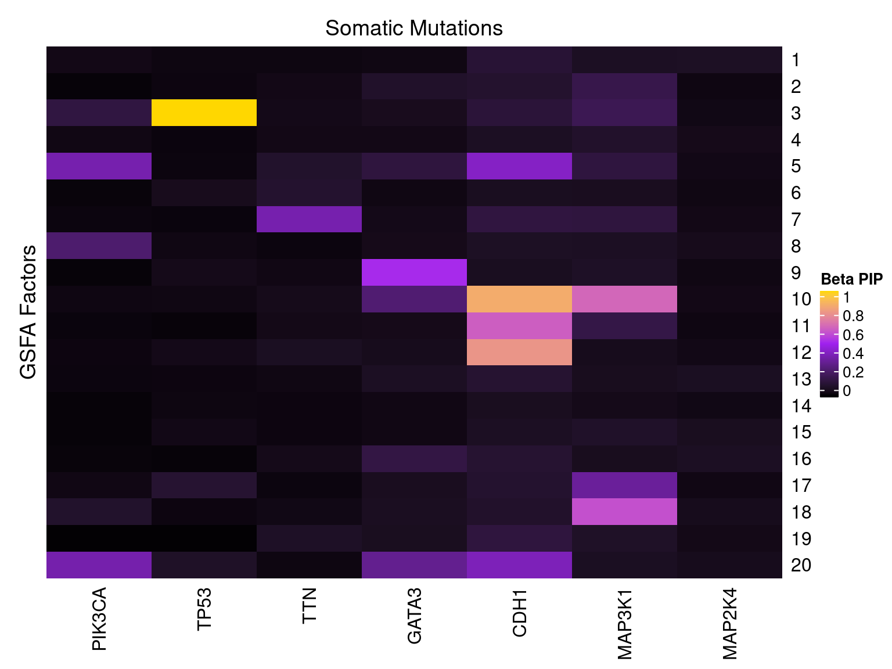

References: Perspective on Oncogenic Processes at the End of the Beginning of Cancer Genomics;
Comprehensive molecular portraits of human breast tumors.
Data source:
FireBrowse TCGA BRCA Archives.
Perturbations:
Somatic mutation status of selected frequently mutated driver genes (PIK3CA, TP53, TTN, GATA3, CDH1, MAP3K1, MAP2K4).
Samples:
TCGA breast invasive carcinoma (BRCA) tumor samples.
To avoid possible confounding due to gender and race, we confined our study samples to be only from female Caucasian subjects.
In addition, only samples with somatic mutation annotation and defined cancer subtypes were kept, resulted in 349 samples.
Genes:
Only the top 10k variable genes in samples of consideration were kept.
Normalization:
RSEM normalized counts corrected for subject age, tumor purity and cancer subtypes. The corrected and scaled expression data were used as input for subsequent factor analysis.
Here, our “guide”, \(G\) matrix, consists of the somatic mutation status of top 7 driver genes across samples.
We specified 20 factors in our model. In each case, Gibbs sampling was conducted for 2000 iterations, and the posterior mean estimates were averaged over the last 500 iterations.
For a given GSFA inference result, we can estimate the effect a certain KO condition \(m\) has on the expression of gene \(j\) by computing the LFSR of \(\beta_{m\cdot} \cdot W_{j\cdot}\).
| KO | PIK3CA | TP53 | TTN | GATA3 | CDH1 | MAP3K1 | MAP2K4 |
| Num_genes | 0 | 5491 | 0 | 0 | 378 | 0 | 0 |

Statistical test: hypergeometric test;
GO category: Biological Process.
Target: Genes w/ PIP > 0.95 in each factor;
Backgroud: all 10000 genes used in factor analysis.
GO terms that passed over-representation test fold change \(\geq\) 1.5 and q value \(<\) 0.05:
| ID | Description | GeneRatio | BgRatio | FoldChange | pvalue | qvalue | GS_size | |
|---|---|---|---|---|---|---|---|---|
| GO:0030198 | GO:0030198 | extracellular matrix organization | 171/2622 | 266/9264 | 2.27 | 3.55e-35 | 1.49e-31 | 266 |
| GO:0043062 | GO:0043062 | extracellular structure organization | 185/2622 | 305/9264 | 2.14 | 4.58e-33 | 9.60e-30 | 305 |
| GO:0001568 | GO:0001568 | blood vessel development | 252/2622 | 485/9264 | 1.84 | 1.48e-29 | 2.06e-26 | 485 |
| GO:0048514 | GO:0048514 | blood vessel morphogenesis | 223/2622 | 427/9264 | 1.85 | 1.40e-26 | 1.46e-23 | 427 |
| GO:0001525 | GO:0001525 | angiogenesis | 189/2622 | 363/9264 | 1.84 | 2.04e-22 | 1.71e-19 | 363 |
| GO:0031589 | GO:0031589 | cell-substrate adhesion | 137/2622 | 265/9264 | 1.83 | 3.47e-16 | 2.42e-13 | 265 |
| GO:0001501 | GO:0001501 | skeletal system development | 156/2622 | 323/9264 | 1.71 | 7.69e-15 | 4.60e-12 | 323 |
| GO:0009611 | GO:0009611 | response to wounding | 192/2622 | 429/9264 | 1.58 | 7.67e-14 | 4.02e-11 | 429 |
| GO:0001503 | GO:0001503 | ossification | 128/2622 | 257/9264 | 1.76 | 1.28e-13 | 5.95e-11 | 257 |
| GO:0048729 | GO:0048729 | tissue morphogenesis | 181/2622 | 407/9264 | 1.57 | 8.37e-13 | 3.51e-10 | 407 |
| GO:0030155 | GO:0030155 | regulation of cell adhesion | 204/2622 | 473/9264 | 1.52 | 1.05e-12 | 4.01e-10 | 473 |
| GO:0030199 | GO:0030199 | collagen fibril organization | 35/2622 | 44/9264 | 2.81 | 2.25e-12 | 7.84e-10 | 44 |
| GO:0090287 | GO:0090287 | regulation of cellular response to growth factor stimulus | 96/2622 | 184/9264 | 1.84 | 5.08e-12 | 1.64e-09 | 184 |
| GO:0043542 | GO:0043542 | endothelial cell migration | 86/2622 | 160/9264 | 1.90 | 8.23e-12 | 2.30e-09 | 160 |
| GO:0045596 | GO:0045596 | negative regulation of cell differentiation | 186/2622 | 430/9264 | 1.53 | 8.23e-12 | 2.30e-09 | 430 |
| GO:0030335 | GO:0030335 | positive regulation of cell migration | 161/2622 | 361/9264 | 1.58 | 1.24e-11 | 3.24e-09 | 361 |
| GO:1901342 | GO:1901342 | regulation of vasculature development | 112/2622 | 228/9264 | 1.74 | 1.38e-11 | 3.41e-09 | 228 |
| GO:0090130 | GO:0090130 | tissue migration | 111/2622 | 226/9264 | 1.74 | 1.73e-11 | 3.97e-09 | 226 |
| GO:2000147 | GO:2000147 | positive regulation of cell motility | 163/2622 | 368/9264 | 1.56 | 1.80e-11 | 3.97e-09 | 368 |
| GO:0042060 | GO:0042060 | wound healing | 158/2622 | 357/9264 | 1.56 | 4.02e-11 | 8.36e-09 | 357 |
| GO:0007160 | GO:0007160 | cell-matrix adhesion | 92/2622 | 179/9264 | 1.82 | 4.19e-11 | 8.36e-09 | 179 |
| GO:0001667 | GO:0001667 | ameboidal-type cell migration | 133/2622 | 288/9264 | 1.63 | 4.41e-11 | 8.39e-09 | 288 |
| GO:0051216 | GO:0051216 | cartilage development | 73/2622 | 132/9264 | 1.95 | 5.35e-11 | 9.74e-09 | 132 |
| GO:0010631 | GO:0010631 | epithelial cell migration | 108/2622 | 222/9264 | 1.72 | 6.80e-11 | 1.18e-08 | 222 |
| GO:0007178 | GO:0007178 | transmembrane receptor protein serine/threonine kinase signaling pathway | 106/2622 | 217/9264 | 1.73 | 7.52e-11 | 1.19e-08 | 217 |
| GO:0090132 | GO:0090132 | epithelium migration | 108/2622 | 223/9264 | 1.71 | 9.58e-11 | 1.38e-08 | 223 |
| GO:0040017 | GO:0040017 | positive regulation of locomotion | 168/2622 | 389/9264 | 1.53 | 1.03e-10 | 1.44e-08 | 389 |
| GO:0051272 | GO:0051272 | positive regulation of cellular component movement | 163/2622 | 375/9264 | 1.54 | 1.09e-10 | 1.47e-08 | 375 |
| GO:0045765 | GO:0045765 | regulation of angiogenesis | 101/2622 | 205/9264 | 1.74 | 1.14e-10 | 1.49e-08 | 205 |
| GO:0061448 | GO:0061448 | connective tissue development | 90/2622 | 177/9264 | 1.80 | 1.44e-10 | 1.77e-08 | 177 |
| GO:0010632 | GO:0010632 | regulation of epithelial cell migration | 86/2622 | 168/9264 | 1.81 | 2.37e-10 | 2.84e-08 | 168 |
| GO:0032963 | GO:0032963 | collagen metabolic process | 46/2622 | 73/9264 | 2.23 | 6.19e-10 | 7.20e-08 | 73 |
| GO:0030278 | GO:0030278 | regulation of ossification | 68/2622 | 126/9264 | 1.91 | 1.01e-09 | 1.08e-07 | 126 |
| GO:0001822 | GO:0001822 | kidney development | 92/2622 | 188/9264 | 1.73 | 1.21e-09 | 1.23e-07 | 188 |
| GO:0007229 | GO:0007229 | integrin-mediated signaling pathway | 47/2622 | 77/9264 | 2.16 | 1.88e-09 | 1.88e-07 | 77 |
| GO:0010594 | GO:0010594 | regulation of endothelial cell migration | 65/2622 | 120/9264 | 1.91 | 1.93e-09 | 1.88e-07 | 120 |
| GO:0002062 | GO:0002062 | chondrocyte differentiation | 46/2622 | 75/9264 | 2.17 | 2.24e-09 | 2.08e-07 | 75 |
| GO:0072001 | GO:0072001 | renal system development | 95/2622 | 198/9264 | 1.70 | 2.42e-09 | 2.20e-07 | 198 |
| GO:0001655 | GO:0001655 | urogenital system development | 105/2622 | 225/9264 | 1.65 | 2.47e-09 | 2.20e-07 | 225 |
| GO:0002040 | GO:0002040 | sprouting angiogenesis | 52/2622 | 90/9264 | 2.04 | 4.09e-09 | 3.44e-07 | 90 |
| GO:0061437 | GO:0061437 | renal system vasculature development | 19/2622 | 21/9264 | 3.20 | 4.13e-09 | 3.44e-07 | 21 |
| GO:0061440 | GO:0061440 | kidney vasculature development | 19/2622 | 21/9264 | 3.20 | 4.13e-09 | 3.44e-07 | 21 |
| GO:0007507 | GO:0007507 | heart development | 150/2622 | 353/9264 | 1.50 | 4.18e-09 | 3.44e-07 | 353 |
| GO:0060348 | GO:0060348 | bone development | 71/2622 | 137/9264 | 1.83 | 4.44e-09 | 3.58e-07 | 137 |
| GO:0001649 | GO:0001649 | osteoblast differentiation | 76/2622 | 150/9264 | 1.79 | 4.78e-09 | 3.78e-07 | 150 |
| GO:0060840 | GO:0060840 | artery development | 41/2622 | 65/9264 | 2.23 | 5.09e-09 | 3.95e-07 | 65 |
| GO:0050673 | GO:0050673 | epithelial cell proliferation | 119/2622 | 268/9264 | 1.57 | 8.65e-09 | 6.47e-07 | 268 |
| GO:0010634 | GO:0010634 | positive regulation of epithelial cell migration | 60/2622 | 112/9264 | 1.89 | 1.40e-08 | 9.78e-07 | 112 |
| GO:0090092 | GO:0090092 | regulation of transmembrane receptor protein serine/threonine kinase signaling pathway | 74/2622 | 148/9264 | 1.77 | 1.59e-08 | 1.09e-06 | 148 |
| GO:0001935 | GO:0001935 | endothelial cell proliferation | 57/2622 | 105/9264 | 1.92 | 1.71e-08 | 1.16e-06 | 105 |
| GO:0045667 | GO:0045667 | regulation of osteoblast differentiation | 47/2622 | 81/9264 | 2.05 | 1.89e-08 | 1.26e-06 | 81 |
| GO:0003170 | GO:0003170 | heart valve development | 28/2622 | 39/9264 | 2.54 | 2.10e-08 | 1.36e-06 | 39 |
| GO:0071559 | GO:0071559 | response to transforming growth factor beta | 83/2622 | 173/9264 | 1.70 | 2.48e-08 | 1.57e-06 | 173 |
| GO:1904018 | GO:1904018 | positive regulation of vasculature development | 66/2622 | 129/9264 | 1.81 | 3.00e-08 | 1.86e-06 | 129 |
| GO:0001936 | GO:0001936 | regulation of endothelial cell proliferation | 52/2622 | 94/9264 | 1.95 | 3.11e-08 | 1.89e-06 | 94 |
| GO:0050900 | GO:0050900 | leukocyte migration | 118/2622 | 271/9264 | 1.54 | 3.87e-08 | 2.32e-06 | 271 |
| GO:0072006 | GO:0072006 | nephron development | 53/2622 | 97/9264 | 1.93 | 4.04e-08 | 2.38e-06 | 97 |
| GO:0072012 | GO:0072012 | glomerulus vasculature development | 17/2622 | 19/9264 | 3.16 | 4.26e-08 | 2.48e-06 | 19 |
| GO:0045785 | GO:0045785 | positive regulation of cell adhesion | 120/2622 | 278/9264 | 1.53 | 5.38e-08 | 3.09e-06 | 278 |
| GO:0010810 | GO:0010810 | regulation of cell-substrate adhesion | 80/2622 | 168/9264 | 1.68 | 6.67e-08 | 3.73e-06 | 168 |
| GO:0071560 | GO:0071560 | cellular response to transforming growth factor beta stimulus | 80/2622 | 168/9264 | 1.68 | 6.67e-08 | 3.73e-06 | 168 |
| GO:0090288 | GO:0090288 | negative regulation of cellular response to growth factor stimulus | 56/2622 | 106/9264 | 1.87 | 8.02e-08 | 4.42e-06 | 106 |
| GO:0050678 | GO:0050678 | regulation of epithelial cell proliferation | 102/2622 | 229/9264 | 1.57 | 8.32e-08 | 4.52e-06 | 229 |
| GO:0032835 | GO:0032835 | glomerulus development | 31/2622 | 47/9264 | 2.33 | 8.51e-08 | 4.52e-06 | 47 |
| GO:0060485 | GO:0060485 | mesenchyme development | 83/2622 | 177/9264 | 1.66 | 8.93e-08 | 4.68e-06 | 177 |
| GO:0002573 | GO:0002573 | myeloid leukocyte differentiation | 69/2622 | 140/9264 | 1.74 | 9.98e-08 | 5.16e-06 | 140 |
| GO:0003158 | GO:0003158 | endothelium development | 48/2622 | 87/9264 | 1.95 | 1.17e-07 | 6.00e-06 | 87 |
| GO:0003179 | GO:0003179 | heart valve morphogenesis | 25/2622 | 35/9264 | 2.52 | 1.44e-07 | 7.28e-06 | 35 |
| GO:0002063 | GO:0002063 | chondrocyte development | 24/2622 | 33/9264 | 2.57 | 1.48e-07 | 7.39e-06 | 33 |
| GO:0010595 | GO:0010595 | positive regulation of endothelial cell migration | 44/2622 | 78/9264 | 1.99 | 1.67e-07 | 8.22e-06 | 78 |
| GO:0007179 | GO:0007179 | transforming growth factor beta receptor signaling pathway | 67/2622 | 137/9264 | 1.73 | 2.22e-07 | 1.07e-05 | 137 |
| GO:0014812 | GO:0014812 | muscle cell migration | 40/2622 | 69/9264 | 2.05 | 2.23e-07 | 1.07e-05 | 69 |
| GO:0070372 | GO:0070372 | regulation of ERK1 and ERK2 cascade | 88/2622 | 194/9264 | 1.60 | 2.40e-07 | 1.14e-05 | 194 |
| GO:0035904 | GO:0035904 | aorta development | 28/2622 | 42/9264 | 2.36 | 2.58e-07 | 1.21e-05 | 42 |
| GO:0050679 | GO:0050679 | positive regulation of epithelial cell proliferation | 64/2622 | 130/9264 | 1.74 | 3.04e-07 | 1.41e-05 | 130 |
| GO:0003007 | GO:0003007 | heart morphogenesis | 71/2622 | 149/9264 | 1.68 | 3.51e-07 | 1.62e-05 | 149 |
| GO:0045766 | GO:0045766 | positive regulation of angiogenesis | 58/2622 | 115/9264 | 1.78 | 3.85e-07 | 1.75e-05 | 115 |
| GO:0001763 | GO:0001763 | morphogenesis of a branching structure | 66/2622 | 136/9264 | 1.71 | 3.91e-07 | 1.76e-05 | 136 |
| GO:0003279 | GO:0003279 | cardiac septum development | 42/2622 | 75/9264 | 1.98 | 4.17e-07 | 1.86e-05 | 75 |
| GO:0048705 | GO:0048705 | skeletal system morphogenesis | 70/2622 | 147/9264 | 1.68 | 4.38e-07 | 1.91e-05 | 147 |
| GO:2000027 | GO:2000027 | regulation of animal organ morphogenesis | 70/2622 | 147/9264 | 1.68 | 4.38e-07 | 1.91e-05 | 147 |
| GO:0060562 | GO:0060562 | epithelial tube morphogenesis | 96/2622 | 219/9264 | 1.55 | 4.95e-07 | 2.11e-05 | 219 |
| GO:0003205 | GO:0003205 | cardiac chamber development | 55/2622 | 108/9264 | 1.80 | 5.11e-07 | 2.16e-05 | 108 |
| GO:0060349 | GO:0060349 | bone morphogenesis | 40/2622 | 71/9264 | 1.99 | 6.33e-07 | 2.65e-05 | 71 |
| GO:0010721 | GO:0010721 | negative regulation of cell development | 91/2622 | 206/9264 | 1.56 | 6.48e-07 | 2.69e-05 | 206 |
| GO:0070371 | GO:0070371 | ERK1 and ERK2 cascade | 92/2622 | 209/9264 | 1.56 | 6.81e-07 | 2.80e-05 | 209 |
| GO:0043534 | GO:0043534 | blood vessel endothelial cell migration | 48/2622 | 91/9264 | 1.86 | 7.13e-07 | 2.88e-05 | 91 |
| GO:0001570 | GO:0001570 | vasculogenesis | 34/2622 | 57/9264 | 2.11 | 7.16e-07 | 2.88e-05 | 57 |
| GO:0007596 | GO:0007596 | blood coagulation | 94/2622 | 215/9264 | 1.54 | 7.49e-07 | 2.99e-05 | 215 |
| GO:0007517 | GO:0007517 | muscle organ development | 97/2622 | 224/9264 | 1.53 | 8.53e-07 | 3.37e-05 | 224 |
| GO:0072109 | GO:0072109 | glomerular mesangium development | 11/2622 | 11/9264 | 3.53 | 9.20e-07 | 3.60e-05 | 11 |
| GO:0048844 | GO:0048844 | artery morphogenesis | 29/2622 | 46/9264 | 2.23 | 9.29e-07 | 3.60e-05 | 46 |
| GO:0050817 | GO:0050817 | coagulation | 94/2622 | 216/9264 | 1.54 | 9.64e-07 | 3.70e-05 | 216 |
| GO:0030168 | GO:0030168 | platelet activation | 52/2622 | 102/9264 | 1.80 | 9.97e-07 | 3.76e-05 | 102 |
| GO:0007599 | GO:0007599 | hemostasis | 95/2622 | 219/9264 | 1.53 | 1.01e-06 | 3.76e-05 | 219 |
| GO:0061035 | GO:0061035 | regulation of cartilage development | 28/2622 | 44/9264 | 2.25 | 1.09e-06 | 4.03e-05 | 44 |
| GO:0003206 | GO:0003206 | cardiac chamber morphogenesis | 44/2622 | 82/9264 | 1.90 | 1.11e-06 | 4.08e-05 | 82 |
| GO:0048754 | GO:0048754 | branching morphogenesis of an epithelial tube | 53/2622 | 105/9264 | 1.78 | 1.17e-06 | 4.27e-05 | 105 |
| GO:0043535 | GO:0043535 | regulation of blood vessel endothelial cell migration | 39/2622 | 70/9264 | 1.97 | 1.28e-06 | 4.63e-05 | 70 |
| GO:0061138 | GO:0061138 | morphogenesis of a branching epithelium | 62/2622 | 129/9264 | 1.70 | 1.33e-06 | 4.76e-05 | 129 |
| GO:0010718 | GO:0010718 | positive regulation of epithelial to mesenchymal transition | 25/2622 | 38/9264 | 2.32 | 1.66e-06 | 5.91e-05 | 38 |
| GO:0031214 | GO:0031214 | biomineral tissue development | 47/2622 | 91/9264 | 1.82 | 2.04e-06 | 7.18e-05 | 91 |
| GO:0060411 | GO:0060411 | cardiac septum morphogenesis | 31/2622 | 52/9264 | 2.11 | 2.25e-06 | 7.85e-05 | 52 |
| GO:0034446 | GO:0034446 | substrate adhesion-dependent cell spreading | 40/2622 | 74/9264 | 1.91 | 2.65e-06 | 9.11e-05 | 74 |
| GO:0006029 | GO:0006029 | proteoglycan metabolic process | 32/2622 | 55/9264 | 2.06 | 3.24e-06 | 1.09e-04 | 55 |
| GO:0022617 | GO:0022617 | extracellular matrix disassembly | 32/2622 | 55/9264 | 2.06 | 3.24e-06 | 1.09e-04 | 55 |
| GO:0007162 | GO:0007162 | negative regulation of cell adhesion | 82/2622 | 187/9264 | 1.55 | 3.27e-06 | 1.09e-04 | 187 |
| GO:0030336 | GO:0030336 | negative regulation of cell migration | 82/2622 | 187/9264 | 1.55 | 3.27e-06 | 1.09e-04 | 187 |
| GO:0001938 | GO:0001938 | positive regulation of endothelial cell proliferation | 38/2622 | 70/9264 | 1.92 | 4.10e-06 | 1.35e-04 | 70 |
| GO:0014909 | GO:0014909 | smooth muscle cell migration | 33/2622 | 58/9264 | 2.01 | 4.50e-06 | 1.47e-04 | 58 |
| GO:0006936 | GO:0006936 | muscle contraction | 74/2622 | 166/9264 | 1.58 | 4.73e-06 | 1.53e-04 | 166 |
| GO:0030509 | GO:0030509 | BMP signaling pathway | 45/2622 | 88/9264 | 1.81 | 4.74e-06 | 1.53e-04 | 88 |
| GO:0048771 | GO:0048771 | tissue remodeling | 50/2622 | 101/9264 | 1.75 | 4.80e-06 | 1.53e-04 | 101 |
| GO:0060393 | GO:0060393 | regulation of pathway-restricted SMAD protein phosphorylation | 22/2622 | 33/9264 | 2.36 | 5.10e-06 | 1.62e-04 | 33 |
| GO:0034329 | GO:0034329 | cell junction assembly | 82/2622 | 189/9264 | 1.53 | 5.42e-06 | 1.71e-04 | 189 |
| GO:0022612 | GO:0022612 | gland morphogenesis | 46/2622 | 91/9264 | 1.79 | 5.59e-06 | 1.75e-04 | 91 |
| GO:0045778 | GO:0045778 | positive regulation of ossification | 34/2622 | 61/9264 | 1.97 | 6.03e-06 | 1.85e-04 | 61 |
| GO:0050920 | GO:0050920 | regulation of chemotaxis | 65/2622 | 142/9264 | 1.62 | 6.06e-06 | 1.85e-04 | 142 |
| GO:0090101 | GO:0090101 | negative regulation of transmembrane receptor protein serine/threonine kinase signaling pathway | 42/2622 | 81/9264 | 1.83 | 6.20e-06 | 1.88e-04 | 81 |
| GO:1905314 | GO:1905314 | semi-lunar valve development | 17/2622 | 23/9264 | 2.61 | 7.34e-06 | 2.20e-04 | 23 |
| GO:0110110 | GO:0110110 | positive regulation of animal organ morphogenesis | 33/2622 | 59/9264 | 1.98 | 7.45e-06 | 2.20e-04 | 59 |
| GO:2000146 | GO:2000146 | negative regulation of cell motility | 84/2622 | 196/9264 | 1.51 | 7.46e-06 | 2.20e-04 | 196 |
| GO:1903510 | GO:1903510 | mucopolysaccharide metabolic process | 39/2622 | 74/9264 | 1.86 | 7.95e-06 | 2.33e-04 | 74 |
| GO:0002576 | GO:0002576 | platelet degranulation | 49/2622 | 100/9264 | 1.73 | 8.56e-06 | 2.49e-04 | 100 |
| GO:0060389 | GO:0060389 | pathway-restricted SMAD protein phosphorylation | 23/2622 | 36/9264 | 2.26 | 9.13e-06 | 2.64e-04 | 36 |
| GO:0060541 | GO:0060541 | respiratory system development | 63/2622 | 138/9264 | 1.61 | 9.34e-06 | 2.68e-04 | 138 |
| GO:0030316 | GO:0030316 | osteoclast differentiation | 34/2622 | 62/9264 | 1.94 | 9.74e-06 | 2.76e-04 | 62 |
| GO:0061041 | GO:0061041 | regulation of wound healing | 45/2622 | 90/9264 | 1.77 | 1.02e-05 | 2.86e-04 | 90 |
| GO:0006909 | GO:0006909 | phagocytosis | 78/2622 | 181/9264 | 1.52 | 1.23e-05 | 3.41e-04 | 181 |
| GO:0010717 | GO:0010717 | regulation of epithelial to mesenchymal transition | 35/2622 | 65/9264 | 1.90 | 1.24e-05 | 3.42e-04 | 65 |
| GO:0030193 | GO:0030193 | regulation of blood coagulation | 32/2622 | 58/9264 | 1.95 | 1.50e-05 | 4.00e-04 | 58 |
| GO:1900046 | GO:1900046 | regulation of hemostasis | 32/2622 | 58/9264 | 1.95 | 1.50e-05 | 4.00e-04 | 58 |
| GO:0003197 | GO:0003197 | endocardial cushion development | 19/2622 | 28/9264 | 2.40 | 1.56e-05 | 4.08e-04 | 28 |
| GO:0003209 | GO:0003209 | cardiac atrium morphogenesis | 13/2622 | 16/9264 | 2.87 | 1.65e-05 | 4.25e-04 | 16 |
| GO:0072215 | GO:0072215 | regulation of metanephros development | 13/2622 | 16/9264 | 2.87 | 1.65e-05 | 4.25e-04 | 16 |
| GO:0030203 | GO:0030203 | glycosaminoglycan metabolic process | 49/2622 | 102/9264 | 1.70 | 1.70e-05 | 4.34e-04 | 102 |
| GO:0006023 | GO:0006023 | aminoglycan biosynthetic process | 39/2622 | 76/9264 | 1.81 | 1.81e-05 | 4.57e-04 | 76 |
| GO:0050768 | GO:0050768 | negative regulation of neurogenesis | 76/2622 | 177/9264 | 1.52 | 1.85e-05 | 4.58e-04 | 177 |
| GO:0030279 | GO:0030279 | negative regulation of ossification | 26/2622 | 44/9264 | 2.09 | 1.85e-05 | 4.58e-04 | 44 |
| GO:0010862 | GO:0010862 | positive regulation of pathway-restricted SMAD protein phosphorylation | 17/2622 | 24/9264 | 2.50 | 1.85e-05 | 4.58e-04 | 24 |
| GO:0030510 | GO:0030510 | regulation of BMP signaling pathway | 31/2622 | 56/9264 | 1.96 | 1.86e-05 | 4.58e-04 | 56 |
| GO:0003230 | GO:0003230 | cardiac atrium development | 14/2622 | 18/9264 | 2.75 | 1.87e-05 | 4.58e-04 | 18 |
| GO:0071772 | GO:0071772 | response to BMP | 47/2622 | 97/9264 | 1.71 | 1.89e-05 | 4.58e-04 | 97 |
| GO:0071773 | GO:0071773 | cellular response to BMP stimulus | 47/2622 | 97/9264 | 1.71 | 1.89e-05 | 4.58e-04 | 97 |
| GO:0048762 | GO:0048762 | mesenchymal cell differentiation | 66/2622 | 149/9264 | 1.57 | 1.96e-05 | 4.68e-04 | 149 |
| GO:1901343 | GO:1901343 | negative regulation of vasculature development | 42/2622 | 84/9264 | 1.77 | 1.99e-05 | 4.74e-04 | 84 |
| GO:0006911 | GO:0006911 | phagocytosis, engulfment | 22/2622 | 35/9264 | 2.22 | 2.09e-05 | 4.92e-04 | 35 |
| GO:0030166 | GO:0030166 | proteoglycan biosynthetic process | 25/2622 | 42/9264 | 2.10 | 2.24e-05 | 5.18e-04 | 42 |
| GO:0099024 | GO:0099024 | plasma membrane invagination | 25/2622 | 42/9264 | 2.10 | 2.24e-05 | 5.18e-04 | 42 |
| GO:0006024 | GO:0006024 | glycosaminoglycan biosynthetic process | 38/2622 | 74/9264 | 1.81 | 2.26e-05 | 5.18e-04 | 74 |
| GO:0045446 | GO:0045446 | endothelial cell differentiation | 38/2622 | 74/9264 | 1.81 | 2.26e-05 | 5.18e-04 | 74 |
| GO:1903670 | GO:1903670 | regulation of sprouting angiogenesis | 30/2622 | 54/9264 | 1.96 | 2.30e-05 | 5.24e-04 | 54 |
| GO:0035265 | GO:0035265 | organ growth | 56/2622 | 122/9264 | 1.62 | 2.37e-05 | 5.37e-04 | 122 |
| GO:0050818 | GO:0050818 | regulation of coagulation | 32/2622 | 59/9264 | 1.92 | 2.39e-05 | 5.39e-04 | 59 |
| GO:0032964 | GO:0032964 | collagen biosynthetic process | 21/2622 | 33/9264 | 2.25 | 2.46e-05 | 5.51e-04 | 33 |
| GO:0042476 | GO:0042476 | odontogenesis | 41/2622 | 82/9264 | 1.77 | 2.49e-05 | 5.55e-04 | 82 |
| GO:0006022 | GO:0006022 | aminoglycan metabolic process | 50/2622 | 106/9264 | 1.67 | 2.61e-05 | 5.76e-04 | 106 |
| GO:0045669 | GO:0045669 | positive regulation of osteoblast differentiation | 27/2622 | 47/9264 | 2.03 | 2.61e-05 | 5.76e-04 | 47 |
| GO:0072073 | GO:0072073 | kidney epithelium development | 47/2622 | 98/9264 | 1.69 | 2.65e-05 | 5.81e-04 | 98 |
| GO:0045665 | GO:0045665 | negative regulation of neuron differentiation | 62/2622 | 139/9264 | 1.58 | 2.67e-05 | 5.82e-04 | 139 |
| GO:0002088 | GO:0002088 | lens development in camera-type eye | 24/2622 | 40/9264 | 2.12 | 2.72e-05 | 5.90e-04 | 40 |
| GO:1903844 | GO:1903844 | regulation of cellular response to transforming growth factor beta stimulus | 42/2622 | 85/9264 | 1.75 | 2.87e-05 | 6.11e-04 | 85 |
| GO:0032330 | GO:0032330 | regulation of chondrocyte differentiation | 20/2622 | 31/9264 | 2.28 | 2.87e-05 | 6.11e-04 | 31 |
| GO:0010324 | GO:0010324 | membrane invagination | 28/2622 | 50/9264 | 1.98 | 3.53e-05 | 7.43e-04 | 50 |
| GO:0017015 | GO:0017015 | regulation of transforming growth factor beta receptor signaling pathway | 41/2622 | 83/9264 | 1.75 | 3.59e-05 | 7.52e-04 | 83 |
| GO:0001837 | GO:0001837 | epithelial to mesenchymal transition | 47/2622 | 99/9264 | 1.68 | 3.67e-05 | 7.61e-04 | 99 |
| GO:0002685 | GO:0002685 | regulation of leukocyte migration | 55/2622 | 121/9264 | 1.61 | 3.93e-05 | 8.03e-04 | 121 |
| GO:0003094 | GO:0003094 | glomerular filtration | 11/2622 | 13/9264 | 2.99 | 3.95e-05 | 8.03e-04 | 13 |
| GO:0061383 | GO:0061383 | trabecula morphogenesis | 22/2622 | 36/9264 | 2.16 | 3.95e-05 | 8.03e-04 | 36 |
| GO:0070374 | GO:0070374 | positive regulation of ERK1 and ERK2 cascade | 60/2622 | 135/9264 | 1.57 | 4.08e-05 | 8.21e-04 | 135 |
| GO:0016525 | GO:0016525 | negative regulation of angiogenesis | 37/2622 | 73/9264 | 1.79 | 4.19e-05 | 8.40e-04 | 73 |
| GO:0042590 | GO:0042590 | antigen processing and presentation of exogenous peptide antigen via MHC class I | 17/2622 | 25/9264 | 2.40 | 4.26e-05 | 8.49e-04 | 25 |
| GO:1903034 | GO:1903034 | regulation of response to wounding | 49/2622 | 105/9264 | 1.65 | 4.44e-05 | 8.81e-04 | 105 |
| GO:0003231 | GO:0003231 | cardiac ventricle development | 40/2622 | 81/9264 | 1.74 | 4.49e-05 | 8.88e-04 | 81 |
| GO:0003151 | GO:0003151 | outflow tract morphogenesis | 29/2622 | 53/9264 | 1.93 | 4.61e-05 | 9.06e-04 | 53 |
| GO:0035909 | GO:0035909 | aorta morphogenesis | 16/2622 | 23/9264 | 2.46 | 4.70e-05 | 9.12e-04 | 23 |
| GO:0060317 | GO:0060317 | cardiac epithelial to mesenchymal transition | 16/2622 | 23/9264 | 2.46 | 4.70e-05 | 9.12e-04 | 23 |
| GO:0060412 | GO:0060412 | ventricular septum morphogenesis | 21/2622 | 34/9264 | 2.18 | 4.72e-05 | 9.12e-04 | 34 |
| GO:0072132 | GO:0072132 | mesenchyme morphogenesis | 21/2622 | 34/9264 | 2.18 | 4.72e-05 | 9.12e-04 | 34 |
| GO:0003177 | GO:0003177 | pulmonary valve development | 12/2622 | 15/9264 | 2.83 | 4.79e-05 | 9.19e-04 | 15 |
| GO:0070527 | GO:0070527 | platelet aggregation | 24/2622 | 41/9264 | 2.07 | 4.80e-05 | 9.19e-04 | 41 |
| GO:0010977 | GO:0010977 | negative regulation of neuron projection development | 47/2622 | 100/9264 | 1.66 | 5.05e-05 | 9.57e-04 | 100 |
| GO:0003203 | GO:0003203 | endocardial cushion morphogenesis | 15/2622 | 21/9264 | 2.52 | 5.05e-05 | 9.57e-04 | 21 |
| GO:0003272 | GO:0003272 | endocardial cushion formation | 13/2622 | 17/9264 | 2.70 | 5.19e-05 | 9.75e-04 | 17 |
| GO:0033622 | GO:0033622 | integrin activation | 13/2622 | 17/9264 | 2.70 | 5.19e-05 | 9.75e-04 | 17 |
| GO:0030282 | GO:0030282 | bone mineralization | 34/2622 | 66/9264 | 1.82 | 5.55e-05 | 1.03e-03 | 66 |
| GO:0050921 | GO:0050921 | positive regulation of chemotaxis | 45/2622 | 95/9264 | 1.67 | 5.72e-05 | 1.05e-03 | 95 |
| GO:0014910 | GO:0014910 | regulation of smooth muscle cell migration | 28/2622 | 51/9264 | 1.94 | 5.73e-05 | 1.05e-03 | 51 |
| GO:0032233 | GO:0032233 | positive regulation of actin filament bundle assembly | 28/2622 | 51/9264 | 1.94 | 5.73e-05 | 1.05e-03 | 51 |
| GO:0034109 | GO:0034109 | homotypic cell-cell adhesion | 30/2622 | 56/9264 | 1.89 | 5.83e-05 | 1.06e-03 | 56 |
| GO:0002474 | GO:0002474 | antigen processing and presentation of peptide antigen via MHC class I | 23/2622 | 39/9264 | 2.08 | 5.87e-05 | 1.06e-03 | 39 |
| GO:0072210 | GO:0072210 | metanephric nephron development | 19/2622 | 30/9264 | 2.24 | 6.65e-05 | 1.19e-03 | 30 |
| GO:0043536 | GO:0043536 | positive regulation of blood vessel endothelial cell migration | 25/2622 | 44/9264 | 2.01 | 6.66e-05 | 1.19e-03 | 44 |
| GO:0002761 | GO:0002761 | regulation of myeloid leukocyte differentiation | 38/2622 | 77/9264 | 1.74 | 7.04e-05 | 1.25e-03 | 77 |
| GO:0060350 | GO:0060350 | endochondral bone morphogenesis | 27/2622 | 49/9264 | 1.95 | 7.12e-05 | 1.26e-03 | 49 |
| GO:0010596 | GO:0010596 | negative regulation of endothelial cell migration | 22/2622 | 37/9264 | 2.10 | 7.14e-05 | 1.26e-03 | 37 |
| GO:0033627 | GO:0033627 | cell adhesion mediated by integrin | 29/2622 | 54/9264 | 1.90 | 7.28e-05 | 1.28e-03 | 54 |
| GO:0001937 | GO:0001937 | negative regulation of endothelial cell proliferation | 18/2622 | 28/9264 | 2.27 | 7.80e-05 | 1.36e-03 | 28 |
| GO:0010811 | GO:0010811 | positive regulation of cell-substrate adhesion | 45/2622 | 96/9264 | 1.66 | 7.84e-05 | 1.36e-03 | 96 |
| GO:0031345 | GO:0031345 | negative regulation of cell projection organization | 53/2622 | 118/9264 | 1.59 | 7.99e-05 | 1.38e-03 | 118 |
| GO:0051496 | GO:0051496 | positive regulation of stress fiber assembly | 24/2622 | 42/9264 | 2.02 | 8.22e-05 | 1.41e-03 | 42 |
| GO:0030324 | GO:0030324 | lung development | 54/2622 | 121/9264 | 1.58 | 8.49e-05 | 1.45e-03 | 121 |
| GO:0071675 | GO:0071675 | regulation of mononuclear cell migration | 21/2622 | 35/9264 | 2.12 | 8.67e-05 | 1.47e-03 | 35 |
| GO:2000181 | GO:2000181 | negative regulation of blood vessel morphogenesis | 37/2622 | 75/9264 | 1.74 | 8.82e-05 | 1.49e-03 | 75 |
| GO:0003281 | GO:0003281 | ventricular septum development | 28/2622 | 52/9264 | 1.90 | 9.08e-05 | 1.52e-03 | 52 |
| GO:0070167 | GO:0070167 | regulation of biomineral tissue development | 28/2622 | 52/9264 | 1.90 | 9.08e-05 | 1.52e-03 | 52 |
| GO:0031032 | GO:0031032 | actomyosin structure organization | 56/2622 | 127/9264 | 1.56 | 9.46e-05 | 1.57e-03 | 127 |
| GO:0097529 | GO:0097529 | myeloid leukocyte migration | 52/2622 | 116/9264 | 1.58 | 9.89e-05 | 1.63e-03 | 116 |
| GO:0030195 | GO:0030195 | negative regulation of blood coagulation | 23/2622 | 40/9264 | 2.03 | 1.01e-04 | 1.64e-03 | 40 |
| GO:0048644 | GO:0048644 | muscle organ morphogenesis | 23/2622 | 40/9264 | 2.03 | 1.01e-04 | 1.64e-03 | 40 |
| GO:0050819 | GO:0050819 | negative regulation of coagulation | 23/2622 | 40/9264 | 2.03 | 1.01e-04 | 1.64e-03 | 40 |
| GO:1900047 | GO:1900047 | negative regulation of hemostasis | 23/2622 | 40/9264 | 2.03 | 1.01e-04 | 1.64e-03 | 40 |
| GO:0030204 | GO:0030204 | chondroitin sulfate metabolic process | 16/2622 | 24/9264 | 2.36 | 1.04e-04 | 1.66e-03 | 24 |
| GO:0043537 | GO:0043537 | negative regulation of blood vessel endothelial cell migration | 16/2622 | 24/9264 | 2.36 | 1.04e-04 | 1.66e-03 | 24 |
| GO:2000826 | GO:2000826 | regulation of heart morphogenesis | 16/2622 | 24/9264 | 2.36 | 1.04e-04 | 1.66e-03 | 24 |
| GO:0035850 | GO:0035850 | epithelial cell differentiation involved in kidney development | 20/2622 | 33/9264 | 2.14 | 1.05e-04 | 1.67e-03 | 33 |
| GO:0001952 | GO:0001952 | regulation of cell-matrix adhesion | 45/2622 | 97/9264 | 1.64 | 1.07e-04 | 1.69e-03 | 97 |
| GO:0002042 | GO:0002042 | cell migration involved in sprouting angiogenesis | 25/2622 | 45/9264 | 1.96 | 1.10e-04 | 1.72e-03 | 45 |
| GO:0048738 | GO:0048738 | cardiac muscle tissue development | 54/2622 | 122/9264 | 1.56 | 1.11e-04 | 1.73e-03 | 122 |
| GO:0001704 | GO:0001704 | formation of primary germ layer | 39/2622 | 81/9264 | 1.70 | 1.13e-04 | 1.75e-03 | 81 |
| GO:0010633 | GO:0010633 | negative regulation of epithelial cell migration | 27/2622 | 50/9264 | 1.91 | 1.13e-04 | 1.75e-03 | 50 |
| GO:0071674 | GO:0071674 | mononuclear cell migration | 27/2622 | 50/9264 | 1.91 | 1.13e-04 | 1.75e-03 | 50 |
| GO:0002479 | GO:0002479 | antigen processing and presentation of exogenous peptide antigen via MHC class I, TAP-dependent | 15/2622 | 22/9264 | 2.41 | 1.17e-04 | 1.79e-03 | 22 |
| GO:0003184 | GO:0003184 | pulmonary valve morphogenesis | 10/2622 | 12/9264 | 2.94 | 1.19e-04 | 1.80e-03 | 12 |
| GO:0003198 | GO:0003198 | epithelial to mesenchymal transition involved in endocardial cushion formation | 10/2622 | 12/9264 | 2.94 | 1.19e-04 | 1.80e-03 | 12 |
| GO:0032331 | GO:0032331 | negative regulation of chondrocyte differentiation | 10/2622 | 12/9264 | 2.94 | 1.19e-04 | 1.80e-03 | 12 |
| GO:0090049 | GO:0090049 | regulation of cell migration involved in sprouting angiogenesis | 19/2622 | 31/9264 | 2.17 | 1.26e-04 | 1.90e-03 | 31 |
| GO:0001569 | GO:0001569 | branching involved in blood vessel morphogenesis | 14/2622 | 20/9264 | 2.47 | 1.29e-04 | 1.92e-03 | 20 |
| GO:0090100 | GO:0090100 | positive regulation of transmembrane receptor protein serine/threonine kinase signaling pathway | 32/2622 | 63/9264 | 1.79 | 1.29e-04 | 1.92e-03 | 63 |
| GO:0006027 | GO:0006027 | glycosaminoglycan catabolic process | 24/2622 | 43/9264 | 1.97 | 1.36e-04 | 2.02e-03 | 43 |
| GO:0097205 | GO:0097205 | renal filtration | 11/2622 | 14/9264 | 2.78 | 1.37e-04 | 2.02e-03 | 14 |
| GO:0003171 | GO:0003171 | atrioventricular valve development | 13/2622 | 18/9264 | 2.55 | 1.38e-04 | 2.03e-03 | 18 |
| GO:0030206 | GO:0030206 | chondroitin sulfate biosynthetic process | 13/2622 | 18/9264 | 2.55 | 1.38e-04 | 2.03e-03 | 18 |
| GO:0030574 | GO:0030574 | collagen catabolic process | 18/2622 | 29/9264 | 2.19 | 1.51e-04 | 2.20e-03 | 29 |
| GO:1905330 | GO:1905330 | regulation of morphogenesis of an epithelium | 46/2622 | 101/9264 | 1.61 | 1.55e-04 | 2.24e-03 | 101 |
| GO:0008360 | GO:0008360 | regulation of cell shape | 52/2622 | 118/9264 | 1.56 | 1.69e-04 | 2.43e-03 | 118 |
| GO:0033002 | GO:0033002 | muscle cell proliferation | 58/2622 | 135/9264 | 1.52 | 1.71e-04 | 2.45e-03 | 135 |
| GO:0006939 | GO:0006939 | smooth muscle contraction | 27/2622 | 51/9264 | 1.87 | 1.76e-04 | 2.52e-03 | 51 |
| GO:0030323 | GO:0030323 | respiratory tube development | 54/2622 | 124/9264 | 1.54 | 1.86e-04 | 2.64e-03 | 124 |
| GO:0098868 | GO:0098868 | bone growth | 20/2622 | 34/9264 | 2.08 | 1.87e-04 | 2.65e-03 | 34 |
| GO:1901888 | GO:1901888 | regulation of cell junction assembly | 35/2622 | 72/9264 | 1.72 | 1.97e-04 | 2.76e-03 | 72 |
| GO:0061005 | GO:0061005 | cell differentiation involved in kidney development | 22/2622 | 39/9264 | 1.99 | 2.10e-04 | 2.94e-03 | 39 |
| GO:0038084 | GO:0038084 | vascular endothelial growth factor signaling pathway | 16/2622 | 25/9264 | 2.26 | 2.13e-04 | 2.97e-03 | 25 |
| GO:1903845 | GO:1903845 | negative regulation of cellular response to transforming growth factor beta stimulus | 28/2622 | 54/9264 | 1.83 | 2.14e-04 | 2.98e-03 | 54 |
| GO:0072009 | GO:0072009 | nephron epithelium development | 36/2622 | 75/9264 | 1.70 | 2.21e-04 | 3.06e-03 | 75 |
| GO:0055001 | GO:0055001 | muscle cell development | 43/2622 | 94/9264 | 1.62 | 2.22e-04 | 3.08e-03 | 94 |
| GO:0003416 | GO:0003416 | endochondral bone growth | 19/2622 | 32/9264 | 2.10 | 2.29e-04 | 3.14e-03 | 32 |
| GO:1903053 | GO:1903053 | regulation of extracellular matrix organization | 19/2622 | 32/9264 | 2.10 | 2.29e-04 | 3.14e-03 | 32 |
| GO:0045165 | GO:0045165 | cell fate commitment | 54/2622 | 125/9264 | 1.53 | 2.38e-04 | 3.26e-03 | 125 |
| GO:0003014 | GO:0003014 | renal system process | 34/2622 | 70/9264 | 1.72 | 2.46e-04 | 3.34e-03 | 70 |
| GO:1903317 | GO:1903317 | regulation of protein maturation | 34/2622 | 70/9264 | 1.72 | 2.46e-04 | 3.34e-03 | 70 |
| GO:0035051 | GO:0035051 | cardiocyte differentiation | 41/2622 | 89/9264 | 1.63 | 2.56e-04 | 3.46e-03 | 89 |
| GO:0031960 | GO:0031960 | response to corticosteroid | 50/2622 | 114/9264 | 1.55 | 2.57e-04 | 3.46e-03 | 114 |
| GO:0098742 | GO:0098742 | cell-cell adhesion via plasma-membrane adhesion molecules | 57/2622 | 134/9264 | 1.50 | 2.65e-04 | 3.56e-03 | 134 |
| GO:0007492 | GO:0007492 | endoderm development | 27/2622 | 52/9264 | 1.83 | 2.69e-04 | 3.58e-03 | 52 |
| GO:0030512 | GO:0030512 | negative regulation of transforming growth factor beta receptor signaling pathway | 27/2622 | 52/9264 | 1.83 | 2.69e-04 | 3.58e-03 | 52 |
| GO:0048013 | GO:0048013 | ephrin receptor signaling pathway | 32/2622 | 65/9264 | 1.74 | 2.72e-04 | 3.60e-03 | 65 |
| GO:0061326 | GO:0061326 | renal tubule development | 32/2622 | 65/9264 | 1.74 | 2.72e-04 | 3.60e-03 | 65 |
| GO:0003208 | GO:0003208 | cardiac ventricle morphogenesis | 23/2622 | 42/9264 | 1.93 | 2.74e-04 | 3.62e-03 | 42 |
| GO:0050680 | GO:0050680 | negative regulation of epithelial cell proliferation | 42/2622 | 92/9264 | 1.61 | 2.77e-04 | 3.63e-03 | 92 |
| GO:0048660 | GO:0048660 | regulation of smooth muscle cell proliferation | 44/2622 | 98/9264 | 1.59 | 3.16e-04 | 4.10e-03 | 98 |
| GO:0035987 | GO:0035987 | endodermal cell differentiation | 20/2622 | 35/9264 | 2.02 | 3.21e-04 | 4.13e-03 | 35 |
| GO:0085029 | GO:0085029 | extracellular matrix assembly | 13/2622 | 19/9264 | 2.42 | 3.24e-04 | 4.16e-03 | 19 |
| GO:1903035 | GO:1903035 | negative regulation of response to wounding | 31/2622 | 63/9264 | 1.74 | 3.42e-04 | 4.36e-03 | 63 |
| GO:0035924 | GO:0035924 | cellular response to vascular endothelial growth factor stimulus | 22/2622 | 40/9264 | 1.94 | 3.42e-04 | 4.36e-03 | 40 |
| GO:0006026 | GO:0006026 | aminoglycan catabolic process | 24/2622 | 45/9264 | 1.88 | 3.46e-04 | 4.38e-03 | 45 |
| GO:0030500 | GO:0030500 | regulation of bone mineralization | 24/2622 | 45/9264 | 1.88 | 3.46e-04 | 4.38e-03 | 45 |
| GO:0035791 | GO:0035791 | platelet-derived growth factor receptor-beta signaling pathway | 9/2622 | 11/9264 | 2.89 | 3.54e-04 | 4.41e-03 | 11 |
| GO:0060973 | GO:0060973 | cell migration involved in heart development | 9/2622 | 11/9264 | 2.89 | 3.54e-04 | 4.41e-03 | 11 |
| GO:0097094 | GO:0097094 | craniofacial suture morphogenesis | 9/2622 | 11/9264 | 2.89 | 3.54e-04 | 4.41e-03 | 11 |
| GO:0002043 | GO:0002043 | blood vessel endothelial cell proliferation involved in sprouting angiogenesis | 12/2622 | 17/9264 | 2.49 | 3.58e-04 | 4.41e-03 | 17 |
| GO:0003181 | GO:0003181 | atrioventricular valve morphogenesis | 12/2622 | 17/9264 | 2.49 | 3.58e-04 | 4.41e-03 | 17 |
| GO:0050982 | GO:0050982 | detection of mechanical stimulus | 12/2622 | 17/9264 | 2.49 | 3.58e-04 | 4.41e-03 | 17 |
| GO:0061037 | GO:0061037 | negative regulation of cartilage development | 12/2622 | 17/9264 | 2.49 | 3.58e-04 | 4.41e-03 | 17 |
| GO:0070306 | GO:0070306 | lens fiber cell differentiation | 12/2622 | 17/9264 | 2.49 | 3.58e-04 | 4.41e-03 | 17 |
| GO:0072202 | GO:0072202 | cell differentiation involved in metanephros development | 12/2622 | 17/9264 | 2.49 | 3.58e-04 | 4.41e-03 | 17 |
| GO:0050765 | GO:0050765 | negative regulation of phagocytosis | 11/2622 | 15/9264 | 2.59 | 3.81e-04 | 4.66e-03 | 15 |
| GO:0040037 | GO:0040037 | negative regulation of fibroblast growth factor receptor signaling pathway | 10/2622 | 13/9264 | 2.72 | 3.84e-04 | 4.66e-03 | 13 |
| GO:0050651 | GO:0050651 | dermatan sulfate proteoglycan biosynthetic process | 10/2622 | 13/9264 | 2.72 | 3.84e-04 | 4.66e-03 | 13 |
| GO:0050655 | GO:0050655 | dermatan sulfate proteoglycan metabolic process | 10/2622 | 13/9264 | 2.72 | 3.84e-04 | 4.66e-03 | 13 |
| GO:0030856 | GO:0030856 | regulation of epithelial cell differentiation | 43/2622 | 96/9264 | 1.58 | 3.92e-04 | 4.73e-03 | 96 |
| GO:0045668 | GO:0045668 | negative regulation of osteoblast differentiation | 16/2622 | 26/9264 | 2.17 | 4.08e-04 | 4.89e-03 | 26 |
| GO:0050654 | GO:0050654 | chondroitin sulfate proteoglycan metabolic process | 16/2622 | 26/9264 | 2.17 | 4.08e-04 | 4.89e-03 | 26 |
| GO:0048659 | GO:0048659 | smooth muscle cell proliferation | 44/2622 | 99/9264 | 1.57 | 4.15e-04 | 4.94e-03 | 99 |
| GO:0002687 | GO:0002687 | positive regulation of leukocyte migration | 40/2622 | 88/9264 | 1.61 | 4.27e-04 | 5.07e-03 | 88 |
| GO:0070613 | GO:0070613 | regulation of protein processing | 33/2622 | 69/9264 | 1.69 | 4.33e-04 | 5.11e-03 | 69 |
| GO:2001236 | GO:2001236 | regulation of extrinsic apoptotic signaling pathway | 51/2622 | 119/9264 | 1.51 | 4.41e-04 | 5.19e-03 | 119 |
| GO:0035335 | GO:0035335 | peptidyl-tyrosine dephosphorylation | 31/2622 | 64/9264 | 1.71 | 4.85e-04 | 5.67e-03 | 64 |
| GO:0046718 | GO:0046718 | viral entry into host cell | 42/2622 | 94/9264 | 1.58 | 4.86e-04 | 5.67e-03 | 94 |
| GO:0006929 | GO:0006929 | substrate-dependent cell migration | 15/2622 | 24/9264 | 2.21 | 4.90e-04 | 5.70e-03 | 24 |
| GO:0030178 | GO:0030178 | negative regulation of Wnt signaling pathway | 48/2622 | 111/9264 | 1.53 | 5.02e-04 | 5.80e-03 | 111 |
| GO:0010812 | GO:0010812 | negative regulation of cell-substrate adhesion | 26/2622 | 51/9264 | 1.80 | 5.04e-04 | 5.80e-03 | 51 |
| GO:0031532 | GO:0031532 | actin cytoskeleton reorganization | 35/2622 | 75/9264 | 1.65 | 5.25e-04 | 5.99e-03 | 75 |
| GO:0048146 | GO:0048146 | positive regulation of fibroblast proliferation | 24/2622 | 46/9264 | 1.84 | 5.31e-04 | 6.02e-03 | 46 |
| GO:0035272 | GO:0035272 | exocrine system development | 20/2622 | 36/9264 | 1.96 | 5.32e-04 | 6.02e-03 | 36 |
| GO:0001892 | GO:0001892 | embryonic placenta development | 32/2622 | 67/9264 | 1.69 | 5.42e-04 | 6.12e-03 | 67 |
| GO:0003156 | GO:0003156 | regulation of animal organ formation | 14/2622 | 22/9264 | 2.25 | 5.83e-04 | 6.50e-03 | 22 |
| GO:0040036 | GO:0040036 | regulation of fibroblast growth factor receptor signaling pathway | 14/2622 | 22/9264 | 2.25 | 5.83e-04 | 6.50e-03 | 22 |
| GO:1902742 | GO:1902742 | apoptotic process involved in development | 14/2622 | 22/9264 | 2.25 | 5.83e-04 | 6.50e-03 | 22 |
| GO:1903531 | GO:1903531 | negative regulation of secretion by cell | 46/2622 | 106/9264 | 1.53 | 5.93e-04 | 6.59e-03 | 106 |
| GO:0007431 | GO:0007431 | salivary gland development | 17/2622 | 29/9264 | 2.07 | 6.03e-04 | 6.68e-03 | 29 |
| GO:0042116 | GO:0042116 | macrophage activation | 25/2622 | 49/9264 | 1.80 | 6.34e-04 | 6.97e-03 | 49 |
| GO:0008037 | GO:0008037 | cell recognition | 34/2622 | 73/9264 | 1.65 | 6.55e-04 | 7.19e-03 | 73 |
| GO:0030513 | GO:0030513 | positive regulation of BMP signaling pathway | 13/2622 | 20/9264 | 2.30 | 6.87e-04 | 7.44e-03 | 20 |
| GO:0050650 | GO:0050650 | chondroitin sulfate proteoglycan biosynthetic process | 13/2622 | 20/9264 | 2.30 | 6.87e-04 | 7.44e-03 | 20 |
| GO:0071709 | GO:0071709 | membrane assembly | 13/2622 | 20/9264 | 2.30 | 6.87e-04 | 7.44e-03 | 20 |
| GO:0050764 | GO:0050764 | regulation of phagocytosis | 26/2622 | 52/9264 | 1.77 | 7.40e-04 | 7.87e-03 | 52 |
| GO:0007435 | GO:0007435 | salivary gland morphogenesis | 16/2622 | 27/9264 | 2.09 | 7.40e-04 | 7.87e-03 | 27 |
| GO:0097028 | GO:0097028 | dendritic cell differentiation | 16/2622 | 27/9264 | 2.09 | 7.40e-04 | 7.87e-03 | 27 |
| GO:0035567 | GO:0035567 | non-canonical Wnt signaling pathway | 36/2622 | 79/9264 | 1.61 | 7.67e-04 | 8.09e-03 | 79 |
| GO:0032967 | GO:0032967 | positive regulation of collagen biosynthetic process | 12/2622 | 18/9264 | 2.36 | 7.97e-04 | 8.37e-03 | 18 |
| GO:0034332 | GO:0034332 | adherens junction organization | 48/2622 | 113/9264 | 1.50 | 8.13e-04 | 8.52e-03 | 113 |
| GO:0001708 | GO:0001708 | cell fate specification | 18/2622 | 32/9264 | 1.99 | 8.25e-04 | 8.60e-03 | 32 |
| GO:1903672 | GO:1903672 | positive regulation of sprouting angiogenesis | 18/2622 | 32/9264 | 1.99 | 8.25e-04 | 8.60e-03 | 32 |
| GO:0061045 | GO:0061045 | negative regulation of wound healing | 27/2622 | 55/9264 | 1.73 | 8.48e-04 | 8.73e-03 | 55 |
| GO:0001656 | GO:0001656 | metanephros development | 30/2622 | 63/9264 | 1.68 | 8.50e-04 | 8.73e-03 | 63 |
| GO:0072080 | GO:0072080 | nephron tubule development | 30/2622 | 63/9264 | 1.68 | 8.50e-04 | 8.73e-03 | 63 |
| GO:1902106 | GO:1902106 | negative regulation of leukocyte differentiation | 30/2622 | 63/9264 | 1.68 | 8.50e-04 | 8.73e-03 | 63 |
| GO:0001706 | GO:0001706 | endoderm formation | 20/2622 | 37/9264 | 1.91 | 8.52e-04 | 8.73e-03 | 37 |
| GO:0060415 | GO:0060415 | muscle tissue morphogenesis | 20/2622 | 37/9264 | 1.91 | 8.52e-04 | 8.73e-03 | 37 |
| GO:0044319 | GO:0044319 | wound healing, spreading of cells | 15/2622 | 25/9264 | 2.12 | 9.06e-04 | 9.09e-03 | 25 |
| GO:0090505 | GO:0090505 | epiboly involved in wound healing | 15/2622 | 25/9264 | 2.12 | 9.06e-04 | 9.09e-03 | 25 |
| GO:0003176 | GO:0003176 | aortic valve development | 11/2622 | 16/9264 | 2.43 | 9.07e-04 | 9.09e-03 | 16 |
| GO:0061311 | GO:0061311 | cell surface receptor signaling pathway involved in heart development | 11/2622 | 16/9264 | 2.43 | 9.07e-04 | 9.09e-03 | 16 |
| GO:0051897 | GO:0051897 | positive regulation of protein kinase B signaling | 45/2622 | 105/9264 | 1.51 | 9.33e-04 | 9.33e-03 | 105 |
| GO:0019935 | GO:0019935 | cyclic-nucleotide-mediated signaling | 40/2622 | 91/9264 | 1.55 | 9.72e-04 | 9.69e-03 | 91 |
| GO:0003159 | GO:0003159 | morphogenesis of an endothelium | 10/2622 | 14/9264 | 2.52 | 1.00e-03 | 9.83e-03 | 14 |
| GO:0044794 | GO:0044794 | positive regulation by host of viral process | 10/2622 | 14/9264 | 2.52 | 1.00e-03 | 9.83e-03 | 14 |
| GO:0061154 | GO:0061154 | endothelial tube morphogenesis | 10/2622 | 14/9264 | 2.52 | 1.00e-03 | 9.83e-03 | 14 |
| GO:0061298 | GO:0061298 | retina vasculature development in camera-type eye | 10/2622 | 14/9264 | 2.52 | 1.00e-03 | 9.83e-03 | 14 |
| GO:1903306 | GO:1903306 | negative regulation of regulated secretory pathway | 10/2622 | 14/9264 | 2.52 | 1.00e-03 | 9.83e-03 | 14 |
| GO:0032642 | GO:0032642 | regulation of chemokine production | 23/2622 | 45/9264 | 1.81 | 1.00e-03 | 9.83e-03 | 45 |
| GO:0030205 | GO:0030205 | dermatan sulfate metabolic process | 8/2622 | 10/9264 | 2.83 | 1.03e-03 | 1.00e-02 | 10 |
| GO:0030208 | GO:0030208 | dermatan sulfate biosynthetic process | 8/2622 | 10/9264 | 2.83 | 1.03e-03 | 1.00e-02 | 10 |
| GO:0060413 | GO:0060413 | atrial septum morphogenesis | 8/2622 | 10/9264 | 2.83 | 1.03e-03 | 1.00e-02 | 10 |
| GO:0072216 | GO:0072216 | positive regulation of metanephros development | 8/2622 | 10/9264 | 2.83 | 1.03e-03 | 1.00e-02 | 10 |
| GO:2001044 | GO:2001044 | regulation of integrin-mediated signaling pathway | 8/2622 | 10/9264 | 2.83 | 1.03e-03 | 1.00e-02 | 10 |
| GO:0090183 | GO:0090183 | regulation of kidney development | 21/2622 | 40/9264 | 1.85 | 1.05e-03 | 1.02e-02 | 40 |
| GO:0002089 | GO:0002089 | lens morphogenesis in camera-type eye | 9/2622 | 12/9264 | 2.65 | 1.06e-03 | 1.02e-02 | 12 |
| GO:0003283 | GO:0003283 | atrial septum development | 9/2622 | 12/9264 | 2.65 | 1.06e-03 | 1.02e-02 | 12 |
| GO:0051547 | GO:0051547 | regulation of keratinocyte migration | 9/2622 | 12/9264 | 2.65 | 1.06e-03 | 1.02e-02 | 12 |
| GO:0060976 | GO:0060976 | coronary vasculature development | 19/2622 | 35/9264 | 1.92 | 1.07e-03 | 1.02e-02 | 35 |
| GO:0055002 | GO:0055002 | striated muscle cell development | 37/2622 | 83/9264 | 1.58 | 1.08e-03 | 1.04e-02 | 83 |
| GO:0048592 | GO:0048592 | eye morphogenesis | 38/2622 | 86/9264 | 1.56 | 1.14e-03 | 1.09e-02 | 86 |
| GO:0045598 | GO:0045598 | regulation of fat cell differentiation | 39/2622 | 89/9264 | 1.55 | 1.20e-03 | 1.13e-02 | 89 |
| GO:0010463 | GO:0010463 | mesenchymal cell proliferation | 18/2622 | 33/9264 | 1.93 | 1.34e-03 | 1.25e-02 | 33 |
| GO:0030514 | GO:0030514 | negative regulation of BMP signaling pathway | 18/2622 | 33/9264 | 1.93 | 1.34e-03 | 1.25e-02 | 33 |
| GO:0045599 | GO:0045599 | negative regulation of fat cell differentiation | 18/2622 | 33/9264 | 1.93 | 1.34e-03 | 1.25e-02 | 33 |
| GO:0051384 | GO:0051384 | response to glucocorticoid | 43/2622 | 101/9264 | 1.50 | 1.41e-03 | 1.30e-02 | 101 |
| GO:0051928 | GO:0051928 | positive regulation of calcium ion transport | 29/2622 | 62/9264 | 1.65 | 1.47e-03 | 1.35e-02 | 62 |
| GO:0048008 | GO:0048008 | platelet-derived growth factor receptor signaling pathway | 23/2622 | 46/9264 | 1.77 | 1.47e-03 | 1.35e-02 | 46 |
| GO:0030326 | GO:0030326 | embryonic limb morphogenesis | 33/2622 | 73/9264 | 1.60 | 1.48e-03 | 1.35e-02 | 73 |
| GO:0035113 | GO:0035113 | embryonic appendage morphogenesis | 33/2622 | 73/9264 | 1.60 | 1.48e-03 | 1.35e-02 | 73 |
| GO:0003417 | GO:0003417 | growth plate cartilage development | 15/2622 | 26/9264 | 2.04 | 1.58e-03 | 1.43e-02 | 26 |
| GO:0090504 | GO:0090504 | epiboly | 15/2622 | 26/9264 | 2.04 | 1.58e-03 | 1.43e-02 | 26 |
| GO:0010714 | GO:0010714 | positive regulation of collagen metabolic process | 12/2622 | 19/9264 | 2.23 | 1.61e-03 | 1.44e-02 | 19 |
| GO:0016339 | GO:0016339 | calcium-dependent cell-cell adhesion via plasma membrane cell adhesion molecules | 12/2622 | 19/9264 | 2.23 | 1.61e-03 | 1.44e-02 | 19 |
| GO:0060343 | GO:0060343 | trabecula formation | 12/2622 | 19/9264 | 2.23 | 1.61e-03 | 1.44e-02 | 19 |
| GO:0090050 | GO:0090050 | positive regulation of cell migration involved in sprouting angiogenesis | 12/2622 | 19/9264 | 2.23 | 1.61e-03 | 1.44e-02 | 19 |
| GO:0034333 | GO:0034333 | adherens junction assembly | 35/2622 | 79/9264 | 1.57 | 1.66e-03 | 1.48e-02 | 79 |
| GO:0045670 | GO:0045670 | regulation of osteoclast differentiation | 19/2622 | 36/9264 | 1.86 | 1.67e-03 | 1.48e-02 | 36 |
| GO:0010712 | GO:0010712 | regulation of collagen metabolic process | 17/2622 | 31/9264 | 1.94 | 1.68e-03 | 1.49e-02 | 31 |
| GO:0060351 | GO:0060351 | cartilage development involved in endochondral bone morphogenesis | 17/2622 | 31/9264 | 1.94 | 1.68e-03 | 1.49e-02 | 31 |
| GO:0048144 | GO:0048144 | fibroblast proliferation | 31/2622 | 68/9264 | 1.61 | 1.72e-03 | 1.52e-02 | 68 |
| GO:0034637 | GO:0034637 | cellular carbohydrate biosynthetic process | 28/2622 | 60/9264 | 1.65 | 1.84e-03 | 1.60e-02 | 60 |
| GO:0035107 | GO:0035107 | appendage morphogenesis | 38/2622 | 88/9264 | 1.53 | 1.91e-03 | 1.65e-02 | 88 |
| GO:0035108 | GO:0035108 | limb morphogenesis | 38/2622 | 88/9264 | 1.53 | 1.91e-03 | 1.65e-02 | 88 |
| GO:0090090 | GO:0090090 | negative regulation of canonical Wnt signaling pathway | 38/2622 | 88/9264 | 1.53 | 1.91e-03 | 1.65e-02 | 88 |
| GO:0045920 | GO:0045920 | negative regulation of exocytosis | 11/2622 | 17/9264 | 2.29 | 1.91e-03 | 1.65e-02 | 17 |
| GO:0060536 | GO:0060536 | cartilage morphogenesis | 11/2622 | 17/9264 | 2.29 | 1.91e-03 | 1.65e-02 | 17 |
| GO:0060561 | GO:0060561 | apoptotic process involved in morphogenesis | 11/2622 | 17/9264 | 2.29 | 1.91e-03 | 1.65e-02 | 17 |
| GO:0007156 | GO:0007156 | homophilic cell adhesion via plasma membrane adhesion molecules | 33/2622 | 74/9264 | 1.58 | 1.95e-03 | 1.68e-02 | 74 |
| GO:0030501 | GO:0030501 | positive regulation of bone mineralization | 14/2622 | 24/9264 | 2.06 | 1.96e-03 | 1.68e-02 | 24 |
| GO:0044091 | GO:0044091 | membrane biogenesis | 14/2622 | 24/9264 | 2.06 | 1.96e-03 | 1.68e-02 | 24 |
| GO:0061384 | GO:0061384 | heart trabecula morphogenesis | 14/2622 | 24/9264 | 2.06 | 1.96e-03 | 1.68e-02 | 24 |
| GO:0045806 | GO:0045806 | negative regulation of endocytosis | 20/2622 | 39/9264 | 1.81 | 2.00e-03 | 1.71e-02 | 39 |
| GO:0060688 | GO:0060688 | regulation of morphogenesis of a branching structure | 20/2622 | 39/9264 | 1.81 | 2.00e-03 | 1.71e-02 | 39 |
| GO:0032722 | GO:0032722 | positive regulation of chemokine production | 18/2622 | 34/9264 | 1.87 | 2.10e-03 | 1.77e-02 | 34 |
| GO:0035329 | GO:0035329 | hippo signaling | 18/2622 | 34/9264 | 1.87 | 2.10e-03 | 1.77e-02 | 34 |
| GO:0070373 | GO:0070373 | negative regulation of ERK1 and ERK2 cascade | 26/2622 | 55/9264 | 1.67 | 2.10e-03 | 1.77e-02 | 55 |
| GO:0014911 | GO:0014911 | positive regulation of smooth muscle cell migration | 16/2622 | 29/9264 | 1.95 | 2.10e-03 | 1.77e-02 | 29 |
| GO:0030239 | GO:0030239 | myofibril assembly | 16/2622 | 29/9264 | 1.95 | 2.10e-03 | 1.77e-02 | 29 |
| GO:1904035 | GO:1904035 | regulation of epithelial cell apoptotic process | 27/2622 | 58/9264 | 1.64 | 2.30e-03 | 1.92e-02 | 58 |
| GO:0032602 | GO:0032602 | chemokine production | 24/2622 | 50/9264 | 1.70 | 2.38e-03 | 1.99e-02 | 50 |
| GO:0042730 | GO:0042730 | fibrinolysis | 13/2622 | 22/9264 | 2.09 | 2.43e-03 | 2.01e-02 | 22 |
| GO:0045601 | GO:0045601 | regulation of endothelial cell differentiation | 13/2622 | 22/9264 | 2.09 | 2.43e-03 | 2.01e-02 | 22 |
| GO:1903707 | GO:1903707 | negative regulation of hemopoiesis | 38/2622 | 89/9264 | 1.51 | 2.44e-03 | 2.02e-02 | 89 |
| GO:0060443 | GO:0060443 | mammary gland morphogenesis | 19/2622 | 37/9264 | 1.81 | 2.53e-03 | 2.09e-02 | 37 |
| GO:0002483 | GO:0002483 | antigen processing and presentation of endogenous peptide antigen | 9/2622 | 13/9264 | 2.45 | 2.57e-03 | 2.10e-02 | 13 |
| GO:0002825 | GO:0002825 | regulation of T-helper 1 type immune response | 9/2622 | 13/9264 | 2.45 | 2.57e-03 | 2.10e-02 | 13 |
| GO:0003180 | GO:0003180 | aortic valve morphogenesis | 9/2622 | 13/9264 | 2.45 | 2.57e-03 | 2.10e-02 | 13 |
| GO:0010934 | GO:0010934 | macrophage cytokine production | 9/2622 | 13/9264 | 2.45 | 2.57e-03 | 2.10e-02 | 13 |
| GO:0043931 | GO:0043931 | ossification involved in bone maturation | 9/2622 | 13/9264 | 2.45 | 2.57e-03 | 2.10e-02 | 13 |
| GO:0060231 | GO:0060231 | mesenchymal to epithelial transition | 9/2622 | 13/9264 | 2.45 | 2.57e-03 | 2.10e-02 | 13 |
| GO:0072111 | GO:0072111 | cell proliferation involved in kidney development | 9/2622 | 13/9264 | 2.45 | 2.57e-03 | 2.10e-02 | 13 |
| GO:0000271 | GO:0000271 | polysaccharide biosynthetic process | 25/2622 | 53/9264 | 1.67 | 2.64e-03 | 2.12e-02 | 53 |
| GO:0010464 | GO:0010464 | regulation of mesenchymal cell proliferation | 15/2622 | 27/9264 | 1.96 | 2.64e-03 | 2.12e-02 | 27 |
| GO:0008038 | GO:0008038 | neuron recognition | 17/2622 | 32/9264 | 1.88 | 2.65e-03 | 2.12e-02 | 32 |
| GO:0050919 | GO:0050919 | negative chemotaxis | 17/2622 | 32/9264 | 1.88 | 2.65e-03 | 2.12e-02 | 32 |
| GO:2000243 | GO:2000243 | positive regulation of reproductive process | 17/2622 | 32/9264 | 1.88 | 2.65e-03 | 2.12e-02 | 32 |
| GO:0048661 | GO:0048661 | positive regulation of smooth muscle cell proliferation | 29/2622 | 64/9264 | 1.60 | 2.67e-03 | 2.14e-02 | 64 |
| GO:0097581 | GO:0097581 | lamellipodium organization | 29/2622 | 64/9264 | 1.60 | 2.67e-03 | 2.14e-02 | 64 |
| GO:0010935 | GO:0010935 | regulation of macrophage cytokine production | 8/2622 | 11/9264 | 2.57 | 2.84e-03 | 2.24e-02 | 11 |
| GO:0038065 | GO:0038065 | collagen-activated signaling pathway | 8/2622 | 11/9264 | 2.57 | 2.84e-03 | 2.24e-02 | 11 |
| GO:0042340 | GO:0042340 | keratan sulfate catabolic process | 8/2622 | 11/9264 | 2.57 | 2.84e-03 | 2.24e-02 | 11 |
| GO:0071801 | GO:0071801 | regulation of podosome assembly | 8/2622 | 11/9264 | 2.57 | 2.84e-03 | 2.24e-02 | 11 |
| GO:0048145 | GO:0048145 | regulation of fibroblast proliferation | 30/2622 | 67/9264 | 1.58 | 2.85e-03 | 2.24e-02 | 67 |
| GO:0014912 | GO:0014912 | negative regulation of smooth muscle cell migration | 12/2622 | 20/9264 | 2.12 | 2.99e-03 | 2.34e-02 | 20 |
| GO:0033687 | GO:0033687 | osteoblast proliferation | 12/2622 | 20/9264 | 2.12 | 2.99e-03 | 2.34e-02 | 20 |
| GO:0090303 | GO:0090303 | positive regulation of wound healing | 18/2622 | 35/9264 | 1.82 | 3.19e-03 | 2.47e-02 | 35 |
| GO:1903524 | GO:1903524 | positive regulation of blood circulation | 18/2622 | 35/9264 | 1.82 | 3.19e-03 | 2.47e-02 | 35 |
| GO:1905207 | GO:1905207 | regulation of cardiocyte differentiation | 18/2622 | 35/9264 | 1.82 | 3.19e-03 | 2.47e-02 | 35 |
| GO:0048663 | GO:0048663 | neuron fate commitment | 14/2622 | 25/9264 | 1.98 | 3.31e-03 | 2.55e-02 | 25 |
| GO:0019933 | GO:0019933 | cAMP-mediated signaling | 33/2622 | 76/9264 | 1.53 | 3.31e-03 | 2.55e-02 | 76 |
| GO:0030857 | GO:0030857 | negative regulation of epithelial cell differentiation | 16/2622 | 30/9264 | 1.88 | 3.34e-03 | 2.56e-02 | 30 |
| GO:0090184 | GO:0090184 | positive regulation of kidney development | 16/2622 | 30/9264 | 1.88 | 3.34e-03 | 2.56e-02 | 30 |
| GO:0009582 | GO:0009582 | detection of abiotic stimulus | 21/2622 | 43/9264 | 1.73 | 3.37e-03 | 2.58e-02 | 43 |
| GO:0048593 | GO:0048593 | camera-type eye morphogenesis | 29/2622 | 65/9264 | 1.58 | 3.54e-03 | 2.68e-02 | 65 |
| GO:0051893 | GO:0051893 | regulation of focal adhesion assembly | 25/2622 | 54/9264 | 1.64 | 3.61e-03 | 2.71e-02 | 54 |
| GO:0090109 | GO:0090109 | regulation of cell-substrate junction assembly | 25/2622 | 54/9264 | 1.64 | 3.61e-03 | 2.71e-02 | 54 |
| GO:0003148 | GO:0003148 | outflow tract septum morphogenesis | 11/2622 | 18/9264 | 2.16 | 3.67e-03 | 2.74e-02 | 18 |
| GO:0002763 | GO:0002763 | positive regulation of myeloid leukocyte differentiation | 17/2622 | 33/9264 | 1.82 | 4.03e-03 | 2.99e-02 | 33 |
| GO:0030032 | GO:0030032 | lamellipodium assembly | 23/2622 | 49/9264 | 1.66 | 4.16e-03 | 3.07e-02 | 49 |
| GO:0045639 | GO:0045639 | positive regulation of myeloid cell differentiation | 27/2622 | 60/9264 | 1.59 | 4.16e-03 | 3.07e-02 | 60 |
| GO:0043277 | GO:0043277 | apoptotic cell clearance | 15/2622 | 28/9264 | 1.89 | 4.21e-03 | 3.09e-02 | 28 |
| GO:0050906 | GO:0050906 | detection of stimulus involved in sensory perception | 15/2622 | 28/9264 | 1.89 | 4.21e-03 | 3.09e-02 | 28 |
| GO:0002792 | GO:0002792 | negative regulation of peptide secretion | 33/2622 | 77/9264 | 1.51 | 4.24e-03 | 3.11e-02 | 77 |
| GO:0003433 | GO:0003433 | chondrocyte development involved in endochondral bone morphogenesis | 10/2622 | 16/9264 | 2.21 | 4.47e-03 | 3.24e-02 | 16 |
| GO:0043032 | GO:0043032 | positive regulation of macrophage activation | 10/2622 | 16/9264 | 2.21 | 4.47e-03 | 3.24e-02 | 16 |
| GO:0060571 | GO:0060571 | morphogenesis of an epithelial fold | 10/2622 | 16/9264 | 2.21 | 4.47e-03 | 3.24e-02 | 16 |
| GO:2000050 | GO:2000050 | regulation of non-canonical Wnt signaling pathway | 10/2622 | 16/9264 | 2.21 | 4.47e-03 | 3.24e-02 | 16 |
| GO:2000171 | GO:2000171 | negative regulation of dendrite development | 10/2622 | 16/9264 | 2.21 | 4.47e-03 | 3.24e-02 | 16 |
| GO:0007189 | GO:0007189 | adenylate cyclase-activating G protein-coupled receptor signaling pathway | 24/2622 | 52/9264 | 1.63 | 4.52e-03 | 3.26e-02 | 52 |
| GO:0001885 | GO:0001885 | endothelial cell development | 21/2622 | 44/9264 | 1.69 | 4.75e-03 | 3.40e-02 | 44 |
| GO:0001954 | GO:0001954 | positive regulation of cell-matrix adhesion | 21/2622 | 44/9264 | 1.69 | 4.75e-03 | 3.40e-02 | 44 |
| GO:0001953 | GO:0001953 | negative regulation of cell-matrix adhesion | 16/2622 | 31/9264 | 1.82 | 5.10e-03 | 3.64e-02 | 31 |
| GO:0007009 | GO:0007009 | plasma membrane organization | 26/2622 | 58/9264 | 1.58 | 5.19e-03 | 3.68e-02 | 58 |
| GO:0051591 | GO:0051591 | response to cAMP | 26/2622 | 58/9264 | 1.58 | 5.19e-03 | 3.68e-02 | 58 |
| GO:0033692 | GO:0033692 | cellular polysaccharide biosynthetic process | 22/2622 | 47/9264 | 1.65 | 5.23e-03 | 3.70e-02 | 47 |
| GO:0048706 | GO:0048706 | embryonic skeletal system development | 32/2622 | 75/9264 | 1.51 | 5.23e-03 | 3.70e-02 | 75 |
| GO:0006940 | GO:0006940 | regulation of smooth muscle contraction | 14/2622 | 26/9264 | 1.90 | 5.32e-03 | 3.73e-02 | 26 |
| GO:0032965 | GO:0032965 | regulation of collagen biosynthetic process | 14/2622 | 26/9264 | 1.90 | 5.32e-03 | 3.73e-02 | 26 |
| GO:0070169 | GO:0070169 | positive regulation of biomineral tissue development | 14/2622 | 26/9264 | 1.90 | 5.32e-03 | 3.73e-02 | 26 |
| GO:0110111 | GO:0110111 | negative regulation of animal organ morphogenesis | 14/2622 | 26/9264 | 1.90 | 5.32e-03 | 3.73e-02 | 26 |
| GO:0050918 | GO:0050918 | positive chemotaxis | 19/2622 | 39/9264 | 1.72 | 5.37e-03 | 3.74e-02 | 39 |
| GO:0003081 | GO:0003081 | regulation of systemic arterial blood pressure by renin-angiotensin | 9/2622 | 14/9264 | 2.27 | 5.40e-03 | 3.74e-02 | 14 |
| GO:0010544 | GO:0010544 | negative regulation of platelet activation | 9/2622 | 14/9264 | 2.27 | 5.40e-03 | 3.74e-02 | 14 |
| GO:0010715 | GO:0010715 | regulation of extracellular matrix disassembly | 9/2622 | 14/9264 | 2.27 | 5.40e-03 | 3.74e-02 | 14 |
| GO:0070977 | GO:0070977 | bone maturation | 9/2622 | 14/9264 | 2.27 | 5.40e-03 | 3.74e-02 | 14 |
| GO:0071800 | GO:0071800 | podosome assembly | 9/2622 | 14/9264 | 2.27 | 5.40e-03 | 3.74e-02 | 14 |
| GO:0014068 | GO:0014068 | positive regulation of phosphatidylinositol 3-kinase signaling | 23/2622 | 50/9264 | 1.63 | 5.67e-03 | 3.91e-02 | 50 |
| GO:1901216 | GO:1901216 | positive regulation of neuron death | 28/2622 | 64/9264 | 1.55 | 5.76e-03 | 3.96e-02 | 64 |
| GO:0002548 | GO:0002548 | monocyte chemotaxis | 17/2622 | 34/9264 | 1.77 | 5.97e-03 | 4.10e-02 | 34 |
| GO:0009581 | GO:0009581 | detection of external stimulus | 20/2622 | 42/9264 | 1.68 | 5.99e-03 | 4.10e-02 | 42 |
| GO:0051149 | GO:0051149 | positive regulation of muscle cell differentiation | 24/2622 | 53/9264 | 1.60 | 6.08e-03 | 4.15e-02 | 53 |
| GO:0007045 | GO:0007045 | cell-substrate adherens junction assembly | 30/2622 | 70/9264 | 1.51 | 6.23e-03 | 4.24e-02 | 70 |
| GO:0048041 | GO:0048041 | focal adhesion assembly | 30/2622 | 70/9264 | 1.51 | 6.23e-03 | 4.24e-02 | 70 |
| GO:0001771 | GO:0001771 | immunological synapse formation | 8/2622 | 12/9264 | 2.36 | 6.42e-03 | 4.28e-02 | 12 |
| GO:0003414 | GO:0003414 | chondrocyte morphogenesis involved in endochondral bone morphogenesis | 8/2622 | 12/9264 | 2.36 | 6.42e-03 | 4.28e-02 | 12 |
| GO:0003429 | GO:0003429 | growth plate cartilage chondrocyte morphogenesis | 8/2622 | 12/9264 | 2.36 | 6.42e-03 | 4.28e-02 | 12 |
| GO:0042308 | GO:0042308 | negative regulation of protein import into nucleus | 8/2622 | 12/9264 | 2.36 | 6.42e-03 | 4.28e-02 | 12 |
| GO:0070208 | GO:0070208 | protein heterotrimerization | 8/2622 | 12/9264 | 2.36 | 6.42e-03 | 4.28e-02 | 12 |
| GO:0072224 | GO:0072224 | metanephric glomerulus development | 8/2622 | 12/9264 | 2.36 | 6.42e-03 | 4.28e-02 | 12 |
| GO:0090171 | GO:0090171 | chondrocyte morphogenesis | 8/2622 | 12/9264 | 2.36 | 6.42e-03 | 4.28e-02 | 12 |
| GO:1902547 | GO:1902547 | regulation of cellular response to vascular endothelial growth factor stimulus | 8/2622 | 12/9264 | 2.36 | 6.42e-03 | 4.28e-02 | 12 |
| GO:1904590 | GO:1904590 | negative regulation of protein import | 8/2622 | 12/9264 | 2.36 | 6.42e-03 | 4.28e-02 | 12 |
| GO:0050709 | GO:0050709 | negative regulation of protein secretion | 31/2622 | 73/9264 | 1.50 | 6.44e-03 | 4.28e-02 | 73 |
| GO:2000241 | GO:2000241 | regulation of reproductive process | 31/2622 | 73/9264 | 1.50 | 6.44e-03 | 4.28e-02 | 73 |
| GO:0001974 | GO:0001974 | blood vessel remodeling | 15/2622 | 29/9264 | 1.83 | 6.47e-03 | 4.28e-02 | 29 |
| GO:0007200 | GO:0007200 | phospholipase C-activating G protein-coupled receptor signaling pathway | 15/2622 | 29/9264 | 1.83 | 6.47e-03 | 4.28e-02 | 29 |
| GO:0001958 | GO:0001958 | endochondral ossification | 11/2622 | 19/9264 | 2.05 | 6.50e-03 | 4.28e-02 | 19 |
| GO:0002053 | GO:0002053 | positive regulation of mesenchymal cell proliferation | 11/2622 | 19/9264 | 2.05 | 6.50e-03 | 4.28e-02 | 19 |
| GO:0010092 | GO:0010092 | specification of animal organ identity | 11/2622 | 19/9264 | 2.05 | 6.50e-03 | 4.28e-02 | 19 |
| GO:0036075 | GO:0036075 | replacement ossification | 11/2622 | 19/9264 | 2.05 | 6.50e-03 | 4.28e-02 | 19 |
| GO:0072273 | GO:0072273 | metanephric nephron morphogenesis | 11/2622 | 19/9264 | 2.05 | 6.50e-03 | 4.28e-02 | 19 |
| GO:0034103 | GO:0034103 | regulation of tissue remodeling | 21/2622 | 45/9264 | 1.65 | 6.57e-03 | 4.31e-02 | 45 |
| GO:0003338 | GO:0003338 | metanephros morphogenesis | 13/2622 | 24/9264 | 1.91 | 6.73e-03 | 4.38e-02 | 24 |
| GO:0010955 | GO:0010955 | negative regulation of protein processing | 13/2622 | 24/9264 | 1.91 | 6.73e-03 | 4.38e-02 | 24 |
| GO:0042088 | GO:0042088 | T-helper 1 type immune response | 13/2622 | 24/9264 | 1.91 | 6.73e-03 | 4.38e-02 | 24 |
| GO:0060325 | GO:0060325 | face morphogenesis | 13/2622 | 24/9264 | 1.91 | 6.73e-03 | 4.38e-02 | 24 |
| GO:1903318 | GO:1903318 | negative regulation of protein maturation | 13/2622 | 24/9264 | 1.91 | 6.73e-03 | 4.38e-02 | 24 |
| GO:0050922 | GO:0050922 | negative regulation of chemotaxis | 18/2622 | 37/9264 | 1.72 | 6.79e-03 | 4.41e-02 | 37 |
| GO:0010771 | GO:0010771 | negative regulation of cell morphogenesis involved in differentiation | 28/2622 | 65/9264 | 1.52 | 7.43e-03 | 4.70e-02 | 65 |
| GO:0001765 | GO:0001765 | membrane raft assembly | 7/2622 | 10/9264 | 2.47 | 7.44e-03 | 4.70e-02 | 10 |
| GO:0001886 | GO:0001886 | endothelial cell morphogenesis | 7/2622 | 10/9264 | 2.47 | 7.44e-03 | 4.70e-02 | 10 |
| GO:0016264 | GO:0016264 | gap junction assembly | 7/2622 | 10/9264 | 2.47 | 7.44e-03 | 4.70e-02 | 10 |
| GO:0051549 | GO:0051549 | positive regulation of keratinocyte migration | 7/2622 | 10/9264 | 2.47 | 7.44e-03 | 4.70e-02 | 10 |
| GO:0060712 | GO:0060712 | spongiotrophoblast layer development | 7/2622 | 10/9264 | 2.47 | 7.44e-03 | 4.70e-02 | 10 |
| GO:0060841 | GO:0060841 | venous blood vessel development | 7/2622 | 10/9264 | 2.47 | 7.44e-03 | 4.70e-02 | 10 |
| GO:0072283 | GO:0072283 | metanephric renal vesicle morphogenesis | 7/2622 | 10/9264 | 2.47 | 7.44e-03 | 4.70e-02 | 10 |
| GO:1903054 | GO:1903054 | negative regulation of extracellular matrix organization | 7/2622 | 10/9264 | 2.47 | 7.44e-03 | 4.70e-02 | 10 |
| GO:1905153 | GO:1905153 | regulation of membrane invagination | 7/2622 | 10/9264 | 2.47 | 7.44e-03 | 4.70e-02 | 10 |
| GO:0042310 | GO:0042310 | vasoconstriction | 19/2622 | 40/9264 | 1.68 | 7.56e-03 | 4.75e-02 | 40 |
| GO:0045123 | GO:0045123 | cellular extravasation | 19/2622 | 40/9264 | 1.68 | 7.56e-03 | 4.75e-02 | 40 |
| GO:0060395 | GO:0060395 | SMAD protein signal transduction | 19/2622 | 40/9264 | 1.68 | 7.56e-03 | 4.75e-02 | 40 |
| GO:0045445 | GO:0045445 | myoblast differentiation | 23/2622 | 51/9264 | 1.59 | 7.61e-03 | 4.77e-02 | 51 |
| GO:0044264 | GO:0044264 | cellular polysaccharide metabolic process | 29/2622 | 68/9264 | 1.51 | 7.69e-03 | 4.81e-02 | 68 |
| ID | Description | GeneRatio | BgRatio | FoldChange | pvalue | qvalue | GS_size | |
|---|---|---|---|---|---|---|---|---|
| GO:0006397 | GO:0006397 | mRNA processing | 192/3063 | 373/9264 | 1.56 | 5.41e-14 | 2.73e-10 | 373 |
| GO:0008380 | GO:0008380 | RNA splicing | 173/3063 | 331/9264 | 1.58 | 1.76e-13 | 4.46e-10 | 331 |
| GO:0051028 | GO:0051028 | mRNA transport | 82/3063 | 131/9264 | 1.89 | 3.15e-12 | 5.31e-09 | 131 |
| GO:0000375 | GO:0000375 | RNA splicing, via transesterification reactions | 139/3063 | 263/9264 | 1.60 | 1.58e-11 | 2.00e-08 | 263 |
| GO:0000377 | GO:0000377 | RNA splicing, via transesterification reactions with bulged adenosine as nucleophile | 137/3063 | 260/9264 | 1.59 | 2.95e-11 | 2.48e-08 | 260 |
| GO:0000398 | GO:0000398 | mRNA splicing, via spliceosome | 137/3063 | 260/9264 | 1.59 | 2.95e-11 | 2.48e-08 | 260 |
| GO:0051236 | GO:0051236 | establishment of RNA localization | 97/3063 | 171/9264 | 1.72 | 1.23e-10 | 8.65e-08 | 171 |
| GO:0033119 | GO:0033119 | negative regulation of RNA splicing | 23/3063 | 24/9264 | 2.90 | 1.37e-10 | 8.65e-08 | 24 |
| GO:0050657 | GO:0050657 | nucleic acid transport | 95/3063 | 168/9264 | 1.71 | 2.41e-10 | 1.22e-07 | 168 |
| GO:0050658 | GO:0050658 | RNA transport | 95/3063 | 168/9264 | 1.71 | 2.41e-10 | 1.22e-07 | 168 |
| GO:0015931 | GO:0015931 | nucleobase-containing compound transport | 108/3063 | 198/9264 | 1.65 | 2.69e-10 | 1.24e-07 | 198 |
| GO:0006403 | GO:0006403 | RNA localization | 108/3063 | 199/9264 | 1.64 | 3.99e-10 | 1.68e-07 | 199 |
| GO:0006406 | GO:0006406 | mRNA export from nucleus | 61/3063 | 99/9264 | 1.86 | 4.68e-09 | 1.69e-06 | 99 |
| GO:0071427 | GO:0071427 | mRNA-containing ribonucleoprotein complex export from nucleus | 61/3063 | 99/9264 | 1.86 | 4.68e-09 | 1.69e-06 | 99 |
| GO:0050684 | GO:0050684 | regulation of mRNA processing | 64/3063 | 106/9264 | 1.83 | 6.29e-09 | 2.12e-06 | 106 |
| GO:0043484 | GO:0043484 | regulation of RNA splicing | 63/3063 | 104/9264 | 1.83 | 6.87e-09 | 2.17e-06 | 104 |
| GO:0006405 | GO:0006405 | RNA export from nucleus | 72/3063 | 124/9264 | 1.76 | 7.82e-09 | 2.33e-06 | 124 |
| GO:0048024 | GO:0048024 | regulation of mRNA splicing, via spliceosome | 49/3063 | 76/9264 | 1.95 | 1.85e-08 | 5.19e-06 | 76 |
| GO:0048025 | GO:0048025 | negative regulation of mRNA splicing, via spliceosome | 18/3063 | 19/9264 | 2.87 | 2.82e-08 | 7.50e-06 | 19 |
| GO:0071166 | GO:0071166 | ribonucleoprotein complex localization | 68/3063 | 118/9264 | 1.74 | 3.09e-08 | 7.82e-06 | 118 |
| GO:0071426 | GO:0071426 | ribonucleoprotein complex export from nucleus | 67/3063 | 117/9264 | 1.73 | 5.48e-08 | 1.32e-05 | 117 |
| GO:1903311 | GO:1903311 | regulation of mRNA metabolic process | 104/3063 | 205/9264 | 1.53 | 9.60e-08 | 2.20e-05 | 205 |
| GO:0000380 | GO:0000380 | alternative mRNA splicing, via spliceosome | 37/3063 | 56/9264 | 2.00 | 4.13e-07 | 9.07e-05 | 56 |
| GO:0000381 | GO:0000381 | regulation of alternative mRNA splicing, via spliceosome | 32/3063 | 47/9264 | 2.06 | 9.10e-07 | 1.77e-04 | 47 |
| GO:0051168 | GO:0051168 | nuclear export | 85/3063 | 171/9264 | 1.50 | 4.08e-06 | 7.63e-04 | 171 |
| GO:0031124 | GO:0031124 | mRNA 3’-end processing | 47/3063 | 82/9264 | 1.73 | 5.05e-06 | 9.12e-04 | 82 |
| GO:0050686 | GO:0050686 | negative regulation of mRNA processing | 20/3063 | 26/9264 | 2.33 | 5.67e-06 | 9.89e-04 | 26 |
| GO:0006611 | GO:0006611 | protein export from nucleus | 79/3063 | 159/9264 | 1.50 | 9.02e-06 | 1.47e-03 | 159 |
| GO:0016571 | GO:0016571 | histone methylation | 54/3063 | 101/9264 | 1.62 | 1.71e-05 | 2.61e-03 | 101 |
| GO:0035967 | GO:0035967 | cellular response to topologically incorrect protein | 67/3063 | 132/9264 | 1.54 | 1.75e-05 | 2.61e-03 | 132 |
| GO:0016052 | GO:0016052 | carbohydrate catabolic process | 52/3063 | 98/9264 | 1.60 | 3.21e-05 | 4.39e-03 | 98 |
| GO:0034968 | GO:0034968 | histone lysine methylation | 46/3063 | 85/9264 | 1.64 | 4.75e-05 | 6.16e-03 | 85 |
| GO:0006890 | GO:0006890 | retrograde vesicle-mediated transport, Golgi to ER | 39/3063 | 69/9264 | 1.71 | 4.90e-05 | 6.19e-03 | 69 |
| GO:0000723 | GO:0000723 | telomere maintenance | 56/3063 | 109/9264 | 1.55 | 5.43e-05 | 6.65e-03 | 109 |
| GO:0032200 | GO:0032200 | telomere organization | 57/3063 | 112/9264 | 1.54 | 6.60e-05 | 7.76e-03 | 112 |
| GO:1903312 | GO:1903312 | negative regulation of mRNA metabolic process | 34/3063 | 59/9264 | 1.74 | 8.71e-05 | 9.57e-03 | 59 |
| GO:0018022 | GO:0018022 | peptidyl-lysine methylation | 46/3063 | 87/9264 | 1.60 | 1.01e-04 | 1.09e-02 | 87 |
| GO:0031123 | GO:0031123 | RNA 3’-end processing | 55/3063 | 109/9264 | 1.53 | 1.18e-04 | 1.20e-02 | 109 |
| GO:0080182 | GO:0080182 | histone H3-K4 trimethylation | 11/3063 | 13/9264 | 2.56 | 1.94e-04 | 1.88e-02 | 13 |
| GO:1903214 | GO:1903214 | regulation of protein targeting to mitochondrion | 23/3063 | 37/9264 | 1.88 | 2.62e-04 | 2.41e-02 | 37 |
| GO:0006376 | GO:0006376 | mRNA splice site selection | 18/3063 | 27/9264 | 2.02 | 3.56e-04 | 3.14e-02 | 27 |
| GO:0051788 | GO:0051788 | response to misfolded protein | 15/3063 | 21/9264 | 2.16 | 3.61e-04 | 3.14e-02 | 21 |
| ID | Description | GeneRatio | BgRatio | FoldChange | pvalue | qvalue | GS_size | |
|---|---|---|---|---|---|---|---|---|
| GO:0015682 | GO:0015682 | ferric iron transport | 23/3894 | 28/9264 | 1.95 | 1.61e-05 | 0.0278 | 28 |
| GO:0072512 | GO:0072512 | trivalent inorganic cation transport | 23/3894 | 28/9264 | 1.95 | 1.61e-05 | 0.0278 | 28 |
| ID | Description | GeneRatio | BgRatio | FoldChange | pvalue | qvalue | GS_size | |
|---|---|---|---|---|---|---|---|---|
| GO:0006376 | GO:0006376 | mRNA splice site selection | 24/4671 | 27/9264 | 1.76 | 2.88e-05 | 0.0155 | 27 |
| GO:0051438 | GO:0051438 | regulation of ubiquitin-protein transferase activity | 36/4671 | 46/9264 | 1.55 | 9.44e-05 | 0.0288 | 46 |
| GO:0000245 | GO:0000245 | spliceosomal complex assembly | 36/4671 | 47/9264 | 1.52 | 2.08e-04 | 0.0485 | 47 |
| ID | Description | GeneRatio | BgRatio | FoldChange | pvalue | qvalue | GS_size | |
|---|---|---|---|---|---|---|---|---|
| GO:0019221 | GO:0019221 | cytokine-mediated signaling pathway | 184/1162 | 468/9264 | 3.13 | 6.77e-52 | 2.54e-48 | 468 |
| GO:0002250 | GO:0002250 | adaptive immune response | 117/1162 | 215/9264 | 4.34 | 1.44e-50 | 2.70e-47 | 215 |
| GO:0050778 | GO:0050778 | positive regulation of immune response | 181/1162 | 466/9264 | 3.10 | 4.31e-50 | 5.39e-47 | 466 |
| GO:0046649 | GO:0046649 | lymphocyte activation | 166/1162 | 403/9264 | 3.28 | 5.98e-50 | 5.61e-47 | 403 |
| GO:0042110 | GO:0042110 | T cell activation | 123/1162 | 284/9264 | 3.45 | 1.50e-39 | 1.13e-36 | 284 |
| GO:0006954 | GO:0006954 | inflammatory response | 152/1162 | 410/9264 | 2.96 | 5.82e-39 | 3.64e-36 | 410 |
| GO:0007159 | GO:0007159 | leukocyte cell-cell adhesion | 103/1162 | 214/9264 | 3.84 | 3.61e-38 | 1.60e-35 | 214 |
| GO:0050865 | GO:0050865 | regulation of cell activation | 129/1162 | 316/9264 | 3.25 | 3.75e-38 | 1.60e-35 | 316 |
| GO:0002253 | GO:0002253 | activation of immune response | 141/1162 | 367/9264 | 3.06 | 3.84e-38 | 1.60e-35 | 367 |
| GO:0002694 | GO:0002694 | regulation of leukocyte activation | 123/1162 | 292/9264 | 3.36 | 4.85e-38 | 1.82e-35 | 292 |
| GO:0001816 | GO:0001816 | cytokine production | 159/1162 | 451/9264 | 2.81 | 1.22e-37 | 4.17e-35 | 451 |
| GO:0034341 | GO:0034341 | response to interferon-gamma | 79/1162 | 139/9264 | 4.53 | 4.14e-36 | 1.30e-33 | 139 |
| GO:0098542 | GO:0098542 | defense response to other organism | 111/1162 | 255/9264 | 3.47 | 5.97e-36 | 1.72e-33 | 255 |
| GO:0002757 | GO:0002757 | immune response-activating signal transduction | 126/1162 | 318/9264 | 3.16 | 1.13e-35 | 3.04e-33 | 318 |
| GO:0002764 | GO:0002764 | immune response-regulating signaling pathway | 130/1162 | 336/9264 | 3.08 | 1.60e-35 | 4.01e-33 | 336 |
| GO:0002521 | GO:0002521 | leukocyte differentiation | 127/1162 | 325/9264 | 3.12 | 3.20e-35 | 7.13e-33 | 325 |
| GO:0001817 | GO:0001817 | regulation of cytokine production | 146/1162 | 409/9264 | 2.85 | 3.23e-35 | 7.13e-33 | 409 |
| GO:0050867 | GO:0050867 | positive regulation of cell activation | 92/1162 | 200/9264 | 3.67 | 3.48e-32 | 7.26e-30 | 200 |
| GO:0051249 | GO:0051249 | regulation of lymphocyte activation | 105/1162 | 253/9264 | 3.31 | 7.87e-32 | 1.55e-29 | 253 |
| GO:0002696 | GO:0002696 | positive regulation of leukocyte activation | 89/1162 | 192/9264 | 3.70 | 1.79e-31 | 3.36e-29 | 192 |
| GO:0030098 | GO:0030098 | lymphocyte differentiation | 95/1162 | 216/9264 | 3.51 | 2.85e-31 | 5.09e-29 | 216 |
| GO:1903039 | GO:1903039 | positive regulation of leukocyte cell-cell adhesion | 73/1162 | 136/9264 | 4.28 | 3.23e-31 | 5.52e-29 | 136 |
| GO:0071346 | GO:0071346 | cellular response to interferon-gamma | 69/1162 | 123/9264 | 4.47 | 3.67e-31 | 5.99e-29 | 123 |
| GO:0050863 | GO:0050863 | regulation of T cell activation | 89/1162 | 194/9264 | 3.66 | 4.78e-31 | 7.48e-29 | 194 |
| GO:0002697 | GO:0002697 | regulation of immune effector process | 100/1162 | 239/9264 | 3.34 | 1.09e-30 | 1.63e-28 | 239 |
| GO:0002460 | GO:0002460 | adaptive immune response based on somatic recombination of immune receptors built from immunoglobulin superfamily domains | 77/1162 | 155/9264 | 3.96 | 7.03e-30 | 1.02e-27 | 155 |
| GO:1903037 | GO:1903037 | regulation of leukocyte cell-cell adhesion | 85/1162 | 185/9264 | 3.66 | 9.59e-30 | 1.33e-27 | 185 |
| GO:0002429 | GO:0002429 | immune response-activating cell surface receptor signaling pathway | 90/1162 | 205/9264 | 3.50 | 1.37e-29 | 1.84e-27 | 205 |
| GO:0002768 | GO:0002768 | immune response-regulating cell surface receptor signaling pathway | 93/1162 | 223/9264 | 3.32 | 1.87e-28 | 2.42e-26 | 223 |
| GO:0050870 | GO:0050870 | positive regulation of T cell activation | 68/1162 | 130/9264 | 4.17 | 3.04e-28 | 3.80e-26 | 130 |
| GO:0009617 | GO:0009617 | response to bacterium | 119/1162 | 340/9264 | 2.79 | 8.47e-28 | 1.03e-25 | 340 |
| GO:0031347 | GO:0031347 | regulation of defense response | 139/1162 | 435/9264 | 2.55 | 9.00e-28 | 1.06e-25 | 435 |
| GO:0060333 | GO:0060333 | interferon-gamma-mediated signaling pathway | 48/1162 | 72/9264 | 5.31 | 8.61e-27 | 9.79e-25 | 72 |
| GO:0051251 | GO:0051251 | positive regulation of lymphocyte activation | 77/1162 | 169/9264 | 3.63 | 9.94e-27 | 1.10e-24 | 169 |
| GO:0022409 | GO:0022409 | positive regulation of cell-cell adhesion | 76/1162 | 167/9264 | 3.63 | 2.36e-26 | 2.53e-24 | 167 |
| GO:0034340 | GO:0034340 | response to type I interferon | 47/1162 | 71/9264 | 5.28 | 4.74e-26 | 4.94e-24 | 71 |
| GO:0060337 | GO:0060337 | type I interferon signaling pathway | 45/1162 | 67/9264 | 5.35 | 2.13e-25 | 2.10e-23 | 67 |
| GO:0071357 | GO:0071357 | cellular response to type I interferon | 45/1162 | 67/9264 | 5.35 | 2.13e-25 | 2.10e-23 | 67 |
| GO:0050851 | GO:0050851 | antigen receptor-mediated signaling pathway | 63/1162 | 124/9264 | 4.05 | 2.52e-25 | 2.43e-23 | 124 |
| GO:0002274 | GO:0002274 | myeloid leukocyte activation | 142/1162 | 473/9264 | 2.39 | 2.75e-25 | 2.58e-23 | 473 |
| GO:0032101 | GO:0032101 | regulation of response to external stimulus | 144/1162 | 484/9264 | 2.37 | 3.33e-25 | 3.05e-23 | 484 |
| GO:0001819 | GO:0001819 | positive regulation of cytokine production | 96/1162 | 256/9264 | 2.99 | 4.08e-25 | 3.65e-23 | 256 |
| GO:0022407 | GO:0022407 | regulation of cell-cell adhesion | 96/1162 | 258/9264 | 2.97 | 8.09e-25 | 7.06e-23 | 258 |
| GO:0051607 | GO:0051607 | defense response to virus | 69/1162 | 148/9264 | 3.72 | 8.69e-25 | 7.41e-23 | 148 |
| GO:0045785 | GO:0045785 | positive regulation of cell adhesion | 100/1162 | 278/9264 | 2.87 | 1.70e-24 | 1.42e-22 | 278 |
| GO:0030155 | GO:0030155 | regulation of cell adhesion | 140/1162 | 473/9264 | 2.36 | 2.91e-24 | 2.38e-22 | 473 |
| GO:0032943 | GO:0032943 | mononuclear cell proliferation | 70/1162 | 155/9264 | 3.60 | 4.16e-24 | 3.32e-22 | 155 |
| GO:0002449 | GO:0002449 | lymphocyte mediated immunity | 67/1162 | 144/9264 | 3.71 | 4.89e-24 | 3.83e-22 | 144 |
| GO:0070661 | GO:0070661 | leukocyte proliferation | 72/1162 | 164/9264 | 3.50 | 7.52e-24 | 5.76e-22 | 164 |
| GO:0046651 | GO:0046651 | lymphocyte proliferation | 69/1162 | 153/9264 | 3.60 | 9.83e-24 | 7.38e-22 | 153 |
| GO:0050900 | GO:0050900 | leukocyte migration | 95/1162 | 271/9264 | 2.79 | 2.28e-22 | 1.68e-20 | 271 |
| GO:0002699 | GO:0002699 | positive regulation of immune effector process | 60/1162 | 127/9264 | 3.77 | 4.54e-22 | 3.27e-20 | 127 |
| GO:0030217 | GO:0030217 | T cell differentiation | 67/1162 | 154/9264 | 3.47 | 5.35e-22 | 3.78e-20 | 154 |
| GO:0032944 | GO:0032944 | regulation of mononuclear cell proliferation | 58/1162 | 121/9264 | 3.82 | 9.07e-22 | 6.30e-20 | 121 |
| GO:0070663 | GO:0070663 | regulation of leukocyte proliferation | 59/1162 | 126/9264 | 3.73 | 1.78e-21 | 1.22e-19 | 126 |
| GO:0050670 | GO:0050670 | regulation of lymphocyte proliferation | 57/1162 | 120/9264 | 3.79 | 3.61e-21 | 2.42e-19 | 120 |
| GO:0002683 | GO:0002683 | negative regulation of immune system process | 92/1162 | 268/9264 | 2.74 | 5.79e-21 | 3.81e-19 | 268 |
| GO:0009615 | GO:0009615 | response to virus | 78/1162 | 206/9264 | 3.02 | 7.11e-21 | 4.60e-19 | 206 |
| GO:1902105 | GO:1902105 | regulation of leukocyte differentiation | 69/1162 | 172/9264 | 3.20 | 3.22e-20 | 2.05e-18 | 172 |
| GO:0032103 | GO:0032103 | positive regulation of response to external stimulus | 72/1162 | 188/9264 | 3.05 | 1.11e-19 | 6.94e-18 | 188 |
| GO:0002703 | GO:0002703 | regulation of leukocyte mediated immunity | 53/1162 | 112/9264 | 3.77 | 1.13e-19 | 6.94e-18 | 112 |
| GO:0050852 | GO:0050852 | T cell receptor signaling pathway | 49/1162 | 100/9264 | 3.91 | 4.29e-19 | 2.60e-17 | 100 |
| GO:0042098 | GO:0042098 | T cell proliferation | 52/1162 | 112/9264 | 3.70 | 7.26e-19 | 4.33e-17 | 112 |
| GO:0031349 | GO:0031349 | positive regulation of defense response | 88/1162 | 267/9264 | 2.63 | 8.89e-19 | 5.21e-17 | 267 |
| GO:0042113 | GO:0042113 | B cell activation | 60/1162 | 148/9264 | 3.23 | 5.37e-18 | 3.10e-16 | 148 |
| GO:0006909 | GO:0006909 | phagocytosis | 67/1162 | 181/9264 | 2.95 | 1.75e-17 | 9.94e-16 | 181 |
| GO:0042129 | GO:0042129 | regulation of T cell proliferation | 45/1162 | 93/9264 | 3.86 | 2.29e-17 | 1.28e-15 | 93 |
| GO:0019882 | GO:0019882 | antigen processing and presentation | 57/1162 | 140/9264 | 3.25 | 2.93e-17 | 1.62e-15 | 140 |
| GO:1903706 | GO:1903706 | regulation of hemopoiesis | 85/1162 | 268/9264 | 2.53 | 5.20e-17 | 2.83e-15 | 268 |
| GO:0050727 | GO:0050727 | regulation of inflammatory response | 74/1162 | 217/9264 | 2.72 | 7.06e-17 | 3.79e-15 | 217 |
| GO:0046631 | GO:0046631 | alpha-beta T cell activation | 41/1162 | 81/9264 | 4.04 | 7.86e-17 | 4.15e-15 | 81 |
| GO:0045088 | GO:0045088 | regulation of innate immune response | 79/1162 | 244/9264 | 2.58 | 1.85e-16 | 9.67e-15 | 244 |
| GO:0070665 | GO:0070665 | positive regulation of leukocyte proliferation | 39/1162 | 76/9264 | 4.09 | 2.45e-16 | 1.26e-14 | 76 |
| GO:0006897 | GO:0006897 | endocytosis | 126/1162 | 492/9264 | 2.04 | 3.64e-16 | 1.84e-14 | 492 |
| GO:0032946 | GO:0032946 | positive regulation of mononuclear cell proliferation | 38/1162 | 74/9264 | 4.09 | 5.77e-16 | 2.89e-14 | 74 |
| GO:0002237 | GO:0002237 | response to molecule of bacterial origin | 71/1162 | 211/9264 | 2.68 | 6.84e-16 | 3.38e-14 | 211 |
| GO:0042102 | GO:0042102 | positive regulation of T cell proliferation | 32/1162 | 55/9264 | 4.64 | 9.88e-16 | 4.81e-14 | 55 |
| GO:0043299 | GO:0043299 | leukocyte degranulation | 110/1162 | 411/9264 | 2.13 | 1.20e-15 | 5.78e-14 | 411 |
| GO:0002819 | GO:0002819 | regulation of adaptive immune response | 43/1162 | 94/9264 | 3.65 | 1.58e-15 | 7.50e-14 | 94 |
| GO:1903555 | GO:1903555 | regulation of tumor necrosis factor superfamily cytokine production | 41/1162 | 87/9264 | 3.76 | 1.98e-15 | 9.30e-14 | 87 |
| GO:0002444 | GO:0002444 | myeloid leukocyte mediated immunity | 112/1162 | 425/9264 | 2.10 | 2.14e-15 | 9.93e-14 | 425 |
| GO:0050671 | GO:0050671 | positive regulation of lymphocyte proliferation | 37/1162 | 73/9264 | 4.04 | 2.43e-15 | 1.11e-13 | 73 |
| GO:0002275 | GO:0002275 | myeloid cell activation involved in immune response | 110/1162 | 415/9264 | 2.11 | 2.51e-15 | 1.14e-13 | 415 |
| GO:0045619 | GO:0045619 | regulation of lymphocyte differentiation | 45/1162 | 104/9264 | 3.45 | 4.54e-15 | 2.03e-13 | 104 |
| GO:0006959 | GO:0006959 | humoral immune response | 48/1162 | 116/9264 | 3.30 | 4.61e-15 | 2.04e-13 | 116 |
| GO:0032496 | GO:0032496 | response to lipopolysaccharide | 68/1162 | 204/9264 | 2.66 | 4.91e-15 | 2.14e-13 | 204 |
| GO:0071706 | GO:0071706 | tumor necrosis factor superfamily cytokine production | 41/1162 | 89/9264 | 3.67 | 5.35e-15 | 2.31e-13 | 89 |
| GO:0050663 | GO:0050663 | cytokine secretion | 49/1162 | 121/9264 | 3.23 | 6.65e-15 | 2.83e-13 | 121 |
| GO:0045580 | GO:0045580 | regulation of T cell differentiation | 40/1162 | 86/9264 | 3.71 | 7.68e-15 | 3.24e-13 | 86 |
| GO:0001818 | GO:0001818 | negative regulation of cytokine production | 58/1162 | 161/9264 | 2.87 | 1.10e-14 | 4.58e-13 | 161 |
| GO:1902107 | GO:1902107 | positive regulation of leukocyte differentiation | 41/1162 | 91/9264 | 3.59 | 1.39e-14 | 5.73e-13 | 91 |
| GO:0045621 | GO:0045621 | positive regulation of lymphocyte differentiation | 32/1162 | 60/9264 | 4.25 | 2.92e-14 | 1.18e-12 | 60 |
| GO:0032680 | GO:0032680 | regulation of tumor necrosis factor production | 39/1162 | 85/9264 | 3.66 | 2.93e-14 | 1.18e-12 | 85 |
| GO:0032640 | GO:0032640 | tumor necrosis factor production | 39/1162 | 87/9264 | 3.57 | 7.56e-14 | 3.02e-12 | 87 |
| GO:0001909 | GO:0001909 | leukocyte mediated cytotoxicity | 30/1162 | 56/9264 | 4.27 | 1.61e-13 | 6.28e-12 | 56 |
| GO:0032609 | GO:0032609 | interferon-gamma production | 30/1162 | 56/9264 | 4.27 | 1.61e-13 | 6.28e-12 | 56 |
| GO:0002695 | GO:0002695 | negative regulation of leukocyte activation | 39/1162 | 89/9264 | 3.49 | 1.88e-13 | 7.26e-12 | 89 |
| GO:0045582 | GO:0045582 | positive regulation of T cell differentiation | 29/1162 | 53/9264 | 4.36 | 1.98e-13 | 7.58e-12 | 53 |
| GO:0097028 | GO:0097028 | dendritic cell differentiation | 20/1162 | 27/9264 | 5.91 | 2.98e-13 | 1.13e-11 | 27 |
| GO:0001906 | GO:0001906 | cell killing | 35/1162 | 75/9264 | 3.72 | 3.32e-13 | 1.25e-11 | 75 |
| GO:0002822 | GO:0002822 | regulation of adaptive immune response based on somatic recombination of immune receptors built from immunoglobulin superfamily domains | 37/1162 | 83/9264 | 3.55 | 4.10e-13 | 1.52e-11 | 83 |
| GO:0072676 | GO:0072676 | lymphocyte migration | 31/1162 | 61/9264 | 4.05 | 4.16e-13 | 1.53e-11 | 61 |
| GO:0036230 | GO:0036230 | granulocyte activation | 101/1162 | 395/9264 | 2.04 | 4.44e-13 | 1.62e-11 | 395 |
| GO:1903708 | GO:1903708 | positive regulation of hemopoiesis | 46/1162 | 120/9264 | 3.06 | 4.90e-13 | 1.77e-11 | 120 |
| GO:0030595 | GO:0030595 | leukocyte chemotaxis | 48/1162 | 129/9264 | 2.97 | 5.59e-13 | 2.00e-11 | 129 |
| GO:0050866 | GO:0050866 | negative regulation of cell activation | 42/1162 | 104/9264 | 3.22 | 6.49e-13 | 2.30e-11 | 104 |
| GO:0060326 | GO:0060326 | cell chemotaxis | 58/1162 | 175/9264 | 2.64 | 6.93e-13 | 2.43e-11 | 175 |
| GO:0045089 | GO:0045089 | positive regulation of innate immune response | 64/1162 | 206/9264 | 2.48 | 1.23e-12 | 4.26e-11 | 206 |
| GO:0042119 | GO:0042119 | neutrophil activation | 99/1162 | 390/9264 | 2.02 | 1.24e-12 | 4.26e-11 | 390 |
| GO:0002456 | GO:0002456 | T cell mediated immunity | 29/1162 | 56/9264 | 4.13 | 1.29e-12 | 4.39e-11 | 56 |
| GO:0071219 | GO:0071219 | cellular response to molecule of bacterial origin | 46/1162 | 123/9264 | 2.98 | 1.39e-12 | 4.69e-11 | 123 |
| GO:0050853 | GO:0050853 | B cell receptor signaling pathway | 22/1162 | 34/9264 | 5.16 | 1.49e-12 | 5.01e-11 | 34 |
| GO:0002483 | GO:0002483 | antigen processing and presentation of endogenous peptide antigen | 13/1162 | 13/9264 | 7.97 | 1.79e-12 | 5.96e-11 | 13 |
| GO:0002705 | GO:0002705 | positive regulation of leukocyte mediated immunity | 34/1162 | 75/9264 | 3.61 | 2.05e-12 | 6.74e-11 | 75 |
| GO:0050777 | GO:0050777 | negative regulation of immune response | 36/1162 | 83/9264 | 3.46 | 2.33e-12 | 7.61e-11 | 83 |
| GO:0019883 | GO:0019883 | antigen processing and presentation of endogenous antigen | 14/1162 | 15/9264 | 7.44 | 2.95e-12 | 9.56e-11 | 15 |
| GO:1990266 | GO:1990266 | neutrophil migration | 30/1162 | 61/9264 | 3.92 | 3.00e-12 | 9.61e-11 | 61 |
| GO:0002685 | GO:0002685 | regulation of leukocyte migration | 45/1162 | 121/9264 | 2.96 | 3.06e-12 | 9.73e-11 | 121 |
| GO:0046632 | GO:0046632 | alpha-beta T cell differentiation | 31/1162 | 65/9264 | 3.80 | 3.67e-12 | 1.16e-10 | 65 |
| GO:0030183 | GO:0030183 | B cell differentiation | 34/1162 | 77/9264 | 3.52 | 5.15e-12 | 1.61e-10 | 77 |
| GO:0002706 | GO:0002706 | regulation of lymphocyte mediated immunity | 35/1162 | 81/9264 | 3.44 | 5.39e-12 | 1.67e-10 | 81 |
| GO:0002285 | GO:0002285 | lymphocyte activation involved in immune response | 40/1162 | 102/9264 | 3.13 | 7.05e-12 | 2.15e-10 | 102 |
| GO:0050707 | GO:0050707 | regulation of cytokine secretion | 40/1162 | 102/9264 | 3.13 | 7.05e-12 | 2.15e-10 | 102 |
| GO:0002283 | GO:0002283 | neutrophil activation involved in immune response | 96/1162 | 384/9264 | 1.99 | 7.23e-12 | 2.17e-10 | 384 |
| GO:0043312 | GO:0043312 | neutrophil degranulation | 96/1162 | 384/9264 | 1.99 | 7.23e-12 | 2.17e-10 | 384 |
| GO:0007204 | GO:0007204 | positive regulation of cytosolic calcium ion concentration | 51/1162 | 151/9264 | 2.69 | 7.77e-12 | 2.31e-10 | 151 |
| GO:0002446 | GO:0002446 | neutrophil mediated immunity | 97/1162 | 393/9264 | 1.97 | 1.24e-11 | 3.65e-10 | 393 |
| GO:0051250 | GO:0051250 | negative regulation of lymphocyte activation | 34/1162 | 79/9264 | 3.43 | 1.25e-11 | 3.65e-10 | 79 |
| GO:0071216 | GO:0071216 | cellular response to biotic stimulus | 48/1162 | 140/9264 | 2.73 | 1.76e-11 | 5.11e-10 | 140 |
| GO:0006935 | GO:0006935 | chemotaxis | 93/1162 | 374/9264 | 1.98 | 2.17e-11 | 6.26e-10 | 374 |
| GO:0046634 | GO:0046634 | regulation of alpha-beta T cell activation | 27/1162 | 54/9264 | 3.99 | 2.26e-11 | 6.46e-10 | 54 |
| GO:0048002 | GO:0048002 | antigen processing and presentation of peptide antigen | 42/1162 | 114/9264 | 2.94 | 2.33e-11 | 6.62e-10 | 114 |
| GO:0030099 | GO:0030099 | myeloid cell differentiation | 75/1162 | 276/9264 | 2.17 | 2.38e-11 | 6.71e-10 | 276 |
| GO:0042330 | GO:0042330 | taxis | 93/1162 | 375/9264 | 1.98 | 2.54e-11 | 7.12e-10 | 375 |
| GO:0071222 | GO:0071222 | cellular response to lipopolysaccharide | 43/1162 | 119/9264 | 2.88 | 2.83e-11 | 7.86e-10 | 119 |
| GO:0031341 | GO:0031341 | regulation of cell killing | 23/1162 | 41/9264 | 4.47 | 3.19e-11 | 8.75e-10 | 41 |
| GO:0072678 | GO:0072678 | T cell migration | 23/1162 | 41/9264 | 4.47 | 3.19e-11 | 8.75e-10 | 41 |
| GO:0001910 | GO:0001910 | regulation of leukocyte mediated cytotoxicity | 21/1162 | 35/9264 | 4.78 | 4.00e-11 | 1.09e-09 | 35 |
| GO:0043900 | GO:0043900 | regulation of multi-organism process | 67/1162 | 238/9264 | 2.24 | 5.30e-11 | 1.43e-09 | 238 |
| GO:0002573 | GO:0002573 | myeloid leukocyte differentiation | 47/1162 | 140/9264 | 2.68 | 6.59e-11 | 1.76e-09 | 140 |
| GO:0097530 | GO:0097530 | granulocyte migration | 32/1162 | 75/9264 | 3.40 | 6.62e-11 | 1.76e-09 | 75 |
| GO:0032649 | GO:0032649 | regulation of interferon-gamma production | 25/1162 | 49/9264 | 4.07 | 7.10e-11 | 1.86e-09 | 49 |
| GO:0042116 | GO:0042116 | macrophage activation | 25/1162 | 49/9264 | 4.07 | 7.10e-11 | 1.86e-09 | 49 |
| GO:0070098 | GO:0070098 | chemokine-mediated signaling pathway | 21/1162 | 36/9264 | 4.65 | 8.46e-11 | 2.21e-09 | 36 |
| GO:0030593 | GO:0030593 | neutrophil chemotaxis | 26/1162 | 53/9264 | 3.91 | 9.20e-11 | 2.38e-09 | 53 |
| GO:0050729 | GO:0050729 | positive regulation of inflammatory response | 32/1162 | 76/9264 | 3.36 | 1.01e-10 | 2.59e-09 | 76 |
| GO:0002758 | GO:0002758 | innate immune response-activating signal transduction | 51/1162 | 161/9264 | 2.53 | 1.13e-10 | 2.90e-09 | 161 |
| GO:1990868 | GO:1990868 | response to chemokine | 23/1162 | 43/9264 | 4.26 | 1.18e-10 | 2.98e-09 | 43 |
| GO:1990869 | GO:1990869 | cellular response to chemokine | 23/1162 | 43/9264 | 4.26 | 1.18e-10 | 2.98e-09 | 43 |
| GO:0034612 | GO:0034612 | response to tumor necrosis factor | 51/1162 | 162/9264 | 2.51 | 1.46e-10 | 3.65e-09 | 162 |
| GO:0002440 | GO:0002440 | production of molecular mediator of immune response | 42/1162 | 120/9264 | 2.79 | 1.55e-10 | 3.86e-09 | 120 |
| GO:0032611 | GO:0032611 | interleukin-1 beta production | 24/1162 | 47/9264 | 4.07 | 1.67e-10 | 4.13e-09 | 47 |
| GO:0045071 | GO:0045071 | negative regulation of viral genome replication | 21/1162 | 37/9264 | 4.52 | 1.73e-10 | 4.24e-09 | 37 |
| GO:0097529 | GO:0097529 | myeloid leukocyte migration | 41/1162 | 116/9264 | 2.82 | 1.81e-10 | 4.42e-09 | 116 |
| GO:0030100 | GO:0030100 | regulation of endocytosis | 55/1162 | 183/9264 | 2.40 | 2.01e-10 | 4.86e-09 | 183 |
| GO:0042742 | GO:0042742 | defense response to bacterium | 37/1162 | 99/9264 | 2.98 | 2.25e-10 | 5.41e-09 | 99 |
| GO:1903557 | GO:1903557 | positive regulation of tumor necrosis factor superfamily cytokine production | 26/1162 | 55/9264 | 3.77 | 2.62e-10 | 6.26e-09 | 55 |
| GO:0051480 | GO:0051480 | regulation of cytosolic calcium ion concentration | 52/1162 | 170/9264 | 2.44 | 3.12e-10 | 7.40e-09 | 170 |
| GO:0043901 | GO:0043901 | negative regulation of multi-organism process | 37/1162 | 100/9264 | 2.95 | 3.14e-10 | 7.42e-09 | 100 |
| GO:0002218 | GO:0002218 | activation of innate immune response | 53/1162 | 176/9264 | 2.40 | 3.98e-10 | 9.33e-09 | 176 |
| GO:0002886 | GO:0002886 | regulation of myeloid leukocyte mediated immunity | 19/1162 | 32/9264 | 4.73 | 4.47e-10 | 1.04e-08 | 32 |
| GO:0019884 | GO:0019884 | antigen processing and presentation of exogenous antigen | 39/1162 | 110/9264 | 2.83 | 4.55e-10 | 1.05e-08 | 110 |
| GO:0060402 | GO:0060402 | calcium ion transport into cytosol | 33/1162 | 84/9264 | 3.13 | 4.65e-10 | 1.07e-08 | 84 |
| GO:0032479 | GO:0032479 | regulation of type I interferon production | 32/1162 | 80/9264 | 3.19 | 4.95e-10 | 1.13e-08 | 80 |
| GO:0002920 | GO:0002920 | regulation of humoral immune response | 22/1162 | 42/9264 | 4.18 | 5.14e-10 | 1.17e-08 | 42 |
| GO:1903901 | GO:1903901 | negative regulation of viral life cycle | 25/1162 | 53/9264 | 3.76 | 6.15e-10 | 1.39e-08 | 53 |
| GO:0070371 | GO:0070371 | ERK1 and ERK2 cascade | 59/1162 | 209/9264 | 2.25 | 6.83e-10 | 1.53e-08 | 209 |
| GO:0046633 | GO:0046633 | alpha-beta T cell proliferation | 15/1162 | 21/9264 | 5.69 | 7.15e-10 | 1.59e-08 | 21 |
| GO:0002478 | GO:0002478 | antigen processing and presentation of exogenous peptide antigen | 38/1162 | 107/9264 | 2.83 | 7.19e-10 | 1.59e-08 | 107 |
| GO:0032606 | GO:0032606 | type I interferon production | 32/1162 | 81/9264 | 3.15 | 7.21e-10 | 1.59e-08 | 81 |
| GO:0048525 | GO:0048525 | negative regulation of viral process | 27/1162 | 61/9264 | 3.53 | 7.59e-10 | 1.67e-08 | 61 |
| GO:0046635 | GO:0046635 | positive regulation of alpha-beta T cell activation | 20/1162 | 36/9264 | 4.43 | 7.96e-10 | 1.73e-08 | 36 |
| GO:0060759 | GO:0060759 | regulation of response to cytokine stimulus | 41/1162 | 121/9264 | 2.70 | 7.97e-10 | 1.73e-08 | 121 |
| GO:0032612 | GO:0032612 | interleukin-1 production | 25/1162 | 54/9264 | 3.69 | 1.01e-09 | 2.16e-08 | 54 |
| GO:0035710 | GO:0035710 | CD4-positive, alpha-beta T cell activation | 25/1162 | 54/9264 | 3.69 | 1.01e-09 | 2.16e-08 | 54 |
| GO:0006968 | GO:0006968 | cellular defense response | 17/1162 | 27/9264 | 5.02 | 1.04e-09 | 2.21e-08 | 27 |
| GO:0045123 | GO:0045123 | cellular extravasation | 21/1162 | 40/9264 | 4.19 | 1.21e-09 | 2.57e-08 | 40 |
| GO:0002221 | GO:0002221 | pattern recognition receptor signaling pathway | 42/1162 | 128/9264 | 2.62 | 1.52e-09 | 3.21e-08 | 128 |
| GO:0002824 | GO:0002824 | positive regulation of adaptive immune response based on somatic recombination of immune receptors built from immunoglobulin superfamily domains | 25/1162 | 55/9264 | 3.62 | 1.63e-09 | 3.42e-08 | 55 |
| GO:0032651 | GO:0032651 | regulation of interleukin-1 beta production | 22/1162 | 44/9264 | 3.99 | 1.64e-09 | 3.42e-08 | 44 |
| GO:0032635 | GO:0032635 | interleukin-6 production | 29/1162 | 71/9264 | 3.26 | 1.80e-09 | 3.74e-08 | 71 |
| GO:0032675 | GO:0032675 | regulation of interleukin-6 production | 28/1162 | 67/9264 | 3.33 | 1.84e-09 | 3.77e-08 | 67 |
| GO:0071621 | GO:0071621 | granulocyte chemotaxis | 28/1162 | 67/9264 | 3.33 | 1.84e-09 | 3.77e-08 | 67 |
| GO:0002700 | GO:0002700 | regulation of production of molecular mediator of immune response | 33/1162 | 88/9264 | 2.99 | 1.92e-09 | 3.91e-08 | 88 |
| GO:0070372 | GO:0070372 | regulation of ERK1 and ERK2 cascade | 55/1162 | 194/9264 | 2.26 | 2.20e-09 | 4.46e-08 | 194 |
| GO:0042590 | GO:0042590 | antigen processing and presentation of exogenous peptide antigen via MHC class I | 16/1162 | 25/9264 | 5.10 | 2.30e-09 | 4.64e-08 | 25 |
| GO:0071356 | GO:0071356 | cellular response to tumor necrosis factor | 45/1162 | 144/9264 | 2.49 | 2.31e-09 | 4.64e-08 | 144 |
| GO:0050764 | GO:0050764 | regulation of phagocytosis | 24/1162 | 52/9264 | 3.68 | 2.36e-09 | 4.72e-08 | 52 |
| GO:0002708 | GO:0002708 | positive regulation of lymphocyte mediated immunity | 25/1162 | 56/9264 | 3.56 | 2.60e-09 | 5.16e-08 | 56 |
| GO:0002821 | GO:0002821 | positive regulation of adaptive immune response | 26/1162 | 60/9264 | 3.45 | 2.74e-09 | 5.42e-08 | 60 |
| GO:0043367 | GO:0043367 | CD4-positive, alpha-beta T cell differentiation | 23/1162 | 49/9264 | 3.74 | 3.39e-09 | 6.65e-08 | 49 |
| GO:0002688 | GO:0002688 | regulation of leukocyte chemotaxis | 30/1162 | 77/9264 | 3.11 | 3.63e-09 | 7.07e-08 | 77 |
| GO:0051046 | GO:0051046 | regulation of secretion | 98/1162 | 439/9264 | 1.78 | 3.64e-09 | 7.07e-08 | 439 |
| GO:0032760 | GO:0032760 | positive regulation of tumor necrosis factor production | 24/1162 | 53/9264 | 3.61 | 3.81e-09 | 7.37e-08 | 53 |
| GO:0016064 | GO:0016064 | immunoglobulin mediated immune response | 28/1162 | 69/9264 | 3.24 | 4.10e-09 | 7.84e-08 | 69 |
| GO:0019724 | GO:0019724 | B cell mediated immunity | 28/1162 | 69/9264 | 3.24 | 4.10e-09 | 7.84e-08 | 69 |
| GO:0007249 | GO:0007249 | I-kappaB kinase/NF-kappaB signaling | 54/1162 | 192/9264 | 2.24 | 4.21e-09 | 8.03e-08 | 192 |
| GO:0050920 | GO:0050920 | regulation of chemotaxis | 44/1162 | 142/9264 | 2.47 | 4.68e-09 | 8.87e-08 | 142 |
| GO:0002224 | GO:0002224 | toll-like receptor signaling pathway | 33/1162 | 91/9264 | 2.89 | 5.18e-09 | 9.76e-08 | 91 |
| GO:0045807 | GO:0045807 | positive regulation of endocytosis | 35/1162 | 100/9264 | 2.79 | 5.27e-09 | 9.86e-08 | 100 |
| GO:0001913 | GO:0001913 | T cell mediated cytotoxicity | 16/1162 | 26/9264 | 4.91 | 5.28e-09 | 9.86e-08 | 26 |
| GO:0032652 | GO:0032652 | regulation of interleukin-1 production | 23/1162 | 50/9264 | 3.67 | 5.53e-09 | 1.03e-07 | 50 |
| GO:0051209 | GO:0051209 | release of sequestered calcium ion into cytosol | 28/1162 | 70/9264 | 3.19 | 6.02e-09 | 1.11e-07 | 70 |
| GO:0002687 | GO:0002687 | positive regulation of leukocyte migration | 32/1162 | 88/9264 | 2.90 | 8.17e-09 | 1.50e-07 | 88 |
| GO:0009306 | GO:0009306 | protein secretion | 78/1162 | 328/9264 | 1.90 | 8.53e-09 | 1.56e-07 | 328 |
| GO:1903530 | GO:1903530 | regulation of secretion by cell | 92/1162 | 410/9264 | 1.79 | 8.60e-09 | 1.57e-07 | 410 |
| GO:0046641 | GO:0046641 | positive regulation of alpha-beta T cell proliferation | 10/1162 | 11/9264 | 7.25 | 9.09e-09 | 1.65e-07 | 11 |
| GO:0070374 | GO:0070374 | positive regulation of ERK1 and ERK2 cascade | 42/1162 | 135/9264 | 2.48 | 9.18e-09 | 1.66e-07 | 135 |
| GO:0002286 | GO:0002286 | T cell activation involved in immune response | 24/1162 | 55/9264 | 3.48 | 9.47e-09 | 1.70e-07 | 55 |
| GO:0050868 | GO:0050868 | negative regulation of T cell activation | 26/1162 | 63/9264 | 3.29 | 9.62e-09 | 1.72e-07 | 63 |
| GO:2000106 | GO:2000106 | regulation of leukocyte apoptotic process | 25/1162 | 59/9264 | 3.38 | 9.70e-09 | 1.73e-07 | 59 |
| GO:0032655 | GO:0032655 | regulation of interleukin-12 production | 17/1162 | 30/9264 | 4.52 | 1.01e-08 | 1.79e-07 | 30 |
| GO:0043030 | GO:0043030 | regulation of macrophage activation | 17/1162 | 30/9264 | 4.52 | 1.01e-08 | 1.79e-07 | 30 |
| GO:0002790 | GO:0002790 | peptide secretion | 80/1162 | 341/9264 | 1.87 | 1.05e-08 | 1.84e-07 | 341 |
| GO:0042100 | GO:0042100 | B cell proliferation | 21/1162 | 44/9264 | 3.81 | 1.13e-08 | 1.97e-07 | 44 |
| GO:0043300 | GO:0043300 | regulation of leukocyte degranulation | 16/1162 | 27/9264 | 4.72 | 1.15e-08 | 1.99e-07 | 27 |
| GO:0097553 | GO:0097553 | calcium ion transmembrane import into cytosol | 29/1162 | 76/9264 | 3.04 | 1.16e-08 | 2.00e-07 | 76 |
| GO:0031348 | GO:0031348 | negative regulation of defense response | 38/1162 | 117/9264 | 2.59 | 1.26e-08 | 2.17e-07 | 117 |
| GO:0051283 | GO:0051283 | negative regulation of sequestering of calcium ion | 28/1162 | 72/9264 | 3.10 | 1.27e-08 | 2.17e-07 | 72 |
| GO:0001959 | GO:0001959 | regulation of cytokine-mediated signaling pathway | 37/1162 | 113/9264 | 2.61 | 1.53e-08 | 2.61e-07 | 113 |
| GO:0031295 | GO:0031295 | T cell costimulation | 18/1162 | 34/9264 | 4.22 | 1.58e-08 | 2.69e-07 | 34 |
| GO:0002791 | GO:0002791 | regulation of peptide secretion | 68/1162 | 276/9264 | 1.96 | 1.77e-08 | 3.00e-07 | 276 |
| GO:0060401 | GO:0060401 | cytosolic calcium ion transport | 33/1162 | 95/9264 | 2.77 | 1.78e-08 | 3.00e-07 | 95 |
| GO:0051282 | GO:0051282 | regulation of sequestering of calcium ion | 28/1162 | 73/9264 | 3.06 | 1.81e-08 | 3.03e-07 | 73 |
| GO:0050715 | GO:0050715 | positive regulation of cytokine secretion | 27/1162 | 69/9264 | 3.12 | 1.97e-08 | 3.28e-07 | 69 |
| GO:0032729 | GO:0032729 | positive regulation of interferon-gamma production | 17/1162 | 31/9264 | 4.37 | 1.98e-08 | 3.29e-07 | 31 |
| GO:0042089 | GO:0042089 | cytokine biosynthetic process | 24/1162 | 57/9264 | 3.36 | 2.23e-08 | 3.67e-07 | 57 |
| GO:0042107 | GO:0042107 | cytokine metabolic process | 24/1162 | 57/9264 | 3.36 | 2.23e-08 | 3.67e-07 | 57 |
| GO:0046640 | GO:0046640 | regulation of alpha-beta T cell proliferation | 13/1162 | 19/9264 | 5.45 | 2.34e-08 | 3.83e-07 | 19 |
| GO:0031343 | GO:0031343 | positive regulation of cell killing | 16/1162 | 28/9264 | 4.56 | 2.36e-08 | 3.86e-07 | 28 |
| GO:0050864 | GO:0050864 | regulation of B cell activation | 28/1162 | 74/9264 | 3.02 | 2.57e-08 | 4.17e-07 | 74 |
| GO:0002431 | GO:0002431 | Fc receptor mediated stimulatory signaling pathway | 27/1162 | 70/9264 | 3.08 | 2.83e-08 | 4.57e-07 | 70 |
| GO:0018108 | GO:0018108 | peptidyl-tyrosine phosphorylation | 63/1162 | 251/9264 | 2.00 | 2.84e-08 | 4.57e-07 | 251 |
| GO:0002709 | GO:0002709 | regulation of T cell mediated immunity | 18/1162 | 35/9264 | 4.10 | 2.88e-08 | 4.60e-07 | 35 |
| GO:0031294 | GO:0031294 | lymphocyte costimulation | 18/1162 | 35/9264 | 4.10 | 2.88e-08 | 4.60e-07 | 35 |
| GO:0002577 | GO:0002577 | regulation of antigen processing and presentation | 11/1162 | 14/9264 | 6.26 | 2.94e-08 | 4.67e-07 | 14 |
| GO:0030335 | GO:0030335 | positive regulation of cell migration | 82/1162 | 361/9264 | 1.81 | 3.24e-08 | 5.14e-07 | 361 |
| GO:0043122 | GO:0043122 | regulation of I-kappaB kinase/NF-kappaB signaling | 48/1162 | 171/9264 | 2.24 | 3.29e-08 | 5.19e-07 | 171 |
| GO:0071887 | GO:0071887 | leukocyte apoptotic process | 28/1162 | 75/9264 | 2.98 | 3.61e-08 | 5.67e-07 | 75 |
| GO:0007186 | GO:0007186 | G protein-coupled receptor signaling pathway | 81/1162 | 356/9264 | 1.81 | 3.65e-08 | 5.71e-07 | 356 |
| GO:0002474 | GO:0002474 | antigen processing and presentation of peptide antigen via MHC class I | 19/1162 | 39/9264 | 3.88 | 3.71e-08 | 5.73e-07 | 39 |
| GO:0050854 | GO:0050854 | regulation of antigen receptor-mediated signaling pathway | 19/1162 | 39/9264 | 3.88 | 3.71e-08 | 5.73e-07 | 39 |
| GO:2000147 | GO:2000147 | positive regulation of cell motility | 83/1162 | 368/9264 | 1.80 | 3.74e-08 | 5.73e-07 | 368 |
| GO:0030101 | GO:0030101 | natural killer cell activation | 17/1162 | 32/9264 | 4.24 | 3.74e-08 | 5.73e-07 | 32 |
| GO:0032615 | GO:0032615 | interleukin-12 production | 17/1162 | 32/9264 | 4.24 | 3.74e-08 | 5.73e-07 | 32 |
| GO:0018212 | GO:0018212 | peptidyl-tyrosine modification | 63/1162 | 253/9264 | 1.99 | 3.91e-08 | 5.97e-07 | 253 |
| GO:0050708 | GO:0050708 | regulation of protein secretion | 65/1162 | 265/9264 | 1.96 | 4.42e-08 | 6.72e-07 | 265 |
| GO:0002448 | GO:0002448 | mast cell mediated immunity | 16/1162 | 29/9264 | 4.40 | 4.66e-08 | 7.05e-07 | 29 |
| GO:0001773 | GO:0001773 | myeloid dendritic cell activation | 12/1162 | 17/9264 | 5.63 | 4.86e-08 | 7.32e-07 | 17 |
| GO:0051208 | GO:0051208 | sequestering of calcium ion | 28/1162 | 76/9264 | 2.94 | 5.05e-08 | 7.58e-07 | 76 |
| GO:0002704 | GO:0002704 | negative regulation of leukocyte mediated immunity | 15/1162 | 26/9264 | 4.60 | 5.50e-08 | 8.23e-07 | 26 |
| GO:0001912 | GO:0001912 | positive regulation of leukocyte mediated cytotoxicity | 14/1162 | 23/9264 | 4.85 | 6.03e-08 | 8.97e-07 | 23 |
| GO:2000401 | GO:2000401 | regulation of lymphocyte migration | 19/1162 | 40/9264 | 3.79 | 6.24e-08 | 9.26e-07 | 40 |
| GO:0060627 | GO:0060627 | regulation of vesicle-mediated transport | 77/1162 | 337/9264 | 1.82 | 6.65e-08 | 9.83e-07 | 337 |
| GO:0050921 | GO:0050921 | positive regulation of chemotaxis | 32/1162 | 95/9264 | 2.69 | 6.76e-08 | 9.95e-07 | 95 |
| GO:0045576 | GO:0045576 | mast cell activation | 17/1162 | 33/9264 | 4.11 | 6.81e-08 | 9.99e-07 | 33 |
| GO:0043547 | GO:0043547 | positive regulation of GTPase activity | 66/1162 | 274/9264 | 1.92 | 7.33e-08 | 1.07e-06 | 274 |
| GO:0002698 | GO:0002698 | negative regulation of immune effector process | 27/1162 | 73/9264 | 2.95 | 7.95e-08 | 1.15e-06 | 73 |
| GO:1903038 | GO:1903038 | negative regulation of leukocyte cell-cell adhesion | 27/1162 | 73/9264 | 2.95 | 7.95e-08 | 1.15e-06 | 73 |
| GO:0019058 | GO:0019058 | viral life cycle | 58/1162 | 230/9264 | 2.01 | 8.51e-08 | 1.23e-06 | 230 |
| GO:0045058 | GO:0045058 | T cell selection | 16/1162 | 30/9264 | 4.25 | 8.83e-08 | 1.26e-06 | 30 |
| GO:0045824 | GO:0045824 | negative regulation of innate immune response | 16/1162 | 30/9264 | 4.25 | 8.83e-08 | 1.26e-06 | 30 |
| GO:0050702 | GO:0050702 | interleukin-1 beta secretion | 16/1162 | 30/9264 | 4.25 | 8.83e-08 | 1.26e-06 | 30 |
| GO:0051272 | GO:0051272 | positive regulation of cellular component movement | 83/1162 | 375/9264 | 1.76 | 9.04e-08 | 1.29e-06 | 375 |
| GO:0055074 | GO:0055074 | calcium ion homeostasis | 60/1162 | 242/9264 | 1.98 | 9.77e-08 | 1.38e-06 | 242 |
| GO:0002526 | GO:0002526 | acute inflammatory response | 31/1162 | 92/9264 | 2.69 | 1.07e-07 | 1.51e-06 | 92 |
| GO:0033209 | GO:0033209 | tumor necrosis factor-mediated signaling pathway | 27/1162 | 74/9264 | 2.91 | 1.10e-07 | 1.55e-06 | 74 |
| GO:0040017 | GO:0040017 | positive regulation of locomotion | 85/1162 | 389/9264 | 1.74 | 1.15e-07 | 1.61e-06 | 389 |
| GO:0042035 | GO:0042035 | regulation of cytokine biosynthetic process | 22/1162 | 53/9264 | 3.31 | 1.17e-07 | 1.63e-06 | 53 |
| GO:0042088 | GO:0042088 | T-helper 1 type immune response | 14/1162 | 24/9264 | 4.65 | 1.28e-07 | 1.78e-06 | 24 |
| GO:0001914 | GO:0001914 | regulation of T cell mediated cytotoxicity | 12/1162 | 18/9264 | 5.31 | 1.29e-07 | 1.78e-06 | 18 |
| GO:0032735 | GO:0032735 | positive regulation of interleukin-12 production | 12/1162 | 18/9264 | 5.31 | 1.29e-07 | 1.78e-06 | 18 |
| GO:0032633 | GO:0032633 | interleukin-4 production | 13/1162 | 21/9264 | 4.94 | 1.37e-07 | 1.89e-06 | 21 |
| GO:1903900 | GO:1903900 | regulation of viral life cycle | 34/1162 | 108/9264 | 2.51 | 1.72e-07 | 2.36e-06 | 108 |
| GO:0002690 | GO:0002690 | positive regulation of leukocyte chemotaxis | 24/1162 | 63/9264 | 3.04 | 2.19e-07 | 2.99e-06 | 63 |
| GO:0007162 | GO:0007162 | negative regulation of cell adhesion | 49/1162 | 187/9264 | 2.09 | 2.48e-07 | 3.37e-06 | 187 |
| GO:0001774 | GO:0001774 | microglial cell activation | 11/1162 | 16/9264 | 5.48 | 2.77e-07 | 3.74e-06 | 16 |
| GO:0002269 | GO:0002269 | leukocyte activation involved in inflammatory response | 11/1162 | 16/9264 | 5.48 | 2.77e-07 | 3.74e-06 | 16 |
| GO:0002479 | GO:0002479 | antigen processing and presentation of exogenous peptide antigen via MHC class I, TAP-dependent | 13/1162 | 22/9264 | 4.71 | 2.97e-07 | 3.99e-06 | 22 |
| GO:0002475 | GO:0002475 | antigen processing and presentation via MHC class Ib | 9/1162 | 11/9264 | 6.52 | 3.24e-07 | 4.35e-06 | 11 |
| GO:0006874 | GO:0006874 | cellular calcium ion homeostasis | 57/1162 | 233/9264 | 1.95 | 3.32e-07 | 4.43e-06 | 233 |
| GO:2000107 | GO:2000107 | negative regulation of leukocyte apoptotic process | 17/1162 | 36/9264 | 3.76 | 3.47e-07 | 4.61e-06 | 36 |
| GO:0010522 | GO:0010522 | regulation of calcium ion transport into cytosol | 22/1162 | 56/9264 | 3.13 | 3.73e-07 | 4.95e-06 | 56 |
| GO:0045069 | GO:0045069 | regulation of viral genome replication | 25/1162 | 69/9264 | 2.89 | 3.80e-07 | 5.00e-06 | 69 |
| GO:0032720 | GO:0032720 | negative regulation of tumor necrosis factor production | 15/1162 | 29/9264 | 4.12 | 3.82e-07 | 5.00e-06 | 29 |
| GO:0046638 | GO:0046638 | positive regulation of alpha-beta T cell differentiation | 15/1162 | 29/9264 | 4.12 | 3.82e-07 | 5.00e-06 | 29 |
| GO:0048247 | GO:0048247 | lymphocyte chemotaxis | 15/1162 | 29/9264 | 4.12 | 3.82e-07 | 5.00e-06 | 29 |
| GO:0046637 | GO:0046637 | regulation of alpha-beta T cell differentiation | 18/1162 | 40/9264 | 3.59 | 3.88e-07 | 5.05e-06 | 40 |
| GO:0038093 | GO:0038093 | Fc receptor signaling pathway | 31/1162 | 97/9264 | 2.55 | 4.13e-07 | 5.36e-06 | 97 |
| GO:0002702 | GO:0002702 | positive regulation of production of molecular mediator of immune response | 23/1162 | 61/9264 | 3.01 | 4.86e-07 | 6.26e-06 | 61 |
| GO:0002228 | GO:0002228 | natural killer cell mediated immunity | 16/1162 | 33/9264 | 3.87 | 4.89e-07 | 6.26e-06 | 33 |
| GO:0030888 | GO:0030888 | regulation of B cell proliferation | 16/1162 | 33/9264 | 3.87 | 4.89e-07 | 6.26e-06 | 33 |
| GO:0050701 | GO:0050701 | interleukin-1 secretion | 16/1162 | 33/9264 | 3.87 | 4.89e-07 | 6.26e-06 | 33 |
| GO:0072507 | GO:0072507 | divalent inorganic cation homeostasis | 63/1162 | 270/9264 | 1.86 | 4.90e-07 | 6.26e-06 | 270 |
| GO:0002711 | GO:0002711 | positive regulation of T cell mediated immunity | 14/1162 | 26/9264 | 4.29 | 4.93e-07 | 6.27e-06 | 26 |
| GO:0019722 | GO:0019722 | calcium-mediated signaling | 36/1162 | 123/9264 | 2.33 | 5.67e-07 | 7.16e-06 | 123 |
| GO:0051924 | GO:0051924 | regulation of calcium ion transport | 36/1162 | 123/9264 | 2.33 | 5.67e-07 | 7.16e-06 | 123 |
| GO:0001916 | GO:0001916 | positive regulation of T cell mediated cytotoxicity | 10/1162 | 14/9264 | 5.69 | 5.77e-07 | 7.25e-06 | 14 |
| GO:0032753 | GO:0032753 | positive regulation of interleukin-4 production | 10/1162 | 14/9264 | 5.69 | 5.77e-07 | 7.25e-06 | 14 |
| GO:0002673 | GO:0002673 | regulation of acute inflammatory response | 21/1162 | 53/9264 | 3.16 | 5.80e-07 | 7.26e-06 | 53 |
| GO:0032755 | GO:0032755 | positive regulation of interleukin-6 production | 18/1162 | 41/9264 | 3.50 | 6.10e-07 | 7.61e-06 | 41 |
| GO:1904894 | GO:1904894 | positive regulation of STAT cascade | 19/1162 | 45/9264 | 3.37 | 6.23e-07 | 7.75e-06 | 45 |
| GO:0032757 | GO:0032757 | positive regulation of interleukin-8 production | 15/1162 | 30/9264 | 3.99 | 6.76e-07 | 8.32e-06 | 30 |
| GO:0042108 | GO:0042108 | positive regulation of cytokine biosynthetic process | 15/1162 | 30/9264 | 3.99 | 6.76e-07 | 8.32e-06 | 30 |
| GO:1903556 | GO:1903556 | negative regulation of tumor necrosis factor superfamily cytokine production | 15/1162 | 30/9264 | 3.99 | 6.76e-07 | 8.32e-06 | 30 |
| GO:0035456 | GO:0035456 | response to interferon-beta | 12/1162 | 20/9264 | 4.78 | 6.87e-07 | 8.43e-06 | 20 |
| GO:0032673 | GO:0032673 | regulation of interleukin-4 production | 11/1162 | 17/9264 | 5.16 | 6.95e-07 | 8.47e-06 | 17 |
| GO:0035455 | GO:0035455 | response to interferon-alpha | 11/1162 | 17/9264 | 5.16 | 6.95e-07 | 8.47e-06 | 17 |
| GO:0032722 | GO:0032722 | positive regulation of chemokine production | 16/1162 | 34/9264 | 3.75 | 8.17e-07 | 9.89e-06 | 34 |
| GO:2000514 | GO:2000514 | regulation of CD4-positive, alpha-beta T cell activation | 16/1162 | 34/9264 | 3.75 | 8.17e-07 | 9.89e-06 | 34 |
| GO:0038094 | GO:0038094 | Fc-gamma receptor signaling pathway | 24/1162 | 67/9264 | 2.86 | 8.26e-07 | 9.96e-06 | 67 |
| GO:0071674 | GO:0071674 | mononuclear cell migration | 20/1162 | 50/9264 | 3.19 | 9.00e-07 | 1.08e-05 | 50 |
| GO:0043303 | GO:0043303 | mast cell degranulation | 14/1162 | 27/9264 | 4.13 | 9.06e-07 | 1.08e-05 | 27 |
| GO:0050706 | GO:0050706 | regulation of interleukin-1 beta secretion | 14/1162 | 27/9264 | 4.13 | 9.06e-07 | 1.08e-05 | 27 |
| GO:0070664 | GO:0070664 | negative regulation of leukocyte proliferation | 19/1162 | 46/9264 | 3.29 | 9.38e-07 | 1.11e-05 | 46 |
| GO:0032623 | GO:0032623 | interleukin-2 production | 18/1162 | 42/9264 | 3.42 | 9.44e-07 | 1.11e-05 | 42 |
| GO:0032945 | GO:0032945 | negative regulation of mononuclear cell proliferation | 18/1162 | 42/9264 | 3.42 | 9.44e-07 | 1.11e-05 | 42 |
| GO:0050672 | GO:0050672 | negative regulation of lymphocyte proliferation | 18/1162 | 42/9264 | 3.42 | 9.44e-07 | 1.11e-05 | 42 |
| GO:0050792 | GO:0050792 | regulation of viral process | 38/1162 | 136/9264 | 2.23 | 1.00e-06 | 1.18e-05 | 136 |
| GO:0050801 | GO:0050801 | ion homeostasis | 92/1162 | 452/9264 | 1.62 | 1.03e-06 | 1.20e-05 | 452 |
| GO:0002761 | GO:0002761 | regulation of myeloid leukocyte differentiation | 26/1162 | 77/9264 | 2.69 | 1.08e-06 | 1.26e-05 | 77 |
| GO:0048771 | GO:0048771 | tissue remodeling | 31/1162 | 101/9264 | 2.45 | 1.11e-06 | 1.30e-05 | 101 |
| GO:0001771 | GO:0001771 | immunological synapse formation | 9/1162 | 12/9264 | 5.98 | 1.15e-06 | 1.33e-05 | 12 |
| GO:0032620 | GO:0032620 | interleukin-17 production | 9/1162 | 12/9264 | 5.98 | 1.15e-06 | 1.33e-05 | 12 |
| GO:0043011 | GO:0043011 | myeloid dendritic cell differentiation | 9/1162 | 12/9264 | 5.98 | 1.15e-06 | 1.33e-05 | 12 |
| GO:0051770 | GO:0051770 | positive regulation of nitric-oxide synthase biosynthetic process | 9/1162 | 12/9264 | 5.98 | 1.15e-06 | 1.33e-05 | 12 |
| GO:0002455 | GO:0002455 | humoral immune response mediated by circulating immunoglobulin | 15/1162 | 31/9264 | 3.86 | 1.16e-06 | 1.33e-05 | 31 |
| GO:0043087 | GO:0043087 | regulation of GTPase activity | 73/1162 | 336/9264 | 1.73 | 1.16e-06 | 1.33e-05 | 336 |
| GO:1902622 | GO:1902622 | regulation of neutrophil migration | 13/1162 | 24/9264 | 4.32 | 1.17e-06 | 1.33e-05 | 24 |
| GO:0043123 | GO:0043123 | positive regulation of I-kappaB kinase/NF-kappaB signaling | 38/1162 | 137/9264 | 2.21 | 1.22e-06 | 1.39e-05 | 137 |
| GO:0002718 | GO:0002718 | regulation of cytokine production involved in immune response | 20/1162 | 51/9264 | 3.13 | 1.31e-06 | 1.48e-05 | 51 |
| GO:0030168 | GO:0030168 | platelet activation | 31/1162 | 102/9264 | 2.42 | 1.41e-06 | 1.59e-05 | 102 |
| GO:0033003 | GO:0033003 | regulation of mast cell activation | 12/1162 | 21/9264 | 4.56 | 1.42e-06 | 1.59e-05 | 21 |
| GO:0043368 | GO:0043368 | positive T cell selection | 12/1162 | 21/9264 | 4.56 | 1.42e-06 | 1.59e-05 | 21 |
| GO:0061756 | GO:0061756 | leukocyte adhesion to vascular endothelial cell | 12/1162 | 21/9264 | 4.56 | 1.42e-06 | 1.59e-05 | 21 |
| GO:0090022 | GO:0090022 | regulation of neutrophil chemotaxis | 12/1162 | 21/9264 | 4.56 | 1.42e-06 | 1.59e-05 | 21 |
| GO:0002532 | GO:0002532 | production of molecular mediator involved in inflammatory response | 18/1162 | 43/9264 | 3.34 | 1.43e-06 | 1.60e-05 | 43 |
| GO:0002507 | GO:0002507 | tolerance induction | 10/1162 | 15/9264 | 5.31 | 1.54e-06 | 1.70e-05 | 15 |
| GO:0050855 | GO:0050855 | regulation of B cell receptor signaling pathway | 10/1162 | 15/9264 | 5.31 | 1.54e-06 | 1.70e-05 | 15 |
| GO:0002279 | GO:0002279 | mast cell activation involved in immune response | 14/1162 | 28/9264 | 3.99 | 1.60e-06 | 1.77e-05 | 28 |
| GO:0045637 | GO:0045637 | regulation of myeloid cell differentiation | 42/1162 | 160/9264 | 2.09 | 1.69e-06 | 1.86e-05 | 160 |
| GO:0051092 | GO:0051092 | positive regulation of NF-kappaB transcription factor activity | 29/1162 | 93/9264 | 2.49 | 1.71e-06 | 1.88e-05 | 93 |
| GO:0022408 | GO:0022408 | negative regulation of cell-cell adhesion | 32/1162 | 108/9264 | 2.36 | 1.78e-06 | 1.94e-05 | 108 |
| GO:0006875 | GO:0006875 | cellular metal ion homeostasis | 69/1162 | 316/9264 | 1.74 | 1.90e-06 | 2.07e-05 | 316 |
| GO:0042267 | GO:0042267 | natural killer cell mediated cytotoxicity | 15/1162 | 32/9264 | 3.74 | 1.93e-06 | 2.10e-05 | 32 |
| GO:0048514 | GO:0048514 | blood vessel morphogenesis | 87/1162 | 427/9264 | 1.62 | 1.95e-06 | 2.12e-05 | 427 |
| GO:0072503 | GO:0072503 | cellular divalent inorganic cation homeostasis | 59/1162 | 257/9264 | 1.83 | 1.99e-06 | 2.15e-05 | 257 |
| GO:0002377 | GO:0002377 | immunoglobulin production | 22/1162 | 61/9264 | 2.88 | 2.07e-06 | 2.23e-05 | 61 |
| GO:0050731 | GO:0050731 | positive regulation of peptidyl-tyrosine phosphorylation | 34/1162 | 119/9264 | 2.28 | 2.13e-06 | 2.28e-05 | 119 |
| GO:0032660 | GO:0032660 | regulation of interleukin-17 production | 8/1162 | 10/9264 | 6.38 | 2.13e-06 | 2.28e-05 | 10 |
| GO:0042094 | GO:0042094 | interleukin-2 biosynthetic process | 8/1162 | 10/9264 | 6.38 | 2.13e-06 | 2.28e-05 | 10 |
| GO:0046427 | GO:0046427 | positive regulation of JAK-STAT cascade | 18/1162 | 44/9264 | 3.26 | 2.15e-06 | 2.29e-05 | 44 |
| GO:0032653 | GO:0032653 | regulation of interleukin-10 production | 13/1162 | 25/9264 | 4.15 | 2.15e-06 | 2.29e-05 | 25 |
| GO:0034121 | GO:0034121 | regulation of toll-like receptor signaling pathway | 17/1162 | 40/9264 | 3.39 | 2.18e-06 | 2.31e-05 | 40 |
| GO:0051235 | GO:0051235 | maintenance of location | 53/1162 | 223/9264 | 1.89 | 2.21e-06 | 2.33e-05 | 223 |
| GO:0002433 | GO:0002433 | immune response-regulating cell surface receptor signaling pathway involved in phagocytosis | 23/1162 | 66/9264 | 2.78 | 2.42e-06 | 2.54e-05 | 66 |
| GO:0038096 | GO:0038096 | Fc-gamma receptor signaling pathway involved in phagocytosis | 23/1162 | 66/9264 | 2.78 | 2.42e-06 | 2.54e-05 | 66 |
| GO:0046777 | GO:0046777 | protein autophosphorylation | 44/1162 | 173/9264 | 2.03 | 2.42e-06 | 2.54e-05 | 173 |
| GO:0050704 | GO:0050704 | regulation of interleukin-1 secretion | 14/1162 | 29/9264 | 3.85 | 2.75e-06 | 2.87e-05 | 29 |
| GO:0061900 | GO:0061900 | glial cell activation | 12/1162 | 22/9264 | 4.35 | 2.77e-06 | 2.89e-05 | 22 |
| GO:0033077 | GO:0033077 | T cell differentiation in thymus | 19/1162 | 49/9264 | 3.09 | 2.94e-06 | 3.05e-05 | 49 |
| GO:0051090 | GO:0051090 | regulation of DNA-binding transcription factor activity | 59/1162 | 260/9264 | 1.81 | 2.96e-06 | 3.07e-05 | 260 |
| GO:0001525 | GO:0001525 | angiogenesis | 76/1162 | 363/9264 | 1.67 | 3.10e-06 | 3.21e-05 | 363 |
| GO:0032480 | GO:0032480 | negative regulation of type I interferon production | 15/1162 | 33/9264 | 3.62 | 3.13e-06 | 3.22e-05 | 33 |
| GO:0071622 | GO:0071622 | regulation of granulocyte chemotaxis | 15/1162 | 33/9264 | 3.62 | 3.13e-06 | 3.22e-05 | 33 |
| GO:0032642 | GO:0032642 | regulation of chemokine production | 18/1162 | 45/9264 | 3.19 | 3.16e-06 | 3.24e-05 | 45 |
| GO:0032663 | GO:0032663 | regulation of interleukin-2 production | 16/1162 | 37/9264 | 3.45 | 3.30e-06 | 3.38e-05 | 37 |
| GO:0002825 | GO:0002825 | regulation of T-helper 1 type immune response | 9/1162 | 13/9264 | 5.52 | 3.33e-06 | 3.39e-05 | 13 |
| GO:2000516 | GO:2000516 | positive regulation of CD4-positive, alpha-beta T cell activation | 11/1162 | 19/9264 | 4.62 | 3.34e-06 | 3.40e-05 | 19 |
| GO:0098771 | GO:0098771 | inorganic ion homeostasis | 84/1162 | 414/9264 | 1.62 | 3.51e-06 | 3.56e-05 | 414 |
| GO:0006873 | GO:0006873 | cellular ion homeostasis | 75/1162 | 358/9264 | 1.67 | 3.52e-06 | 3.56e-05 | 358 |
| GO:0030003 | GO:0030003 | cellular cation homeostasis | 74/1162 | 352/9264 | 1.68 | 3.58e-06 | 3.61e-05 | 352 |
| GO:0043032 | GO:0043032 | positive regulation of macrophage activation | 10/1162 | 16/9264 | 4.98 | 3.64e-06 | 3.65e-05 | 16 |
| GO:0050857 | GO:0050857 | positive regulation of antigen receptor-mediated signaling pathway | 10/1162 | 16/9264 | 4.98 | 3.64e-06 | 3.65e-05 | 16 |
| GO:0033627 | GO:0033627 | cell adhesion mediated by integrin | 20/1162 | 54/9264 | 2.95 | 3.73e-06 | 3.74e-05 | 54 |
| GO:0043410 | GO:0043410 | positive regulation of MAPK cascade | 71/1162 | 334/9264 | 1.69 | 3.74e-06 | 3.74e-05 | 334 |
| GO:0032613 | GO:0032613 | interleukin-10 production | 13/1162 | 26/9264 | 3.99 | 3.82e-06 | 3.79e-05 | 26 |
| GO:0150076 | GO:0150076 | neuroinflammatory response | 13/1162 | 26/9264 | 3.99 | 3.82e-06 | 3.79e-05 | 26 |
| GO:0097696 | GO:0097696 | STAT cascade | 26/1162 | 82/9264 | 2.53 | 4.13e-06 | 4.08e-05 | 82 |
| GO:1903305 | GO:1903305 | regulation of regulated secretory pathway | 26/1162 | 82/9264 | 2.53 | 4.13e-06 | 4.08e-05 | 82 |
| GO:0010324 | GO:0010324 | membrane invagination | 19/1162 | 50/9264 | 3.03 | 4.19e-06 | 4.11e-05 | 50 |
| GO:0032602 | GO:0032602 | chemokine production | 19/1162 | 50/9264 | 3.03 | 4.19e-06 | 4.11e-05 | 50 |
| GO:0019932 | GO:0019932 | second-messenger-mediated signaling | 51/1162 | 216/9264 | 1.88 | 4.19e-06 | 4.11e-05 | 216 |
| GO:0043903 | GO:0043903 | regulation of symbiosis, encompassing mutualism through parasitism | 39/1162 | 149/9264 | 2.09 | 4.26e-06 | 4.16e-05 | 149 |
| GO:0055065 | GO:0055065 | metal ion homeostasis | 76/1162 | 366/9264 | 1.66 | 4.28e-06 | 4.17e-05 | 366 |
| GO:0019079 | GO:0019079 | viral genome replication | 28/1162 | 92/9264 | 2.43 | 4.38e-06 | 4.26e-05 | 92 |
| GO:0030449 | GO:0030449 | regulation of complement activation | 14/1162 | 30/9264 | 3.72 | 4.56e-06 | 4.41e-05 | 30 |
| GO:0043370 | GO:0043370 | regulation of CD4-positive, alpha-beta T cell differentiation | 14/1162 | 30/9264 | 3.72 | 4.56e-06 | 4.41e-05 | 30 |
| GO:0002292 | GO:0002292 | T cell differentiation involved in immune response | 17/1162 | 42/9264 | 3.23 | 4.90e-06 | 4.72e-05 | 42 |
| GO:0050878 | GO:0050878 | regulation of body fluid levels | 67/1162 | 312/9264 | 1.71 | 4.90e-06 | 4.72e-05 | 312 |
| GO:0006956 | GO:0006956 | complement activation | 16/1162 | 38/9264 | 3.36 | 5.04e-06 | 4.84e-05 | 38 |
| GO:0048872 | GO:0048872 | homeostasis of number of cells | 43/1162 | 172/9264 | 1.99 | 5.08e-06 | 4.86e-05 | 172 |
| GO:0002831 | GO:0002831 | regulation of response to biotic stimulus | 25/1162 | 79/9264 | 2.52 | 6.56e-06 | 6.26e-05 | 79 |
| GO:0036336 | GO:0036336 | dendritic cell migration | 11/1162 | 20/9264 | 4.38 | 6.58e-06 | 6.27e-05 | 20 |
| GO:0034134 | GO:0034134 | toll-like receptor 2 signaling pathway | 8/1162 | 11/9264 | 5.80 | 6.96e-06 | 6.60e-05 | 11 |
| GO:0042832 | GO:0042832 | defense response to protozoan | 8/1162 | 11/9264 | 5.80 | 6.96e-06 | 6.60e-05 | 11 |
| GO:0001568 | GO:0001568 | blood vessel development | 94/1162 | 485/9264 | 1.55 | 7.02e-06 | 6.63e-05 | 485 |
| GO:2000257 | GO:2000257 | regulation of protein activation cascade | 14/1162 | 31/9264 | 3.60 | 7.35e-06 | 6.93e-05 | 31 |
| GO:0002287 | GO:0002287 | alpha-beta T cell activation involved in immune response | 16/1162 | 39/9264 | 3.27 | 7.56e-06 | 7.06e-05 | 39 |
| GO:0002293 | GO:0002293 | alpha-beta T cell differentiation involved in immune response | 16/1162 | 39/9264 | 3.27 | 7.56e-06 | 7.06e-05 | 39 |
| GO:0002294 | GO:0002294 | CD4-positive, alpha-beta T cell differentiation involved in immune response | 16/1162 | 39/9264 | 3.27 | 7.56e-06 | 7.06e-05 | 39 |
| GO:0032677 | GO:0032677 | regulation of interleukin-8 production | 16/1162 | 39/9264 | 3.27 | 7.56e-06 | 7.06e-05 | 39 |
| GO:0006911 | GO:0006911 | phagocytosis, engulfment | 15/1162 | 35/9264 | 3.42 | 7.67e-06 | 7.12e-05 | 35 |
| GO:0050766 | GO:0050766 | positive regulation of phagocytosis | 15/1162 | 35/9264 | 3.42 | 7.67e-06 | 7.12e-05 | 35 |
| GO:0043304 | GO:0043304 | regulation of mast cell degranulation | 10/1162 | 17/9264 | 4.69 | 7.84e-06 | 7.25e-05 | 17 |
| GO:0043372 | GO:0043372 | positive regulation of CD4-positive, alpha-beta T cell differentiation | 10/1162 | 17/9264 | 4.69 | 7.84e-06 | 7.25e-05 | 17 |
| GO:0007259 | GO:0007259 | JAK-STAT cascade | 25/1162 | 80/9264 | 2.49 | 8.42e-06 | 7.76e-05 | 80 |
| GO:0002793 | GO:0002793 | positive regulation of peptide secretion | 39/1162 | 154/9264 | 2.02 | 9.99e-06 | 9.19e-05 | 154 |
| GO:0055080 | GO:0055080 | cation homeostasis | 81/1162 | 406/9264 | 1.59 | 1.02e-05 | 9.39e-05 | 406 |
| GO:0002367 | GO:0002367 | cytokine production involved in immune response | 21/1162 | 62/9264 | 2.70 | 1.10e-05 | 1.00e-04 | 62 |
| GO:0002707 | GO:0002707 | negative regulation of lymphocyte mediated immunity | 11/1162 | 21/9264 | 4.18 | 1.23e-05 | 1.11e-04 | 21 |
| GO:0002888 | GO:0002888 | positive regulation of myeloid leukocyte mediated immunity | 11/1162 | 21/9264 | 4.18 | 1.23e-05 | 1.11e-04 | 21 |
| GO:0034142 | GO:0034142 | toll-like receptor 4 signaling pathway | 11/1162 | 21/9264 | 4.18 | 1.23e-05 | 1.11e-04 | 21 |
| GO:1902624 | GO:1902624 | positive regulation of neutrophil migration | 11/1162 | 21/9264 | 4.18 | 1.23e-05 | 1.11e-04 | 21 |
| GO:0006816 | GO:0006816 | calcium ion transport | 49/1162 | 213/9264 | 1.83 | 1.37e-05 | 1.24e-04 | 213 |
| GO:0007599 | GO:0007599 | hemostasis | 50/1162 | 219/9264 | 1.82 | 1.40e-05 | 1.27e-04 | 219 |
| GO:1902106 | GO:1902106 | negative regulation of leukocyte differentiation | 21/1162 | 63/9264 | 2.66 | 1.45e-05 | 1.31e-04 | 63 |
| GO:0051091 | GO:0051091 | positive regulation of DNA-binding transcription factor activity | 40/1162 | 162/9264 | 1.97 | 1.48e-05 | 1.33e-04 | 162 |
| GO:0002407 | GO:0002407 | dendritic cell chemotaxis | 10/1162 | 18/9264 | 4.43 | 1.57e-05 | 1.39e-04 | 18 |
| GO:0033006 | GO:0033006 | regulation of mast cell activation involved in immune response | 10/1162 | 18/9264 | 4.43 | 1.57e-05 | 1.39e-04 | 18 |
| GO:0045066 | GO:0045066 | regulatory T cell differentiation | 10/1162 | 18/9264 | 4.43 | 1.57e-05 | 1.39e-04 | 18 |
| GO:0050901 | GO:0050901 | leukocyte tethering or rolling | 10/1162 | 18/9264 | 4.43 | 1.57e-05 | 1.39e-04 | 18 |
| GO:0090023 | GO:0090023 | positive regulation of neutrophil chemotaxis | 10/1162 | 18/9264 | 4.43 | 1.57e-05 | 1.39e-04 | 18 |
| GO:0033002 | GO:0033002 | muscle cell proliferation | 35/1162 | 135/9264 | 2.07 | 1.64e-05 | 1.45e-04 | 135 |
| GO:0050714 | GO:0050714 | positive regulation of protein secretion | 37/1162 | 146/9264 | 2.02 | 1.65e-05 | 1.45e-04 | 146 |
| GO:0048660 | GO:0048660 | regulation of smooth muscle cell proliferation | 28/1162 | 98/9264 | 2.28 | 1.66e-05 | 1.46e-04 | 98 |
| GO:0032732 | GO:0032732 | positive regulation of interleukin-1 production | 13/1162 | 29/9264 | 3.57 | 1.73e-05 | 1.52e-04 | 29 |
| GO:0031663 | GO:0031663 | lipopolysaccharide-mediated signaling pathway | 15/1162 | 37/9264 | 3.23 | 1.73e-05 | 1.52e-04 | 37 |
| GO:0007596 | GO:0007596 | blood coagulation | 49/1162 | 215/9264 | 1.82 | 1.79e-05 | 1.57e-04 | 215 |
| GO:0051767 | GO:0051767 | nitric-oxide synthase biosynthetic process | 9/1162 | 15/9264 | 4.78 | 1.84e-05 | 1.60e-04 | 15 |
| GO:0051769 | GO:0051769 | regulation of nitric-oxide synthase biosynthetic process | 9/1162 | 15/9264 | 4.78 | 1.84e-05 | 1.60e-04 | 15 |
| GO:0001562 | GO:0001562 | response to protozoan | 8/1162 | 12/9264 | 5.31 | 1.86e-05 | 1.61e-04 | 12 |
| GO:0001911 | GO:0001911 | negative regulation of leukocyte mediated cytotoxicity | 8/1162 | 12/9264 | 5.31 | 1.86e-05 | 1.61e-04 | 12 |
| GO:0002830 | GO:0002830 | positive regulation of type 2 immune response | 8/1162 | 12/9264 | 5.31 | 1.86e-05 | 1.61e-04 | 12 |
| GO:0050730 | GO:0050730 | regulation of peptidyl-tyrosine phosphorylation | 40/1162 | 164/9264 | 1.94 | 2.01e-05 | 1.74e-04 | 164 |
| GO:0048659 | GO:0048659 | smooth muscle cell proliferation | 28/1162 | 99/9264 | 2.25 | 2.04e-05 | 1.76e-04 | 99 |
| GO:0050817 | GO:0050817 | coagulation | 49/1162 | 216/9264 | 1.81 | 2.05e-05 | 1.76e-04 | 216 |
| GO:0051279 | GO:0051279 | regulation of release of sequestered calcium ion into cytosol | 17/1162 | 46/9264 | 2.95 | 2.06e-05 | 1.76e-04 | 46 |
| GO:0040013 | GO:0040013 | negative regulation of locomotion | 51/1162 | 228/9264 | 1.78 | 2.10e-05 | 1.79e-04 | 228 |
| GO:0046718 | GO:0046718 | viral entry into host cell | 27/1162 | 94/9264 | 2.29 | 2.10e-05 | 1.80e-04 | 94 |
| GO:0002701 | GO:0002701 | negative regulation of production of molecular mediator of immune response | 11/1162 | 22/9264 | 3.99 | 2.17e-05 | 1.85e-04 | 22 |
| GO:0032743 | GO:0032743 | positive regulation of interleukin-2 production | 11/1162 | 22/9264 | 3.99 | 2.17e-05 | 1.85e-04 | 22 |
| GO:0099024 | GO:0099024 | plasma membrane invagination | 16/1162 | 42/9264 | 3.04 | 2.31e-05 | 1.96e-04 | 42 |
| GO:0042093 | GO:0042093 | T-helper cell differentiation | 15/1162 | 38/9264 | 3.15 | 2.53e-05 | 2.14e-04 | 38 |
| GO:0032731 | GO:0032731 | positive regulation of interleukin-1 beta production | 12/1162 | 26/9264 | 3.68 | 2.55e-05 | 2.15e-04 | 26 |
| GO:0052548 | GO:0052548 | regulation of endopeptidase activity | 57/1162 | 266/9264 | 1.71 | 2.66e-05 | 2.24e-04 | 266 |
| GO:0033628 | GO:0033628 | regulation of cell adhesion mediated by integrin | 14/1162 | 34/9264 | 3.28 | 2.68e-05 | 2.25e-04 | 34 |
| GO:0002312 | GO:0002312 | B cell activation involved in immune response | 17/1162 | 47/9264 | 2.88 | 2.85e-05 | 2.39e-04 | 47 |
| GO:0050718 | GO:0050718 | positive regulation of interleukin-1 beta secretion | 10/1162 | 19/9264 | 4.20 | 2.93e-05 | 2.45e-04 | 19 |
| GO:0032637 | GO:0032637 | interleukin-8 production | 16/1162 | 43/9264 | 2.97 | 3.26e-05 | 2.72e-04 | 43 |
| GO:0002495 | GO:0002495 | antigen processing and presentation of peptide antigen via MHC class II | 25/1162 | 86/9264 | 2.32 | 3.37e-05 | 2.81e-04 | 86 |
| GO:0006898 | GO:0006898 | receptor-mediated endocytosis | 45/1162 | 197/9264 | 1.82 | 3.68e-05 | 3.05e-04 | 197 |
| GO:0002820 | GO:0002820 | negative regulation of adaptive immune response | 11/1162 | 23/9264 | 3.81 | 3.70e-05 | 3.05e-04 | 23 |
| GO:0032715 | GO:0032715 | negative regulation of interleukin-6 production | 11/1162 | 23/9264 | 3.81 | 3.70e-05 | 3.05e-04 | 23 |
| GO:0043491 | GO:0043491 | protein kinase B signaling | 38/1162 | 157/9264 | 1.93 | 3.87e-05 | 3.19e-04 | 157 |
| GO:0050871 | GO:0050871 | positive regulation of B cell activation | 17/1162 | 48/9264 | 2.82 | 3.90e-05 | 3.21e-04 | 48 |
| GO:0042531 | GO:0042531 | positive regulation of tyrosine phosphorylation of STAT protein | 14/1162 | 35/9264 | 3.19 | 3.95e-05 | 3.24e-04 | 35 |
| GO:0045453 | GO:0045453 | bone resorption | 14/1162 | 35/9264 | 3.19 | 3.95e-05 | 3.24e-04 | 35 |
| GO:0010950 | GO:0010950 | positive regulation of endopeptidase activity | 30/1162 | 113/9264 | 2.12 | 3.99e-05 | 3.26e-04 | 113 |
| GO:2000484 | GO:2000484 | positive regulation of interleukin-8 secretion | 7/1162 | 10/9264 | 5.58 | 4.08e-05 | 3.33e-04 | 10 |
| GO:0002504 | GO:0002504 | antigen processing and presentation of peptide or polysaccharide antigen via MHC class II | 25/1162 | 87/9264 | 2.29 | 4.18e-05 | 3.40e-04 | 87 |
| GO:0002313 | GO:0002313 | mature B cell differentiation involved in immune response | 8/1162 | 13/9264 | 4.91 | 4.30e-05 | 3.46e-04 | 13 |
| GO:0002438 | GO:0002438 | acute inflammatory response to antigenic stimulus | 8/1162 | 13/9264 | 4.91 | 4.30e-05 | 3.46e-04 | 13 |
| GO:0031342 | GO:0031342 | negative regulation of cell killing | 8/1162 | 13/9264 | 4.91 | 4.30e-05 | 3.46e-04 | 13 |
| GO:0032691 | GO:0032691 | negative regulation of interleukin-1 beta production | 8/1162 | 13/9264 | 4.91 | 4.30e-05 | 3.46e-04 | 13 |
| GO:0150077 | GO:0150077 | regulation of neuroinflammatory response | 8/1162 | 13/9264 | 4.91 | 4.30e-05 | 3.46e-04 | 13 |
| GO:1903532 | GO:1903532 | positive regulation of secretion by cell | 49/1162 | 222/9264 | 1.76 | 4.37e-05 | 3.51e-04 | 222 |
| GO:0046849 | GO:0046849 | bone remodeling | 18/1162 | 53/9264 | 2.71 | 4.44e-05 | 3.56e-04 | 53 |
| GO:0045765 | GO:0045765 | regulation of angiogenesis | 46/1162 | 205/9264 | 1.79 | 4.85e-05 | 3.88e-04 | 205 |
| GO:0051047 | GO:0051047 | positive regulation of secretion | 51/1162 | 235/9264 | 1.73 | 4.92e-05 | 3.93e-04 | 235 |
| GO:0051051 | GO:0051051 | negative regulation of transport | 58/1162 | 278/9264 | 1.66 | 5.09e-05 | 4.06e-04 | 278 |
| GO:0060760 | GO:0060760 | positive regulation of response to cytokine stimulus | 15/1162 | 40/9264 | 2.99 | 5.16e-05 | 4.09e-04 | 40 |
| GO:0050716 | GO:0050716 | positive regulation of interleukin-1 secretion | 10/1162 | 20/9264 | 3.99 | 5.21e-05 | 4.12e-04 | 20 |
| GO:0071624 | GO:0071624 | positive regulation of granulocyte chemotaxis | 10/1162 | 20/9264 | 3.99 | 5.21e-05 | 4.12e-04 | 20 |
| GO:0032481 | GO:0032481 | positive regulation of type I interferon production | 17/1162 | 49/9264 | 2.77 | 5.29e-05 | 4.17e-04 | 49 |
| GO:0051271 | GO:0051271 | negative regulation of cellular component movement | 48/1162 | 218/9264 | 1.76 | 5.56e-05 | 4.37e-04 | 218 |
| GO:0043542 | GO:0043542 | endothelial cell migration | 38/1162 | 160/9264 | 1.89 | 6.02e-05 | 4.72e-04 | 160 |
| GO:0052547 | GO:0052547 | regulation of peptidase activity | 59/1162 | 286/9264 | 1.64 | 6.17e-05 | 4.83e-04 | 286 |
| GO:0055082 | GO:0055082 | cellular chemical homeostasis | 84/1162 | 446/9264 | 1.50 | 6.40e-05 | 5.00e-04 | 446 |
| GO:0019886 | GO:0019886 | antigen processing and presentation of exogenous peptide antigen via MHC class II | 24/1162 | 84/9264 | 2.28 | 6.55e-05 | 5.11e-04 | 84 |
| GO:0051048 | GO:0051048 | negative regulation of secretion | 30/1162 | 116/9264 | 2.06 | 6.78e-05 | 5.27e-04 | 116 |
| GO:1903169 | GO:1903169 | regulation of calcium ion transmembrane transport | 22/1162 | 74/9264 | 2.37 | 6.78e-05 | 5.27e-04 | 74 |
| GO:0043269 | GO:0043269 | regulation of ion transport | 62/1162 | 306/9264 | 1.62 | 7.03e-05 | 5.45e-04 | 306 |
| GO:0045589 | GO:0045589 | regulation of regulatory T cell differentiation | 9/1162 | 17/9264 | 4.22 | 7.05e-05 | 5.46e-04 | 17 |
| GO:0014068 | GO:0014068 | positive regulation of phosphatidylinositol 3-kinase signaling | 17/1162 | 50/9264 | 2.71 | 7.09e-05 | 5.47e-04 | 50 |
| GO:0042060 | GO:0042060 | wound healing | 70/1162 | 357/9264 | 1.56 | 7.28e-05 | 5.61e-04 | 357 |
| GO:0001667 | GO:0001667 | ameboidal-type cell migration | 59/1162 | 288/9264 | 1.63 | 7.58e-05 | 5.83e-04 | 288 |
| GO:1903531 | GO:1903531 | negative regulation of secretion by cell | 28/1162 | 106/9264 | 2.11 | 7.86e-05 | 6.03e-04 | 106 |
| GO:0045639 | GO:0045639 | positive regulation of myeloid cell differentiation | 19/1162 | 60/9264 | 2.52 | 8.19e-05 | 6.26e-04 | 60 |
| GO:1904892 | GO:1904892 | regulation of STAT cascade | 21/1162 | 70/9264 | 2.39 | 8.53e-05 | 6.51e-04 | 70 |
| GO:0002715 | GO:0002715 | regulation of natural killer cell mediated immunity | 10/1162 | 21/9264 | 3.80 | 8.83e-05 | 6.71e-04 | 21 |
| GO:0045577 | GO:0045577 | regulation of B cell differentiation | 10/1162 | 21/9264 | 3.80 | 8.83e-05 | 6.71e-04 | 21 |
| GO:1901342 | GO:1901342 | regulation of vasculature development | 49/1162 | 228/9264 | 1.71 | 8.91e-05 | 6.76e-04 | 228 |
| GO:0032102 | GO:0032102 | negative regulation of response to external stimulus | 45/1162 | 204/9264 | 1.76 | 8.99e-05 | 6.80e-04 | 204 |
| GO:0032608 | GO:0032608 | interferon-beta production | 13/1162 | 33/9264 | 3.14 | 9.00e-05 | 6.80e-04 | 33 |
| GO:0030225 | GO:0030225 | macrophage differentiation | 12/1162 | 29/9264 | 3.30 | 9.56e-05 | 7.19e-04 | 29 |
| GO:2000404 | GO:2000404 | regulation of T cell migration | 12/1162 | 29/9264 | 3.30 | 9.56e-05 | 7.19e-04 | 29 |
| GO:0071402 | GO:0071402 | cellular response to lipoprotein particle stimulus | 11/1162 | 25/9264 | 3.51 | 9.59e-05 | 7.20e-04 | 25 |
| GO:0030336 | GO:0030336 | negative regulation of cell migration | 42/1162 | 187/9264 | 1.79 | 9.97e-05 | 7.46e-04 | 187 |
| GO:0002544 | GO:0002544 | chronic inflammatory response | 7/1162 | 11/9264 | 5.07 | 1.00e-04 | 7.46e-04 | 11 |
| GO:0046629 | GO:0046629 | gamma-delta T cell activation | 7/1162 | 11/9264 | 5.07 | 1.00e-04 | 7.46e-04 | 11 |
| GO:0016485 | GO:0016485 | protein processing | 38/1162 | 165/9264 | 1.84 | 1.21e-04 | 9.01e-04 | 165 |
| GO:0072376 | GO:0072376 | protein activation cascade | 17/1162 | 52/9264 | 2.61 | 1.24e-04 | 9.18e-04 | 52 |
| GO:0032733 | GO:0032733 | positive regulation of interleukin-10 production | 9/1162 | 18/9264 | 3.99 | 1.25e-04 | 9.28e-04 | 18 |
| GO:0097242 | GO:0097242 | amyloid-beta clearance | 9/1162 | 18/9264 | 3.99 | 1.25e-04 | 9.28e-04 | 18 |
| GO:0002548 | GO:0002548 | monocyte chemotaxis | 13/1162 | 34/9264 | 3.05 | 1.29e-04 | 9.52e-04 | 34 |
| GO:0070228 | GO:0070228 | regulation of lymphocyte apoptotic process | 13/1162 | 34/9264 | 3.05 | 1.29e-04 | 9.52e-04 | 34 |
| GO:0030316 | GO:0030316 | osteoclast differentiation | 19/1162 | 62/9264 | 2.44 | 1.34e-04 | 9.85e-04 | 62 |
| GO:0051928 | GO:0051928 | positive regulation of calcium ion transport | 19/1162 | 62/9264 | 2.44 | 1.34e-04 | 9.85e-04 | 62 |
| GO:0032418 | GO:0032418 | lysosome localization | 15/1162 | 43/9264 | 2.78 | 1.35e-04 | 9.88e-04 | 43 |
| GO:0050710 | GO:0050710 | negative regulation of cytokine secretion | 12/1162 | 30/9264 | 3.19 | 1.41e-04 | 1.03e-03 | 30 |
| GO:0090130 | GO:0090130 | tissue migration | 48/1162 | 226/9264 | 1.69 | 1.42e-04 | 1.03e-03 | 226 |
| GO:0002823 | GO:0002823 | negative regulation of adaptive immune response based on somatic recombination of immune receptors built from immunoglobulin superfamily domains | 10/1162 | 22/9264 | 3.62 | 1.44e-04 | 1.04e-03 | 22 |
| GO:0002833 | GO:0002833 | positive regulation of response to biotic stimulus | 10/1162 | 22/9264 | 3.62 | 1.44e-04 | 1.04e-03 | 22 |
| GO:0006958 | GO:0006958 | complement activation, classical pathway | 10/1162 | 22/9264 | 3.62 | 1.44e-04 | 1.04e-03 | 22 |
| GO:0042554 | GO:0042554 | superoxide anion generation | 10/1162 | 22/9264 | 3.62 | 1.44e-04 | 1.04e-03 | 22 |
| GO:0010959 | GO:0010959 | regulation of metal ion transport | 43/1162 | 196/9264 | 1.75 | 1.46e-04 | 1.05e-03 | 196 |
| GO:2000146 | GO:2000146 | negative regulation of cell motility | 43/1162 | 196/9264 | 1.75 | 1.46e-04 | 1.05e-03 | 196 |
| GO:0009593 | GO:0009593 | detection of chemical stimulus | 11/1162 | 26/9264 | 3.37 | 1.48e-04 | 1.06e-03 | 26 |
| GO:2000403 | GO:2000403 | positive regulation of lymphocyte migration | 11/1162 | 26/9264 | 3.37 | 1.48e-04 | 1.06e-03 | 26 |
| GO:0072511 | GO:0072511 | divalent inorganic cation transport | 51/1162 | 245/9264 | 1.66 | 1.51e-04 | 1.08e-03 | 245 |
| GO:0048260 | GO:0048260 | positive regulation of receptor-mediated endocytosis | 14/1162 | 39/9264 | 2.86 | 1.58e-04 | 1.13e-03 | 39 |
| GO:0032963 | GO:0032963 | collagen metabolic process | 21/1162 | 73/9264 | 2.29 | 1.66e-04 | 1.18e-03 | 73 |
| GO:0030838 | GO:0030838 | positive regulation of actin filament polymerization | 20/1162 | 68/9264 | 2.34 | 1.69e-04 | 1.20e-03 | 68 |
| GO:0046425 | GO:0046425 | regulation of JAK-STAT cascade | 20/1162 | 68/9264 | 2.34 | 1.69e-04 | 1.20e-03 | 68 |
| GO:0002335 | GO:0002335 | mature B cell differentiation | 8/1162 | 15/9264 | 4.25 | 1.70e-04 | 1.20e-03 | 15 |
| GO:0032692 | GO:0032692 | negative regulation of interleukin-1 production | 8/1162 | 15/9264 | 4.25 | 1.70e-04 | 1.20e-03 | 15 |
| GO:0043302 | GO:0043302 | positive regulation of leukocyte degranulation | 8/1162 | 15/9264 | 4.25 | 1.70e-04 | 1.20e-03 | 15 |
| GO:0050765 | GO:0050765 | negative regulation of phagocytosis | 8/1162 | 15/9264 | 4.25 | 1.70e-04 | 1.20e-03 | 15 |
| GO:0007260 | GO:0007260 | tyrosine phosphorylation of STAT protein | 15/1162 | 44/9264 | 2.72 | 1.81e-04 | 1.27e-03 | 44 |
| GO:0042130 | GO:0042130 | negative regulation of T cell proliferation | 13/1162 | 35/9264 | 2.96 | 1.82e-04 | 1.28e-03 | 35 |
| GO:0071675 | GO:0071675 | regulation of mononuclear cell migration | 13/1162 | 35/9264 | 2.96 | 1.82e-04 | 1.28e-03 | 35 |
| GO:0030260 | GO:0030260 | entry into host cell | 27/1162 | 106/9264 | 2.03 | 2.03e-04 | 1.41e-03 | 106 |
| GO:0044409 | GO:0044409 | entry into host | 27/1162 | 106/9264 | 2.03 | 2.03e-04 | 1.41e-03 | 106 |
| GO:0051806 | GO:0051806 | entry into cell of other organism involved in symbiotic interaction | 27/1162 | 106/9264 | 2.03 | 2.03e-04 | 1.41e-03 | 106 |
| GO:0051828 | GO:0051828 | entry into other organism involved in symbiotic interaction | 27/1162 | 106/9264 | 2.03 | 2.03e-04 | 1.41e-03 | 106 |
| GO:0010712 | GO:0010712 | regulation of collagen metabolic process | 12/1162 | 31/9264 | 3.09 | 2.04e-04 | 1.42e-03 | 31 |
| GO:0097191 | GO:0097191 | extrinsic apoptotic signaling pathway | 39/1162 | 175/9264 | 1.78 | 2.07e-04 | 1.43e-03 | 175 |
| GO:0001776 | GO:0001776 | leukocyte homeostasis | 17/1162 | 54/9264 | 2.51 | 2.08e-04 | 1.44e-03 | 54 |
| GO:0008154 | GO:0008154 | actin polymerization or depolymerization | 33/1162 | 140/9264 | 1.88 | 2.09e-04 | 1.44e-03 | 140 |
| GO:0070613 | GO:0070613 | regulation of protein processing | 20/1162 | 69/9264 | 2.31 | 2.10e-04 | 1.45e-03 | 69 |
| GO:0032647 | GO:0032647 | regulation of interferon-alpha production | 9/1162 | 19/9264 | 3.78 | 2.12e-04 | 1.45e-03 | 19 |
| GO:0045730 | GO:0045730 | respiratory burst | 9/1162 | 19/9264 | 3.78 | 2.12e-04 | 1.45e-03 | 19 |
| GO:0048661 | GO:0048661 | positive regulation of smooth muscle cell proliferation | 19/1162 | 64/9264 | 2.37 | 2.13e-04 | 1.46e-03 | 64 |
| GO:0097006 | GO:0097006 | regulation of plasma lipoprotein particle levels | 19/1162 | 64/9264 | 2.37 | 2.13e-04 | 1.46e-03 | 64 |
| GO:0042533 | GO:0042533 | tumor necrosis factor biosynthetic process | 7/1162 | 12/9264 | 4.65 | 2.14e-04 | 1.46e-03 | 12 |
| GO:0042534 | GO:0042534 | regulation of tumor necrosis factor biosynthetic process | 7/1162 | 12/9264 | 4.65 | 2.14e-04 | 1.46e-03 | 12 |
| GO:0043062 | GO:0043062 | extracellular structure organization | 60/1162 | 305/9264 | 1.57 | 2.15e-04 | 1.46e-03 | 305 |
| GO:0090218 | GO:0090218 | positive regulation of lipid kinase activity | 11/1162 | 27/9264 | 3.25 | 2.21e-04 | 1.50e-03 | 27 |
| GO:1904018 | GO:1904018 | positive regulation of vasculature development | 31/1162 | 129/9264 | 1.92 | 2.23e-04 | 1.51e-03 | 129 |
| GO:0043552 | GO:0043552 | positive regulation of phosphatidylinositol 3-kinase activity | 10/1162 | 23/9264 | 3.47 | 2.26e-04 | 1.52e-03 | 23 |
| GO:0055094 | GO:0055094 | response to lipoprotein particle | 10/1162 | 23/9264 | 3.47 | 2.26e-04 | 1.52e-03 | 23 |
| GO:0070838 | GO:0070838 | divalent metal ion transport | 50/1162 | 243/9264 | 1.64 | 2.35e-04 | 1.58e-03 | 243 |
| GO:0050688 | GO:0050688 | regulation of defense response to virus | 15/1162 | 45/9264 | 2.66 | 2.41e-04 | 1.61e-03 | 45 |
| GO:0050728 | GO:0050728 | negative regulation of inflammatory response | 21/1162 | 75/9264 | 2.23 | 2.51e-04 | 1.68e-03 | 75 |
| GO:0010469 | GO:0010469 | regulation of signaling receptor activity | 46/1162 | 219/9264 | 1.67 | 2.53e-04 | 1.69e-03 | 219 |
| GO:0010952 | GO:0010952 | positive regulation of peptidase activity | 31/1162 | 130/9264 | 1.90 | 2.59e-04 | 1.72e-03 | 130 |
| GO:1903317 | GO:1903317 | regulation of protein maturation | 20/1162 | 70/9264 | 2.28 | 2.60e-04 | 1.73e-03 | 70 |
| GO:0008064 | GO:0008064 | regulation of actin polymerization or depolymerization | 29/1162 | 119/9264 | 1.94 | 2.73e-04 | 1.81e-03 | 119 |
| GO:0030832 | GO:0030832 | regulation of actin filament length | 29/1162 | 119/9264 | 1.94 | 2.73e-04 | 1.81e-03 | 119 |
| GO:0032648 | GO:0032648 | regulation of interferon-beta production | 12/1162 | 32/9264 | 2.99 | 2.90e-04 | 1.92e-03 | 32 |
| GO:0010818 | GO:0010818 | T cell chemotaxis | 8/1162 | 16/9264 | 3.99 | 3.03e-04 | 1.99e-03 | 16 |
| GO:0045061 | GO:0045061 | thymic T cell selection | 8/1162 | 16/9264 | 3.99 | 3.03e-04 | 1.99e-03 | 16 |
| GO:1901623 | GO:1901623 | regulation of lymphocyte chemotaxis | 8/1162 | 16/9264 | 3.99 | 3.03e-04 | 1.99e-03 | 16 |
| GO:0070227 | GO:0070227 | lymphocyte apoptotic process | 15/1162 | 46/9264 | 2.60 | 3.16e-04 | 2.07e-03 | 46 |
| GO:0010594 | GO:0010594 | regulation of endothelial cell migration | 29/1162 | 120/9264 | 1.93 | 3.18e-04 | 2.08e-03 | 120 |
| GO:0033344 | GO:0033344 | cholesterol efflux | 11/1162 | 28/9264 | 3.13 | 3.23e-04 | 2.11e-03 | 28 |
| GO:0031589 | GO:0031589 | cell-substrate adhesion | 53/1162 | 265/9264 | 1.59 | 3.24e-04 | 2.11e-03 | 265 |
| GO:0006919 | GO:0006919 | activation of cysteine-type endopeptidase activity involved in apoptotic process | 18/1162 | 61/9264 | 2.35 | 3.38e-04 | 2.19e-03 | 61 |
| GO:0071260 | GO:0071260 | cellular response to mechanical stimulus | 17/1162 | 56/9264 | 2.42 | 3.38e-04 | 2.19e-03 | 56 |
| GO:0001782 | GO:0001782 | B cell homeostasis | 9/1162 | 20/9264 | 3.59 | 3.43e-04 | 2.20e-03 | 20 |
| GO:0032607 | GO:0032607 | interferon-alpha production | 9/1162 | 20/9264 | 3.59 | 3.43e-04 | 2.20e-03 | 20 |
| GO:0042269 | GO:0042269 | regulation of natural killer cell mediated cytotoxicity | 9/1162 | 20/9264 | 3.59 | 3.43e-04 | 2.20e-03 | 20 |
| GO:0070232 | GO:0070232 | regulation of T cell apoptotic process | 9/1162 | 20/9264 | 3.59 | 3.43e-04 | 2.20e-03 | 20 |
| GO:2000406 | GO:2000406 | positive regulation of T cell migration | 10/1162 | 24/9264 | 3.32 | 3.44e-04 | 2.21e-03 | 24 |
| GO:0002260 | GO:0002260 | lymphocyte homeostasis | 13/1162 | 37/9264 | 2.80 | 3.45e-04 | 2.21e-03 | 37 |
| GO:0010596 | GO:0010596 | negative regulation of endothelial cell migration | 13/1162 | 37/9264 | 2.80 | 3.45e-04 | 2.21e-03 | 37 |
| GO:0010631 | GO:0010631 | epithelial cell migration | 46/1162 | 222/9264 | 1.65 | 3.49e-04 | 2.23e-03 | 222 |
| GO:0045766 | GO:0045766 | positive regulation of angiogenesis | 28/1162 | 115/9264 | 1.94 | 3.51e-04 | 2.24e-03 | 115 |
| GO:0017157 | GO:0017157 | regulation of exocytosis | 29/1162 | 121/9264 | 1.91 | 3.69e-04 | 2.35e-03 | 121 |
| GO:0002792 | GO:0002792 | negative regulation of peptide secretion | 21/1162 | 77/9264 | 2.17 | 3.73e-04 | 2.36e-03 | 77 |
| GO:0014066 | GO:0014066 | regulation of phosphatidylinositol 3-kinase signaling | 21/1162 | 77/9264 | 2.17 | 3.73e-04 | 2.36e-03 | 77 |
| GO:0034381 | GO:0034381 | plasma lipoprotein particle clearance | 14/1162 | 42/9264 | 2.66 | 3.86e-04 | 2.44e-03 | 42 |
| GO:0090132 | GO:0090132 | epithelium migration | 46/1162 | 223/9264 | 1.64 | 3.88e-04 | 2.45e-03 | 223 |
| GO:0002720 | GO:0002720 | positive regulation of cytokine production involved in immune response | 12/1162 | 33/9264 | 2.90 | 4.04e-04 | 2.55e-03 | 33 |
| GO:0002763 | GO:0002763 | positive regulation of myeloid leukocyte differentiation | 12/1162 | 33/9264 | 2.90 | 4.04e-04 | 2.55e-03 | 33 |
| GO:0045063 | GO:0045063 | T-helper 1 cell differentiation | 7/1162 | 13/9264 | 4.29 | 4.14e-04 | 2.60e-03 | 13 |
| GO:0050848 | GO:0050848 | regulation of calcium-mediated signaling | 18/1162 | 62/9264 | 2.31 | 4.21e-04 | 2.64e-03 | 62 |
| GO:0045834 | GO:0045834 | positive regulation of lipid metabolic process | 23/1162 | 89/9264 | 2.06 | 4.69e-04 | 2.94e-03 | 89 |
| GO:0050709 | GO:0050709 | negative regulation of protein secretion | 20/1162 | 73/9264 | 2.18 | 4.78e-04 | 2.99e-03 | 73 |
| GO:0070588 | GO:0070588 | calcium ion transmembrane transport | 34/1162 | 152/9264 | 1.78 | 4.80e-04 | 3.00e-03 | 152 |
| GO:2000116 | GO:2000116 | regulation of cysteine-type endopeptidase activity | 36/1162 | 164/9264 | 1.75 | 4.85e-04 | 3.03e-03 | 164 |
| GO:0042509 | GO:0042509 | regulation of tyrosine phosphorylation of STAT protein | 14/1162 | 43/9264 | 2.60 | 5.07e-04 | 3.15e-03 | 43 |
| GO:0002755 | GO:0002755 | MyD88-dependent toll-like receptor signaling pathway | 10/1162 | 25/9264 | 3.19 | 5.10e-04 | 3.15e-03 | 25 |
| GO:0032689 | GO:0032689 | negative regulation of interferon-gamma production | 8/1162 | 17/9264 | 3.75 | 5.10e-04 | 3.15e-03 | 17 |
| GO:0033630 | GO:0033630 | positive regulation of cell adhesion mediated by integrin | 8/1162 | 17/9264 | 3.75 | 5.10e-04 | 3.15e-03 | 17 |
| GO:0045649 | GO:0045649 | regulation of macrophage differentiation | 8/1162 | 17/9264 | 3.75 | 5.10e-04 | 3.15e-03 | 17 |
| GO:0014065 | GO:0014065 | phosphatidylinositol 3-kinase signaling | 24/1162 | 95/9264 | 2.01 | 5.11e-04 | 3.15e-03 | 95 |
| GO:2001056 | GO:2001056 | positive regulation of cysteine-type endopeptidase activity | 24/1162 | 95/9264 | 2.01 | 5.11e-04 | 3.15e-03 | 95 |
| GO:0001767 | GO:0001767 | establishment of lymphocyte polarity | 6/1162 | 10/9264 | 4.78 | 5.15e-04 | 3.15e-03 | 10 |
| GO:0033632 | GO:0033632 | regulation of cell-cell adhesion mediated by integrin | 6/1162 | 10/9264 | 4.78 | 5.15e-04 | 3.15e-03 | 10 |
| GO:0045059 | GO:0045059 | positive thymic T cell selection | 6/1162 | 10/9264 | 4.78 | 5.15e-04 | 3.15e-03 | 10 |
| GO:0070486 | GO:0070486 | leukocyte aggregation | 6/1162 | 10/9264 | 4.78 | 5.15e-04 | 3.15e-03 | 10 |
| GO:2001185 | GO:2001185 | regulation of CD8-positive, alpha-beta T cell activation | 6/1162 | 10/9264 | 4.78 | 5.15e-04 | 3.15e-03 | 10 |
| GO:0030890 | GO:0030890 | positive regulation of B cell proliferation | 9/1162 | 21/9264 | 3.42 | 5.33e-04 | 3.25e-03 | 21 |
| GO:0050691 | GO:0050691 | regulation of defense response to virus by host | 9/1162 | 21/9264 | 3.42 | 5.33e-04 | 3.25e-03 | 21 |
| GO:0048662 | GO:0048662 | negative regulation of smooth muscle cell proliferation | 12/1162 | 34/9264 | 2.81 | 5.54e-04 | 3.37e-03 | 34 |
| GO:0009612 | GO:0009612 | response to mechanical stimulus | 29/1162 | 124/9264 | 1.86 | 5.69e-04 | 3.45e-03 | 124 |
| GO:0050679 | GO:0050679 | positive regulation of epithelial cell proliferation | 30/1162 | 130/9264 | 1.84 | 5.85e-04 | 3.54e-03 | 130 |
| GO:0002637 | GO:0002637 | regulation of immunoglobulin production | 13/1162 | 39/9264 | 2.66 | 6.19e-04 | 3.75e-03 | 39 |
| GO:0045862 | GO:0045862 | positive regulation of proteolysis | 50/1162 | 253/9264 | 1.58 | 6.30e-04 | 3.81e-03 | 253 |
| GO:1904950 | GO:1904950 | negative regulation of establishment of protein localization | 28/1162 | 119/9264 | 1.88 | 6.34e-04 | 3.82e-03 | 119 |
| GO:0010524 | GO:0010524 | positive regulation of calcium ion transport into cytosol | 11/1162 | 30/9264 | 2.92 | 6.48e-04 | 3.88e-03 | 30 |
| GO:0010742 | GO:0010742 | macrophage derived foam cell differentiation | 11/1162 | 30/9264 | 2.92 | 6.48e-04 | 3.88e-03 | 30 |
| GO:0070231 | GO:0070231 | T cell apoptotic process | 11/1162 | 30/9264 | 2.92 | 6.48e-04 | 3.88e-03 | 30 |
| GO:0090077 | GO:0090077 | foam cell differentiation | 11/1162 | 30/9264 | 2.92 | 6.48e-04 | 3.88e-03 | 30 |
| GO:0010803 | GO:0010803 | regulation of tumor necrosis factor-mediated signaling pathway | 14/1162 | 44/9264 | 2.54 | 6.59e-04 | 3.94e-03 | 44 |
| GO:0030041 | GO:0030041 | actin filament polymerization | 28/1162 | 120/9264 | 1.86 | 7.30e-04 | 4.36e-03 | 120 |
| GO:0032965 | GO:0032965 | regulation of collagen biosynthetic process | 10/1162 | 26/9264 | 3.07 | 7.36e-04 | 4.37e-03 | 26 |
| GO:0050856 | GO:0050856 | regulation of T cell receptor signaling pathway | 10/1162 | 26/9264 | 3.07 | 7.36e-04 | 4.37e-03 | 26 |
| GO:0002719 | GO:0002719 | negative regulation of cytokine production involved in immune response | 7/1162 | 14/9264 | 3.99 | 7.38e-04 | 4.37e-03 | 14 |
| GO:0019835 | GO:0019835 | cytolysis | 7/1162 | 14/9264 | 3.99 | 7.38e-04 | 4.37e-03 | 14 |
| GO:0090382 | GO:0090382 | phagosome maturation | 7/1162 | 14/9264 | 3.99 | 7.38e-04 | 4.37e-03 | 14 |
| GO:2000482 | GO:2000482 | regulation of interleukin-8 secretion | 7/1162 | 14/9264 | 3.99 | 7.38e-04 | 4.37e-03 | 14 |
| GO:0010543 | GO:0010543 | regulation of platelet activation | 9/1162 | 22/9264 | 3.26 | 8.03e-04 | 4.74e-03 | 22 |
| GO:0042092 | GO:0042092 | type 2 immune response | 9/1162 | 22/9264 | 3.26 | 8.03e-04 | 4.74e-03 | 22 |
| GO:0006801 | GO:0006801 | superoxide metabolic process | 13/1162 | 40/9264 | 2.59 | 8.14e-04 | 4.79e-03 | 40 |
| GO:0032928 | GO:0032928 | regulation of superoxide anion generation | 8/1162 | 18/9264 | 3.54 | 8.18e-04 | 4.80e-03 | 18 |
| GO:0050858 | GO:0050858 | negative regulation of antigen receptor-mediated signaling pathway | 8/1162 | 18/9264 | 3.54 | 8.18e-04 | 4.80e-03 | 18 |
| GO:2000108 | GO:2000108 | positive regulation of leukocyte apoptotic process | 8/1162 | 18/9264 | 3.54 | 8.18e-04 | 4.80e-03 | 18 |
| GO:0034103 | GO:0034103 | regulation of tissue remodeling | 14/1162 | 45/9264 | 2.48 | 8.47e-04 | 4.96e-03 | 45 |
| GO:0043902 | GO:0043902 | positive regulation of multi-organism process | 27/1162 | 116/9264 | 1.86 | 9.38e-04 | 5.46e-03 | 116 |
| GO:0051224 | GO:0051224 | negative regulation of protein transport | 27/1162 | 116/9264 | 1.86 | 9.38e-04 | 5.46e-03 | 116 |
| GO:0048259 | GO:0048259 | regulation of receptor-mediated endocytosis | 18/1162 | 66/9264 | 2.17 | 9.56e-04 | 5.56e-03 | 66 |
| GO:0001960 | GO:0001960 | negative regulation of cytokine-mediated signaling pathway | 12/1162 | 36/9264 | 2.66 | 9.97e-04 | 5.78e-03 | 36 |
| GO:0045670 | GO:0045670 | regulation of osteoclast differentiation | 12/1162 | 36/9264 | 2.66 | 9.97e-04 | 5.78e-03 | 36 |
| GO:0051896 | GO:0051896 | regulation of protein kinase B signaling | 31/1162 | 140/9264 | 1.77 | 1.00e-03 | 5.79e-03 | 140 |
| GO:0007229 | GO:0007229 | integrin-mediated signaling pathway | 20/1162 | 77/9264 | 2.07 | 1.00e-03 | 5.79e-03 | 77 |
| GO:0006906 | GO:0006906 | vesicle fusion | 17/1162 | 61/9264 | 2.22 | 1.01e-03 | 5.80e-03 | 61 |
| GO:0030833 | GO:0030833 | regulation of actin filament polymerization | 25/1162 | 105/9264 | 1.90 | 1.01e-03 | 5.80e-03 | 105 |
| GO:0002643 | GO:0002643 | regulation of tolerance induction | 6/1162 | 11/9264 | 4.35 | 1.01e-03 | 5.80e-03 | 11 |
| GO:0002861 | GO:0002861 | regulation of inflammatory response to antigenic stimulus | 6/1162 | 11/9264 | 4.35 | 1.01e-03 | 5.80e-03 | 11 |
| GO:0051023 | GO:0051023 | regulation of immunoglobulin secretion | 6/1162 | 11/9264 | 4.35 | 1.01e-03 | 5.80e-03 | 11 |
| GO:0051482 | GO:0051482 | positive regulation of cytosolic calcium ion concentration involved in phospholipase C-activating G protein-coupled signaling pathway | 6/1162 | 11/9264 | 4.35 | 1.01e-03 | 5.80e-03 | 11 |
| GO:0071888 | GO:0071888 | macrophage apoptotic process | 6/1162 | 11/9264 | 4.35 | 1.01e-03 | 5.80e-03 | 11 |
| GO:0002534 | GO:0002534 | cytokine production involved in inflammatory response | 10/1162 | 27/9264 | 2.95 | 1.04e-03 | 5.92e-03 | 27 |
| GO:0009988 | GO:0009988 | cell-cell recognition | 10/1162 | 27/9264 | 2.95 | 1.04e-03 | 5.92e-03 | 27 |
| GO:0034656 | GO:0034656 | nucleobase-containing small molecule catabolic process | 10/1162 | 27/9264 | 2.95 | 1.04e-03 | 5.92e-03 | 27 |
| GO:0001936 | GO:0001936 | regulation of endothelial cell proliferation | 23/1162 | 94/9264 | 1.95 | 1.07e-03 | 6.06e-03 | 94 |
| GO:0002437 | GO:0002437 | inflammatory response to antigenic stimulus | 9/1162 | 23/9264 | 3.12 | 1.17e-03 | 6.64e-03 | 23 |
| GO:0009620 | GO:0009620 | response to fungus | 9/1162 | 23/9264 | 3.12 | 1.17e-03 | 6.64e-03 | 23 |
| GO:0007187 | GO:0007187 | G protein-coupled receptor signaling pathway, coupled to cyclic nucleotide second messenger | 22/1162 | 89/9264 | 1.97 | 1.17e-03 | 6.64e-03 | 89 |
| GO:1903707 | GO:1903707 | negative regulation of hemopoiesis | 22/1162 | 89/9264 | 1.97 | 1.17e-03 | 6.64e-03 | 89 |
| GO:0048015 | GO:0048015 | phosphatidylinositol-mediated signaling | 26/1162 | 112/9264 | 1.85 | 1.20e-03 | 6.78e-03 | 112 |
| GO:0043124 | GO:0043124 | negative regulation of I-kappaB kinase/NF-kappaB signaling | 11/1162 | 32/9264 | 2.74 | 1.21e-03 | 6.78e-03 | 32 |
| GO:0051155 | GO:0051155 | positive regulation of striated muscle cell differentiation | 11/1162 | 32/9264 | 2.74 | 1.21e-03 | 6.78e-03 | 32 |
| GO:1903727 | GO:1903727 | positive regulation of phospholipid metabolic process | 11/1162 | 32/9264 | 2.74 | 1.21e-03 | 6.78e-03 | 32 |
| GO:0008360 | GO:0008360 | regulation of cell shape | 27/1162 | 118/9264 | 1.82 | 1.23e-03 | 6.88e-03 | 118 |
| GO:0002675 | GO:0002675 | positive regulation of acute inflammatory response | 7/1162 | 15/9264 | 3.72 | 1.24e-03 | 6.88e-03 | 15 |
| GO:0009164 | GO:0009164 | nucleoside catabolic process | 7/1162 | 15/9264 | 3.72 | 1.24e-03 | 6.88e-03 | 15 |
| GO:0010878 | GO:0010878 | cholesterol storage | 7/1162 | 15/9264 | 3.72 | 1.24e-03 | 6.88e-03 | 15 |
| GO:0034138 | GO:0034138 | toll-like receptor 3 signaling pathway | 7/1162 | 15/9264 | 3.72 | 1.24e-03 | 6.88e-03 | 15 |
| GO:1904706 | GO:1904706 | negative regulation of vascular smooth muscle cell proliferation | 7/1162 | 15/9264 | 3.72 | 1.24e-03 | 6.88e-03 | 15 |
| GO:0002828 | GO:0002828 | regulation of type 2 immune response | 8/1162 | 19/9264 | 3.36 | 1.26e-03 | 6.98e-03 | 19 |
| GO:0050869 | GO:0050869 | negative regulation of B cell activation | 8/1162 | 19/9264 | 3.36 | 1.26e-03 | 6.98e-03 | 19 |
| GO:0072012 | GO:0072012 | glomerulus vasculature development | 8/1162 | 19/9264 | 3.36 | 1.26e-03 | 6.98e-03 | 19 |
| GO:0050678 | GO:0050678 | regulation of epithelial cell proliferation | 45/1162 | 229/9264 | 1.57 | 1.30e-03 | 7.21e-03 | 229 |
| GO:0043551 | GO:0043551 | regulation of phosphatidylinositol 3-kinase activity | 12/1162 | 37/9264 | 2.59 | 1.31e-03 | 7.23e-03 | 37 |
| GO:0002639 | GO:0002639 | positive regulation of immunoglobulin production | 10/1162 | 28/9264 | 2.85 | 1.44e-03 | 7.87e-03 | 28 |
| GO:0033028 | GO:0033028 | myeloid cell apoptotic process | 10/1162 | 28/9264 | 2.85 | 1.44e-03 | 7.87e-03 | 28 |
| GO:0038083 | GO:0038083 | peptidyl-tyrosine autophosphorylation | 10/1162 | 28/9264 | 2.85 | 1.44e-03 | 7.87e-03 | 28 |
| GO:0050850 | GO:0050850 | positive regulation of calcium-mediated signaling | 10/1162 | 28/9264 | 2.85 | 1.44e-03 | 7.87e-03 | 28 |
| GO:2000249 | GO:2000249 | regulation of actin cytoskeleton reorganization | 10/1162 | 28/9264 | 2.85 | 1.44e-03 | 7.87e-03 | 28 |
| GO:0001894 | GO:0001894 | tissue homeostasis | 29/1162 | 131/9264 | 1.76 | 1.44e-03 | 7.87e-03 | 131 |
| GO:0043524 | GO:0043524 | negative regulation of neuron apoptotic process | 23/1162 | 96/9264 | 1.91 | 1.44e-03 | 7.89e-03 | 96 |
| GO:0070997 | GO:0070997 | neuron death | 46/1162 | 237/9264 | 1.55 | 1.51e-03 | 8.23e-03 | 237 |
| GO:0010632 | GO:0010632 | regulation of epithelial cell migration | 35/1162 | 168/9264 | 1.66 | 1.54e-03 | 8.40e-03 | 168 |
| GO:1904035 | GO:1904035 | regulation of epithelial cell apoptotic process | 16/1162 | 58/9264 | 2.20 | 1.58e-03 | 8.59e-03 | 58 |
| GO:0048017 | GO:0048017 | inositol lipid-mediated signaling | 26/1162 | 114/9264 | 1.82 | 1.58e-03 | 8.59e-03 | 114 |
| GO:0043534 | GO:0043534 | blood vessel endothelial cell migration | 22/1162 | 91/9264 | 1.93 | 1.60e-03 | 8.69e-03 | 91 |
| GO:0031334 | GO:0031334 | positive regulation of protein complex assembly | 38/1162 | 187/9264 | 1.62 | 1.61e-03 | 8.69e-03 | 187 |
| GO:0071825 | GO:0071825 | protein-lipid complex subunit organization | 11/1162 | 33/9264 | 2.66 | 1.61e-03 | 8.69e-03 | 33 |
| GO:0033032 | GO:0033032 | regulation of myeloid cell apoptotic process | 9/1162 | 24/9264 | 2.99 | 1.67e-03 | 9.00e-03 | 24 |
| GO:0050798 | GO:0050798 | activated T cell proliferation | 9/1162 | 24/9264 | 2.99 | 1.67e-03 | 9.00e-03 | 24 |
| GO:1901658 | GO:1901658 | glycosyl compound catabolic process | 9/1162 | 24/9264 | 2.99 | 1.67e-03 | 9.00e-03 | 24 |
| GO:0060761 | GO:0060761 | negative regulation of response to cytokine stimulus | 12/1162 | 38/9264 | 2.52 | 1.70e-03 | 9.13e-03 | 38 |
| GO:1901214 | GO:1901214 | regulation of neuron death | 41/1162 | 207/9264 | 1.58 | 1.79e-03 | 9.60e-03 | 207 |
| GO:0002467 | GO:0002467 | germinal center formation | 6/1162 | 12/9264 | 3.99 | 1.81e-03 | 9.60e-03 | 12 |
| GO:0034375 | GO:0034375 | high-density lipoprotein particle remodeling | 6/1162 | 12/9264 | 3.99 | 1.81e-03 | 9.60e-03 | 12 |
| GO:0035458 | GO:0035458 | cellular response to interferon-beta | 6/1162 | 12/9264 | 3.99 | 1.81e-03 | 9.60e-03 | 12 |
| GO:0036037 | GO:0036037 | CD8-positive, alpha-beta T cell activation | 6/1162 | 12/9264 | 3.99 | 1.81e-03 | 9.60e-03 | 12 |
| GO:0045624 | GO:0045624 | positive regulation of T-helper cell differentiation | 6/1162 | 12/9264 | 3.99 | 1.81e-03 | 9.60e-03 | 12 |
| GO:0045651 | GO:0045651 | positive regulation of macrophage differentiation | 6/1162 | 12/9264 | 3.99 | 1.81e-03 | 9.60e-03 | 12 |
| GO:0048305 | GO:0048305 | immunoglobulin secretion | 6/1162 | 12/9264 | 3.99 | 1.81e-03 | 9.60e-03 | 12 |
| GO:0070669 | GO:0070669 | response to interleukin-2 | 6/1162 | 12/9264 | 3.99 | 1.81e-03 | 9.60e-03 | 12 |
| GO:1901739 | GO:1901739 | regulation of myoblast fusion | 6/1162 | 12/9264 | 3.99 | 1.81e-03 | 9.60e-03 | 12 |
| GO:0038061 | GO:0038061 | NIK/NF-kappaB signaling | 19/1162 | 75/9264 | 2.02 | 1.82e-03 | 9.65e-03 | 75 |
| GO:0034122 | GO:0034122 | negative regulation of toll-like receptor signaling pathway | 8/1162 | 20/9264 | 3.19 | 1.87e-03 | 9.86e-03 | 20 |
| GO:0045622 | GO:0045622 | regulation of T-helper cell differentiation | 8/1162 | 20/9264 | 3.19 | 1.87e-03 | 9.86e-03 | 20 |
| GO:0072604 | GO:0072604 | interleukin-6 secretion | 8/1162 | 20/9264 | 3.19 | 1.87e-03 | 9.86e-03 | 20 |
| GO:0003013 | GO:0003013 | circulatory system process | 49/1162 | 259/9264 | 1.51 | 1.89e-03 | 9.97e-03 | 259 |
| GO:0051701 | GO:0051701 | interaction with host | 35/1162 | 170/9264 | 1.64 | 1.91e-03 | 1.00e-02 | 170 |
| GO:0007200 | GO:0007200 | phospholipase C-activating G protein-coupled receptor signaling pathway | 10/1162 | 29/9264 | 2.75 | 1.95e-03 | 1.02e-02 | 29 |
| GO:0030574 | GO:0030574 | collagen catabolic process | 10/1162 | 29/9264 | 2.75 | 1.95e-03 | 1.02e-02 | 29 |
| GO:0001975 | GO:0001975 | response to amphetamine | 7/1162 | 16/9264 | 3.49 | 1.96e-03 | 1.02e-02 | 16 |
| GO:0010874 | GO:0010874 | regulation of cholesterol efflux | 7/1162 | 16/9264 | 3.49 | 1.96e-03 | 1.02e-02 | 16 |
| GO:0032727 | GO:0032727 | positive regulation of interferon-alpha production | 7/1162 | 16/9264 | 3.49 | 1.96e-03 | 1.02e-02 | 16 |
| GO:0071404 | GO:0071404 | cellular response to low-density lipoprotein particle stimulus | 7/1162 | 16/9264 | 3.49 | 1.96e-03 | 1.02e-02 | 16 |
| GO:0001938 | GO:0001938 | positive regulation of endothelial cell proliferation | 18/1162 | 70/9264 | 2.05 | 1.99e-03 | 1.03e-02 | 70 |
| GO:0043535 | GO:0043535 | regulation of blood vessel endothelial cell migration | 18/1162 | 70/9264 | 2.05 | 1.99e-03 | 1.03e-02 | 70 |
| GO:0006970 | GO:0006970 | response to osmotic stress | 15/1162 | 54/9264 | 2.21 | 2.03e-03 | 1.05e-02 | 54 |
| GO:0001961 | GO:0001961 | positive regulation of cytokine-mediated signaling pathway | 11/1162 | 34/9264 | 2.58 | 2.11e-03 | 1.09e-02 | 34 |
| GO:0002762 | GO:0002762 | negative regulation of myeloid leukocyte differentiation | 11/1162 | 34/9264 | 2.58 | 2.11e-03 | 1.09e-02 | 34 |
| GO:0045010 | GO:0045010 | actin nucleation | 11/1162 | 34/9264 | 2.58 | 2.11e-03 | 1.09e-02 | 34 |
| GO:0045646 | GO:0045646 | regulation of erythrocyte differentiation | 12/1162 | 39/9264 | 2.45 | 2.18e-03 | 1.12e-02 | 39 |
| GO:0045806 | GO:0045806 | negative regulation of endocytosis | 12/1162 | 39/9264 | 2.45 | 2.18e-03 | 1.12e-02 | 39 |
| GO:0001935 | GO:0001935 | endothelial cell proliferation | 24/1162 | 105/9264 | 1.82 | 2.28e-03 | 1.17e-02 | 105 |
| GO:0051897 | GO:0051897 | positive regulation of protein kinase B signaling | 24/1162 | 105/9264 | 1.82 | 2.28e-03 | 1.17e-02 | 105 |
| GO:0034314 | GO:0034314 | Arp2/3 complex-mediated actin nucleation | 9/1162 | 25/9264 | 2.87 | 2.32e-03 | 1.19e-02 | 25 |
| GO:0050690 | GO:0050690 | regulation of defense response to virus by virus | 9/1162 | 25/9264 | 2.87 | 2.32e-03 | 1.19e-02 | 25 |
| GO:0051281 | GO:0051281 | positive regulation of release of sequestered calcium ion into cytosol | 9/1162 | 25/9264 | 2.87 | 2.32e-03 | 1.19e-02 | 25 |
| GO:0070373 | GO:0070373 | negative regulation of ERK1 and ERK2 cascade | 15/1162 | 55/9264 | 2.17 | 2.47e-03 | 1.26e-02 | 55 |
| GO:0090174 | GO:0090174 | organelle membrane fusion | 17/1162 | 66/9264 | 2.05 | 2.57e-03 | 1.31e-02 | 66 |
| GO:1903307 | GO:1903307 | positive regulation of regulated secretory pathway | 10/1162 | 30/9264 | 2.66 | 2.60e-03 | 1.32e-02 | 30 |
| GO:0051056 | GO:0051056 | regulation of small GTPase mediated signal transduction | 45/1162 | 237/9264 | 1.51 | 2.64e-03 | 1.34e-02 | 237 |
| GO:0010573 | GO:0010573 | vascular endothelial growth factor production | 8/1162 | 21/9264 | 3.04 | 2.69e-03 | 1.36e-02 | 21 |
| GO:0030851 | GO:0030851 | granulocyte differentiation | 8/1162 | 21/9264 | 3.04 | 2.69e-03 | 1.36e-02 | 21 |
| GO:0046636 | GO:0046636 | negative regulation of alpha-beta T cell activation | 8/1162 | 21/9264 | 3.04 | 2.69e-03 | 1.36e-02 | 21 |
| GO:0061437 | GO:0061437 | renal system vasculature development | 8/1162 | 21/9264 | 3.04 | 2.69e-03 | 1.36e-02 | 21 |
| GO:0061440 | GO:0061440 | kidney vasculature development | 8/1162 | 21/9264 | 3.04 | 2.69e-03 | 1.36e-02 | 21 |
| GO:0090025 | GO:0090025 | regulation of monocyte chemotaxis | 8/1162 | 21/9264 | 3.04 | 2.69e-03 | 1.36e-02 | 21 |
| GO:1905954 | GO:1905954 | positive regulation of lipid localization | 13/1162 | 45/9264 | 2.30 | 2.71e-03 | 1.36e-02 | 45 |
| GO:1904062 | GO:1904062 | regulation of cation transmembrane transport | 33/1162 | 161/9264 | 1.63 | 2.73e-03 | 1.37e-02 | 161 |
| GO:0098586 | GO:0098586 | cellular response to virus | 11/1162 | 35/9264 | 2.51 | 2.74e-03 | 1.37e-02 | 35 |
| GO:0032956 | GO:0032956 | regulation of actin cytoskeleton organization | 44/1162 | 231/9264 | 1.52 | 2.75e-03 | 1.38e-02 | 231 |
| GO:1904427 | GO:1904427 | positive regulation of calcium ion transmembrane transport | 12/1162 | 40/9264 | 2.39 | 2.76e-03 | 1.38e-02 | 40 |
| GO:0061025 | GO:0061025 | membrane fusion | 22/1162 | 95/9264 | 1.85 | 2.87e-03 | 1.43e-02 | 95 |
| GO:0070555 | GO:0070555 | response to interleukin-1 | 23/1162 | 101/9264 | 1.82 | 2.93e-03 | 1.46e-02 | 101 |
| GO:0043403 | GO:0043403 | skeletal muscle tissue regeneration | 7/1162 | 17/9264 | 3.28 | 2.97e-03 | 1.48e-02 | 17 |
| GO:0072606 | GO:0072606 | interleukin-8 secretion | 7/1162 | 17/9264 | 3.28 | 2.97e-03 | 1.48e-02 | 17 |
| GO:0030301 | GO:0030301 | cholesterol transport | 15/1162 | 56/9264 | 2.14 | 3.00e-03 | 1.49e-02 | 56 |
| GO:0010875 | GO:0010875 | positive regulation of cholesterol efflux | 6/1162 | 13/9264 | 3.68 | 3.01e-03 | 1.49e-02 | 13 |
| GO:0030852 | GO:0030852 | regulation of granulocyte differentiation | 6/1162 | 13/9264 | 3.68 | 3.01e-03 | 1.49e-02 | 13 |
| GO:0034162 | GO:0034162 | toll-like receptor 9 signaling pathway | 6/1162 | 13/9264 | 3.68 | 3.01e-03 | 1.49e-02 | 13 |
| GO:0060142 | GO:0060142 | regulation of syncytium formation by plasma membrane fusion | 6/1162 | 13/9264 | 3.68 | 3.01e-03 | 1.49e-02 | 13 |
| GO:0070233 | GO:0070233 | negative regulation of T cell apoptotic process | 6/1162 | 13/9264 | 3.68 | 3.01e-03 | 1.49e-02 | 13 |
| GO:0007188 | GO:0007188 | adenylate cyclase-modulating G protein-coupled receptor signaling pathway | 20/1162 | 84/9264 | 1.90 | 3.10e-03 | 1.53e-02 | 84 |
| GO:0061082 | GO:0061082 | myeloid leukocyte cytokine production | 9/1162 | 26/9264 | 2.76 | 3.17e-03 | 1.55e-02 | 26 |
| GO:0070670 | GO:0070670 | response to interleukin-4 | 9/1162 | 26/9264 | 2.76 | 3.17e-03 | 1.55e-02 | 26 |
| GO:0090322 | GO:0090322 | regulation of superoxide metabolic process | 9/1162 | 26/9264 | 2.76 | 3.17e-03 | 1.55e-02 | 26 |
| GO:0043550 | GO:0043550 | regulation of lipid kinase activity | 13/1162 | 46/9264 | 2.25 | 3.36e-03 | 1.64e-02 | 46 |
| GO:0030278 | GO:0030278 | regulation of ossification | 27/1162 | 126/9264 | 1.71 | 3.36e-03 | 1.64e-02 | 126 |
| GO:0071827 | GO:0071827 | plasma lipoprotein particle organization | 10/1162 | 31/9264 | 2.57 | 3.42e-03 | 1.67e-02 | 31 |
| GO:0043281 | GO:0043281 | regulation of cysteine-type endopeptidase activity involved in apoptotic process | 31/1162 | 151/9264 | 1.64 | 3.52e-03 | 1.72e-02 | 151 |
| GO:0032728 | GO:0032728 | positive regulation of interferon-beta production | 8/1162 | 22/9264 | 2.90 | 3.77e-03 | 1.83e-02 | 22 |
| GO:0070229 | GO:0070229 | negative regulation of lymphocyte apoptotic process | 8/1162 | 22/9264 | 2.90 | 3.77e-03 | 1.83e-02 | 22 |
| GO:0046717 | GO:0046717 | acid secretion | 13/1162 | 47/9264 | 2.21 | 4.12e-03 | 1.99e-02 | 47 |
| GO:0046330 | GO:0046330 | positive regulation of JNK cascade | 20/1162 | 86/9264 | 1.85 | 4.14e-03 | 2.00e-02 | 86 |
| GO:1901215 | GO:1901215 | negative regulation of neuron death | 28/1162 | 134/9264 | 1.67 | 4.16e-03 | 2.01e-02 | 134 |
| GO:0002686 | GO:0002686 | negative regulation of leukocyte migration | 9/1162 | 27/9264 | 2.66 | 4.23e-03 | 2.04e-02 | 27 |
| GO:0032273 | GO:0032273 | positive regulation of protein polymerization | 21/1162 | 92/9264 | 1.82 | 4.23e-03 | 2.04e-02 | 92 |
| GO:0030193 | GO:0030193 | regulation of blood coagulation | 15/1162 | 58/9264 | 2.06 | 4.31e-03 | 2.06e-02 | 58 |
| GO:0051153 | GO:0051153 | regulation of striated muscle cell differentiation | 15/1162 | 58/9264 | 2.06 | 4.31e-03 | 2.06e-02 | 58 |
| GO:1900046 | GO:1900046 | regulation of hemostasis | 15/1162 | 58/9264 | 2.06 | 4.31e-03 | 2.06e-02 | 58 |
| GO:1903725 | GO:1903725 | regulation of phospholipid metabolic process | 15/1162 | 58/9264 | 2.06 | 4.31e-03 | 2.06e-02 | 58 |
| GO:0002092 | GO:0002092 | positive regulation of receptor internalization | 7/1162 | 18/9264 | 3.10 | 4.35e-03 | 2.06e-02 | 18 |
| GO:0006925 | GO:0006925 | inflammatory cell apoptotic process | 7/1162 | 18/9264 | 3.10 | 4.35e-03 | 2.06e-02 | 18 |
| GO:0032373 | GO:0032373 | positive regulation of sterol transport | 7/1162 | 18/9264 | 3.10 | 4.35e-03 | 2.06e-02 | 18 |
| GO:0032376 | GO:0032376 | positive regulation of cholesterol transport | 7/1162 | 18/9264 | 3.10 | 4.35e-03 | 2.06e-02 | 18 |
| GO:0034368 | GO:0034368 | protein-lipid complex remodeling | 7/1162 | 18/9264 | 3.10 | 4.35e-03 | 2.06e-02 | 18 |
| GO:0034369 | GO:0034369 | plasma lipoprotein particle remodeling | 7/1162 | 18/9264 | 3.10 | 4.35e-03 | 2.06e-02 | 18 |
| GO:0045671 | GO:0045671 | negative regulation of osteoclast differentiation | 7/1162 | 18/9264 | 3.10 | 4.35e-03 | 2.06e-02 | 18 |
| GO:0071677 | GO:0071677 | positive regulation of mononuclear cell migration | 7/1162 | 18/9264 | 3.10 | 4.35e-03 | 2.06e-02 | 18 |
| GO:0002712 | GO:0002712 | regulation of B cell mediated immunity | 10/1162 | 32/9264 | 2.49 | 4.42e-03 | 2.09e-02 | 32 |
| GO:0002889 | GO:0002889 | regulation of immunoglobulin mediated immune response | 10/1162 | 32/9264 | 2.49 | 4.42e-03 | 2.09e-02 | 32 |
| GO:0050830 | GO:0050830 | defense response to Gram-positive bacterium | 11/1162 | 37/9264 | 2.37 | 4.43e-03 | 2.09e-02 | 37 |
| GO:0002730 | GO:0002730 | regulation of dendritic cell cytokine production | 5/1162 | 10/9264 | 3.99 | 4.50e-03 | 2.10e-02 | 10 |
| GO:0033700 | GO:0033700 | phospholipid efflux | 5/1162 | 10/9264 | 3.99 | 4.50e-03 | 2.10e-02 | 10 |
| GO:0038110 | GO:0038110 | interleukin-2-mediated signaling pathway | 5/1162 | 10/9264 | 3.99 | 4.50e-03 | 2.10e-02 | 10 |
| GO:0043369 | GO:0043369 | CD4-positive or CD8-positive, alpha-beta T cell lineage commitment | 5/1162 | 10/9264 | 3.99 | 4.50e-03 | 2.10e-02 | 10 |
| GO:0072643 | GO:0072643 | interferon-gamma secretion | 5/1162 | 10/9264 | 3.99 | 4.50e-03 | 2.10e-02 | 10 |
| GO:0090196 | GO:0090196 | regulation of chemokine secretion | 5/1162 | 10/9264 | 3.99 | 4.50e-03 | 2.10e-02 | 10 |
| GO:0090197 | GO:0090197 | positive regulation of chemokine secretion | 5/1162 | 10/9264 | 3.99 | 4.50e-03 | 2.10e-02 | 10 |
| GO:0098581 | GO:0098581 | detection of external biotic stimulus | 5/1162 | 10/9264 | 3.99 | 4.50e-03 | 2.10e-02 | 10 |
| GO:0006972 | GO:0006972 | hyperosmotic response | 6/1162 | 14/9264 | 3.42 | 4.71e-03 | 2.18e-02 | 14 |
| GO:0010885 | GO:0010885 | regulation of cholesterol storage | 6/1162 | 14/9264 | 3.42 | 4.71e-03 | 2.18e-02 | 14 |
| GO:0032814 | GO:0032814 | regulation of natural killer cell activation | 6/1162 | 14/9264 | 3.42 | 4.71e-03 | 2.18e-02 | 14 |
| GO:0032930 | GO:0032930 | positive regulation of superoxide anion generation | 6/1162 | 14/9264 | 3.42 | 4.71e-03 | 2.18e-02 | 14 |
| GO:0033631 | GO:0033631 | cell-cell adhesion mediated by integrin | 6/1162 | 14/9264 | 3.42 | 4.71e-03 | 2.18e-02 | 14 |
| GO:0034123 | GO:0034123 | positive regulation of toll-like receptor signaling pathway | 6/1162 | 14/9264 | 3.42 | 4.71e-03 | 2.18e-02 | 14 |
| GO:0071800 | GO:0071800 | podosome assembly | 6/1162 | 14/9264 | 3.42 | 4.71e-03 | 2.18e-02 | 14 |
| GO:1904467 | GO:1904467 | regulation of tumor necrosis factor secretion | 6/1162 | 14/9264 | 3.42 | 4.71e-03 | 2.18e-02 | 14 |
| GO:2000778 | GO:2000778 | positive regulation of interleukin-6 secretion | 6/1162 | 14/9264 | 3.42 | 4.71e-03 | 2.18e-02 | 14 |
| GO:0043280 | GO:0043280 | positive regulation of cysteine-type endopeptidase activity involved in apoptotic process | 20/1162 | 87/9264 | 1.83 | 4.76e-03 | 2.19e-02 | 87 |
| GO:0007565 | GO:0007565 | female pregnancy | 26/1162 | 123/9264 | 1.69 | 4.79e-03 | 2.21e-02 | 123 |
| GO:0034764 | GO:0034764 | positive regulation of transmembrane transport | 24/1162 | 111/9264 | 1.72 | 4.89e-03 | 2.24e-02 | 111 |
| GO:0051604 | GO:0051604 | protein maturation | 40/1162 | 212/9264 | 1.50 | 4.96e-03 | 2.28e-02 | 212 |
| GO:0042632 | GO:0042632 | cholesterol homeostasis | 13/1162 | 48/9264 | 2.16 | 5.01e-03 | 2.30e-02 | 48 |
| GO:0042136 | GO:0042136 | neurotransmitter biosynthetic process | 15/1162 | 59/9264 | 2.03 | 5.13e-03 | 2.34e-02 | 59 |
| GO:0050818 | GO:0050818 | regulation of coagulation | 15/1162 | 59/9264 | 2.03 | 5.13e-03 | 2.34e-02 | 59 |
| GO:0002714 | GO:0002714 | positive regulation of B cell mediated immunity | 8/1162 | 23/9264 | 2.77 | 5.16e-03 | 2.35e-02 | 23 |
| GO:0002891 | GO:0002891 | positive regulation of immunoglobulin mediated immune response | 8/1162 | 23/9264 | 2.77 | 5.16e-03 | 2.35e-02 | 23 |
| GO:0046596 | GO:0046596 | regulation of viral entry into host cell | 8/1162 | 23/9264 | 2.77 | 5.16e-03 | 2.35e-02 | 23 |
| GO:0002576 | GO:0002576 | platelet degranulation | 22/1162 | 100/9264 | 1.75 | 5.54e-03 | 2.51e-02 | 100 |
| GO:0030865 | GO:0030865 | cortical cytoskeleton organization | 11/1162 | 38/9264 | 2.31 | 5.54e-03 | 2.51e-02 | 38 |
| GO:0030224 | GO:0030224 | monocyte differentiation | 9/1162 | 28/9264 | 2.56 | 5.55e-03 | 2.51e-02 | 28 |
| GO:0043277 | GO:0043277 | apoptotic cell clearance | 9/1162 | 28/9264 | 2.56 | 5.55e-03 | 2.51e-02 | 28 |
| GO:1903131 | GO:1903131 | mononuclear cell differentiation | 9/1162 | 28/9264 | 2.56 | 5.55e-03 | 2.51e-02 | 28 |
| GO:0032371 | GO:0032371 | regulation of sterol transport | 10/1162 | 33/9264 | 2.42 | 5.65e-03 | 2.54e-02 | 33 |
| GO:0032374 | GO:0032374 | regulation of cholesterol transport | 10/1162 | 33/9264 | 2.42 | 5.65e-03 | 2.54e-02 | 33 |
| GO:0032964 | GO:0032964 | collagen biosynthetic process | 10/1162 | 33/9264 | 2.42 | 5.65e-03 | 2.54e-02 | 33 |
| GO:0097366 | GO:0097366 | response to bronchodilator | 10/1162 | 33/9264 | 2.42 | 5.65e-03 | 2.54e-02 | 33 |
| GO:0072593 | GO:0072593 | reactive oxygen species metabolic process | 34/1162 | 175/9264 | 1.55 | 5.77e-03 | 2.60e-02 | 175 |
| GO:1904019 | GO:1904019 | epithelial cell apoptotic process | 18/1162 | 77/9264 | 1.86 | 5.99e-03 | 2.69e-02 | 77 |
| GO:0002753 | GO:0002753 | cytoplasmic pattern recognition receptor signaling pathway | 13/1162 | 49/9264 | 2.12 | 6.06e-03 | 2.71e-02 | 49 |
| GO:0055092 | GO:0055092 | sterol homeostasis | 13/1162 | 49/9264 | 2.12 | 6.06e-03 | 2.71e-02 | 49 |
| GO:0010714 | GO:0010714 | positive regulation of collagen metabolic process | 7/1162 | 19/9264 | 2.94 | 6.15e-03 | 2.74e-02 | 19 |
| GO:0034367 | GO:0034367 | protein-containing complex remodeling | 7/1162 | 19/9264 | 2.94 | 6.15e-03 | 2.74e-02 | 19 |
| GO:0043114 | GO:0043114 | regulation of vascular permeability | 7/1162 | 19/9264 | 2.94 | 6.15e-03 | 2.74e-02 | 19 |
| GO:0051125 | GO:0051125 | regulation of actin nucleation | 7/1162 | 19/9264 | 2.94 | 6.15e-03 | 2.74e-02 | 19 |
| GO:0043523 | GO:0043523 | regulation of neuron apoptotic process | 28/1162 | 138/9264 | 1.62 | 6.36e-03 | 2.83e-02 | 138 |
| GO:1903409 | GO:1903409 | reactive oxygen species biosynthetic process | 16/1162 | 66/9264 | 1.93 | 6.43e-03 | 2.85e-02 | 66 |
| GO:0001954 | GO:0001954 | positive regulation of cell-matrix adhesion | 12/1162 | 44/9264 | 2.17 | 6.49e-03 | 2.88e-02 | 44 |
| GO:0044706 | GO:0044706 | multi-multicellular organism process | 27/1162 | 132/9264 | 1.63 | 6.52e-03 | 2.89e-02 | 132 |
| GO:0050918 | GO:0050918 | positive chemotaxis | 11/1162 | 39/9264 | 2.25 | 6.86e-03 | 3.03e-02 | 39 |
| GO:0043537 | GO:0043537 | negative regulation of blood vessel endothelial cell migration | 8/1162 | 24/9264 | 2.66 | 6.90e-03 | 3.04e-02 | 24 |
| GO:0045124 | GO:0045124 | regulation of bone resorption | 8/1162 | 24/9264 | 2.66 | 6.90e-03 | 3.04e-02 | 24 |
| GO:0071353 | GO:0071353 | cellular response to interleukin-4 | 8/1162 | 24/9264 | 2.66 | 6.90e-03 | 3.04e-02 | 24 |
| GO:1900015 | GO:1900015 | regulation of cytokine production involved in inflammatory response | 8/1162 | 24/9264 | 2.66 | 6.90e-03 | 3.04e-02 | 24 |
| GO:1901861 | GO:1901861 | regulation of muscle tissue development | 19/1162 | 84/9264 | 1.80 | 7.02e-03 | 3.05e-02 | 84 |
| GO:1905952 | GO:1905952 | regulation of lipid localization | 19/1162 | 84/9264 | 1.80 | 7.02e-03 | 3.05e-02 | 84 |
| GO:0002230 | GO:0002230 | positive regulation of defense response to virus by host | 6/1162 | 15/9264 | 3.19 | 7.03e-03 | 3.05e-02 | 15 |
| GO:0007252 | GO:0007252 | I-kappaB phosphorylation | 6/1162 | 15/9264 | 3.19 | 7.03e-03 | 3.05e-02 | 15 |
| GO:0010984 | GO:0010984 | regulation of lipoprotein particle clearance | 6/1162 | 15/9264 | 3.19 | 7.03e-03 | 3.05e-02 | 15 |
| GO:0035584 | GO:0035584 | calcium-mediated signaling using intracellular calcium source | 6/1162 | 15/9264 | 3.19 | 7.03e-03 | 3.05e-02 | 15 |
| GO:0045655 | GO:0045655 | regulation of monocyte differentiation | 6/1162 | 15/9264 | 3.19 | 7.03e-03 | 3.05e-02 | 15 |
| GO:0050860 | GO:0050860 | negative regulation of T cell receptor signaling pathway | 6/1162 | 15/9264 | 3.19 | 7.03e-03 | 3.05e-02 | 15 |
| GO:0061081 | GO:0061081 | positive regulation of myeloid leukocyte cytokine production involved in immune response | 6/1162 | 15/9264 | 3.19 | 7.03e-03 | 3.05e-02 | 15 |
| GO:0090026 | GO:0090026 | positive regulation of monocyte chemotaxis | 6/1162 | 15/9264 | 3.19 | 7.03e-03 | 3.05e-02 | 15 |
| GO:1990774 | GO:1990774 | tumor necrosis factor secretion | 6/1162 | 15/9264 | 3.19 | 7.03e-03 | 3.05e-02 | 15 |
| GO:0043270 | GO:0043270 | positive regulation of ion transport | 28/1162 | 139/9264 | 1.61 | 7.04e-03 | 3.05e-02 | 139 |
| GO:0010811 | GO:0010811 | positive regulation of cell-substrate adhesion | 21/1162 | 96/9264 | 1.74 | 7.10e-03 | 3.08e-02 | 96 |
| GO:0044764 | GO:0044764 | multi-organism cellular process | 10/1162 | 34/9264 | 2.34 | 7.12e-03 | 3.08e-02 | 34 |
| GO:0010559 | GO:0010559 | regulation of glycoprotein biosynthetic process | 9/1162 | 29/9264 | 2.47 | 7.17e-03 | 3.09e-02 | 29 |
| GO:0050829 | GO:0050829 | defense response to Gram-negative bacterium | 9/1162 | 29/9264 | 2.47 | 7.17e-03 | 3.09e-02 | 29 |
| GO:0071470 | GO:0071470 | cellular response to osmotic stress | 9/1162 | 29/9264 | 2.47 | 7.17e-03 | 3.09e-02 | 29 |
| GO:1905953 | GO:1905953 | negative regulation of lipid localization | 9/1162 | 29/9264 | 2.47 | 7.17e-03 | 3.09e-02 | 29 |
| GO:0072659 | GO:0072659 | protein localization to plasma membrane | 35/1162 | 184/9264 | 1.52 | 7.24e-03 | 3.12e-02 | 184 |
| GO:0010633 | GO:0010633 | negative regulation of epithelial cell migration | 13/1162 | 50/9264 | 2.07 | 7.27e-03 | 3.12e-02 | 50 |
| GO:0002371 | GO:0002371 | dendritic cell cytokine production | 5/1162 | 11/9264 | 3.62 | 7.40e-03 | 3.13e-02 | 11 |
| GO:0006067 | GO:0006067 | ethanol metabolic process | 5/1162 | 11/9264 | 3.62 | 7.40e-03 | 3.13e-02 | 11 |
| GO:0009595 | GO:0009595 | detection of biotic stimulus | 5/1162 | 11/9264 | 3.62 | 7.40e-03 | 3.13e-02 | 11 |
| GO:0010935 | GO:0010935 | regulation of macrophage cytokine production | 5/1162 | 11/9264 | 3.62 | 7.40e-03 | 3.13e-02 | 11 |
| GO:0014841 | GO:0014841 | skeletal muscle satellite cell proliferation | 5/1162 | 11/9264 | 3.62 | 7.40e-03 | 3.13e-02 | 11 |
| GO:0032616 | GO:0032616 | interleukin-13 production | 5/1162 | 11/9264 | 3.62 | 7.40e-03 | 3.13e-02 | 11 |
| GO:0033005 | GO:0033005 | positive regulation of mast cell activation | 5/1162 | 11/9264 | 3.62 | 7.40e-03 | 3.13e-02 | 11 |
| GO:0034143 | GO:0034143 | regulation of toll-like receptor 4 signaling pathway | 5/1162 | 11/9264 | 3.62 | 7.40e-03 | 3.13e-02 | 11 |
| GO:0034616 | GO:0034616 | response to laminar fluid shear stress | 5/1162 | 11/9264 | 3.62 | 7.40e-03 | 3.13e-02 | 11 |
| GO:0043691 | GO:0043691 | reverse cholesterol transport | 5/1162 | 11/9264 | 3.62 | 7.40e-03 | 3.13e-02 | 11 |
| GO:0045579 | GO:0045579 | positive regulation of B cell differentiation | 5/1162 | 11/9264 | 3.62 | 7.40e-03 | 3.13e-02 | 11 |
| GO:0050913 | GO:0050913 | sensory perception of bitter taste | 5/1162 | 11/9264 | 3.62 | 7.40e-03 | 3.13e-02 | 11 |
| GO:0071352 | GO:0071352 | cellular response to interleukin-2 | 5/1162 | 11/9264 | 3.62 | 7.40e-03 | 3.13e-02 | 11 |
| GO:0090195 | GO:0090195 | chemokine secretion | 5/1162 | 11/9264 | 3.62 | 7.40e-03 | 3.13e-02 | 11 |
| GO:1904469 | GO:1904469 | positive regulation of tumor necrosis factor secretion | 5/1162 | 11/9264 | 3.62 | 7.40e-03 | 3.13e-02 | 11 |
| GO:0042737 | GO:0042737 | drug catabolic process | 16/1162 | 67/9264 | 1.90 | 7.49e-03 | 3.16e-02 | 67 |
| GO:0008037 | GO:0008037 | cell recognition | 17/1162 | 73/9264 | 1.86 | 7.74e-03 | 3.26e-02 | 73 |
| GO:0030500 | GO:0030500 | regulation of bone mineralization | 12/1162 | 45/9264 | 2.13 | 7.87e-03 | 3.30e-02 | 45 |
| GO:0038095 | GO:0038095 | Fc-epsilon receptor signaling pathway | 12/1162 | 45/9264 | 2.13 | 7.87e-03 | 3.30e-02 | 45 |
| GO:1901224 | GO:1901224 | positive regulation of NIK/NF-kappaB signaling | 12/1162 | 45/9264 | 2.13 | 7.87e-03 | 3.30e-02 | 45 |
| GO:0034109 | GO:0034109 | homotypic cell-cell adhesion | 14/1162 | 56/9264 | 1.99 | 7.88e-03 | 3.30e-02 | 56 |
| GO:0140029 | GO:0140029 | exocytic process | 14/1162 | 56/9264 | 1.99 | 7.88e-03 | 3.30e-02 | 56 |
| GO:0015918 | GO:0015918 | sterol transport | 15/1162 | 62/9264 | 1.93 | 8.35e-03 | 3.49e-02 | 62 |
| GO:1904705 | GO:1904705 | regulation of vascular smooth muscle cell proliferation | 11/1162 | 40/9264 | 2.19 | 8.42e-03 | 3.51e-02 | 40 |
| GO:1990874 | GO:1990874 | vascular smooth muscle cell proliferation | 11/1162 | 40/9264 | 2.19 | 8.42e-03 | 3.51e-02 | 40 |
| GO:0046328 | GO:0046328 | regulation of JNK cascade | 25/1162 | 122/9264 | 1.63 | 8.44e-03 | 3.51e-02 | 122 |
| GO:0010574 | GO:0010574 | regulation of vascular endothelial growth factor production | 7/1162 | 20/9264 | 2.79 | 8.45e-03 | 3.51e-02 | 20 |
| GO:0039528 | GO:0039528 | cytoplasmic pattern recognition receptor signaling pathway in response to virus | 7/1162 | 20/9264 | 2.79 | 8.45e-03 | 3.51e-02 | 20 |
| GO:0046006 | GO:0046006 | regulation of activated T cell proliferation | 7/1162 | 20/9264 | 2.79 | 8.45e-03 | 3.51e-02 | 20 |
| GO:1905521 | GO:1905521 | regulation of macrophage migration | 7/1162 | 20/9264 | 2.79 | 8.45e-03 | 3.51e-02 | 20 |
| GO:0048010 | GO:0048010 | vascular endothelial growth factor receptor signaling pathway | 17/1162 | 74/9264 | 1.83 | 8.91e-03 | 3.70e-02 | 74 |
| GO:0110053 | GO:0110053 | regulation of actin filament organization | 34/1162 | 180/9264 | 1.51 | 8.95e-03 | 3.71e-02 | 180 |
| GO:0009395 | GO:0009395 | phospholipid catabolic process | 8/1162 | 25/9264 | 2.55 | 9.06e-03 | 3.74e-02 | 25 |
| GO:0010743 | GO:0010743 | regulation of macrophage derived foam cell differentiation | 8/1162 | 25/9264 | 2.55 | 9.06e-03 | 3.74e-02 | 25 |
| GO:0070266 | GO:0070266 | necroptotic process | 8/1162 | 25/9264 | 2.55 | 9.06e-03 | 3.74e-02 | 25 |
| GO:0034101 | GO:0034101 | erythrocyte homeostasis | 20/1162 | 92/9264 | 1.73 | 9.10e-03 | 3.75e-02 | 92 |
| GO:0032370 | GO:0032370 | positive regulation of lipid transport | 9/1162 | 30/9264 | 2.39 | 9.13e-03 | 3.75e-02 | 30 |
| GO:0046850 | GO:0046850 | regulation of bone remodeling | 9/1162 | 30/9264 | 2.39 | 9.13e-03 | 3.75e-02 | 30 |
| GO:0051898 | GO:0051898 | negative regulation of protein kinase B signaling | 9/1162 | 30/9264 | 2.39 | 9.13e-03 | 3.75e-02 | 30 |
| GO:1904659 | GO:1904659 | glucose transmembrane transport | 14/1162 | 57/9264 | 1.96 | 9.27e-03 | 3.81e-02 | 57 |
| GO:0010810 | GO:0010810 | regulation of cell-substrate adhesion | 32/1162 | 168/9264 | 1.52 | 9.74e-03 | 3.99e-02 | 168 |
| GO:0002262 | GO:0002262 | myeloid cell homeostasis | 23/1162 | 111/9264 | 1.65 | 9.82e-03 | 4.02e-02 | 111 |
| GO:0002691 | GO:0002691 | regulation of cellular extravasation | 6/1162 | 16/9264 | 2.99 | 1.01e-02 | 4.09e-02 | 16 |
| GO:0010575 | GO:0010575 | positive regulation of vascular endothelial growth factor production | 6/1162 | 16/9264 | 2.99 | 1.01e-02 | 4.09e-02 | 16 |
| GO:0010758 | GO:0010758 | regulation of macrophage chemotaxis | 6/1162 | 16/9264 | 2.99 | 1.01e-02 | 4.09e-02 | 16 |
| GO:0032703 | GO:0032703 | negative regulation of interleukin-2 production | 6/1162 | 16/9264 | 2.99 | 1.01e-02 | 4.09e-02 | 16 |
| GO:0035666 | GO:0035666 | TRIF-dependent toll-like receptor signaling pathway | 6/1162 | 16/9264 | 2.99 | 1.01e-02 | 4.09e-02 | 16 |
| GO:0060914 | GO:0060914 | heart formation | 6/1162 | 16/9264 | 2.99 | 1.01e-02 | 4.09e-02 | 16 |
| GO:2000727 | GO:2000727 | positive regulation of cardiac muscle cell differentiation | 6/1162 | 16/9264 | 2.99 | 1.01e-02 | 4.09e-02 | 16 |
| GO:0034113 | GO:0034113 | heterotypic cell-cell adhesion | 11/1162 | 41/9264 | 2.14 | 1.02e-02 | 4.14e-02 | 41 |
| GO:0070527 | GO:0070527 | platelet aggregation | 11/1162 | 41/9264 | 2.14 | 1.02e-02 | 4.14e-02 | 41 |
| GO:0070671 | GO:0070671 | response to interleukin-12 | 11/1162 | 41/9264 | 2.14 | 1.02e-02 | 4.14e-02 | 41 |
| GO:0007189 | GO:0007189 | adenylate cyclase-activating G protein-coupled receptor signaling pathway | 13/1162 | 52/9264 | 1.99 | 1.03e-02 | 4.14e-02 | 52 |
| GO:0046209 | GO:0046209 | nitric oxide metabolic process | 13/1162 | 52/9264 | 1.99 | 1.03e-02 | 4.14e-02 | 52 |
| GO:0070167 | GO:0070167 | regulation of biomineral tissue development | 13/1162 | 52/9264 | 1.99 | 1.03e-02 | 4.14e-02 | 52 |
| GO:0048284 | GO:0048284 | organelle fusion | 18/1162 | 81/9264 | 1.77 | 1.03e-02 | 4.15e-02 | 81 |
| GO:0003158 | GO:0003158 | endothelium development | 19/1162 | 87/9264 | 1.74 | 1.03e-02 | 4.15e-02 | 87 |
| GO:0015850 | GO:0015850 | organic hydroxy compound transport | 24/1162 | 118/9264 | 1.62 | 1.07e-02 | 4.28e-02 | 118 |
| GO:0007009 | GO:0007009 | plasma membrane organization | 14/1162 | 58/9264 | 1.92 | 1.09e-02 | 4.35e-02 | 58 |
| GO:0030866 | GO:0030866 | cortical actin cytoskeleton organization | 10/1162 | 36/9264 | 2.21 | 1.09e-02 | 4.38e-02 | 36 |
| GO:2000351 | GO:2000351 | regulation of endothelial cell apoptotic process | 10/1162 | 36/9264 | 2.21 | 1.09e-02 | 4.38e-02 | 36 |
| GO:0051402 | GO:0051402 | neuron apoptotic process | 31/1162 | 163/9264 | 1.52 | 1.11e-02 | 4.43e-02 | 163 |
| GO:0019730 | GO:0019730 | antimicrobial humoral response | 12/1162 | 47/9264 | 2.04 | 1.13e-02 | 4.51e-02 | 47 |
| GO:0001779 | GO:0001779 | natural killer cell differentiation | 5/1162 | 12/9264 | 3.32 | 1.14e-02 | 4.51e-02 | 12 |
| GO:0002360 | GO:0002360 | T cell lineage commitment | 5/1162 | 12/9264 | 3.32 | 1.14e-02 | 4.51e-02 | 12 |
| GO:0002717 | GO:0002717 | positive regulation of natural killer cell mediated immunity | 5/1162 | 12/9264 | 3.32 | 1.14e-02 | 4.51e-02 | 12 |
| GO:0010759 | GO:0010759 | positive regulation of macrophage chemotaxis | 5/1162 | 12/9264 | 3.32 | 1.14e-02 | 4.51e-02 | 12 |
| GO:0014856 | GO:0014856 | skeletal muscle cell proliferation | 5/1162 | 12/9264 | 3.32 | 1.14e-02 | 4.51e-02 | 12 |
| GO:0033033 | GO:0033033 | negative regulation of myeloid cell apoptotic process | 5/1162 | 12/9264 | 3.32 | 1.14e-02 | 4.51e-02 | 12 |
| GO:0051004 | GO:0051004 | regulation of lipoprotein lipase activity | 5/1162 | 12/9264 | 3.32 | 1.14e-02 | 4.51e-02 | 12 |
| GO:0070672 | GO:0070672 | response to interleukin-15 | 5/1162 | 12/9264 | 3.32 | 1.14e-02 | 4.51e-02 | 12 |
| GO:0097202 | GO:0097202 | activation of cysteine-type endopeptidase activity | 5/1162 | 12/9264 | 3.32 | 1.14e-02 | 4.51e-02 | 12 |
| GO:1904036 | GO:1904036 | negative regulation of epithelial cell apoptotic process | 9/1162 | 31/9264 | 2.31 | 1.15e-02 | 4.53e-02 | 31 |
| GO:0032091 | GO:0032091 | negative regulation of protein binding | 17/1162 | 76/9264 | 1.78 | 1.17e-02 | 4.58e-02 | 76 |
| GO:0006040 | GO:0006040 | amino sugar metabolic process | 8/1162 | 26/9264 | 2.45 | 1.17e-02 | 4.58e-02 | 26 |
| GO:0007257 | GO:0007257 | activation of JUN kinase activity | 8/1162 | 26/9264 | 2.45 | 1.17e-02 | 4.58e-02 | 26 |
| GO:0010828 | GO:0010828 | positive regulation of glucose transmembrane transport | 8/1162 | 26/9264 | 2.45 | 1.17e-02 | 4.58e-02 | 26 |
| GO:0034405 | GO:0034405 | response to fluid shear stress | 8/1162 | 26/9264 | 2.45 | 1.17e-02 | 4.58e-02 | 26 |
| GO:0061844 | GO:0061844 | antimicrobial humoral immune response mediated by antimicrobial peptide | 8/1162 | 26/9264 | 2.45 | 1.17e-02 | 4.58e-02 | 26 |
| GO:0016202 | GO:0016202 | regulation of striated muscle tissue development | 18/1162 | 82/9264 | 1.75 | 1.17e-02 | 4.58e-02 | 82 |
| GO:0048634 | GO:0048634 | regulation of muscle organ development | 18/1162 | 82/9264 | 1.75 | 1.17e-02 | 4.58e-02 | 82 |
| GO:2001236 | GO:2001236 | regulation of extrinsic apoptotic signaling pathway | 24/1162 | 119/9264 | 1.61 | 1.18e-02 | 4.62e-02 | 119 |
| GO:0019915 | GO:0019915 | lipid storage | 13/1162 | 53/9264 | 1.96 | 1.21e-02 | 4.71e-02 | 53 |
| GO:0051149 | GO:0051149 | positive regulation of muscle cell differentiation | 13/1162 | 53/9264 | 1.96 | 1.21e-02 | 4.71e-02 | 53 |
| GO:0051881 | GO:0051881 | regulation of mitochondrial membrane potential | 13/1162 | 53/9264 | 1.96 | 1.21e-02 | 4.71e-02 | 53 |
| GO:0070304 | GO:0070304 | positive regulation of stress-activated protein kinase signaling cascade | 22/1162 | 107/9264 | 1.64 | 1.25e-02 | 4.85e-02 | 107 |
| ID | Description | GeneRatio | BgRatio | FoldChange | pvalue | qvalue | GS_size | |
|---|---|---|---|---|---|---|---|---|
| GO:0030198 | GO:0030198 | extracellular matrix organization | 139/1905 | 266/9264 | 2.54 | 3.38e-31 | 1.21e-27 | 266 |
| GO:0043062 | GO:0043062 | extracellular structure organization | 151/1905 | 305/9264 | 2.41 | 2.07e-30 | 3.71e-27 | 305 |
| GO:0001568 | GO:0001568 | blood vessel development | 199/1905 | 485/9264 | 2.00 | 3.64e-26 | 4.35e-23 | 485 |
| GO:0048514 | GO:0048514 | blood vessel morphogenesis | 181/1905 | 427/9264 | 2.06 | 8.25e-26 | 7.41e-23 | 427 |
| GO:0001525 | GO:0001525 | angiogenesis | 157/1905 | 363/9264 | 2.10 | 1.50e-23 | 1.08e-20 | 363 |
| GO:0032101 | GO:0032101 | regulation of response to external stimulus | 184/1905 | 484/9264 | 1.85 | 8.58e-20 | 5.13e-17 | 484 |
| GO:0030155 | GO:0030155 | regulation of cell adhesion | 176/1905 | 473/9264 | 1.81 | 7.57e-18 | 3.88e-15 | 473 |
| GO:0006954 | GO:0006954 | inflammatory response | 155/1905 | 410/9264 | 1.84 | 1.57e-16 | 7.05e-14 | 410 |
| GO:0050900 | GO:0050900 | leukocyte migration | 114/1905 | 271/9264 | 2.05 | 2.90e-16 | 1.16e-13 | 271 |
| GO:0009617 | GO:0009617 | response to bacterium | 131/1905 | 340/9264 | 1.87 | 7.32e-15 | 2.63e-12 | 340 |
| GO:0045765 | GO:0045765 | regulation of angiogenesis | 89/1905 | 205/9264 | 2.11 | 6.40e-14 | 1.95e-11 | 205 |
| GO:1901342 | GO:1901342 | regulation of vasculature development | 96/1905 | 228/9264 | 2.05 | 6.52e-14 | 1.95e-11 | 228 |
| GO:0009611 | GO:0009611 | response to wounding | 152/1905 | 429/9264 | 1.72 | 1.87e-13 | 5.16e-11 | 429 |
| GO:0051272 | GO:0051272 | positive regulation of cellular component movement | 135/1905 | 375/9264 | 1.75 | 1.20e-12 | 3.07e-10 | 375 |
| GO:0003013 | GO:0003013 | circulatory system process | 102/1905 | 259/9264 | 1.92 | 1.65e-12 | 3.96e-10 | 259 |
| GO:0040017 | GO:0040017 | positive regulation of locomotion | 138/1905 | 389/9264 | 1.73 | 2.34e-12 | 5.25e-10 | 389 |
| GO:0045785 | GO:0045785 | positive regulation of cell adhesion | 107/1905 | 278/9264 | 1.87 | 2.58e-12 | 5.45e-10 | 278 |
| GO:2000147 | GO:2000147 | positive regulation of cell motility | 132/1905 | 368/9264 | 1.74 | 2.92e-12 | 5.82e-10 | 368 |
| GO:0031589 | GO:0031589 | cell-substrate adhesion | 103/1905 | 265/9264 | 1.89 | 3.33e-12 | 6.29e-10 | 265 |
| GO:0032963 | GO:0032963 | collagen metabolic process | 42/1905 | 73/9264 | 2.80 | 4.20e-12 | 7.54e-10 | 73 |
| GO:0030335 | GO:0030335 | positive regulation of cell migration | 129/1905 | 361/9264 | 1.74 | 7.09e-12 | 1.21e-09 | 361 |
| GO:0061448 | GO:0061448 | connective tissue development | 76/1905 | 177/9264 | 2.09 | 8.73e-12 | 1.42e-09 | 177 |
| GO:0030199 | GO:0030199 | collagen fibril organization | 30/1905 | 44/9264 | 3.32 | 1.11e-11 | 1.68e-09 | 44 |
| GO:0002237 | GO:0002237 | response to molecule of bacterial origin | 86/1905 | 211/9264 | 1.98 | 1.13e-11 | 1.68e-09 | 211 |
| GO:0042060 | GO:0042060 | wound healing | 127/1905 | 357/9264 | 1.73 | 1.48e-11 | 2.13e-09 | 357 |
| GO:0022407 | GO:0022407 | regulation of cell-cell adhesion | 99/1905 | 258/9264 | 1.87 | 2.14e-11 | 2.95e-09 | 258 |
| GO:0006935 | GO:0006935 | chemotaxis | 131/1905 | 374/9264 | 1.70 | 2.41e-11 | 3.20e-09 | 374 |
| GO:0007186 | GO:0007186 | G protein-coupled receptor signaling pathway | 126/1905 | 356/9264 | 1.72 | 2.65e-11 | 3.40e-09 | 356 |
| GO:0008015 | GO:0008015 | blood circulation | 97/1905 | 252/9264 | 1.87 | 2.78e-11 | 3.44e-09 | 252 |
| GO:0032496 | GO:0032496 | response to lipopolysaccharide | 83/1905 | 204/9264 | 1.98 | 2.89e-11 | 3.44e-09 | 204 |
| GO:0042330 | GO:0042330 | taxis | 131/1905 | 375/9264 | 1.70 | 2.97e-11 | 3.44e-09 | 375 |
| GO:0050727 | GO:0050727 | regulation of inflammatory response | 86/1905 | 217/9264 | 1.93 | 6.51e-11 | 7.31e-09 | 217 |
| GO:0001817 | GO:0001817 | regulation of cytokine production | 139/1905 | 409/9264 | 1.65 | 6.79e-11 | 7.39e-09 | 409 |
| GO:0007162 | GO:0007162 | negative regulation of cell adhesion | 77/1905 | 187/9264 | 2.00 | 7.61e-11 | 8.04e-09 | 187 |
| GO:0019221 | GO:0019221 | cytokine-mediated signaling pathway | 154/1905 | 468/9264 | 1.60 | 9.67e-11 | 9.92e-09 | 468 |
| GO:0070371 | GO:0070371 | ERK1 and ERK2 cascade | 83/1905 | 209/9264 | 1.93 | 1.25e-10 | 1.24e-08 | 209 |
| GO:0001501 | GO:0001501 | skeletal system development | 115/1905 | 323/9264 | 1.73 | 1.33e-10 | 1.29e-08 | 323 |
| GO:0050865 | GO:0050865 | regulation of cell activation | 113/1905 | 316/9264 | 1.74 | 1.43e-10 | 1.32e-08 | 316 |
| GO:0001816 | GO:0001816 | cytokine production | 149/1905 | 451/9264 | 1.61 | 1.44e-10 | 1.32e-08 | 451 |
| GO:0007159 | GO:0007159 | leukocyte cell-cell adhesion | 84/1905 | 214/9264 | 1.91 | 1.93e-10 | 1.73e-08 | 214 |
| GO:0070372 | GO:0070372 | regulation of ERK1 and ERK2 cascade | 78/1905 | 194/9264 | 1.96 | 2.26e-10 | 1.98e-08 | 194 |
| GO:0050673 | GO:0050673 | epithelial cell proliferation | 99/1905 | 268/9264 | 1.80 | 2.64e-10 | 2.26e-08 | 268 |
| GO:0051216 | GO:0051216 | cartilage development | 59/1905 | 132/9264 | 2.17 | 2.79e-10 | 2.33e-08 | 132 |
| GO:0010469 | GO:0010469 | regulation of signaling receptor activity | 85/1905 | 219/9264 | 1.89 | 2.94e-10 | 2.40e-08 | 219 |
| GO:0030855 | GO:0030855 | epithelial cell differentiation | 140/1905 | 422/9264 | 1.61 | 3.88e-10 | 3.10e-08 | 422 |
| GO:0008285 | GO:0008285 | negative regulation of cell proliferation | 149/1905 | 459/9264 | 1.58 | 5.94e-10 | 4.63e-08 | 459 |
| GO:0097529 | GO:0097529 | myeloid leukocyte migration | 53/1905 | 116/9264 | 2.22 | 8.49e-10 | 6.49e-08 | 116 |
| GO:0032102 | GO:0032102 | negative regulation of response to external stimulus | 79/1905 | 204/9264 | 1.88 | 1.42e-09 | 1.06e-07 | 204 |
| GO:0002040 | GO:0002040 | sprouting angiogenesis | 44/1905 | 90/9264 | 2.38 | 1.67e-09 | 1.22e-07 | 90 |
| GO:0007204 | GO:0007204 | positive regulation of cytosolic calcium ion concentration | 63/1905 | 151/9264 | 2.03 | 2.17e-09 | 1.56e-07 | 151 |
| GO:0043408 | GO:0043408 | regulation of MAPK cascade | 151/1905 | 475/9264 | 1.55 | 2.36e-09 | 1.66e-07 | 475 |
| GO:0050920 | GO:0050920 | regulation of chemotaxis | 60/1905 | 142/9264 | 2.05 | 2.92e-09 | 1.99e-07 | 142 |
| GO:0007160 | GO:0007160 | cell-matrix adhesion | 71/1905 | 179/9264 | 1.93 | 2.93e-09 | 1.99e-07 | 179 |
| GO:0001503 | GO:0001503 | ossification | 93/1905 | 257/9264 | 1.76 | 3.18e-09 | 2.11e-07 | 257 |
| GO:0007596 | GO:0007596 | blood coagulation | 81/1905 | 215/9264 | 1.83 | 4.01e-09 | 2.60e-07 | 215 |
| GO:0003018 | GO:0003018 | vascular process in circulatory system | 43/1905 | 89/9264 | 2.35 | 4.05e-09 | 2.60e-07 | 89 |
| GO:0031960 | GO:0031960 | response to corticosteroid | 51/1905 | 114/9264 | 2.18 | 4.35e-09 | 2.74e-07 | 114 |
| GO:0007599 | GO:0007599 | hemostasis | 82/1905 | 219/9264 | 1.82 | 4.49e-09 | 2.78e-07 | 219 |
| GO:0002694 | GO:0002694 | regulation of leukocyte activation | 102/1905 | 292/9264 | 1.70 | 4.95e-09 | 3.01e-07 | 292 |
| GO:0050817 | GO:0050817 | coagulation | 81/1905 | 216/9264 | 1.82 | 5.14e-09 | 3.08e-07 | 216 |
| GO:1903037 | GO:1903037 | regulation of leukocyte cell-cell adhesion | 72/1905 | 185/9264 | 1.89 | 5.95e-09 | 3.50e-07 | 185 |
| GO:0050878 | GO:0050878 | regulation of body fluid levels | 107/1905 | 312/9264 | 1.67 | 6.59e-09 | 3.82e-07 | 312 |
| GO:0001101 | GO:0001101 | response to acid chemical | 86/1905 | 235/9264 | 1.78 | 6.77e-09 | 3.86e-07 | 235 |
| GO:0009636 | GO:0009636 | response to toxic substance | 113/1905 | 335/9264 | 1.64 | 7.18e-09 | 4.03e-07 | 335 |
| GO:0070848 | GO:0070848 | response to growth factor | 151/1905 | 483/9264 | 1.52 | 8.42e-09 | 4.65e-07 | 483 |
| GO:0050678 | GO:0050678 | regulation of epithelial cell proliferation | 84/1905 | 229/9264 | 1.78 | 8.96e-09 | 4.88e-07 | 229 |
| GO:0035150 | GO:0035150 | regulation of tube size | 37/1905 | 73/9264 | 2.46 | 9.50e-09 | 5.02e-07 | 73 |
| GO:0050880 | GO:0050880 | regulation of blood vessel size | 37/1905 | 73/9264 | 2.46 | 9.50e-09 | 5.02e-07 | 73 |
| GO:0061061 | GO:0061061 | muscle structure development | 124/1905 | 379/9264 | 1.59 | 1.05e-08 | 5.45e-07 | 379 |
| GO:0051480 | GO:0051480 | regulation of cytosolic calcium ion concentration | 67/1905 | 170/9264 | 1.92 | 1.11e-08 | 5.69e-07 | 170 |
| GO:0072001 | GO:0072001 | renal system development | 75/1905 | 198/9264 | 1.84 | 1.15e-08 | 5.83e-07 | 198 |
| GO:0046649 | GO:0046649 | lymphocyte activation | 130/1905 | 403/9264 | 1.57 | 1.21e-08 | 6.03e-07 | 403 |
| GO:0022409 | GO:0022409 | positive regulation of cell-cell adhesion | 66/1905 | 167/9264 | 1.92 | 1.25e-08 | 6.16e-07 | 167 |
| GO:0001819 | GO:0001819 | positive regulation of cytokine production | 91/1905 | 256/9264 | 1.73 | 1.29e-08 | 6.26e-07 | 256 |
| GO:0001822 | GO:0001822 | kidney development | 72/1905 | 188/9264 | 1.86 | 1.32e-08 | 6.33e-07 | 188 |
| GO:0031347 | GO:0031347 | regulation of defense response | 138/1905 | 435/9264 | 1.54 | 1.38e-08 | 6.54e-07 | 435 |
| GO:0044057 | GO:0044057 | regulation of system process | 99/1905 | 286/9264 | 1.68 | 1.43e-08 | 6.66e-07 | 286 |
| GO:0018212 | GO:0018212 | peptidyl-tyrosine modification | 90/1905 | 253/9264 | 1.73 | 1.49e-08 | 6.86e-07 | 253 |
| GO:0002683 | GO:0002683 | negative regulation of immune system process | 94/1905 | 268/9264 | 1.71 | 1.59e-08 | 7.23e-07 | 268 |
| GO:0010810 | GO:0010810 | regulation of cell-substrate adhesion | 66/1905 | 168/9264 | 1.91 | 1.66e-08 | 7.44e-07 | 168 |
| GO:0018108 | GO:0018108 | peptidyl-tyrosine phosphorylation | 89/1905 | 251/9264 | 1.72 | 2.14e-08 | 9.47e-07 | 251 |
| GO:0033002 | GO:0033002 | muscle cell proliferation | 56/1905 | 135/9264 | 2.02 | 2.16e-08 | 9.47e-07 | 135 |
| GO:0008217 | GO:0008217 | regulation of blood pressure | 41/1905 | 87/9264 | 2.29 | 2.30e-08 | 9.97e-07 | 87 |
| GO:1904018 | GO:1904018 | positive regulation of vasculature development | 54/1905 | 129/9264 | 2.04 | 2.65e-08 | 1.13e-06 | 129 |
| GO:0006959 | GO:0006959 | humoral immune response | 50/1905 | 116/9264 | 2.10 | 2.77e-08 | 1.17e-06 | 116 |
| GO:0030193 | GO:0030193 | regulation of blood coagulation | 31/1905 | 58/9264 | 2.60 | 3.02e-08 | 1.24e-06 | 58 |
| GO:1900046 | GO:1900046 | regulation of hemostasis | 31/1905 | 58/9264 | 2.60 | 3.02e-08 | 1.24e-06 | 58 |
| GO:0032103 | GO:0032103 | positive regulation of response to external stimulus | 71/1905 | 188/9264 | 1.84 | 3.26e-08 | 1.33e-06 | 188 |
| GO:0051249 | GO:0051249 | regulation of lymphocyte activation | 89/1905 | 253/9264 | 1.71 | 3.29e-08 | 1.33e-06 | 253 |
| GO:0071674 | GO:0071674 | mononuclear cell migration | 28/1905 | 50/9264 | 2.72 | 3.67e-08 | 1.46e-06 | 50 |
| GO:0045596 | GO:0045596 | negative regulation of cell differentiation | 135/1905 | 430/9264 | 1.53 | 4.07e-08 | 1.61e-06 | 430 |
| GO:0071363 | GO:0071363 | cellular response to growth factor stimulus | 143/1905 | 462/9264 | 1.51 | 4.31e-08 | 1.67e-06 | 462 |
| GO:0001655 | GO:0001655 | urogenital system development | 81/1905 | 225/9264 | 1.75 | 4.33e-08 | 1.67e-06 | 225 |
| GO:0050867 | GO:0050867 | positive regulation of cell activation | 74/1905 | 200/9264 | 1.80 | 4.55e-08 | 1.74e-06 | 200 |
| GO:0050818 | GO:0050818 | regulation of coagulation | 31/1905 | 59/9264 | 2.56 | 5.11e-08 | 1.93e-06 | 59 |
| GO:0050863 | GO:0050863 | regulation of T cell activation | 72/1905 | 194/9264 | 1.80 | 5.99e-08 | 2.24e-06 | 194 |
| GO:0070374 | GO:0070374 | positive regulation of ERK1 and ERK2 cascade | 55/1905 | 135/9264 | 1.98 | 6.06e-08 | 2.24e-06 | 135 |
| GO:0048659 | GO:0048659 | smooth muscle cell proliferation | 44/1905 | 99/9264 | 2.16 | 6.32e-08 | 2.32e-06 | 99 |
| GO:0043588 | GO:0043588 | skin development | 71/1905 | 191/9264 | 1.81 | 6.87e-08 | 2.49e-06 | 191 |
| GO:0000302 | GO:0000302 | response to reactive oxygen species | 64/1905 | 167/9264 | 1.86 | 8.21e-08 | 2.95e-06 | 167 |
| GO:0072593 | GO:0072593 | reactive oxygen species metabolic process | 66/1905 | 175/9264 | 1.83 | 1.05e-07 | 3.75e-06 | 175 |
| GO:0002250 | GO:0002250 | adaptive immune response | 77/1905 | 215/9264 | 1.74 | 1.20e-07 | 4.21e-06 | 215 |
| GO:0051384 | GO:0051384 | response to glucocorticoid | 44/1905 | 101/9264 | 2.12 | 1.29e-07 | 4.50e-06 | 101 |
| GO:0071396 | GO:0071396 | cellular response to lipid | 128/1905 | 410/9264 | 1.52 | 1.33e-07 | 4.58e-06 | 410 |
| GO:0045444 | GO:0045444 | fat cell differentiation | 58/1905 | 148/9264 | 1.91 | 1.35e-07 | 4.60e-06 | 148 |
| GO:0048660 | GO:0048660 | regulation of smooth muscle cell proliferation | 43/1905 | 98/9264 | 2.13 | 1.40e-07 | 4.73e-06 | 98 |
| GO:0016525 | GO:0016525 | negative regulation of angiogenesis | 35/1905 | 73/9264 | 2.33 | 1.43e-07 | 4.77e-06 | 73 |
| GO:0035296 | GO:0035296 | regulation of tube diameter | 33/1905 | 67/9264 | 2.40 | 1.45e-07 | 4.77e-06 | 67 |
| GO:0097746 | GO:0097746 | regulation of blood vessel diameter | 33/1905 | 67/9264 | 2.40 | 1.45e-07 | 4.77e-06 | 67 |
| GO:0019932 | GO:0019932 | second-messenger-mediated signaling | 77/1905 | 216/9264 | 1.73 | 1.49e-07 | 4.87e-06 | 216 |
| GO:0002526 | GO:0002526 | acute inflammatory response | 41/1905 | 92/9264 | 2.17 | 1.62e-07 | 5.23e-06 | 92 |
| GO:0001935 | GO:0001935 | endothelial cell proliferation | 45/1905 | 105/9264 | 2.08 | 1.67e-07 | 5.31e-06 | 105 |
| GO:1903034 | GO:1903034 | regulation of response to wounding | 45/1905 | 105/9264 | 2.08 | 1.67e-07 | 5.31e-06 | 105 |
| GO:0007517 | GO:0007517 | muscle organ development | 79/1905 | 224/9264 | 1.72 | 1.73e-07 | 5.44e-06 | 224 |
| GO:0003012 | GO:0003012 | muscle system process | 80/1905 | 228/9264 | 1.71 | 1.85e-07 | 5.77e-06 | 228 |
| GO:0043410 | GO:0043410 | positive regulation of MAPK cascade | 108/1905 | 334/9264 | 1.57 | 1.88e-07 | 5.83e-06 | 334 |
| GO:0002696 | GO:0002696 | positive regulation of leukocyte activation | 70/1905 | 192/9264 | 1.77 | 2.04e-07 | 6.26e-06 | 192 |
| GO:0050877 | GO:0050877 | nervous system process | 130/1905 | 421/9264 | 1.50 | 2.11e-07 | 6.43e-06 | 421 |
| GO:0070661 | GO:0070661 | leukocyte proliferation | 62/1905 | 164/9264 | 1.84 | 2.31e-07 | 6.98e-06 | 164 |
| GO:0032642 | GO:0032642 | regulation of chemokine production | 25/1905 | 45/9264 | 2.70 | 2.45e-07 | 7.32e-06 | 45 |
| GO:0060326 | GO:0060326 | cell chemotaxis | 65/1905 | 175/9264 | 1.81 | 2.53e-07 | 7.52e-06 | 175 |
| GO:0048729 | GO:0048729 | tissue morphogenesis | 126/1905 | 407/9264 | 1.51 | 2.80e-07 | 8.24e-06 | 407 |
| GO:0002521 | GO:0002521 | leukocyte differentiation | 105/1905 | 325/9264 | 1.57 | 2.93e-07 | 8.55e-06 | 325 |
| GO:0001704 | GO:0001704 | formation of primary germ layer | 37/1905 | 81/9264 | 2.22 | 3.00e-07 | 8.70e-06 | 81 |
| GO:2000181 | GO:2000181 | negative regulation of blood vessel morphogenesis | 35/1905 | 75/9264 | 2.27 | 3.29e-07 | 9.44e-06 | 75 |
| GO:0090066 | GO:0090066 | regulation of anatomical structure size | 103/1905 | 318/9264 | 1.58 | 3.31e-07 | 9.44e-06 | 318 |
| GO:0031214 | GO:0031214 | biomineral tissue development | 40/1905 | 91/9264 | 2.14 | 3.58e-07 | 1.01e-05 | 91 |
| GO:0042110 | GO:0042110 | T cell activation | 94/1905 | 284/9264 | 1.61 | 3.64e-07 | 1.02e-05 | 284 |
| GO:0001667 | GO:0001667 | ameboidal-type cell migration | 95/1905 | 288/9264 | 1.60 | 3.77e-07 | 1.04e-05 | 288 |
| GO:0048545 | GO:0048545 | response to steroid hormone | 95/1905 | 288/9264 | 1.60 | 3.77e-07 | 1.04e-05 | 288 |
| GO:0035987 | GO:0035987 | endodermal cell differentiation | 21/1905 | 35/9264 | 2.92 | 3.90e-07 | 1.06e-05 | 35 |
| GO:0048771 | GO:0048771 | tissue remodeling | 43/1905 | 101/9264 | 2.07 | 3.91e-07 | 1.06e-05 | 101 |
| GO:0002685 | GO:0002685 | regulation of leukocyte migration | 49/1905 | 121/9264 | 1.97 | 3.93e-07 | 1.06e-05 | 121 |
| GO:1901654 | GO:1901654 | response to ketone | 55/1905 | 142/9264 | 1.88 | 4.43e-07 | 1.19e-05 | 142 |
| GO:0045766 | GO:0045766 | positive regulation of angiogenesis | 47/1905 | 115/9264 | 1.99 | 4.91e-07 | 1.31e-05 | 115 |
| GO:0016042 | GO:0016042 | lipid catabolic process | 68/1905 | 189/9264 | 1.75 | 5.36e-07 | 1.42e-05 | 189 |
| GO:1990266 | GO:1990266 | neutrophil migration | 30/1905 | 61/9264 | 2.39 | 5.55e-07 | 1.45e-05 | 61 |
| GO:0050730 | GO:0050730 | regulation of peptidyl-tyrosine phosphorylation | 61/1905 | 164/9264 | 1.81 | 5.58e-07 | 1.45e-05 | 164 |
| GO:0010035 | GO:0010035 | response to inorganic substance | 114/1905 | 366/9264 | 1.51 | 7.46e-07 | 1.93e-05 | 366 |
| GO:0061041 | GO:0061041 | regulation of wound healing | 39/1905 | 90/9264 | 2.11 | 7.82e-07 | 2.01e-05 | 90 |
| GO:0030593 | GO:0030593 | neutrophil chemotaxis | 27/1905 | 53/9264 | 2.48 | 8.37e-07 | 2.13e-05 | 53 |
| GO:0001936 | GO:0001936 | regulation of endothelial cell proliferation | 40/1905 | 94/9264 | 2.07 | 1.00e-06 | 2.52e-05 | 94 |
| GO:0050663 | GO:0050663 | cytokine secretion | 48/1905 | 121/9264 | 1.93 | 1.05e-06 | 2.63e-05 | 121 |
| GO:0002062 | GO:0002062 | chondrocyte differentiation | 34/1905 | 75/9264 | 2.20 | 1.12e-06 | 2.78e-05 | 75 |
| GO:0002548 | GO:0002548 | monocyte chemotaxis | 20/1905 | 34/9264 | 2.86 | 1.16e-06 | 2.84e-05 | 34 |
| GO:0002042 | GO:0002042 | cell migration involved in sprouting angiogenesis | 24/1905 | 45/9264 | 2.59 | 1.16e-06 | 2.84e-05 | 45 |
| GO:0072073 | GO:0072073 | kidney epithelium development | 41/1905 | 98/9264 | 2.03 | 1.26e-06 | 3.06e-05 | 98 |
| GO:2001057 | GO:2001057 | reactive nitrogen species metabolic process | 27/1905 | 54/9264 | 2.43 | 1.35e-06 | 3.25e-05 | 54 |
| GO:0001706 | GO:0001706 | endoderm formation | 21/1905 | 37/9264 | 2.76 | 1.41e-06 | 3.36e-05 | 37 |
| GO:0030595 | GO:0030595 | leukocyte chemotaxis | 50/1905 | 129/9264 | 1.88 | 1.43e-06 | 3.36e-05 | 129 |
| GO:0048871 | GO:0048871 | multicellular organismal homeostasis | 93/1905 | 288/9264 | 1.57 | 1.44e-06 | 3.36e-05 | 288 |
| GO:0097237 | GO:0097237 | cellular response to toxic substance | 61/1905 | 168/9264 | 1.77 | 1.44e-06 | 3.36e-05 | 168 |
| GO:1903039 | GO:1903039 | positive regulation of leukocyte cell-cell adhesion | 52/1905 | 136/9264 | 1.86 | 1.44e-06 | 3.36e-05 | 136 |
| GO:0050707 | GO:0050707 | regulation of cytokine secretion | 42/1905 | 102/9264 | 2.00 | 1.56e-06 | 3.61e-05 | 102 |
| GO:0050731 | GO:0050731 | positive regulation of peptidyl-tyrosine phosphorylation | 47/1905 | 119/9264 | 1.92 | 1.58e-06 | 3.63e-05 | 119 |
| GO:0071229 | GO:0071229 | cellular response to acid chemical | 55/1905 | 147/9264 | 1.82 | 1.61e-06 | 3.68e-05 | 147 |
| GO:0070663 | GO:0070663 | regulation of leukocyte proliferation | 49/1905 | 126/9264 | 1.89 | 1.62e-06 | 3.68e-05 | 126 |
| GO:0045123 | GO:0045123 | cellular extravasation | 22/1905 | 40/9264 | 2.67 | 1.63e-06 | 3.68e-05 | 40 |
| GO:0046677 | GO:0046677 | response to antibiotic | 77/1905 | 228/9264 | 1.64 | 1.75e-06 | 3.92e-05 | 228 |
| GO:0071385 | GO:0071385 | cellular response to glucocorticoid stimulus | 23/1905 | 43/9264 | 2.60 | 1.82e-06 | 4.05e-05 | 43 |
| GO:0050870 | GO:0050870 | positive regulation of T cell activation | 50/1905 | 130/9264 | 1.87 | 1.87e-06 | 4.14e-05 | 130 |
| GO:0007507 | GO:0007507 | heart development | 109/1905 | 353/9264 | 1.50 | 2.07e-06 | 4.57e-05 | 353 |
| GO:0046209 | GO:0046209 | nitric oxide metabolic process | 26/1905 | 52/9264 | 2.43 | 2.11e-06 | 4.63e-05 | 52 |
| GO:0098742 | GO:0098742 | cell-cell adhesion via plasma-membrane adhesion molecules | 51/1905 | 134/9264 | 1.85 | 2.13e-06 | 4.63e-05 | 134 |
| GO:0051271 | GO:0051271 | negative regulation of cellular component movement | 74/1905 | 218/9264 | 1.65 | 2.23e-06 | 4.83e-05 | 218 |
| GO:0003007 | GO:0003007 | heart morphogenesis | 55/1905 | 149/9264 | 1.80 | 2.62e-06 | 5.59e-05 | 149 |
| GO:0006979 | GO:0006979 | response to oxidative stress | 102/1905 | 327/9264 | 1.52 | 2.67e-06 | 5.68e-05 | 327 |
| GO:1901652 | GO:1901652 | response to peptide | 105/1905 | 339/9264 | 1.51 | 2.73e-06 | 5.77e-05 | 339 |
| GO:0050866 | GO:0050866 | negative regulation of cell activation | 42/1905 | 104/9264 | 1.96 | 2.85e-06 | 5.99e-05 | 104 |
| GO:0034330 | GO:0034330 | cell junction organization | 77/1905 | 231/9264 | 1.62 | 3.07e-06 | 6.40e-05 | 231 |
| GO:0071384 | GO:0071384 | cellular response to corticosteroid stimulus | 24/1905 | 47/9264 | 2.48 | 3.23e-06 | 6.66e-05 | 47 |
| GO:0032602 | GO:0032602 | chemokine production | 25/1905 | 50/9264 | 2.43 | 3.31e-06 | 6.80e-05 | 50 |
| GO:0022408 | GO:0022408 | negative regulation of cell-cell adhesion | 43/1905 | 108/9264 | 1.94 | 3.39e-06 | 6.92e-05 | 108 |
| GO:0097530 | GO:0097530 | granulocyte migration | 33/1905 | 75/9264 | 2.14 | 3.63e-06 | 7.37e-05 | 75 |
| GO:0071248 | GO:0071248 | cellular response to metal ion | 44/1905 | 112/9264 | 1.91 | 3.98e-06 | 8.04e-05 | 112 |
| GO:0060537 | GO:0060537 | muscle tissue development | 75/1905 | 225/9264 | 1.62 | 4.11e-06 | 8.24e-05 | 225 |
| GO:0030168 | GO:0030168 | platelet activation | 41/1905 | 102/9264 | 1.95 | 4.29e-06 | 8.54e-05 | 102 |
| GO:0090287 | GO:0090287 | regulation of cellular response to growth factor stimulus | 64/1905 | 184/9264 | 1.69 | 4.30e-06 | 8.54e-05 | 184 |
| GO:0003206 | GO:0003206 | cardiac chamber morphogenesis | 35/1905 | 82/9264 | 2.08 | 4.33e-06 | 8.55e-05 | 82 |
| GO:1903409 | GO:1903409 | reactive oxygen species biosynthetic process | 30/1905 | 66/9264 | 2.21 | 4.45e-06 | 8.73e-05 | 66 |
| GO:0050679 | GO:0050679 | positive regulation of epithelial cell proliferation | 49/1905 | 130/9264 | 1.83 | 4.62e-06 | 9.01e-05 | 130 |
| GO:0008544 | GO:0008544 | epidermis development | 74/1905 | 222/9264 | 1.62 | 4.76e-06 | 9.18e-05 | 222 |
| GO:0010631 | GO:0010631 | epithelial cell migration | 74/1905 | 222/9264 | 1.62 | 4.76e-06 | 9.18e-05 | 222 |
| GO:0002920 | GO:0002920 | regulation of humoral immune response | 22/1905 | 42/9264 | 2.55 | 4.81e-06 | 9.24e-05 | 42 |
| GO:0090130 | GO:0090130 | tissue migration | 75/1905 | 226/9264 | 1.61 | 4.94e-06 | 9.43e-05 | 226 |
| GO:0097756 | GO:0097756 | negative regulation of blood vessel diameter | 23/1905 | 45/9264 | 2.49 | 5.06e-06 | 9.62e-05 | 45 |
| GO:0097553 | GO:0097553 | calcium ion transmembrane import into cytosol | 33/1905 | 76/9264 | 2.11 | 5.17e-06 | 9.71e-05 | 76 |
| GO:0006809 | GO:0006809 | nitric oxide biosynthetic process | 24/1905 | 48/9264 | 2.43 | 5.20e-06 | 9.73e-05 | 48 |
| GO:0010812 | GO:0010812 | negative regulation of cell-substrate adhesion | 25/1905 | 51/9264 | 2.38 | 5.24e-06 | 9.75e-05 | 51 |
| GO:0050670 | GO:0050670 | regulation of lymphocyte proliferation | 46/1905 | 120/9264 | 1.86 | 5.30e-06 | 9.81e-05 | 120 |
| GO:0090132 | GO:0090132 | epithelium migration | 74/1905 | 223/9264 | 1.61 | 5.71e-06 | 1.05e-04 | 223 |
| GO:0043542 | GO:0043542 | endothelial cell migration | 57/1905 | 160/9264 | 1.73 | 6.22e-06 | 1.14e-04 | 160 |
| GO:0030098 | GO:0030098 | lymphocyte differentiation | 72/1905 | 216/9264 | 1.62 | 6.37e-06 | 1.16e-04 | 216 |
| GO:0071621 | GO:0071621 | granulocyte chemotaxis | 30/1905 | 67/9264 | 2.18 | 6.49e-06 | 1.18e-04 | 67 |
| GO:0072507 | GO:0072507 | divalent inorganic cation homeostasis | 86/1905 | 270/9264 | 1.55 | 6.56e-06 | 1.18e-04 | 270 |
| GO:0046651 | GO:0046651 | lymphocyte proliferation | 55/1905 | 153/9264 | 1.75 | 6.61e-06 | 1.19e-04 | 153 |
| GO:0051051 | GO:0051051 | negative regulation of transport | 88/1905 | 278/9264 | 1.54 | 6.78e-06 | 1.21e-04 | 278 |
| GO:0032944 | GO:0032944 | regulation of mononuclear cell proliferation | 46/1905 | 121/9264 | 1.85 | 6.88e-06 | 1.22e-04 | 121 |
| GO:0030216 | GO:0030216 | keratinocyte differentiation | 45/1905 | 118/9264 | 1.85 | 7.84e-06 | 1.38e-04 | 118 |
| GO:0030336 | GO:0030336 | negative regulation of cell migration | 64/1905 | 187/9264 | 1.66 | 7.89e-06 | 1.38e-04 | 187 |
| GO:0030574 | GO:0030574 | collagen catabolic process | 17/1905 | 29/9264 | 2.85 | 7.97e-06 | 1.39e-04 | 29 |
| GO:0060402 | GO:0060402 | calcium ion transport into cytosol | 35/1905 | 84/9264 | 2.03 | 8.31e-06 | 1.44e-04 | 84 |
| GO:1901343 | GO:1901343 | negative regulation of vasculature development | 35/1905 | 84/9264 | 2.03 | 8.31e-06 | 1.44e-04 | 84 |
| GO:0090257 | GO:0090257 | regulation of muscle system process | 48/1905 | 129/9264 | 1.81 | 8.68e-06 | 1.49e-04 | 129 |
| GO:0006874 | GO:0006874 | cellular calcium ion homeostasis | 76/1905 | 233/9264 | 1.59 | 8.70e-06 | 1.49e-04 | 233 |
| GO:0051251 | GO:0051251 | positive regulation of lymphocyte activation | 59/1905 | 169/9264 | 1.70 | 8.86e-06 | 1.51e-04 | 169 |
| GO:0072503 | GO:0072503 | cellular divalent inorganic cation homeostasis | 82/1905 | 257/9264 | 1.55 | 9.97e-06 | 1.69e-04 | 257 |
| GO:0006936 | GO:0006936 | muscle contraction | 58/1905 | 166/9264 | 1.70 | 1.02e-05 | 1.72e-04 | 166 |
| GO:0032943 | GO:0032943 | mononuclear cell proliferation | 55/1905 | 155/9264 | 1.73 | 1.03e-05 | 1.72e-04 | 155 |
| GO:0070482 | GO:0070482 | response to oxygen levels | 84/1905 | 265/9264 | 1.54 | 1.03e-05 | 1.72e-04 | 265 |
| GO:0060348 | GO:0060348 | bone development | 50/1905 | 137/9264 | 1.77 | 1.06e-05 | 1.77e-04 | 137 |
| GO:0050921 | GO:0050921 | positive regulation of chemotaxis | 38/1905 | 95/9264 | 1.95 | 1.09e-05 | 1.80e-04 | 95 |
| GO:0060401 | GO:0060401 | cytosolic calcium ion transport | 38/1905 | 95/9264 | 1.95 | 1.09e-05 | 1.80e-04 | 95 |
| GO:0006641 | GO:0006641 | triglyceride metabolic process | 27/1905 | 59/9264 | 2.23 | 1.14e-05 | 1.86e-04 | 59 |
| GO:0034329 | GO:0034329 | cell junction assembly | 64/1905 | 189/9264 | 1.65 | 1.17e-05 | 1.90e-04 | 189 |
| GO:0045926 | GO:0045926 | negative regulation of growth | 57/1905 | 163/9264 | 1.70 | 1.18e-05 | 1.92e-04 | 163 |
| GO:0002673 | GO:0002673 | regulation of acute inflammatory response | 25/1905 | 53/9264 | 2.29 | 1.24e-05 | 2.01e-04 | 53 |
| GO:0061035 | GO:0061035 | regulation of cartilage development | 22/1905 | 44/9264 | 2.43 | 1.28e-05 | 2.06e-04 | 44 |
| GO:0042742 | GO:0042742 | defense response to bacterium | 39/1905 | 99/9264 | 1.92 | 1.29e-05 | 2.06e-04 | 99 |
| GO:0036293 | GO:0036293 | response to decreased oxygen levels | 79/1905 | 247/9264 | 1.56 | 1.31e-05 | 2.09e-04 | 247 |
| GO:0030282 | GO:0030282 | bone mineralization | 29/1905 | 66/9264 | 2.14 | 1.44e-05 | 2.29e-04 | 66 |
| GO:0010811 | GO:0010811 | positive regulation of cell-substrate adhesion | 38/1905 | 96/9264 | 1.92 | 1.45e-05 | 2.29e-04 | 96 |
| GO:0007369 | GO:0007369 | gastrulation | 46/1905 | 124/9264 | 1.80 | 1.46e-05 | 2.29e-04 | 124 |
| GO:0007178 | GO:0007178 | transmembrane receptor protein serine/threonine kinase signaling pathway | 71/1905 | 217/9264 | 1.59 | 1.52e-05 | 2.38e-04 | 217 |
| GO:0044242 | GO:0044242 | cellular lipid catabolic process | 49/1905 | 135/9264 | 1.77 | 1.54e-05 | 2.39e-04 | 135 |
| GO:0071560 | GO:0071560 | cellular response to transforming growth factor beta stimulus | 58/1905 | 168/9264 | 1.68 | 1.55e-05 | 2.39e-04 | 168 |
| GO:0050729 | GO:0050729 | positive regulation of inflammatory response | 32/1905 | 76/9264 | 2.05 | 1.55e-05 | 2.39e-04 | 76 |
| GO:0070665 | GO:0070665 | positive regulation of leukocyte proliferation | 32/1905 | 76/9264 | 2.05 | 1.55e-05 | 2.39e-04 | 76 |
| GO:0010466 | GO:0010466 | negative regulation of peptidase activity | 55/1905 | 157/9264 | 1.70 | 1.58e-05 | 2.42e-04 | 157 |
| GO:0042129 | GO:0042129 | regulation of T cell proliferation | 37/1905 | 93/9264 | 1.93 | 1.64e-05 | 2.51e-04 | 93 |
| GO:0010721 | GO:0010721 | negative regulation of cell development | 68/1905 | 206/9264 | 1.61 | 1.65e-05 | 2.51e-04 | 206 |
| GO:0031424 | GO:0031424 | keratinization | 27/1905 | 60/9264 | 2.19 | 1.67e-05 | 2.52e-04 | 60 |
| GO:0050671 | GO:0050671 | positive regulation of lymphocyte proliferation | 31/1905 | 73/9264 | 2.07 | 1.71e-05 | 2.58e-04 | 73 |
| GO:0001666 | GO:0001666 | response to hypoxia | 76/1905 | 237/9264 | 1.56 | 1.72e-05 | 2.58e-04 | 237 |
| GO:1903670 | GO:1903670 | regulation of sprouting angiogenesis | 25/1905 | 54/9264 | 2.25 | 1.86e-05 | 2.79e-04 | 54 |
| GO:0001952 | GO:0001952 | regulation of cell-matrix adhesion | 38/1905 | 97/9264 | 1.91 | 1.92e-05 | 2.85e-04 | 97 |
| GO:0072006 | GO:0072006 | nephron development | 38/1905 | 97/9264 | 1.91 | 1.92e-05 | 2.85e-04 | 97 |
| GO:0071559 | GO:0071559 | response to transforming growth factor beta | 59/1905 | 173/9264 | 1.66 | 1.99e-05 | 2.94e-04 | 173 |
| GO:0045428 | GO:0045428 | regulation of nitric oxide biosynthetic process | 21/1905 | 42/9264 | 2.43 | 2.02e-05 | 2.97e-04 | 42 |
| GO:0002825 | GO:0002825 | regulation of T-helper 1 type immune response | 10/1905 | 13/9264 | 3.74 | 2.05e-05 | 3.00e-04 | 13 |
| GO:0055074 | GO:0055074 | calcium ion homeostasis | 77/1905 | 242/9264 | 1.55 | 2.06e-05 | 3.01e-04 | 242 |
| GO:0002792 | GO:0002792 | negative regulation of peptide secretion | 32/1905 | 77/9264 | 2.02 | 2.14e-05 | 3.10e-04 | 77 |
| GO:0007229 | GO:0007229 | integrin-mediated signaling pathway | 32/1905 | 77/9264 | 2.02 | 2.14e-05 | 3.10e-04 | 77 |
| GO:0048661 | GO:0048661 | positive regulation of smooth muscle cell proliferation | 28/1905 | 64/9264 | 2.13 | 2.23e-05 | 3.20e-04 | 64 |
| GO:0006953 | GO:0006953 | acute-phase response | 16/1905 | 28/9264 | 2.78 | 2.31e-05 | 3.29e-04 | 28 |
| GO:0030278 | GO:0030278 | regulation of ossification | 46/1905 | 126/9264 | 1.78 | 2.34e-05 | 3.32e-04 | 126 |
| GO:0032946 | GO:0032946 | positive regulation of mononuclear cell proliferation | 31/1905 | 74/9264 | 2.04 | 2.37e-05 | 3.35e-04 | 74 |
| GO:0002697 | GO:0002697 | regulation of immune effector process | 76/1905 | 239/9264 | 1.55 | 2.38e-05 | 3.35e-04 | 239 |
| GO:0042063 | GO:0042063 | gliogenesis | 59/1905 | 174/9264 | 1.65 | 2.42e-05 | 3.39e-04 | 174 |
| GO:0019935 | GO:0019935 | cyclic-nucleotide-mediated signaling | 36/1905 | 91/9264 | 1.92 | 2.46e-05 | 3.44e-04 | 91 |
| GO:0051591 | GO:0051591 | response to cAMP | 26/1905 | 58/9264 | 2.18 | 2.59e-05 | 3.60e-04 | 58 |
| GO:0040013 | GO:0040013 | negative regulation of locomotion | 73/1905 | 228/9264 | 1.56 | 2.65e-05 | 3.68e-04 | 228 |
| GO:0019229 | GO:0019229 | regulation of vasoconstriction | 17/1905 | 31/9264 | 2.67 | 2.66e-05 | 3.68e-04 | 31 |
| GO:0042102 | GO:0042102 | positive regulation of T cell proliferation | 25/1905 | 55/9264 | 2.21 | 2.76e-05 | 3.76e-04 | 55 |
| GO:0070268 | GO:0070268 | cornification | 25/1905 | 55/9264 | 2.21 | 2.76e-05 | 3.76e-04 | 55 |
| GO:0051048 | GO:0051048 | negative regulation of secretion | 43/1905 | 116/9264 | 1.80 | 2.80e-05 | 3.80e-04 | 116 |
| GO:0007492 | GO:0007492 | endoderm development | 24/1905 | 52/9264 | 2.24 | 2.91e-05 | 3.94e-04 | 52 |
| GO:0030195 | GO:0030195 | negative regulation of blood coagulation | 20/1905 | 40/9264 | 2.43 | 3.17e-05 | 4.20e-04 | 40 |
| GO:0042310 | GO:0042310 | vasoconstriction | 20/1905 | 40/9264 | 2.43 | 3.17e-05 | 4.20e-04 | 40 |
| GO:0050819 | GO:0050819 | negative regulation of coagulation | 20/1905 | 40/9264 | 2.43 | 3.17e-05 | 4.20e-04 | 40 |
| GO:1900047 | GO:1900047 | negative regulation of hemostasis | 20/1905 | 40/9264 | 2.43 | 3.17e-05 | 4.20e-04 | 40 |
| GO:0042698 | GO:0042698 | ovulation cycle | 21/1905 | 43/9264 | 2.37 | 3.18e-05 | 4.20e-04 | 43 |
| GO:1990868 | GO:1990868 | response to chemokine | 21/1905 | 43/9264 | 2.37 | 3.18e-05 | 4.20e-04 | 43 |
| GO:1990869 | GO:1990869 | cellular response to chemokine | 21/1905 | 43/9264 | 2.37 | 3.18e-05 | 4.20e-04 | 43 |
| GO:0090288 | GO:0090288 | negative regulation of cellular response to growth factor stimulus | 40/1905 | 106/9264 | 1.84 | 3.28e-05 | 4.30e-04 | 106 |
| GO:1903531 | GO:1903531 | negative regulation of secretion by cell | 40/1905 | 106/9264 | 1.84 | 3.28e-05 | 4.30e-04 | 106 |
| GO:0070542 | GO:0070542 | response to fatty acid | 27/1905 | 62/9264 | 2.12 | 3.44e-05 | 4.49e-04 | 62 |
| GO:0048863 | GO:0048863 | stem cell differentiation | 48/1905 | 135/9264 | 1.73 | 3.48e-05 | 4.53e-04 | 135 |
| GO:0002695 | GO:0002695 | negative regulation of leukocyte activation | 35/1905 | 89/9264 | 1.91 | 3.68e-05 | 4.77e-04 | 89 |
| GO:0014033 | GO:0014033 | neural crest cell differentiation | 26/1905 | 59/9264 | 2.14 | 3.73e-05 | 4.80e-04 | 59 |
| GO:0042136 | GO:0042136 | neurotransmitter biosynthetic process | 26/1905 | 59/9264 | 2.14 | 3.73e-05 | 4.80e-04 | 59 |
| GO:0097305 | GO:0097305 | response to alcohol | 53/1905 | 154/9264 | 1.67 | 3.91e-05 | 5.00e-04 | 154 |
| GO:0051250 | GO:0051250 | negative regulation of lymphocyte activation | 32/1905 | 79/9264 | 1.97 | 3.95e-05 | 5.03e-04 | 79 |
| GO:0071241 | GO:0071241 | cellular response to inorganic substance | 47/1905 | 132/9264 | 1.73 | 4.01e-05 | 5.09e-04 | 132 |
| GO:0014706 | GO:0014706 | striated muscle tissue development | 69/1905 | 215/9264 | 1.56 | 4.02e-05 | 5.09e-04 | 215 |
| GO:2000146 | GO:2000146 | negative regulation of cell motility | 64/1905 | 196/9264 | 1.59 | 4.22e-05 | 5.30e-04 | 196 |
| GO:0060485 | GO:0060485 | mesenchyme development | 59/1905 | 177/9264 | 1.62 | 4.27e-05 | 5.34e-04 | 177 |
| GO:0034694 | GO:0034694 | response to prostaglandin | 13/1905 | 21/9264 | 3.01 | 4.33e-05 | 5.40e-04 | 21 |
| GO:0009913 | GO:0009913 | epidermal cell differentiation | 52/1905 | 151/9264 | 1.67 | 4.52e-05 | 5.62e-04 | 151 |
| GO:0002573 | GO:0002573 | myeloid leukocyte differentiation | 49/1905 | 140/9264 | 1.70 | 4.63e-05 | 5.73e-04 | 140 |
| GO:0016101 | GO:0016101 | diterpenoid metabolic process | 22/1905 | 47/9264 | 2.28 | 4.76e-05 | 5.85e-04 | 47 |
| GO:0032835 | GO:0032835 | glomerulus development | 22/1905 | 47/9264 | 2.28 | 4.76e-05 | 5.85e-04 | 47 |
| GO:0001755 | GO:0001755 | neural crest cell migration | 18/1905 | 35/9264 | 2.50 | 4.87e-05 | 5.97e-04 | 35 |
| GO:0010876 | GO:0010876 | lipid localization | 71/1905 | 224/9264 | 1.54 | 4.92e-05 | 5.97e-04 | 224 |
| GO:0035265 | GO:0035265 | organ growth | 44/1905 | 122/9264 | 1.75 | 4.92e-05 | 5.97e-04 | 122 |
| GO:0001523 | GO:0001523 | retinoid metabolic process | 21/1905 | 44/9264 | 2.32 | 4.92e-05 | 5.97e-04 | 44 |
| GO:1903038 | GO:1903038 | negative regulation of leukocyte cell-cell adhesion | 30/1905 | 73/9264 | 2.00 | 4.94e-05 | 5.98e-04 | 73 |
| GO:0090092 | GO:0090092 | regulation of transmembrane receptor protein serine/threonine kinase signaling pathway | 51/1905 | 148/9264 | 1.68 | 5.23e-05 | 6.30e-04 | 148 |
| GO:0003205 | GO:0003205 | cardiac chamber development | 40/1905 | 108/9264 | 1.80 | 5.38e-05 | 6.44e-04 | 108 |
| GO:0042542 | GO:0042542 | response to hydrogen peroxide | 40/1905 | 108/9264 | 1.80 | 5.38e-05 | 6.44e-04 | 108 |
| GO:0003158 | GO:0003158 | endothelium development | 34/1905 | 87/9264 | 1.90 | 5.50e-05 | 6.54e-04 | 87 |
| GO:1902622 | GO:1902622 | regulation of neutrophil migration | 14/1905 | 24/9264 | 2.84 | 5.55e-05 | 6.58e-04 | 24 |
| GO:0042098 | GO:0042098 | T cell proliferation | 41/1905 | 112/9264 | 1.78 | 5.95e-05 | 7.02e-04 | 112 |
| GO:0006937 | GO:0006937 | regulation of muscle contraction | 31/1905 | 77/9264 | 1.96 | 5.97e-05 | 7.02e-04 | 77 |
| GO:0033627 | GO:0033627 | cell adhesion mediated by integrin | 24/1905 | 54/9264 | 2.16 | 6.23e-05 | 7.27e-04 | 54 |
| GO:0098754 | GO:0098754 | detoxification | 33/1905 | 84/9264 | 1.91 | 6.24e-05 | 7.27e-04 | 84 |
| GO:0043534 | GO:0043534 | blood vessel endothelial cell migration | 35/1905 | 91/9264 | 1.87 | 6.34e-05 | 7.37e-04 | 91 |
| GO:0048762 | GO:0048762 | mesenchymal cell differentiation | 51/1905 | 149/9264 | 1.66 | 6.39e-05 | 7.40e-04 | 149 |
| GO:0016339 | GO:0016339 | calcium-dependent cell-cell adhesion via plasma membrane cell adhesion molecules | 12/1905 | 19/9264 | 3.07 | 6.52e-05 | 7.50e-04 | 19 |
| GO:0085029 | GO:0085029 | extracellular matrix assembly | 12/1905 | 19/9264 | 3.07 | 6.52e-05 | 7.50e-04 | 19 |
| GO:2000377 | GO:2000377 | regulation of reactive oxygen species metabolic process | 45/1905 | 127/9264 | 1.72 | 6.65e-05 | 7.63e-04 | 127 |
| GO:0006939 | GO:0006939 | smooth muscle contraction | 23/1905 | 51/9264 | 2.19 | 6.68e-05 | 7.64e-04 | 51 |
| GO:1902105 | GO:1902105 | regulation of leukocyte differentiation | 57/1905 | 172/9264 | 1.61 | 6.87e-05 | 7.84e-04 | 172 |
| GO:0045667 | GO:0045667 | regulation of osteoblast differentiation | 32/1905 | 81/9264 | 1.92 | 7.06e-05 | 8.02e-04 | 81 |
| GO:0043030 | GO:0043030 | regulation of macrophage activation | 16/1905 | 30/9264 | 2.59 | 7.24e-05 | 8.15e-04 | 30 |
| GO:0046850 | GO:0046850 | regulation of bone remodeling | 16/1905 | 30/9264 | 2.59 | 7.24e-05 | 8.15e-04 | 30 |
| GO:0050710 | GO:0050710 | negative regulation of cytokine secretion | 16/1905 | 30/9264 | 2.59 | 7.24e-05 | 8.15e-04 | 30 |
| GO:1904894 | GO:1904894 | positive regulation of STAT cascade | 21/1905 | 45/9264 | 2.27 | 7.45e-05 | 8.36e-04 | 45 |
| GO:0008277 | GO:0008277 | regulation of G protein-coupled receptor signaling pathway | 29/1905 | 71/9264 | 1.99 | 7.50e-05 | 8.39e-04 | 71 |
| GO:1903522 | GO:1903522 | regulation of blood circulation | 44/1905 | 124/9264 | 1.73 | 7.67e-05 | 8.53e-04 | 124 |
| GO:0032964 | GO:0032964 | collagen biosynthetic process | 17/1905 | 33/9264 | 2.51 | 7.68e-05 | 8.53e-04 | 33 |
| GO:0001771 | GO:0001771 | immunological synapse formation | 9/1905 | 12/9264 | 3.65 | 7.74e-05 | 8.53e-04 | 12 |
| GO:0051354 | GO:0051354 | negative regulation of oxidoreductase activity | 9/1905 | 12/9264 | 3.65 | 7.74e-05 | 8.53e-04 | 12 |
| GO:0070208 | GO:0070208 | protein heterotrimerization | 9/1905 | 12/9264 | 3.65 | 7.74e-05 | 8.53e-04 | 12 |
| GO:0001649 | GO:0001649 | osteoblast differentiation | 51/1905 | 150/9264 | 1.65 | 7.78e-05 | 8.55e-04 | 150 |
| GO:0070098 | GO:0070098 | chemokine-mediated signaling pathway | 18/1905 | 36/9264 | 2.43 | 7.88e-05 | 8.63e-04 | 36 |
| GO:0014031 | GO:0014031 | mesenchymal cell development | 25/1905 | 58/9264 | 2.10 | 8.18e-05 | 8.90e-04 | 58 |
| GO:0010543 | GO:0010543 | regulation of platelet activation | 13/1905 | 22/9264 | 2.87 | 8.59e-05 | 9.32e-04 | 22 |
| GO:0022617 | GO:0022617 | extracellular matrix disassembly | 24/1905 | 55/9264 | 2.12 | 8.92e-05 | 9.65e-04 | 55 |
| GO:0042476 | GO:0042476 | odontogenesis | 32/1905 | 82/9264 | 1.90 | 9.32e-05 | 1.01e-03 | 82 |
| GO:0007187 | GO:0007187 | G protein-coupled receptor signaling pathway, coupled to cyclic nucleotide second messenger | 34/1905 | 89/9264 | 1.86 | 9.41e-05 | 1.01e-03 | 89 |
| GO:0045598 | GO:0045598 | regulation of fat cell differentiation | 34/1905 | 89/9264 | 1.86 | 9.41e-05 | 1.01e-03 | 89 |
| GO:0006898 | GO:0006898 | receptor-mediated endocytosis | 63/1905 | 197/9264 | 1.56 | 9.63e-05 | 1.03e-03 | 197 |
| GO:0072376 | GO:0072376 | protein activation cascade | 23/1905 | 52/9264 | 2.15 | 9.67e-05 | 1.03e-03 | 52 |
| GO:0030728 | GO:0030728 | ovulation | 11/1905 | 17/9264 | 3.15 | 9.72e-05 | 1.03e-03 | 17 |
| GO:0034110 | GO:0034110 | regulation of homotypic cell-cell adhesion | 11/1905 | 17/9264 | 3.15 | 9.72e-05 | 1.03e-03 | 17 |
| GO:0002460 | GO:0002460 | adaptive immune response based on somatic recombination of immune receptors built from immunoglobulin superfamily domains | 52/1905 | 155/9264 | 1.63 | 9.87e-05 | 1.04e-03 | 155 |
| GO:0008360 | GO:0008360 | regulation of cell shape | 42/1905 | 118/9264 | 1.73 | 1.02e-04 | 1.07e-03 | 118 |
| GO:0031345 | GO:0031345 | negative regulation of cell projection organization | 42/1905 | 118/9264 | 1.73 | 1.02e-04 | 1.07e-03 | 118 |
| GO:0019432 | GO:0019432 | triglyceride biosynthetic process | 14/1905 | 25/9264 | 2.72 | 1.02e-04 | 1.07e-03 | 25 |
| GO:0042116 | GO:0042116 | macrophage activation | 22/1905 | 49/9264 | 2.18 | 1.04e-04 | 1.08e-03 | 49 |
| GO:0060350 | GO:0060350 | endochondral bone morphogenesis | 22/1905 | 49/9264 | 2.18 | 1.04e-04 | 1.08e-03 | 49 |
| GO:0071356 | GO:0071356 | cellular response to tumor necrosis factor | 49/1905 | 144/9264 | 1.65 | 1.04e-04 | 1.08e-03 | 144 |
| GO:0007044 | GO:0007044 | cell-substrate junction assembly | 33/1905 | 86/9264 | 1.87 | 1.07e-04 | 1.10e-03 | 86 |
| GO:0010001 | GO:0010001 | glial cell differentiation | 43/1905 | 122/9264 | 1.71 | 1.10e-04 | 1.13e-03 | 122 |
| GO:0048844 | GO:0048844 | artery morphogenesis | 21/1905 | 46/9264 | 2.22 | 1.11e-04 | 1.13e-03 | 46 |
| GO:0010951 | GO:0010951 | negative regulation of endopeptidase activity | 51/1905 | 152/9264 | 1.63 | 1.14e-04 | 1.16e-03 | 152 |
| GO:0060419 | GO:0060419 | heart growth | 25/1905 | 59/9264 | 2.06 | 1.15e-04 | 1.16e-03 | 59 |
| GO:0090049 | GO:0090049 | regulation of cell migration involved in sprouting angiogenesis | 16/1905 | 31/9264 | 2.51 | 1.21e-04 | 1.23e-03 | 31 |
| GO:0002822 | GO:0002822 | regulation of adaptive immune response based on somatic recombination of immune receptors built from immunoglobulin superfamily domains | 32/1905 | 83/9264 | 1.87 | 1.22e-04 | 1.23e-03 | 83 |
| GO:0050777 | GO:0050777 | negative regulation of immune response | 32/1905 | 83/9264 | 1.87 | 1.22e-04 | 1.23e-03 | 83 |
| GO:0002762 | GO:0002762 | negative regulation of myeloid leukocyte differentiation | 17/1905 | 34/9264 | 2.43 | 1.24e-04 | 1.25e-03 | 34 |
| GO:0010522 | GO:0010522 | regulation of calcium ion transport into cytosol | 24/1905 | 56/9264 | 2.08 | 1.26e-04 | 1.26e-03 | 56 |
| GO:0001990 | GO:0001990 | regulation of systemic arterial blood pressure by hormone | 12/1905 | 20/9264 | 2.92 | 1.32e-04 | 1.32e-03 | 20 |
| GO:0071219 | GO:0071219 | cellular response to molecule of bacterial origin | 43/1905 | 123/9264 | 1.70 | 1.36e-04 | 1.34e-03 | 123 |
| GO:0071346 | GO:0071346 | cellular response to interferon-gamma | 43/1905 | 123/9264 | 1.70 | 1.36e-04 | 1.34e-03 | 123 |
| GO:0003151 | GO:0003151 | outflow tract morphogenesis | 23/1905 | 53/9264 | 2.11 | 1.38e-04 | 1.35e-03 | 53 |
| GO:0006721 | GO:0006721 | terpenoid metabolic process | 23/1905 | 53/9264 | 2.11 | 1.38e-04 | 1.35e-03 | 53 |
| GO:0046849 | GO:0046849 | bone remodeling | 23/1905 | 53/9264 | 2.11 | 1.38e-04 | 1.35e-03 | 53 |
| GO:0014074 | GO:0014074 | response to purine-containing compound | 33/1905 | 87/9264 | 1.84 | 1.39e-04 | 1.35e-03 | 87 |
| GO:0042133 | GO:0042133 | neurotransmitter metabolic process | 33/1905 | 87/9264 | 1.84 | 1.39e-04 | 1.35e-03 | 87 |
| GO:1903555 | GO:1903555 | regulation of tumor necrosis factor superfamily cytokine production | 33/1905 | 87/9264 | 1.84 | 1.39e-04 | 1.35e-03 | 87 |
| GO:1903035 | GO:1903035 | negative regulation of response to wounding | 26/1905 | 63/9264 | 2.01 | 1.42e-04 | 1.38e-03 | 63 |
| GO:0043491 | GO:0043491 | protein kinase B signaling | 52/1905 | 157/9264 | 1.61 | 1.43e-04 | 1.38e-03 | 157 |
| GO:0051897 | GO:0051897 | positive regulation of protein kinase B signaling | 38/1905 | 105/9264 | 1.76 | 1.44e-04 | 1.39e-03 | 105 |
| GO:0051224 | GO:0051224 | negative regulation of protein transport | 41/1905 | 116/9264 | 1.72 | 1.47e-04 | 1.40e-03 | 116 |
| GO:0001818 | GO:0001818 | negative regulation of cytokine production | 53/1905 | 161/9264 | 1.60 | 1.48e-04 | 1.41e-03 | 161 |
| GO:0001938 | GO:0001938 | positive regulation of endothelial cell proliferation | 28/1905 | 70/9264 | 1.95 | 1.53e-04 | 1.44e-03 | 70 |
| GO:0051209 | GO:0051209 | release of sequestered calcium ion into cytosol | 28/1905 | 70/9264 | 1.95 | 1.53e-04 | 1.44e-03 | 70 |
| GO:1901655 | GO:1901655 | cellular response to ketone | 28/1905 | 70/9264 | 1.95 | 1.53e-04 | 1.44e-03 | 70 |
| GO:0034614 | GO:0034614 | cellular response to reactive oxygen species | 42/1905 | 120/9264 | 1.70 | 1.57e-04 | 1.48e-03 | 120 |
| GO:0002761 | GO:0002761 | regulation of myeloid leukocyte differentiation | 30/1905 | 77/9264 | 1.89 | 1.58e-04 | 1.48e-03 | 77 |
| GO:0046683 | GO:0046683 | response to organophosphorus | 30/1905 | 77/9264 | 1.89 | 1.58e-04 | 1.48e-03 | 77 |
| GO:0007188 | GO:0007188 | adenylate cyclase-modulating G protein-coupled receptor signaling pathway | 32/1905 | 84/9264 | 1.85 | 1.59e-04 | 1.48e-03 | 84 |
| GO:0003044 | GO:0003044 | regulation of systemic arterial blood pressure mediated by a chemical signal | 13/1905 | 23/9264 | 2.75 | 1.60e-04 | 1.49e-03 | 23 |
| GO:0060317 | GO:0060317 | cardiac epithelial to mesenchymal transition | 13/1905 | 23/9264 | 2.75 | 1.60e-04 | 1.49e-03 | 23 |
| GO:0046427 | GO:0046427 | positive regulation of JAK-STAT cascade | 20/1905 | 44/9264 | 2.21 | 1.73e-04 | 1.60e-03 | 44 |
| GO:0048864 | GO:0048864 | stem cell development | 24/1905 | 57/9264 | 2.05 | 1.76e-04 | 1.62e-03 | 57 |
| GO:0060070 | GO:0060070 | canonical Wnt signaling pathway | 61/1905 | 193/9264 | 1.54 | 1.78e-04 | 1.64e-03 | 193 |
| GO:0032355 | GO:0032355 | response to estradiol | 33/1905 | 88/9264 | 1.82 | 1.79e-04 | 1.64e-03 | 88 |
| GO:1903169 | GO:1903169 | regulation of calcium ion transmembrane transport | 29/1905 | 74/9264 | 1.91 | 1.80e-04 | 1.64e-03 | 74 |
| GO:0150076 | GO:0150076 | neuroinflammatory response | 14/1905 | 26/9264 | 2.62 | 1.80e-04 | 1.64e-03 | 26 |
| GO:0031348 | GO:0031348 | negative regulation of defense response | 41/1905 | 117/9264 | 1.70 | 1.82e-04 | 1.65e-03 | 117 |
| GO:0032720 | GO:0032720 | negative regulation of tumor necrosis factor production | 15/1905 | 29/9264 | 2.52 | 1.92e-04 | 1.73e-03 | 29 |
| GO:0014032 | GO:0014032 | neural crest cell development | 23/1905 | 54/9264 | 2.07 | 1.94e-04 | 1.75e-03 | 54 |
| GO:1903426 | GO:1903426 | regulation of reactive oxygen species biosynthetic process | 23/1905 | 54/9264 | 2.07 | 1.94e-04 | 1.75e-03 | 54 |
| GO:0042531 | GO:0042531 | positive regulation of tyrosine phosphorylation of STAT protein | 17/1905 | 35/9264 | 2.36 | 1.96e-04 | 1.75e-03 | 35 |
| GO:1903524 | GO:1903524 | positive regulation of blood circulation | 17/1905 | 35/9264 | 2.36 | 1.96e-04 | 1.75e-03 | 35 |
| GO:0050919 | GO:0050919 | negative chemotaxis | 16/1905 | 32/9264 | 2.43 | 1.97e-04 | 1.76e-03 | 32 |
| GO:0019731 | GO:0019731 | antibacterial humoral response | 11/1905 | 18/9264 | 2.97 | 2.03e-04 | 1.80e-03 | 18 |
| GO:0150077 | GO:0150077 | regulation of neuroinflammatory response | 9/1905 | 13/9264 | 3.37 | 2.06e-04 | 1.82e-03 | 13 |
| GO:0030856 | GO:0030856 | regulation of epithelial cell differentiation | 35/1905 | 96/9264 | 1.77 | 2.21e-04 | 1.94e-03 | 96 |
| GO:0030308 | GO:0030308 | negative regulation of cell growth | 41/1905 | 118/9264 | 1.69 | 2.24e-04 | 1.97e-03 | 118 |
| GO:0045834 | GO:0045834 | positive regulation of lipid metabolic process | 33/1905 | 89/9264 | 1.80 | 2.30e-04 | 2.01e-03 | 89 |
| GO:0071706 | GO:0071706 | tumor necrosis factor superfamily cytokine production | 33/1905 | 89/9264 | 1.80 | 2.30e-04 | 2.01e-03 | 89 |
| GO:0097696 | GO:0097696 | STAT cascade | 31/1905 | 82/9264 | 1.84 | 2.35e-04 | 2.05e-03 | 82 |
| GO:0034754 | GO:0034754 | cellular hormone metabolic process | 24/1905 | 58/9264 | 2.01 | 2.42e-04 | 2.10e-03 | 58 |
| GO:0090022 | GO:0090022 | regulation of neutrophil chemotaxis | 12/1905 | 21/9264 | 2.78 | 2.51e-04 | 2.17e-03 | 21 |
| GO:1902624 | GO:1902624 | positive regulation of neutrophil migration | 12/1905 | 21/9264 | 2.78 | 2.51e-04 | 2.17e-03 | 21 |
| GO:0071277 | GO:0071277 | cellular response to calcium ion | 20/1905 | 45/9264 | 2.16 | 2.52e-04 | 2.17e-03 | 45 |
| GO:0010771 | GO:0010771 | negative regulation of cell morphogenesis involved in differentiation | 26/1905 | 65/9264 | 1.95 | 2.60e-04 | 2.23e-03 | 65 |
| GO:0051283 | GO:0051283 | negative regulation of sequestering of calcium ion | 28/1905 | 72/9264 | 1.89 | 2.69e-04 | 2.30e-03 | 72 |
| GO:0055017 | GO:0055017 | cardiac muscle tissue growth | 23/1905 | 55/9264 | 2.03 | 2.69e-04 | 2.30e-03 | 55 |
| GO:0003208 | GO:0003208 | cardiac ventricle morphogenesis | 19/1905 | 42/9264 | 2.20 | 2.70e-04 | 2.30e-03 | 42 |
| GO:0071222 | GO:0071222 | cellular response to lipopolysaccharide | 41/1905 | 119/9264 | 1.68 | 2.75e-04 | 2.33e-03 | 119 |
| GO:1904950 | GO:1904950 | negative regulation of establishment of protein localization | 41/1905 | 119/9264 | 1.68 | 2.75e-04 | 2.33e-03 | 119 |
| GO:0030835 | GO:0030835 | negative regulation of actin filament depolymerization | 13/1905 | 24/9264 | 2.63 | 2.84e-04 | 2.38e-03 | 24 |
| GO:0006869 | GO:0006869 | lipid transport | 61/1905 | 196/9264 | 1.51 | 2.85e-04 | 2.38e-03 | 196 |
| GO:0032682 | GO:0032682 | negative regulation of chemokine production | 8/1905 | 11/9264 | 3.54 | 2.86e-04 | 2.38e-03 | 11 |
| GO:0045019 | GO:0045019 | negative regulation of nitric oxide biosynthetic process | 8/1905 | 11/9264 | 3.54 | 2.86e-04 | 2.38e-03 | 11 |
| GO:0051482 | GO:0051482 | positive regulation of cytosolic calcium ion concentration involved in phospholipase C-activating G protein-coupled signaling pathway | 8/1905 | 11/9264 | 3.54 | 2.86e-04 | 2.38e-03 | 11 |
| GO:1904406 | GO:1904406 | negative regulation of nitric oxide metabolic process | 8/1905 | 11/9264 | 3.54 | 2.86e-04 | 2.38e-03 | 11 |
| GO:0007600 | GO:0007600 | sensory perception | 62/1905 | 200/9264 | 1.51 | 2.87e-04 | 2.39e-03 | 200 |
| GO:0007189 | GO:0007189 | adenylate cyclase-activating G protein-coupled receptor signaling pathway | 22/1905 | 52/9264 | 2.06 | 2.98e-04 | 2.46e-03 | 52 |
| GO:0070167 | GO:0070167 | regulation of biomineral tissue development | 22/1905 | 52/9264 | 2.06 | 2.98e-04 | 2.46e-03 | 52 |
| GO:0061383 | GO:0061383 | trabecula morphogenesis | 17/1905 | 36/9264 | 2.30 | 3.00e-04 | 2.47e-03 | 36 |
| GO:0002686 | GO:0002686 | negative regulation of leukocyte migration | 14/1905 | 27/9264 | 2.52 | 3.04e-04 | 2.47e-03 | 27 |
| GO:0046460 | GO:0046460 | neutral lipid biosynthetic process | 14/1905 | 27/9264 | 2.52 | 3.04e-04 | 2.47e-03 | 27 |
| GO:0046463 | GO:0046463 | acylglycerol biosynthetic process | 14/1905 | 27/9264 | 2.52 | 3.04e-04 | 2.47e-03 | 27 |
| GO:0048846 | GO:0048846 | axon extension involved in axon guidance | 14/1905 | 27/9264 | 2.52 | 3.04e-04 | 2.47e-03 | 27 |
| GO:1902284 | GO:1902284 | neuron projection extension involved in neuron projection guidance | 14/1905 | 27/9264 | 2.52 | 3.04e-04 | 2.47e-03 | 27 |
| GO:0070613 | GO:0070613 | regulation of protein processing | 27/1905 | 69/9264 | 1.90 | 3.05e-04 | 2.47e-03 | 69 |
| GO:0031099 | GO:0031099 | regeneration | 43/1905 | 127/9264 | 1.65 | 3.05e-04 | 2.47e-03 | 127 |
| GO:0019933 | GO:0019933 | cAMP-mediated signaling | 29/1905 | 76/9264 | 1.86 | 3.08e-04 | 2.48e-03 | 76 |
| GO:0030042 | GO:0030042 | actin filament depolymerization | 16/1905 | 33/9264 | 2.36 | 3.09e-04 | 2.48e-03 | 33 |
| GO:0043032 | GO:0043032 | positive regulation of macrophage activation | 10/1905 | 16/9264 | 3.04 | 3.11e-04 | 2.48e-03 | 16 |
| GO:0010742 | GO:0010742 | macrophage derived foam cell differentiation | 15/1905 | 30/9264 | 2.43 | 3.11e-04 | 2.48e-03 | 30 |
| GO:0071548 | GO:0071548 | response to dexamethasone | 15/1905 | 30/9264 | 2.43 | 3.11e-04 | 2.48e-03 | 30 |
| GO:0090077 | GO:0090077 | foam cell differentiation | 15/1905 | 30/9264 | 2.43 | 3.11e-04 | 2.48e-03 | 30 |
| GO:1903556 | GO:1903556 | negative regulation of tumor necrosis factor superfamily cytokine production | 15/1905 | 30/9264 | 2.43 | 3.11e-04 | 2.48e-03 | 30 |
| GO:0050768 | GO:0050768 | negative regulation of neurogenesis | 56/1905 | 177/9264 | 1.54 | 3.13e-04 | 2.49e-03 | 177 |
| GO:0002819 | GO:0002819 | regulation of adaptive immune response | 34/1905 | 94/9264 | 1.76 | 3.20e-04 | 2.53e-03 | 94 |
| GO:0010594 | GO:0010594 | regulation of endothelial cell migration | 41/1905 | 120/9264 | 1.66 | 3.36e-04 | 2.65e-03 | 120 |
| GO:0034612 | GO:0034612 | response to tumor necrosis factor | 52/1905 | 162/9264 | 1.56 | 3.43e-04 | 2.69e-03 | 162 |
| GO:0120162 | GO:0120162 | positive regulation of cold-induced thermogenesis | 26/1905 | 66/9264 | 1.92 | 3.46e-04 | 2.71e-03 | 66 |
| GO:0007259 | GO:0007259 | JAK-STAT cascade | 30/1905 | 80/9264 | 1.82 | 3.47e-04 | 2.72e-03 | 80 |
| GO:0050709 | GO:0050709 | negative regulation of protein secretion | 28/1905 | 73/9264 | 1.87 | 3.51e-04 | 2.73e-03 | 73 |
| GO:0051282 | GO:0051282 | regulation of sequestering of calcium ion | 28/1905 | 73/9264 | 1.87 | 3.51e-04 | 2.73e-03 | 73 |
| GO:0009612 | GO:0009612 | response to mechanical stimulus | 42/1905 | 124/9264 | 1.65 | 3.54e-04 | 2.74e-03 | 124 |
| GO:0045600 | GO:0045600 | positive regulation of fat cell differentiation | 20/1905 | 46/9264 | 2.11 | 3.60e-04 | 2.78e-03 | 46 |
| GO:0070664 | GO:0070664 | negative regulation of leukocyte proliferation | 20/1905 | 46/9264 | 2.11 | 3.60e-04 | 2.78e-03 | 46 |
| GO:0044706 | GO:0044706 | multi-multicellular organism process | 44/1905 | 132/9264 | 1.62 | 3.85e-04 | 2.94e-03 | 132 |
| GO:0003073 | GO:0003073 | regulation of systemic arterial blood pressure | 19/1905 | 43/9264 | 2.15 | 3.92e-04 | 2.97e-03 | 43 |
| GO:0050886 | GO:0050886 | endocrine process | 19/1905 | 43/9264 | 2.15 | 3.92e-04 | 2.97e-03 | 43 |
| GO:0031644 | GO:0031644 | regulation of neurological system process | 25/1905 | 63/9264 | 1.93 | 3.92e-04 | 2.97e-03 | 63 |
| GO:0033273 | GO:0033273 | response to vitamin | 25/1905 | 63/9264 | 1.93 | 3.92e-04 | 2.97e-03 | 63 |
| GO:0018149 | GO:0018149 | peptide cross-linking | 11/1905 | 19/9264 | 2.82 | 3.94e-04 | 2.97e-03 | 19 |
| GO:0019433 | GO:0019433 | triglyceride catabolic process | 11/1905 | 19/9264 | 2.82 | 3.94e-04 | 2.97e-03 | 19 |
| GO:0002688 | GO:0002688 | regulation of leukocyte chemotaxis | 29/1905 | 77/9264 | 1.83 | 3.98e-04 | 2.98e-03 | 77 |
| GO:0014066 | GO:0014066 | regulation of phosphatidylinositol 3-kinase signaling | 29/1905 | 77/9264 | 1.83 | 3.98e-04 | 2.98e-03 | 77 |
| GO:0006638 | GO:0006638 | neutral lipid metabolic process | 27/1905 | 70/9264 | 1.88 | 4.01e-04 | 2.98e-03 | 70 |
| GO:0006639 | GO:0006639 | acylglycerol metabolic process | 27/1905 | 70/9264 | 1.88 | 4.01e-04 | 2.98e-03 | 70 |
| GO:1903317 | GO:1903317 | regulation of protein maturation | 27/1905 | 70/9264 | 1.88 | 4.01e-04 | 2.98e-03 | 70 |
| GO:1904892 | GO:1904892 | regulation of STAT cascade | 27/1905 | 70/9264 | 1.88 | 4.01e-04 | 2.98e-03 | 70 |
| GO:0014065 | GO:0014065 | phosphatidylinositol 3-kinase signaling | 34/1905 | 95/9264 | 1.74 | 4.02e-04 | 2.98e-03 | 95 |
| GO:0035023 | GO:0035023 | regulation of Rho protein signal transduction | 34/1905 | 95/9264 | 1.74 | 4.02e-04 | 2.98e-03 | 95 |
| GO:0048644 | GO:0048644 | muscle organ morphogenesis | 18/1905 | 40/9264 | 2.19 | 4.22e-04 | 3.12e-03 | 40 |
| GO:0002449 | GO:0002449 | lymphocyte mediated immunity | 47/1905 | 144/9264 | 1.59 | 4.26e-04 | 3.14e-03 | 144 |
| GO:0007584 | GO:0007584 | response to nutrient | 47/1905 | 144/9264 | 1.59 | 4.26e-04 | 3.14e-03 | 144 |
| GO:0090101 | GO:0090101 | negative regulation of transmembrane receptor protein serine/threonine kinase signaling pathway | 30/1905 | 81/9264 | 1.80 | 4.45e-04 | 3.27e-03 | 81 |
| GO:0050922 | GO:0050922 | negative regulation of chemotaxis | 17/1905 | 37/9264 | 2.23 | 4.50e-04 | 3.29e-03 | 37 |
| GO:0061614 | GO:0061614 | pri-miRNA transcription by RNA polymerase II | 17/1905 | 37/9264 | 2.23 | 4.50e-04 | 3.29e-03 | 37 |
| GO:0045446 | GO:0045446 | endothelial cell differentiation | 28/1905 | 74/9264 | 1.84 | 4.56e-04 | 3.31e-03 | 74 |
| GO:0032675 | GO:0032675 | regulation of interleukin-6 production | 26/1905 | 67/9264 | 1.89 | 4.57e-04 | 3.31e-03 | 67 |
| GO:0098869 | GO:0098869 | cellular oxidant detoxification | 26/1905 | 67/9264 | 1.89 | 4.57e-04 | 3.31e-03 | 67 |
| GO:0014068 | GO:0014068 | positive regulation of phosphatidylinositol 3-kinase signaling | 21/1905 | 50/9264 | 2.04 | 4.58e-04 | 3.31e-03 | 50 |
| GO:0032652 | GO:0032652 | regulation of interleukin-1 production | 21/1905 | 50/9264 | 2.04 | 4.58e-04 | 3.31e-03 | 50 |
| GO:0071466 | GO:0071466 | cellular response to xenobiotic stimulus | 36/1905 | 103/9264 | 1.70 | 4.65e-04 | 3.35e-03 | 103 |
| GO:0051930 | GO:0051930 | regulation of sensory perception of pain | 9/1905 | 14/9264 | 3.13 | 4.70e-04 | 3.36e-03 | 14 |
| GO:0097205 | GO:0097205 | renal filtration | 9/1905 | 14/9264 | 3.13 | 4.70e-04 | 3.36e-03 | 14 |
| GO:0032722 | GO:0032722 | positive regulation of chemokine production | 16/1905 | 34/9264 | 2.29 | 4.73e-04 | 3.36e-03 | 34 |
| GO:0048662 | GO:0048662 | negative regulation of smooth muscle cell proliferation | 16/1905 | 34/9264 | 2.29 | 4.73e-04 | 3.36e-03 | 34 |
| GO:0097755 | GO:0097755 | positive regulation of blood vessel diameter | 16/1905 | 34/9264 | 2.29 | 4.73e-04 | 3.36e-03 | 34 |
| GO:0098659 | GO:0098659 | inorganic cation import across plasma membrane | 16/1905 | 34/9264 | 2.29 | 4.73e-04 | 3.36e-03 | 34 |
| GO:0098868 | GO:0098868 | bone growth | 16/1905 | 34/9264 | 2.29 | 4.73e-04 | 3.36e-03 | 34 |
| GO:0099587 | GO:0099587 | inorganic ion import across plasma membrane | 16/1905 | 34/9264 | 2.29 | 4.73e-04 | 3.36e-03 | 34 |
| GO:0007179 | GO:0007179 | transforming growth factor beta receptor signaling pathway | 45/1905 | 137/9264 | 1.60 | 4.79e-04 | 3.39e-03 | 137 |
| GO:0010743 | GO:0010743 | regulation of macrophage derived foam cell differentiation | 13/1905 | 25/9264 | 2.53 | 4.82e-04 | 3.40e-03 | 25 |
| GO:0042590 | GO:0042590 | antigen processing and presentation of exogenous peptide antigen via MHC class I | 13/1905 | 25/9264 | 2.53 | 4.82e-04 | 3.40e-03 | 25 |
| GO:0032330 | GO:0032330 | regulation of chondrocyte differentiation | 15/1905 | 31/9264 | 2.35 | 4.89e-04 | 3.44e-03 | 31 |
| GO:0046456 | GO:0046456 | icosanoid biosynthetic process | 15/1905 | 31/9264 | 2.35 | 4.89e-04 | 3.44e-03 | 31 |
| GO:0032680 | GO:0032680 | regulation of tumor necrosis factor production | 31/1905 | 85/9264 | 1.77 | 4.91e-04 | 3.44e-03 | 85 |
| GO:0001937 | GO:0001937 | negative regulation of endothelial cell proliferation | 14/1905 | 28/9264 | 2.43 | 4.93e-04 | 3.45e-03 | 28 |
| GO:0001570 | GO:0001570 | vasculogenesis | 23/1905 | 57/9264 | 1.96 | 5.00e-04 | 3.49e-03 | 57 |
| GO:0048511 | GO:0048511 | rhythmic process | 57/1905 | 184/9264 | 1.51 | 5.05e-04 | 3.52e-03 | 184 |
| GO:0019730 | GO:0019730 | antimicrobial humoral response | 20/1905 | 47/9264 | 2.07 | 5.07e-04 | 3.53e-03 | 47 |
| GO:0007611 | GO:0007611 | learning or memory | 42/1905 | 126/9264 | 1.62 | 5.17e-04 | 3.59e-03 | 126 |
| GO:0032635 | GO:0032635 | interleukin-6 production | 27/1905 | 71/9264 | 1.85 | 5.22e-04 | 3.60e-03 | 71 |
| GO:1990748 | GO:1990748 | cellular detoxification | 27/1905 | 71/9264 | 1.85 | 5.22e-04 | 3.60e-03 | 71 |
| GO:0034764 | GO:0034764 | positive regulation of transmembrane transport | 38/1905 | 111/9264 | 1.66 | 5.23e-04 | 3.60e-03 | 111 |
| GO:0002576 | GO:0002576 | platelet degranulation | 35/1905 | 100/9264 | 1.70 | 5.38e-04 | 3.69e-03 | 100 |
| GO:1904062 | GO:1904062 | regulation of cation transmembrane transport | 51/1905 | 161/9264 | 1.54 | 5.51e-04 | 3.76e-03 | 161 |
| GO:0001954 | GO:0001954 | positive regulation of cell-matrix adhesion | 19/1905 | 44/9264 | 2.10 | 5.58e-04 | 3.79e-03 | 44 |
| GO:0006821 | GO:0006821 | chloride transport | 19/1905 | 44/9264 | 2.10 | 5.58e-04 | 3.79e-03 | 44 |
| GO:0007260 | GO:0007260 | tyrosine phosphorylation of STAT protein | 19/1905 | 44/9264 | 2.10 | 5.58e-04 | 3.79e-03 | 44 |
| GO:0016485 | GO:0016485 | protein processing | 52/1905 | 165/9264 | 1.53 | 5.59e-04 | 3.79e-03 | 165 |
| GO:0032612 | GO:0032612 | interleukin-1 production | 22/1905 | 54/9264 | 1.98 | 5.62e-04 | 3.80e-03 | 54 |
| GO:0006909 | GO:0006909 | phagocytosis | 56/1905 | 181/9264 | 1.50 | 5.83e-04 | 3.94e-03 | 181 |
| GO:0050728 | GO:0050728 | negative regulation of inflammatory response | 28/1905 | 75/9264 | 1.82 | 5.87e-04 | 3.94e-03 | 75 |
| GO:0072009 | GO:0072009 | nephron epithelium development | 28/1905 | 75/9264 | 1.82 | 5.87e-04 | 3.94e-03 | 75 |
| GO:0071453 | GO:0071453 | cellular response to oxygen levels | 46/1905 | 142/9264 | 1.58 | 5.87e-04 | 3.94e-03 | 142 |
| GO:0045778 | GO:0045778 | positive regulation of ossification | 24/1905 | 61/9264 | 1.91 | 5.90e-04 | 3.95e-03 | 61 |
| GO:0046425 | GO:0046425 | regulation of JAK-STAT cascade | 26/1905 | 68/9264 | 1.86 | 5.97e-04 | 3.99e-03 | 68 |
| GO:0019722 | GO:0019722 | calcium-mediated signaling | 41/1905 | 123/9264 | 1.62 | 6.00e-04 | 4.00e-03 | 123 |
| GO:0031341 | GO:0031341 | regulation of cell killing | 18/1905 | 41/9264 | 2.13 | 6.10e-04 | 4.06e-03 | 41 |
| GO:0002043 | GO:0002043 | blood vessel endothelial cell proliferation involved in sprouting angiogenesis | 10/1905 | 17/9264 | 2.86 | 6.16e-04 | 4.08e-03 | 17 |
| GO:0045649 | GO:0045649 | regulation of macrophage differentiation | 10/1905 | 17/9264 | 2.86 | 6.16e-04 | 4.08e-03 | 17 |
| GO:0071347 | GO:0071347 | cellular response to interleukin-1 | 31/1905 | 86/9264 | 1.75 | 6.19e-04 | 4.09e-03 | 86 |
| GO:0071772 | GO:0071772 | response to BMP | 34/1905 | 97/9264 | 1.70 | 6.22e-04 | 4.10e-03 | 97 |
| GO:0071773 | GO:0071773 | cellular response to BMP stimulus | 34/1905 | 97/9264 | 1.70 | 6.22e-04 | 4.10e-03 | 97 |
| GO:0030217 | GO:0030217 | T cell differentiation | 49/1905 | 154/9264 | 1.55 | 6.27e-04 | 4.12e-03 | 154 |
| GO:0014910 | GO:0014910 | regulation of smooth muscle cell migration | 21/1905 | 51/9264 | 2.00 | 6.30e-04 | 4.14e-03 | 51 |
| GO:0009410 | GO:0009410 | response to xenobiotic stimulus | 51/1905 | 162/9264 | 1.53 | 6.46e-04 | 4.24e-03 | 162 |
| GO:0015718 | GO:0015718 | monocarboxylic acid transport | 29/1905 | 79/9264 | 1.79 | 6.51e-04 | 4.26e-03 | 79 |
| GO:0060828 | GO:0060828 | regulation of canonical Wnt signaling pathway | 52/1905 | 166/9264 | 1.52 | 6.55e-04 | 4.27e-03 | 166 |
| GO:0006956 | GO:0006956 | complement activation | 17/1905 | 38/9264 | 2.18 | 6.60e-04 | 4.29e-03 | 38 |
| GO:0060761 | GO:0060761 | negative regulation of response to cytokine stimulus | 17/1905 | 38/9264 | 2.18 | 6.60e-04 | 4.29e-03 | 38 |
| GO:1903036 | GO:1903036 | positive regulation of response to wounding | 17/1905 | 38/9264 | 2.18 | 6.60e-04 | 4.29e-03 | 38 |
| GO:0043010 | GO:0043010 | camera-type eye development | 54/1905 | 174/9264 | 1.51 | 6.68e-04 | 4.33e-03 | 174 |
| GO:0001764 | GO:0001764 | neuron migration | 32/1905 | 90/9264 | 1.73 | 6.70e-04 | 4.34e-03 | 90 |
| GO:0034341 | GO:0034341 | response to interferon-gamma | 45/1905 | 139/9264 | 1.57 | 6.80e-04 | 4.39e-03 | 139 |
| GO:0060840 | GO:0060840 | artery development | 25/1905 | 65/9264 | 1.87 | 6.82e-04 | 4.39e-03 | 65 |
| GO:0071456 | GO:0071456 | cellular response to hypoxia | 40/1905 | 120/9264 | 1.62 | 6.95e-04 | 4.46e-03 | 120 |
| GO:0031581 | GO:0031581 | hemidesmosome assembly | 8/1905 | 12/9264 | 3.24 | 7.02e-04 | 4.49e-03 | 12 |
| GO:0042044 | GO:0042044 | fluid transport | 8/1905 | 12/9264 | 3.24 | 7.02e-04 | 4.49e-03 | 12 |
| GO:0003179 | GO:0003179 | heart valve morphogenesis | 16/1905 | 35/9264 | 2.22 | 7.07e-04 | 4.49e-03 | 35 |
| GO:0071675 | GO:0071675 | regulation of mononuclear cell migration | 16/1905 | 35/9264 | 2.22 | 7.07e-04 | 4.49e-03 | 35 |
| GO:0090303 | GO:0090303 | positive regulation of wound healing | 16/1905 | 35/9264 | 2.22 | 7.07e-04 | 4.49e-03 | 35 |
| GO:0048705 | GO:0048705 | skeletal system morphogenesis | 47/1905 | 147/9264 | 1.55 | 7.12e-04 | 4.49e-03 | 147 |
| GO:2000027 | GO:2000027 | regulation of animal organ morphogenesis | 47/1905 | 147/9264 | 1.55 | 7.12e-04 | 4.49e-03 | 147 |
| GO:0030194 | GO:0030194 | positive regulation of blood coagulation | 11/1905 | 20/9264 | 2.67 | 7.13e-04 | 4.49e-03 | 20 |
| GO:1900048 | GO:1900048 | positive regulation of hemostasis | 11/1905 | 20/9264 | 2.67 | 7.13e-04 | 4.49e-03 | 20 |
| GO:1903671 | GO:1903671 | negative regulation of sprouting angiogenesis | 11/1905 | 20/9264 | 2.67 | 7.13e-04 | 4.49e-03 | 20 |
| GO:0003015 | GO:0003015 | heart process | 41/1905 | 124/9264 | 1.61 | 7.21e-04 | 4.53e-03 | 124 |
| GO:0071236 | GO:0071236 | cellular response to antibiotic | 37/1905 | 109/9264 | 1.65 | 7.39e-04 | 4.62e-03 | 109 |
| GO:0032570 | GO:0032570 | response to progesterone | 15/1905 | 32/9264 | 2.28 | 7.47e-04 | 4.66e-03 | 32 |
| GO:1903727 | GO:1903727 | positive regulation of phospholipid metabolic process | 15/1905 | 32/9264 | 2.28 | 7.47e-04 | 4.66e-03 | 32 |
| GO:0051208 | GO:0051208 | sequestering of calcium ion | 28/1905 | 76/9264 | 1.79 | 7.50e-04 | 4.67e-03 | 76 |
| GO:0061045 | GO:0061045 | negative regulation of wound healing | 22/1905 | 55/9264 | 1.95 | 7.58e-04 | 4.69e-03 | 55 |
| GO:0070373 | GO:0070373 | negative regulation of ERK1 and ERK2 cascade | 22/1905 | 55/9264 | 1.95 | 7.58e-04 | 4.69e-03 | 55 |
| GO:0045933 | GO:0045933 | positive regulation of muscle contraction | 12/1905 | 23/9264 | 2.54 | 7.66e-04 | 4.73e-03 | 23 |
| GO:0007200 | GO:0007200 | phospholipase C-activating G protein-coupled receptor signaling pathway | 14/1905 | 29/9264 | 2.35 | 7.74e-04 | 4.76e-03 | 29 |
| GO:0030225 | GO:0030225 | macrophage differentiation | 14/1905 | 29/9264 | 2.35 | 7.74e-04 | 4.76e-03 | 29 |
| GO:0032640 | GO:0032640 | tumor necrosis factor production | 31/1905 | 87/9264 | 1.73 | 7.75e-04 | 4.76e-03 | 87 |
| GO:0030500 | GO:0030500 | regulation of bone mineralization | 19/1905 | 45/9264 | 2.05 | 7.82e-04 | 4.77e-03 | 45 |
| GO:0034103 | GO:0034103 | regulation of tissue remodeling | 19/1905 | 45/9264 | 2.05 | 7.82e-04 | 4.77e-03 | 45 |
| GO:0043616 | GO:0043616 | keratinocyte proliferation | 13/1905 | 26/9264 | 2.43 | 7.83e-04 | 4.77e-03 | 26 |
| GO:0050873 | GO:0050873 | brown fat cell differentiation | 13/1905 | 26/9264 | 2.43 | 7.83e-04 | 4.77e-03 | 26 |
| GO:0051896 | GO:0051896 | regulation of protein kinase B signaling | 45/1905 | 140/9264 | 1.56 | 8.07e-04 | 4.89e-03 | 140 |
| GO:0071216 | GO:0071216 | cellular response to biotic stimulus | 45/1905 | 140/9264 | 1.56 | 8.07e-04 | 4.89e-03 | 140 |
| GO:0050890 | GO:0050890 | cognition | 46/1905 | 144/9264 | 1.55 | 8.24e-04 | 4.98e-03 | 144 |
| GO:0015908 | GO:0015908 | fatty acid transport | 21/1905 | 52/9264 | 1.96 | 8.55e-04 | 5.14e-03 | 52 |
| GO:0019233 | GO:0019233 | sensory perception of pain | 18/1905 | 42/9264 | 2.08 | 8.65e-04 | 5.19e-03 | 42 |
| GO:2000379 | GO:2000379 | positive regulation of reactive oxygen species metabolic process | 25/1905 | 66/9264 | 1.84 | 8.87e-04 | 5.31e-03 | 66 |
| GO:0003300 | GO:0003300 | cardiac muscle hypertrophy | 23/1905 | 59/9264 | 1.90 | 8.87e-04 | 5.31e-03 | 59 |
| GO:0048017 | GO:0048017 | inositol lipid-mediated signaling | 38/1905 | 114/9264 | 1.62 | 9.34e-04 | 5.55e-03 | 114 |
| GO:0003170 | GO:0003170 | heart valve development | 17/1905 | 39/9264 | 2.12 | 9.49e-04 | 5.60e-03 | 39 |
| GO:0050918 | GO:0050918 | positive chemotaxis | 17/1905 | 39/9264 | 2.12 | 9.49e-04 | 5.60e-03 | 39 |
| GO:0071398 | GO:0071398 | cellular response to fatty acid | 17/1905 | 39/9264 | 2.12 | 9.49e-04 | 5.60e-03 | 39 |
| GO:0019883 | GO:0019883 | antigen processing and presentation of endogenous antigen | 9/1905 | 15/9264 | 2.92 | 9.62e-04 | 5.61e-03 | 15 |
| GO:0034695 | GO:0034695 | response to prostaglandin E | 9/1905 | 15/9264 | 2.92 | 9.62e-04 | 5.61e-03 | 15 |
| GO:0045745 | GO:0045745 | positive regulation of G protein-coupled receptor signaling pathway | 9/1905 | 15/9264 | 2.92 | 9.62e-04 | 5.61e-03 | 15 |
| GO:0051767 | GO:0051767 | nitric-oxide synthase biosynthetic process | 9/1905 | 15/9264 | 2.92 | 9.62e-04 | 5.61e-03 | 15 |
| GO:0051769 | GO:0051769 | regulation of nitric-oxide synthase biosynthetic process | 9/1905 | 15/9264 | 2.92 | 9.62e-04 | 5.61e-03 | 15 |
| GO:0051931 | GO:0051931 | regulation of sensory perception | 9/1905 | 15/9264 | 2.92 | 9.62e-04 | 5.61e-03 | 15 |
| GO:0030509 | GO:0030509 | BMP signaling pathway | 31/1905 | 88/9264 | 1.71 | 9.65e-04 | 5.62e-03 | 88 |
| GO:0008016 | GO:0008016 | regulation of heart contraction | 35/1905 | 103/9264 | 1.65 | 9.93e-04 | 5.75e-03 | 103 |
| GO:0003014 | GO:0003014 | renal system process | 26/1905 | 70/9264 | 1.81 | 9.93e-04 | 5.75e-03 | 70 |
| GO:0043535 | GO:0043535 | regulation of blood vessel endothelial cell migration | 26/1905 | 70/9264 | 1.81 | 9.93e-04 | 5.75e-03 | 70 |
| GO:0048738 | GO:0048738 | cardiac muscle tissue development | 40/1905 | 122/9264 | 1.59 | 1.00e-03 | 5.79e-03 | 122 |
| GO:0050868 | GO:0050868 | negative regulation of T cell activation | 24/1905 | 63/9264 | 1.85 | 1.02e-03 | 5.86e-03 | 63 |
| GO:0042094 | GO:0042094 | interleukin-2 biosynthetic process | 7/1905 | 10/9264 | 3.40 | 1.02e-03 | 5.88e-03 | 10 |
| GO:0060841 | GO:0060841 | venous blood vessel development | 7/1905 | 10/9264 | 3.40 | 1.02e-03 | 5.88e-03 | 10 |
| GO:1905153 | GO:1905153 | regulation of membrane invagination | 7/1905 | 10/9264 | 3.40 | 1.02e-03 | 5.88e-03 | 10 |
| GO:0001960 | GO:0001960 | negative regulation of cytokine-mediated signaling pathway | 16/1905 | 36/9264 | 2.16 | 1.03e-03 | 5.91e-03 | 36 |
| GO:0051279 | GO:0051279 | regulation of release of sequestered calcium ion into cytosol | 19/1905 | 46/9264 | 2.01 | 1.08e-03 | 6.16e-03 | 46 |
| GO:0060135 | GO:0060135 | maternal process involved in female pregnancy | 19/1905 | 46/9264 | 2.01 | 1.08e-03 | 6.16e-03 | 46 |
| GO:0001659 | GO:0001659 | temperature homeostasis | 37/1905 | 111/9264 | 1.62 | 1.08e-03 | 6.17e-03 | 111 |
| GO:0007156 | GO:0007156 | homophilic cell adhesion via plasma membrane adhesion molecules | 27/1905 | 74/9264 | 1.77 | 1.10e-03 | 6.23e-03 | 74 |
| GO:0034440 | GO:0034440 | lipid oxidation | 27/1905 | 74/9264 | 1.77 | 1.10e-03 | 6.23e-03 | 74 |
| GO:0002063 | GO:0002063 | chondrocyte development | 15/1905 | 33/9264 | 2.21 | 1.11e-03 | 6.30e-03 | 33 |
| GO:0071622 | GO:0071622 | regulation of granulocyte chemotaxis | 15/1905 | 33/9264 | 2.21 | 1.11e-03 | 6.30e-03 | 33 |
| GO:0090023 | GO:0090023 | positive regulation of neutrophil chemotaxis | 10/1905 | 18/9264 | 2.70 | 1.13e-03 | 6.39e-03 | 18 |
| GO:1902668 | GO:1902668 | negative regulation of axon guidance | 10/1905 | 18/9264 | 2.70 | 1.13e-03 | 6.39e-03 | 18 |
| GO:0010977 | GO:0010977 | negative regulation of neuron projection development | 34/1905 | 100/9264 | 1.65 | 1.15e-03 | 6.48e-03 | 100 |
| GO:1990845 | GO:1990845 | adaptive thermogenesis | 34/1905 | 100/9264 | 1.65 | 1.15e-03 | 6.48e-03 | 100 |
| GO:0014897 | GO:0014897 | striated muscle hypertrophy | 23/1905 | 60/9264 | 1.86 | 1.16e-03 | 6.52e-03 | 60 |
| GO:1901570 | GO:1901570 | fatty acid derivative biosynthetic process | 23/1905 | 60/9264 | 1.86 | 1.16e-03 | 6.52e-03 | 60 |
| GO:0010524 | GO:0010524 | positive regulation of calcium ion transport into cytosol | 14/1905 | 30/9264 | 2.27 | 1.18e-03 | 6.59e-03 | 30 |
| GO:0030449 | GO:0030449 | regulation of complement activation | 14/1905 | 30/9264 | 2.27 | 1.18e-03 | 6.59e-03 | 30 |
| GO:0030834 | GO:0030834 | regulation of actin filament depolymerization | 14/1905 | 30/9264 | 2.27 | 1.18e-03 | 6.59e-03 | 30 |
| GO:0007565 | GO:0007565 | female pregnancy | 40/1905 | 123/9264 | 1.58 | 1.20e-03 | 6.65e-03 | 123 |
| GO:0051924 | GO:0051924 | regulation of calcium ion transport | 40/1905 | 123/9264 | 1.58 | 1.20e-03 | 6.65e-03 | 123 |
| GO:0010611 | GO:0010611 | regulation of cardiac muscle hypertrophy | 18/1905 | 43/9264 | 2.04 | 1.20e-03 | 6.69e-03 | 43 |
| GO:0042509 | GO:0042509 | regulation of tyrosine phosphorylation of STAT protein | 18/1905 | 43/9264 | 2.04 | 1.20e-03 | 6.69e-03 | 43 |
| GO:0010573 | GO:0010573 | vascular endothelial growth factor production | 11/1905 | 21/9264 | 2.55 | 1.22e-03 | 6.72e-03 | 21 |
| GO:0032633 | GO:0032633 | interleukin-4 production | 11/1905 | 21/9264 | 2.55 | 1.22e-03 | 6.72e-03 | 21 |
| GO:0050820 | GO:0050820 | positive regulation of coagulation | 11/1905 | 21/9264 | 2.55 | 1.22e-03 | 6.72e-03 | 21 |
| GO:0061437 | GO:0061437 | renal system vasculature development | 11/1905 | 21/9264 | 2.55 | 1.22e-03 | 6.72e-03 | 21 |
| GO:0061440 | GO:0061440 | kidney vasculature development | 11/1905 | 21/9264 | 2.55 | 1.22e-03 | 6.72e-03 | 21 |
| GO:0010955 | GO:0010955 | negative regulation of protein processing | 12/1905 | 24/9264 | 2.43 | 1.25e-03 | 6.84e-03 | 24 |
| GO:0061384 | GO:0061384 | heart trabecula morphogenesis | 12/1905 | 24/9264 | 2.43 | 1.25e-03 | 6.84e-03 | 24 |
| GO:1903318 | GO:1903318 | negative regulation of protein maturation | 12/1905 | 24/9264 | 2.43 | 1.25e-03 | 6.84e-03 | 24 |
| GO:0060349 | GO:0060349 | bone morphogenesis | 26/1905 | 71/9264 | 1.78 | 1.27e-03 | 6.93e-03 | 71 |
| GO:0048015 | GO:0048015 | phosphatidylinositol-mediated signaling | 37/1905 | 112/9264 | 1.61 | 1.30e-03 | 7.12e-03 | 112 |
| GO:0106106 | GO:0106106 | cold-induced thermogenesis | 33/1905 | 97/9264 | 1.65 | 1.34e-03 | 7.26e-03 | 97 |
| GO:0120161 | GO:0120161 | regulation of cold-induced thermogenesis | 33/1905 | 97/9264 | 1.65 | 1.34e-03 | 7.26e-03 | 97 |
| GO:0006801 | GO:0006801 | superoxide metabolic process | 17/1905 | 40/9264 | 2.07 | 1.34e-03 | 7.26e-03 | 40 |
| GO:0035924 | GO:0035924 | cellular response to vascular endothelial growth factor stimulus | 17/1905 | 40/9264 | 2.07 | 1.34e-03 | 7.26e-03 | 40 |
| GO:1903708 | GO:1903708 | positive regulation of hemopoiesis | 39/1905 | 120/9264 | 1.58 | 1.39e-03 | 7.49e-03 | 120 |
| GO:0070555 | GO:0070555 | response to interleukin-1 | 34/1905 | 101/9264 | 1.64 | 1.40e-03 | 7.55e-03 | 101 |
| GO:0032409 | GO:0032409 | regulation of transporter activity | 41/1905 | 128/9264 | 1.56 | 1.45e-03 | 7.82e-03 | 128 |
| GO:0032611 | GO:0032611 | interleukin-1 beta production | 19/1905 | 47/9264 | 1.97 | 1.47e-03 | 7.87e-03 | 47 |
| GO:0045669 | GO:0045669 | positive regulation of osteoblast differentiation | 19/1905 | 47/9264 | 1.97 | 1.47e-03 | 7.87e-03 | 47 |
| GO:0010883 | GO:0010883 | regulation of lipid storage | 16/1905 | 37/9264 | 2.10 | 1.48e-03 | 7.88e-03 | 37 |
| GO:0046503 | GO:0046503 | glycerolipid catabolic process | 16/1905 | 37/9264 | 2.10 | 1.48e-03 | 7.88e-03 | 37 |
| GO:0060415 | GO:0060415 | muscle tissue morphogenesis | 16/1905 | 37/9264 | 2.10 | 1.48e-03 | 7.88e-03 | 37 |
| GO:1902476 | GO:1902476 | chloride transmembrane transport | 16/1905 | 37/9264 | 2.10 | 1.48e-03 | 7.88e-03 | 37 |
| GO:0002483 | GO:0002483 | antigen processing and presentation of endogenous peptide antigen | 8/1905 | 13/9264 | 2.99 | 1.50e-03 | 7.94e-03 | 13 |
| GO:0003094 | GO:0003094 | glomerular filtration | 8/1905 | 13/9264 | 2.99 | 1.50e-03 | 7.94e-03 | 13 |
| GO:0045907 | GO:0045907 | positive regulation of vasoconstriction | 8/1905 | 13/9264 | 2.99 | 1.50e-03 | 7.94e-03 | 13 |
| GO:0070293 | GO:0070293 | renal absorption | 8/1905 | 13/9264 | 2.99 | 1.50e-03 | 7.94e-03 | 13 |
| GO:0014896 | GO:0014896 | muscle hypertrophy | 23/1905 | 61/9264 | 1.83 | 1.51e-03 | 7.98e-03 | 61 |
| GO:0072676 | GO:0072676 | lymphocyte migration | 23/1905 | 61/9264 | 1.83 | 1.51e-03 | 7.98e-03 | 61 |
| GO:0055001 | GO:0055001 | muscle cell development | 32/1905 | 94/9264 | 1.66 | 1.55e-03 | 8.17e-03 | 94 |
| GO:1901568 | GO:1901568 | fatty acid derivative metabolic process | 32/1905 | 94/9264 | 1.66 | 1.55e-03 | 8.17e-03 | 94 |
| GO:0042113 | GO:0042113 | B cell activation | 46/1905 | 148/9264 | 1.51 | 1.56e-03 | 8.20e-03 | 148 |
| GO:0070588 | GO:0070588 | calcium ion transmembrane transport | 47/1905 | 152/9264 | 1.50 | 1.57e-03 | 8.25e-03 | 152 |
| GO:0034767 | GO:0034767 | positive regulation of ion transmembrane transport | 29/1905 | 83/9264 | 1.70 | 1.60e-03 | 8.40e-03 | 83 |
| GO:0042445 | GO:0042445 | hormone metabolic process | 38/1905 | 117/9264 | 1.58 | 1.61e-03 | 8.40e-03 | 117 |
| GO:0031295 | GO:0031295 | T cell costimulation | 15/1905 | 34/9264 | 2.15 | 1.62e-03 | 8.42e-03 | 34 |
| GO:0033628 | GO:0033628 | regulation of cell adhesion mediated by integrin | 15/1905 | 34/9264 | 2.15 | 1.62e-03 | 8.42e-03 | 34 |
| GO:0014743 | GO:0014743 | regulation of muscle hypertrophy | 18/1905 | 44/9264 | 1.99 | 1.65e-03 | 8.55e-03 | 44 |
| GO:0030279 | GO:0030279 | negative regulation of ossification | 18/1905 | 44/9264 | 1.99 | 1.65e-03 | 8.55e-03 | 44 |
| GO:0032651 | GO:0032651 | regulation of interleukin-1 beta production | 18/1905 | 44/9264 | 1.99 | 1.65e-03 | 8.55e-03 | 44 |
| GO:0055117 | GO:0055117 | regulation of cardiac muscle contraction | 18/1905 | 44/9264 | 1.99 | 1.65e-03 | 8.55e-03 | 44 |
| GO:0001657 | GO:0001657 | ureteric bud development | 24/1905 | 65/9264 | 1.80 | 1.68e-03 | 8.68e-03 | 65 |
| GO:0051592 | GO:0051592 | response to calcium ion | 30/1905 | 87/9264 | 1.68 | 1.70e-03 | 8.78e-03 | 87 |
| GO:0036294 | GO:0036294 | cellular response to decreased oxygen levels | 41/1905 | 129/9264 | 1.55 | 1.71e-03 | 8.80e-03 | 129 |
| GO:0014909 | GO:0014909 | smooth muscle cell migration | 22/1905 | 58/9264 | 1.84 | 1.73e-03 | 8.87e-03 | 58 |
| GO:0042552 | GO:0042552 | myelination | 27/1905 | 76/9264 | 1.73 | 1.73e-03 | 8.87e-03 | 76 |
| GO:0001953 | GO:0001953 | negative regulation of cell-matrix adhesion | 14/1905 | 31/9264 | 2.20 | 1.75e-03 | 8.89e-03 | 31 |
| GO:0010712 | GO:0010712 | regulation of collagen metabolic process | 14/1905 | 31/9264 | 2.20 | 1.75e-03 | 8.89e-03 | 31 |
| GO:0060351 | GO:0060351 | cartilage development involved in endochondral bone morphogenesis | 14/1905 | 31/9264 | 2.20 | 1.75e-03 | 8.89e-03 | 31 |
| GO:2000257 | GO:2000257 | regulation of protein activation cascade | 14/1905 | 31/9264 | 2.20 | 1.75e-03 | 8.89e-03 | 31 |
| GO:0022612 | GO:0022612 | gland morphogenesis | 31/1905 | 91/9264 | 1.66 | 1.80e-03 | 9.03e-03 | 91 |
| GO:0001774 | GO:0001774 | microglial cell activation | 9/1905 | 16/9264 | 2.74 | 1.80e-03 | 9.03e-03 | 16 |
| GO:0001945 | GO:0001945 | lymph vessel development | 9/1905 | 16/9264 | 2.74 | 1.80e-03 | 9.03e-03 | 16 |
| GO:0002269 | GO:0002269 | leukocyte activation involved in inflammatory response | 9/1905 | 16/9264 | 2.74 | 1.80e-03 | 9.03e-03 | 16 |
| GO:0002691 | GO:0002691 | regulation of cellular extravasation | 9/1905 | 16/9264 | 2.74 | 1.80e-03 | 9.03e-03 | 16 |
| GO:0003433 | GO:0003433 | chondrocyte development involved in endochondral bone morphogenesis | 9/1905 | 16/9264 | 2.74 | 1.80e-03 | 9.03e-03 | 16 |
| GO:0046697 | GO:0046697 | decidualization | 9/1905 | 16/9264 | 2.74 | 1.80e-03 | 9.03e-03 | 16 |
| GO:0071715 | GO:0071715 | icosanoid transport | 9/1905 | 16/9264 | 2.74 | 1.80e-03 | 9.03e-03 | 16 |
| GO:1901571 | GO:1901571 | fatty acid derivative transport | 9/1905 | 16/9264 | 2.74 | 1.80e-03 | 9.03e-03 | 16 |
| GO:0045216 | GO:0045216 | cell-cell junction organization | 36/1905 | 110/9264 | 1.59 | 1.81e-03 | 9.09e-03 | 110 |
| GO:0007266 | GO:0007266 | Rho protein signal transduction | 46/1905 | 149/9264 | 1.50 | 1.82e-03 | 9.10e-03 | 149 |
| GO:0014812 | GO:0014812 | muscle cell migration | 25/1905 | 69/9264 | 1.76 | 1.85e-03 | 9.21e-03 | 69 |
| GO:0032526 | GO:0032526 | response to retinoic acid | 25/1905 | 69/9264 | 1.76 | 1.85e-03 | 9.21e-03 | 69 |
| GO:0031343 | GO:0031343 | positive regulation of cell killing | 13/1905 | 28/9264 | 2.26 | 1.87e-03 | 9.24e-03 | 28 |
| GO:0045429 | GO:0045429 | positive regulation of nitric oxide biosynthetic process | 13/1905 | 28/9264 | 2.26 | 1.87e-03 | 9.24e-03 | 28 |
| GO:1902667 | GO:1902667 | regulation of axon guidance | 13/1905 | 28/9264 | 2.26 | 1.87e-03 | 9.24e-03 | 28 |
| GO:1904407 | GO:1904407 | positive regulation of nitric oxide metabolic process | 13/1905 | 28/9264 | 2.26 | 1.87e-03 | 9.24e-03 | 28 |
| GO:0001676 | GO:0001676 | long-chain fatty acid metabolic process | 23/1905 | 62/9264 | 1.80 | 1.94e-03 | 9.57e-03 | 62 |
| GO:0051928 | GO:0051928 | positive regulation of calcium ion transport | 23/1905 | 62/9264 | 1.80 | 1.94e-03 | 9.57e-03 | 62 |
| GO:0060343 | GO:0060343 | trabecula formation | 10/1905 | 19/9264 | 2.56 | 1.95e-03 | 9.58e-03 | 19 |
| GO:0090050 | GO:0090050 | positive regulation of cell migration involved in sprouting angiogenesis | 10/1905 | 19/9264 | 2.56 | 1.95e-03 | 9.58e-03 | 19 |
| GO:0090207 | GO:0090207 | regulation of triglyceride metabolic process | 10/1905 | 19/9264 | 2.56 | 1.95e-03 | 9.58e-03 | 19 |
| GO:0001893 | GO:0001893 | maternal placenta development | 12/1905 | 25/9264 | 2.33 | 1.95e-03 | 9.58e-03 | 25 |
| GO:0046847 | GO:0046847 | filopodium assembly | 19/1905 | 48/9264 | 1.92 | 1.97e-03 | 9.64e-03 | 48 |
| GO:2000177 | GO:2000177 | regulation of neural precursor cell proliferation | 21/1905 | 55/9264 | 1.86 | 1.99e-03 | 9.66e-03 | 55 |
| GO:0002479 | GO:0002479 | antigen processing and presentation of exogenous peptide antigen via MHC class I, TAP-dependent | 11/1905 | 22/9264 | 2.43 | 1.99e-03 | 9.66e-03 | 22 |
| GO:0002823 | GO:0002823 | negative regulation of adaptive immune response based on somatic recombination of immune receptors built from immunoglobulin superfamily domains | 11/1905 | 22/9264 | 2.43 | 1.99e-03 | 9.66e-03 | 22 |
| GO:0042554 | GO:0042554 | superoxide anion generation | 11/1905 | 22/9264 | 2.43 | 1.99e-03 | 9.66e-03 | 22 |
| GO:0048841 | GO:0048841 | regulation of axon extension involved in axon guidance | 11/1905 | 22/9264 | 2.43 | 1.99e-03 | 9.66e-03 | 22 |
| GO:0051693 | GO:0051693 | actin filament capping | 11/1905 | 22/9264 | 2.43 | 1.99e-03 | 9.66e-03 | 22 |
| GO:0061900 | GO:0061900 | glial cell activation | 11/1905 | 22/9264 | 2.43 | 1.99e-03 | 9.66e-03 | 22 |
| GO:0008037 | GO:0008037 | cell recognition | 26/1905 | 73/9264 | 1.73 | 2.01e-03 | 9.72e-03 | 73 |
| GO:0048565 | GO:0048565 | digestive tract development | 26/1905 | 73/9264 | 1.73 | 2.01e-03 | 9.72e-03 | 73 |
| GO:0002687 | GO:0002687 | positive regulation of leukocyte migration | 30/1905 | 88/9264 | 1.66 | 2.09e-03 | 1.01e-02 | 88 |
| GO:0006720 | GO:0006720 | isoprenoid metabolic process | 24/1905 | 66/9264 | 1.77 | 2.14e-03 | 1.02e-02 | 66 |
| GO:0072163 | GO:0072163 | mesonephric epithelium development | 24/1905 | 66/9264 | 1.77 | 2.14e-03 | 1.02e-02 | 66 |
| GO:0072164 | GO:0072164 | mesonephric tubule development | 24/1905 | 66/9264 | 1.77 | 2.14e-03 | 1.02e-02 | 66 |
| GO:0007272 | GO:0007272 | ensheathment of neurons | 27/1905 | 77/9264 | 1.71 | 2.16e-03 | 1.03e-02 | 77 |
| GO:0008366 | GO:0008366 | axon ensheathment | 27/1905 | 77/9264 | 1.71 | 2.16e-03 | 1.03e-02 | 77 |
| GO:1904064 | GO:1904064 | positive regulation of cation transmembrane transport | 27/1905 | 77/9264 | 1.71 | 2.16e-03 | 1.03e-02 | 77 |
| GO:0050680 | GO:0050680 | negative regulation of epithelial cell proliferation | 31/1905 | 92/9264 | 1.64 | 2.19e-03 | 1.04e-02 | 92 |
| GO:0006690 | GO:0006690 | icosanoid metabolic process | 22/1905 | 59/9264 | 1.81 | 2.23e-03 | 1.06e-02 | 59 |
| GO:2000106 | GO:2000106 | regulation of leukocyte apoptotic process | 22/1905 | 59/9264 | 1.81 | 2.23e-03 | 1.06e-02 | 59 |
| GO:0061572 | GO:0061572 | actin filament bundle organization | 38/1905 | 119/9264 | 1.55 | 2.26e-03 | 1.07e-02 | 119 |
| GO:0050764 | GO:0050764 | regulation of phagocytosis | 20/1905 | 52/9264 | 1.87 | 2.28e-03 | 1.08e-02 | 52 |
| GO:0060411 | GO:0060411 | cardiac septum morphogenesis | 20/1905 | 52/9264 | 1.87 | 2.28e-03 | 1.08e-02 | 52 |
| GO:0002706 | GO:0002706 | regulation of lymphocyte mediated immunity | 28/1905 | 81/9264 | 1.68 | 2.30e-03 | 1.08e-02 | 81 |
| GO:0055123 | GO:0055123 | digestive system development | 28/1905 | 81/9264 | 1.68 | 2.30e-03 | 1.08e-02 | 81 |
| GO:0001910 | GO:0001910 | regulation of leukocyte mediated cytotoxicity | 15/1905 | 35/9264 | 2.08 | 2.30e-03 | 1.08e-02 | 35 |
| GO:0002709 | GO:0002709 | regulation of T cell mediated immunity | 15/1905 | 35/9264 | 2.08 | 2.30e-03 | 1.08e-02 | 35 |
| GO:0006911 | GO:0006911 | phagocytosis, engulfment | 15/1905 | 35/9264 | 2.08 | 2.30e-03 | 1.08e-02 | 35 |
| GO:0031294 | GO:0031294 | lymphocyte costimulation | 15/1905 | 35/9264 | 2.08 | 2.30e-03 | 1.08e-02 | 35 |
| GO:0010935 | GO:0010935 | regulation of macrophage cytokine production | 7/1905 | 11/9264 | 3.09 | 2.32e-03 | 1.08e-02 | 11 |
| GO:0046641 | GO:0046641 | positive regulation of alpha-beta T cell proliferation | 7/1905 | 11/9264 | 3.09 | 2.32e-03 | 1.08e-02 | 11 |
| GO:0043270 | GO:0043270 | positive regulation of ion transport | 43/1905 | 139/9264 | 1.50 | 2.41e-03 | 1.12e-02 | 139 |
| GO:0045665 | GO:0045665 | negative regulation of neuron differentiation | 43/1905 | 139/9264 | 1.50 | 2.41e-03 | 1.12e-02 | 139 |
| GO:0033559 | GO:0033559 | unsaturated fatty acid metabolic process | 23/1905 | 63/9264 | 1.78 | 2.47e-03 | 1.15e-02 | 63 |
| GO:0072080 | GO:0072080 | nephron tubule development | 23/1905 | 63/9264 | 1.78 | 2.47e-03 | 1.15e-02 | 63 |
| GO:1902106 | GO:1902106 | negative regulation of leukocyte differentiation | 23/1905 | 63/9264 | 1.78 | 2.47e-03 | 1.15e-02 | 63 |
| GO:0010517 | GO:0010517 | regulation of phospholipase activity | 17/1905 | 42/9264 | 1.97 | 2.53e-03 | 1.16e-02 | 42 |
| GO:0032945 | GO:0032945 | negative regulation of mononuclear cell proliferation | 17/1905 | 42/9264 | 1.97 | 2.53e-03 | 1.16e-02 | 42 |
| GO:0050672 | GO:0050672 | negative regulation of lymphocyte proliferation | 17/1905 | 42/9264 | 1.97 | 2.53e-03 | 1.16e-02 | 42 |
| GO:0003416 | GO:0003416 | endochondral bone growth | 14/1905 | 32/9264 | 2.13 | 2.53e-03 | 1.16e-02 | 32 |
| GO:1903428 | GO:1903428 | positive regulation of reactive oxygen species biosynthetic process | 14/1905 | 32/9264 | 2.13 | 2.53e-03 | 1.16e-02 | 32 |
| GO:1903672 | GO:1903672 | positive regulation of sprouting angiogenesis | 14/1905 | 32/9264 | 2.13 | 2.53e-03 | 1.16e-02 | 32 |
| GO:0030510 | GO:0030510 | regulation of BMP signaling pathway | 21/1905 | 56/9264 | 1.82 | 2.57e-03 | 1.18e-02 | 56 |
| GO:0032411 | GO:0032411 | positive regulation of transporter activity | 21/1905 | 56/9264 | 1.82 | 2.57e-03 | 1.18e-02 | 56 |
| GO:0051017 | GO:0051017 | actin filament bundle assembly | 37/1905 | 116/9264 | 1.55 | 2.62e-03 | 1.20e-02 | 116 |
| GO:0010595 | GO:0010595 | positive regulation of endothelial cell migration | 27/1905 | 78/9264 | 1.68 | 2.66e-03 | 1.22e-02 | 78 |
| GO:0030323 | GO:0030323 | respiratory tube development | 39/1905 | 124/9264 | 1.53 | 2.70e-03 | 1.23e-02 | 124 |
| GO:0001974 | GO:0001974 | blood vessel remodeling | 13/1905 | 29/9264 | 2.18 | 2.75e-03 | 1.25e-02 | 29 |
| GO:0071470 | GO:0071470 | cellular response to osmotic stress | 13/1905 | 29/9264 | 2.18 | 2.75e-03 | 1.25e-02 | 29 |
| GO:0002577 | GO:0002577 | regulation of antigen processing and presentation | 8/1905 | 14/9264 | 2.78 | 2.87e-03 | 1.29e-02 | 14 |
| GO:0003081 | GO:0003081 | regulation of systemic arterial blood pressure by renin-angiotensin | 8/1905 | 14/9264 | 2.78 | 2.87e-03 | 1.29e-02 | 14 |
| GO:0032753 | GO:0032753 | positive regulation of interleukin-4 production | 8/1905 | 14/9264 | 2.78 | 2.87e-03 | 1.29e-02 | 14 |
| GO:0042572 | GO:0042572 | retinol metabolic process | 8/1905 | 14/9264 | 2.78 | 2.87e-03 | 1.29e-02 | 14 |
| GO:0097186 | GO:0097186 | amelogenesis | 8/1905 | 14/9264 | 2.78 | 2.87e-03 | 1.29e-02 | 14 |
| GO:0070301 | GO:0070301 | cellular response to hydrogen peroxide | 25/1905 | 71/9264 | 1.71 | 2.90e-03 | 1.31e-02 | 71 |
| GO:0033135 | GO:0033135 | regulation of peptidyl-serine phosphorylation | 29/1905 | 86/9264 | 1.64 | 2.95e-03 | 1.32e-02 | 86 |
| GO:0072329 | GO:0072329 | monocarboxylic acid catabolic process | 29/1905 | 86/9264 | 1.64 | 2.95e-03 | 1.32e-02 | 86 |
| GO:0003417 | GO:0003417 | growth plate cartilage development | 12/1905 | 26/9264 | 2.24 | 2.96e-03 | 1.32e-02 | 26 |
| GO:0006940 | GO:0006940 | regulation of smooth muscle contraction | 12/1905 | 26/9264 | 2.24 | 2.96e-03 | 1.32e-02 | 26 |
| GO:0045668 | GO:0045668 | negative regulation of osteoblast differentiation | 12/1905 | 26/9264 | 2.24 | 2.96e-03 | 1.32e-02 | 26 |
| GO:0071276 | GO:0071276 | cellular response to cadmium ion | 12/1905 | 26/9264 | 2.24 | 2.96e-03 | 1.32e-02 | 26 |
| GO:0110111 | GO:0110111 | negative regulation of animal organ morphogenesis | 12/1905 | 26/9264 | 2.24 | 2.96e-03 | 1.32e-02 | 26 |
| GO:0019915 | GO:0019915 | lipid storage | 20/1905 | 53/9264 | 1.84 | 2.96e-03 | 1.32e-02 | 53 |
| GO:0042035 | GO:0042035 | regulation of cytokine biosynthetic process | 20/1905 | 53/9264 | 1.84 | 2.96e-03 | 1.32e-02 | 53 |
| GO:0034332 | GO:0034332 | adherens junction organization | 36/1905 | 113/9264 | 1.55 | 3.04e-03 | 1.35e-02 | 113 |
| GO:0032412 | GO:0032412 | regulation of ion transmembrane transporter activity | 37/1905 | 117/9264 | 1.54 | 3.09e-03 | 1.36e-02 | 117 |
| GO:0060047 | GO:0060047 | heart contraction | 37/1905 | 117/9264 | 1.54 | 3.09e-03 | 1.36e-02 | 117 |
| GO:0003279 | GO:0003279 | cardiac septum development | 26/1905 | 75/9264 | 1.69 | 3.09e-03 | 1.36e-02 | 75 |
| GO:0002820 | GO:0002820 | negative regulation of adaptive immune response | 11/1905 | 23/9264 | 2.33 | 3.11e-03 | 1.36e-02 | 23 |
| GO:0032715 | GO:0032715 | negative regulation of interleukin-6 production | 11/1905 | 23/9264 | 2.33 | 3.11e-03 | 1.36e-02 | 23 |
| GO:0043552 | GO:0043552 | positive regulation of phosphatidylinositol 3-kinase activity | 11/1905 | 23/9264 | 2.33 | 3.11e-03 | 1.36e-02 | 23 |
| GO:0046461 | GO:0046461 | neutral lipid catabolic process | 11/1905 | 23/9264 | 2.33 | 3.11e-03 | 1.36e-02 | 23 |
| GO:0046464 | GO:0046464 | acylglycerol catabolic process | 11/1905 | 23/9264 | 2.33 | 3.11e-03 | 1.36e-02 | 23 |
| GO:0071549 | GO:0071549 | cellular response to dexamethasone stimulus | 11/1905 | 23/9264 | 2.33 | 3.11e-03 | 1.36e-02 | 23 |
| GO:1905314 | GO:1905314 | semi-lunar valve development | 11/1905 | 23/9264 | 2.33 | 3.11e-03 | 1.36e-02 | 23 |
| GO:0032689 | GO:0032689 | negative regulation of interferon-gamma production | 9/1905 | 17/9264 | 2.57 | 3.13e-03 | 1.36e-02 | 17 |
| GO:0033688 | GO:0033688 | regulation of osteoblast proliferation | 9/1905 | 17/9264 | 2.57 | 3.13e-03 | 1.36e-02 | 17 |
| GO:0048843 | GO:0048843 | negative regulation of axon extension involved in axon guidance | 9/1905 | 17/9264 | 2.57 | 3.13e-03 | 1.36e-02 | 17 |
| GO:0060536 | GO:0060536 | cartilage morphogenesis | 9/1905 | 17/9264 | 2.57 | 3.13e-03 | 1.36e-02 | 17 |
| GO:0061037 | GO:0061037 | negative regulation of cartilage development | 9/1905 | 17/9264 | 2.57 | 3.13e-03 | 1.36e-02 | 17 |
| GO:0070168 | GO:0070168 | negative regulation of biomineral tissue development | 9/1905 | 17/9264 | 2.57 | 3.13e-03 | 1.36e-02 | 17 |
| GO:1903392 | GO:1903392 | negative regulation of adherens junction organization | 9/1905 | 17/9264 | 2.57 | 3.13e-03 | 1.36e-02 | 17 |
| GO:0030324 | GO:0030324 | lung development | 38/1905 | 121/9264 | 1.53 | 3.13e-03 | 1.36e-02 | 121 |
| GO:0045165 | GO:0045165 | cell fate commitment | 39/1905 | 125/9264 | 1.52 | 3.17e-03 | 1.36e-02 | 125 |
| GO:0010574 | GO:0010574 | regulation of vascular endothelial growth factor production | 10/1905 | 20/9264 | 2.43 | 3.19e-03 | 1.36e-02 | 20 |
| GO:0014912 | GO:0014912 | negative regulation of smooth muscle cell migration | 10/1905 | 20/9264 | 2.43 | 3.19e-03 | 1.36e-02 | 20 |
| GO:0033687 | GO:0033687 | osteoblast proliferation | 10/1905 | 20/9264 | 2.43 | 3.19e-03 | 1.36e-02 | 20 |
| GO:0061036 | GO:0061036 | positive regulation of cartilage development | 10/1905 | 20/9264 | 2.43 | 3.19e-03 | 1.36e-02 | 20 |
| GO:0071624 | GO:0071624 | positive regulation of granulocyte chemotaxis | 10/1905 | 20/9264 | 2.43 | 3.19e-03 | 1.36e-02 | 20 |
| GO:0030858 | GO:0030858 | positive regulation of epithelial cell differentiation | 15/1905 | 36/9264 | 2.03 | 3.20e-03 | 1.36e-02 | 36 |
| GO:0042246 | GO:0042246 | tissue regeneration | 15/1905 | 36/9264 | 2.03 | 3.20e-03 | 1.36e-02 | 36 |
| GO:0051489 | GO:0051489 | regulation of filopodium assembly | 15/1905 | 36/9264 | 2.03 | 3.20e-03 | 1.36e-02 | 36 |
| GO:0060389 | GO:0060389 | pathway-restricted SMAD protein phosphorylation | 15/1905 | 36/9264 | 2.03 | 3.20e-03 | 1.36e-02 | 36 |
| GO:0070206 | GO:0070206 | protein trimerization | 15/1905 | 36/9264 | 2.03 | 3.20e-03 | 1.36e-02 | 36 |
| GO:2000107 | GO:2000107 | negative regulation of leukocyte apoptotic process | 15/1905 | 36/9264 | 2.03 | 3.20e-03 | 1.36e-02 | 36 |
| GO:2000351 | GO:2000351 | regulation of endothelial cell apoptotic process | 15/1905 | 36/9264 | 2.03 | 3.20e-03 | 1.36e-02 | 36 |
| GO:0042089 | GO:0042089 | cytokine biosynthetic process | 21/1905 | 57/9264 | 1.79 | 3.30e-03 | 1.40e-02 | 57 |
| GO:0042107 | GO:0042107 | cytokine metabolic process | 21/1905 | 57/9264 | 1.79 | 3.30e-03 | 1.40e-02 | 57 |
| GO:0001823 | GO:0001823 | mesonephros development | 24/1905 | 68/9264 | 1.72 | 3.37e-03 | 1.43e-02 | 68 |
| GO:0007422 | GO:0007422 | peripheral nervous system development | 19/1905 | 50/9264 | 1.85 | 3.40e-03 | 1.44e-02 | 50 |
| GO:0017015 | GO:0017015 | regulation of transforming growth factor beta receptor signaling pathway | 28/1905 | 83/9264 | 1.64 | 3.43e-03 | 1.45e-02 | 83 |
| GO:0010463 | GO:0010463 | mesenchymal cell proliferation | 14/1905 | 33/9264 | 2.06 | 3.57e-03 | 1.50e-02 | 33 |
| GO:0014013 | GO:0014013 | regulation of gliogenesis | 25/1905 | 72/9264 | 1.69 | 3.59e-03 | 1.51e-02 | 72 |
| GO:0019395 | GO:0019395 | fatty acid oxidation | 25/1905 | 72/9264 | 1.69 | 3.59e-03 | 1.51e-02 | 72 |
| GO:1901888 | GO:1901888 | regulation of cell junction assembly | 25/1905 | 72/9264 | 1.69 | 3.59e-03 | 1.51e-02 | 72 |
| GO:0060021 | GO:0060021 | roof of mouth development | 22/1905 | 61/9264 | 1.75 | 3.61e-03 | 1.51e-02 | 61 |
| GO:0006023 | GO:0006023 | aminoglycan biosynthetic process | 26/1905 | 76/9264 | 1.66 | 3.80e-03 | 1.58e-02 | 76 |
| GO:0009062 | GO:0009062 | fatty acid catabolic process | 26/1905 | 76/9264 | 1.66 | 3.80e-03 | 1.58e-02 | 76 |
| GO:0051893 | GO:0051893 | regulation of focal adhesion assembly | 20/1905 | 54/9264 | 1.80 | 3.81e-03 | 1.58e-02 | 54 |
| GO:0090109 | GO:0090109 | regulation of cell-substrate junction assembly | 20/1905 | 54/9264 | 1.80 | 3.81e-03 | 1.58e-02 | 54 |
| GO:0060538 | GO:0060538 | skeletal muscle organ development | 31/1905 | 95/9264 | 1.59 | 3.82e-03 | 1.58e-02 | 95 |
| GO:0060395 | GO:0060395 | SMAD protein signal transduction | 16/1905 | 40/9264 | 1.95 | 3.86e-03 | 1.59e-02 | 40 |
| GO:0072577 | GO:0072577 | endothelial cell apoptotic process | 16/1905 | 40/9264 | 1.95 | 3.86e-03 | 1.59e-02 | 40 |
| GO:1904427 | GO:1904427 | positive regulation of calcium ion transmembrane transport | 16/1905 | 40/9264 | 1.95 | 3.86e-03 | 1.59e-02 | 40 |
| GO:1904705 | GO:1904705 | regulation of vascular smooth muscle cell proliferation | 16/1905 | 40/9264 | 1.95 | 3.86e-03 | 1.59e-02 | 40 |
| GO:1990874 | GO:1990874 | vascular smooth muscle cell proliferation | 16/1905 | 40/9264 | 1.95 | 3.86e-03 | 1.59e-02 | 40 |
| GO:0008585 | GO:0008585 | female gonad development | 23/1905 | 65/9264 | 1.72 | 3.91e-03 | 1.60e-02 | 65 |
| GO:0061326 | GO:0061326 | renal tubule development | 23/1905 | 65/9264 | 1.72 | 3.91e-03 | 1.60e-02 | 65 |
| GO:0006942 | GO:0006942 | regulation of striated muscle contraction | 18/1905 | 47/9264 | 1.86 | 3.91e-03 | 1.60e-02 | 47 |
| GO:0030857 | GO:0030857 | negative regulation of epithelial cell differentiation | 13/1905 | 30/9264 | 2.11 | 3.96e-03 | 1.61e-02 | 30 |
| GO:0045058 | GO:0045058 | T cell selection | 13/1905 | 30/9264 | 2.11 | 3.96e-03 | 1.61e-02 | 30 |
| GO:0071526 | GO:0071526 | semaphorin-plexin signaling pathway | 13/1905 | 30/9264 | 2.11 | 3.96e-03 | 1.61e-02 | 30 |
| GO:0072210 | GO:0072210 | metanephric nephron development | 13/1905 | 30/9264 | 2.11 | 3.96e-03 | 1.61e-02 | 30 |
| GO:0050715 | GO:0050715 | positive regulation of cytokine secretion | 24/1905 | 69/9264 | 1.69 | 4.18e-03 | 1.70e-02 | 69 |
| GO:0007009 | GO:0007009 | plasma membrane organization | 21/1905 | 58/9264 | 1.76 | 4.19e-03 | 1.70e-02 | 58 |
| GO:1903725 | GO:1903725 | regulation of phospholipid metabolic process | 21/1905 | 58/9264 | 1.76 | 4.19e-03 | 1.70e-02 | 58 |
| GO:0002700 | GO:0002700 | regulation of production of molecular mediator of immune response | 29/1905 | 88/9264 | 1.60 | 4.31e-03 | 1.75e-02 | 88 |
| GO:0090218 | GO:0090218 | positive regulation of lipid kinase activity | 12/1905 | 27/9264 | 2.16 | 4.34e-03 | 1.76e-02 | 27 |
| GO:0010596 | GO:0010596 | negative regulation of endothelial cell migration | 15/1905 | 37/9264 | 1.97 | 4.37e-03 | 1.77e-02 | 37 |
| GO:0043551 | GO:0043551 | regulation of phosphatidylinositol 3-kinase activity | 15/1905 | 37/9264 | 1.97 | 4.37e-03 | 1.77e-02 | 37 |
| GO:0045445 | GO:0045445 | myoblast differentiation | 19/1905 | 51/9264 | 1.81 | 4.40e-03 | 1.78e-02 | 51 |
| GO:0090263 | GO:0090263 | positive regulation of canonical Wnt signaling pathway | 25/1905 | 73/9264 | 1.67 | 4.42e-03 | 1.78e-02 | 73 |
| GO:0042100 | GO:0042100 | B cell proliferation | 17/1905 | 44/9264 | 1.88 | 4.49e-03 | 1.80e-02 | 44 |
| GO:0050771 | GO:0050771 | negative regulation of axonogenesis | 17/1905 | 44/9264 | 1.88 | 4.49e-03 | 1.80e-02 | 44 |
| GO:0002367 | GO:0002367 | cytokine production involved in immune response | 22/1905 | 62/9264 | 1.73 | 4.54e-03 | 1.82e-02 | 62 |
| GO:0048640 | GO:0048640 | negative regulation of developmental growth | 22/1905 | 62/9264 | 1.73 | 4.54e-03 | 1.82e-02 | 62 |
| GO:0050848 | GO:0050848 | regulation of calcium-mediated signaling | 22/1905 | 62/9264 | 1.73 | 4.54e-03 | 1.82e-02 | 62 |
| GO:0003198 | GO:0003198 | epithelial to mesenchymal transition involved in endocardial cushion formation | 7/1905 | 12/9264 | 2.84 | 4.58e-03 | 1.82e-02 | 12 |
| GO:0003414 | GO:0003414 | chondrocyte morphogenesis involved in endochondral bone morphogenesis | 7/1905 | 12/9264 | 2.84 | 4.58e-03 | 1.82e-02 | 12 |
| GO:0003429 | GO:0003429 | growth plate cartilage chondrocyte morphogenesis | 7/1905 | 12/9264 | 2.84 | 4.58e-03 | 1.82e-02 | 12 |
| GO:0042308 | GO:0042308 | negative regulation of protein import into nucleus | 7/1905 | 12/9264 | 2.84 | 4.58e-03 | 1.82e-02 | 12 |
| GO:0051770 | GO:0051770 | positive regulation of nitric-oxide synthase biosynthetic process | 7/1905 | 12/9264 | 2.84 | 4.58e-03 | 1.82e-02 | 12 |
| GO:0090171 | GO:0090171 | chondrocyte morphogenesis | 7/1905 | 12/9264 | 2.84 | 4.58e-03 | 1.82e-02 | 12 |
| GO:0090330 | GO:0090330 | regulation of platelet aggregation | 7/1905 | 12/9264 | 2.84 | 4.58e-03 | 1.82e-02 | 12 |
| GO:1904590 | GO:1904590 | negative regulation of protein import | 7/1905 | 12/9264 | 2.84 | 4.58e-03 | 1.82e-02 | 12 |
| GO:0006090 | GO:0006090 | pyruvate metabolic process | 26/1905 | 77/9264 | 1.64 | 4.64e-03 | 1.84e-02 | 77 |
| GO:0042088 | GO:0042088 | T-helper 1 type immune response | 11/1905 | 24/9264 | 2.23 | 4.69e-03 | 1.85e-02 | 24 |
| GO:0043537 | GO:0043537 | negative regulation of blood vessel endothelial cell migration | 11/1905 | 24/9264 | 2.23 | 4.69e-03 | 1.85e-02 | 24 |
| GO:0045124 | GO:0045124 | regulation of bone resorption | 11/1905 | 24/9264 | 2.23 | 4.69e-03 | 1.85e-02 | 24 |
| GO:0003231 | GO:0003231 | cardiac ventricle development | 27/1905 | 81/9264 | 1.62 | 4.84e-03 | 1.90e-02 | 81 |
| GO:0019319 | GO:0019319 | hexose biosynthetic process | 23/1905 | 66/9264 | 1.69 | 4.85e-03 | 1.91e-02 | 66 |
| GO:0002703 | GO:0002703 | regulation of leukocyte mediated immunity | 35/1905 | 112/9264 | 1.52 | 4.87e-03 | 1.91e-02 | 112 |
| GO:0010634 | GO:0010634 | positive regulation of epithelial cell migration | 35/1905 | 112/9264 | 1.52 | 4.87e-03 | 1.91e-02 | 112 |
| GO:0060038 | GO:0060038 | cardiac muscle cell proliferation | 14/1905 | 34/9264 | 2.00 | 4.94e-03 | 1.93e-02 | 34 |
| GO:0072132 | GO:0072132 | mesenchyme morphogenesis | 14/1905 | 34/9264 | 2.00 | 4.94e-03 | 1.93e-02 | 34 |
| GO:0002707 | GO:0002707 | negative regulation of lymphocyte mediated immunity | 10/1905 | 21/9264 | 2.32 | 4.98e-03 | 1.93e-02 | 21 |
| GO:0043368 | GO:0043368 | positive T cell selection | 10/1905 | 21/9264 | 2.32 | 4.98e-03 | 1.93e-02 | 21 |
| GO:0045923 | GO:0045923 | positive regulation of fatty acid metabolic process | 10/1905 | 21/9264 | 2.32 | 4.98e-03 | 1.93e-02 | 21 |
| GO:0061756 | GO:0061756 | leukocyte adhesion to vascular endothelial cell | 10/1905 | 21/9264 | 2.32 | 4.98e-03 | 1.93e-02 | 21 |
| GO:0071295 | GO:0071295 | cellular response to vitamin | 10/1905 | 21/9264 | 2.32 | 4.98e-03 | 1.93e-02 | 21 |
| GO:0090025 | GO:0090025 | regulation of monocyte chemotaxis | 10/1905 | 21/9264 | 2.32 | 4.98e-03 | 1.93e-02 | 21 |
| GO:1903844 | GO:1903844 | regulation of cellular response to transforming growth factor beta stimulus | 28/1905 | 85/9264 | 1.60 | 5.01e-03 | 1.94e-02 | 85 |
| GO:0071379 | GO:0071379 | cellular response to prostaglandin stimulus | 8/1905 | 15/9264 | 2.59 | 5.04e-03 | 1.95e-02 | 15 |
| GO:0072243 | GO:0072243 | metanephric nephron epithelium development | 8/1905 | 15/9264 | 2.59 | 5.04e-03 | 1.95e-02 | 15 |
| GO:0001516 | GO:0001516 | prostaglandin biosynthetic process | 9/1905 | 18/9264 | 2.43 | 5.13e-03 | 1.96e-02 | 18 |
| GO:0001914 | GO:0001914 | regulation of T cell mediated cytotoxicity | 9/1905 | 18/9264 | 2.43 | 5.13e-03 | 1.96e-02 | 18 |
| GO:0003171 | GO:0003171 | atrioventricular valve development | 9/1905 | 18/9264 | 2.43 | 5.13e-03 | 1.96e-02 | 18 |
| GO:0003230 | GO:0003230 | cardiac atrium development | 9/1905 | 18/9264 | 2.43 | 5.13e-03 | 1.96e-02 | 18 |
| GO:0010614 | GO:0010614 | negative regulation of cardiac muscle hypertrophy | 9/1905 | 18/9264 | 2.43 | 5.13e-03 | 1.96e-02 | 18 |
| GO:0045671 | GO:0045671 | negative regulation of osteoclast differentiation | 9/1905 | 18/9264 | 2.43 | 5.13e-03 | 1.96e-02 | 18 |
| GO:0046457 | GO:0046457 | prostanoid biosynthetic process | 9/1905 | 18/9264 | 2.43 | 5.13e-03 | 1.96e-02 | 18 |
| GO:0034308 | GO:0034308 | primary alcohol metabolic process | 16/1905 | 41/9264 | 1.90 | 5.14e-03 | 1.96e-02 | 41 |
| GO:1901880 | GO:1901880 | negative regulation of protein depolymerization | 16/1905 | 41/9264 | 1.90 | 5.14e-03 | 1.96e-02 | 41 |
| GO:0007519 | GO:0007519 | skeletal muscle tissue development | 29/1905 | 89/9264 | 1.58 | 5.16e-03 | 1.97e-02 | 89 |
| GO:0021782 | GO:0021782 | glial cell development | 21/1905 | 59/9264 | 1.73 | 5.27e-03 | 2.00e-02 | 59 |
| GO:0043502 | GO:0043502 | regulation of muscle adaptation | 21/1905 | 59/9264 | 1.73 | 5.27e-03 | 2.00e-02 | 59 |
| GO:0060191 | GO:0060191 | regulation of lipase activity | 21/1905 | 59/9264 | 1.73 | 5.27e-03 | 2.00e-02 | 59 |
| GO:0048469 | GO:0048469 | cell maturation | 30/1905 | 93/9264 | 1.57 | 5.29e-03 | 2.01e-02 | 93 |
| GO:0006024 | GO:0006024 | glycosaminoglycan biosynthetic process | 25/1905 | 74/9264 | 1.64 | 5.40e-03 | 2.04e-02 | 74 |
| GO:0034446 | GO:0034446 | substrate adhesion-dependent cell spreading | 25/1905 | 74/9264 | 1.64 | 5.40e-03 | 2.04e-02 | 74 |
| GO:0050864 | GO:0050864 | regulation of B cell activation | 25/1905 | 74/9264 | 1.64 | 5.40e-03 | 2.04e-02 | 74 |
| GO:0051147 | GO:0051147 | regulation of muscle cell differentiation | 31/1905 | 97/9264 | 1.55 | 5.41e-03 | 2.05e-02 | 97 |
| GO:0002455 | GO:0002455 | humoral immune response mediated by circulating immunoglobulin | 13/1905 | 31/9264 | 2.04 | 5.55e-03 | 2.09e-02 | 31 |
| GO:0055008 | GO:0055008 | cardiac muscle tissue morphogenesis | 13/1905 | 31/9264 | 2.04 | 5.55e-03 | 2.09e-02 | 31 |
| GO:1902893 | GO:1902893 | regulation of pri-miRNA transcription by RNA polymerase II | 13/1905 | 31/9264 | 2.04 | 5.55e-03 | 2.09e-02 | 31 |
| GO:0030512 | GO:0030512 | negative regulation of transforming growth factor beta receptor signaling pathway | 19/1905 | 52/9264 | 1.78 | 5.62e-03 | 2.11e-02 | 52 |
| GO:0032414 | GO:0032414 | positive regulation of ion transmembrane transporter activity | 19/1905 | 52/9264 | 1.78 | 5.62e-03 | 2.11e-02 | 52 |
| GO:0055024 | GO:0055024 | regulation of cardiac muscle tissue development | 19/1905 | 52/9264 | 1.78 | 5.62e-03 | 2.11e-02 | 52 |
| GO:0035637 | GO:0035637 | multicellular organismal signaling | 26/1905 | 78/9264 | 1.62 | 5.63e-03 | 2.11e-02 | 78 |
| GO:0006094 | GO:0006094 | gluconeogenesis | 22/1905 | 63/9264 | 1.70 | 5.64e-03 | 2.12e-02 | 63 |
| GO:0007586 | GO:0007586 | digestion | 22/1905 | 63/9264 | 1.70 | 5.64e-03 | 2.12e-02 | 63 |
| GO:0046686 | GO:0046686 | response to cadmium ion | 17/1905 | 45/9264 | 1.84 | 5.85e-03 | 2.18e-02 | 45 |
| GO:0046888 | GO:0046888 | negative regulation of hormone secretion | 15/1905 | 38/9264 | 1.92 | 5.88e-03 | 2.19e-02 | 38 |
| GO:0002456 | GO:0002456 | T cell mediated immunity | 20/1905 | 56/9264 | 1.74 | 6.12e-03 | 2.27e-02 | 56 |
| GO:0032609 | GO:0032609 | interferon-gamma production | 20/1905 | 56/9264 | 1.74 | 6.12e-03 | 2.27e-02 | 56 |
| GO:0034109 | GO:0034109 | homotypic cell-cell adhesion | 20/1905 | 56/9264 | 1.74 | 6.12e-03 | 2.27e-02 | 56 |
| GO:0045638 | GO:0045638 | negative regulation of myeloid cell differentiation | 20/1905 | 56/9264 | 1.74 | 6.12e-03 | 2.27e-02 | 56 |
| GO:0003197 | GO:0003197 | endocardial cushion development | 12/1905 | 28/9264 | 2.08 | 6.19e-03 | 2.28e-02 | 28 |
| GO:0030224 | GO:0030224 | monocyte differentiation | 12/1905 | 28/9264 | 2.08 | 6.19e-03 | 2.28e-02 | 28 |
| GO:0050850 | GO:0050850 | positive regulation of calcium-mediated signaling | 12/1905 | 28/9264 | 2.08 | 6.19e-03 | 2.28e-02 | 28 |
| GO:1903131 | GO:1903131 | mononuclear cell differentiation | 12/1905 | 28/9264 | 2.08 | 6.19e-03 | 2.28e-02 | 28 |
| GO:0006814 | GO:0006814 | sodium ion transport | 31/1905 | 98/9264 | 1.54 | 6.39e-03 | 2.35e-02 | 98 |
| GO:0032649 | GO:0032649 | regulation of interferon-gamma production | 18/1905 | 49/9264 | 1.79 | 6.51e-03 | 2.39e-02 | 49 |
| GO:1903391 | GO:1903391 | regulation of adherens junction organization | 21/1905 | 60/9264 | 1.70 | 6.56e-03 | 2.41e-02 | 60 |
| GO:0032768 | GO:0032768 | regulation of monooxygenase activity | 14/1905 | 35/9264 | 1.95 | 6.70e-03 | 2.45e-02 | 35 |
| GO:0042130 | GO:0042130 | negative regulation of T cell proliferation | 14/1905 | 35/9264 | 1.95 | 6.70e-03 | 2.45e-02 | 35 |
| GO:0050766 | GO:0050766 | positive regulation of phagocytosis | 14/1905 | 35/9264 | 1.95 | 6.70e-03 | 2.45e-02 | 35 |
| GO:0032623 | GO:0032623 | interleukin-2 production | 16/1905 | 42/9264 | 1.85 | 6.75e-03 | 2.46e-02 | 42 |
| GO:0046660 | GO:0046660 | female sex differentiation | 26/1905 | 79/9264 | 1.60 | 6.78e-03 | 2.47e-02 | 79 |
| GO:0009395 | GO:0009395 | phospholipid catabolic process | 11/1905 | 25/9264 | 2.14 | 6.85e-03 | 2.48e-02 | 25 |
| GO:0030517 | GO:0030517 | negative regulation of axon extension | 11/1905 | 25/9264 | 2.14 | 6.85e-03 | 2.48e-02 | 25 |
| GO:0051281 | GO:0051281 | positive regulation of release of sequestered calcium ion into cytosol | 11/1905 | 25/9264 | 2.14 | 6.85e-03 | 2.48e-02 | 25 |
| GO:0055010 | GO:0055010 | ventricular cardiac muscle tissue morphogenesis | 11/1905 | 25/9264 | 2.14 | 6.85e-03 | 2.48e-02 | 25 |
| GO:0035725 | GO:0035725 | sodium ion transmembrane transport | 22/1905 | 64/9264 | 1.67 | 6.97e-03 | 2.52e-02 | 64 |
| GO:0060048 | GO:0060048 | cardiac muscle contraction | 22/1905 | 64/9264 | 1.67 | 6.97e-03 | 2.52e-02 | 64 |
| GO:0071804 | GO:0071804 | cellular potassium ion transport | 27/1905 | 83/9264 | 1.58 | 6.98e-03 | 2.52e-02 | 83 |
| GO:0071805 | GO:0071805 | potassium ion transmembrane transport | 27/1905 | 83/9264 | 1.58 | 6.98e-03 | 2.52e-02 | 83 |
| GO:0051149 | GO:0051149 | positive regulation of muscle cell differentiation | 19/1905 | 53/9264 | 1.74 | 7.11e-03 | 2.56e-02 | 53 |
| GO:0098739 | GO:0098739 | import across plasma membrane | 19/1905 | 53/9264 | 1.74 | 7.11e-03 | 2.56e-02 | 53 |
| GO:1902904 | GO:1902904 | negative regulation of supramolecular fiber organization | 28/1905 | 87/9264 | 1.57 | 7.15e-03 | 2.57e-02 | 87 |
| GO:1902107 | GO:1902107 | positive regulation of leukocyte differentiation | 29/1905 | 91/9264 | 1.55 | 7.30e-03 | 2.59e-02 | 91 |
| GO:0043500 | GO:0043500 | muscle adaptation | 23/1905 | 68/9264 | 1.64 | 7.32e-03 | 2.59e-02 | 68 |
| GO:0046545 | GO:0046545 | development of primary female sexual characteristics | 23/1905 | 68/9264 | 1.64 | 7.32e-03 | 2.59e-02 | 68 |
| GO:0001767 | GO:0001767 | establishment of lymphocyte polarity | 6/1905 | 10/9264 | 2.92 | 7.32e-03 | 2.59e-02 | 10 |
| GO:0001886 | GO:0001886 | endothelial cell morphogenesis | 6/1905 | 10/9264 | 2.92 | 7.32e-03 | 2.59e-02 | 10 |
| GO:0002523 | GO:0002523 | leukocyte migration involved in inflammatory response | 6/1905 | 10/9264 | 2.92 | 7.32e-03 | 2.59e-02 | 10 |
| GO:0002693 | GO:0002693 | positive regulation of cellular extravasation | 6/1905 | 10/9264 | 2.92 | 7.32e-03 | 2.59e-02 | 10 |
| GO:0016338 | GO:0016338 | calcium-independent cell-cell adhesion via plasma membrane cell-adhesion molecules | 6/1905 | 10/9264 | 2.92 | 7.32e-03 | 2.59e-02 | 10 |
| GO:0017014 | GO:0017014 | protein nitrosylation | 6/1905 | 10/9264 | 2.92 | 7.32e-03 | 2.59e-02 | 10 |
| GO:0018119 | GO:0018119 | peptidyl-cysteine S-nitrosylation | 6/1905 | 10/9264 | 2.92 | 7.32e-03 | 2.59e-02 | 10 |
| GO:0042448 | GO:0042448 | progesterone metabolic process | 6/1905 | 10/9264 | 2.92 | 7.32e-03 | 2.59e-02 | 10 |
| GO:0045059 | GO:0045059 | positive thymic T cell selection | 6/1905 | 10/9264 | 2.92 | 7.32e-03 | 2.59e-02 | 10 |
| GO:0048535 | GO:0048535 | lymph node development | 6/1905 | 10/9264 | 2.92 | 7.32e-03 | 2.59e-02 | 10 |
| GO:0090196 | GO:0090196 | regulation of chemokine secretion | 6/1905 | 10/9264 | 2.92 | 7.32e-03 | 2.59e-02 | 10 |
| GO:0090197 | GO:0090197 | positive regulation of chemokine secretion | 6/1905 | 10/9264 | 2.92 | 7.32e-03 | 2.59e-02 | 10 |
| GO:1903054 | GO:1903054 | negative regulation of extracellular matrix organization | 6/1905 | 10/9264 | 2.92 | 7.32e-03 | 2.59e-02 | 10 |
| GO:0006958 | GO:0006958 | complement activation, classical pathway | 10/1905 | 22/9264 | 2.21 | 7.47e-03 | 2.63e-02 | 22 |
| GO:0045601 | GO:0045601 | regulation of endothelial cell differentiation | 10/1905 | 22/9264 | 2.21 | 7.47e-03 | 2.63e-02 | 22 |
| GO:0045823 | GO:0045823 | positive regulation of heart contraction | 10/1905 | 22/9264 | 2.21 | 7.47e-03 | 2.63e-02 | 22 |
| GO:1902895 | GO:1902895 | positive regulation of pri-miRNA transcription by RNA polymerase II | 10/1905 | 22/9264 | 2.21 | 7.47e-03 | 2.63e-02 | 22 |
| GO:1904645 | GO:1904645 | response to amyloid-beta | 10/1905 | 22/9264 | 2.21 | 7.47e-03 | 2.63e-02 | 22 |
| GO:2000352 | GO:2000352 | negative regulation of endothelial cell apoptotic process | 10/1905 | 22/9264 | 2.21 | 7.47e-03 | 2.63e-02 | 22 |
| GO:0043242 | GO:0043242 | negative regulation of protein complex disassembly | 17/1905 | 46/9264 | 1.80 | 7.54e-03 | 2.65e-02 | 46 |
| GO:0022602 | GO:0022602 | ovulation cycle process | 13/1905 | 32/9264 | 1.98 | 7.62e-03 | 2.66e-02 | 32 |
| GO:0032615 | GO:0032615 | interleukin-12 production | 13/1905 | 32/9264 | 1.98 | 7.62e-03 | 2.66e-02 | 32 |
| GO:0007612 | GO:0007612 | learning | 24/1905 | 72/9264 | 1.62 | 7.63e-03 | 2.66e-02 | 72 |
| GO:0060333 | GO:0060333 | interferon-gamma-mediated signaling pathway | 24/1905 | 72/9264 | 1.62 | 7.63e-03 | 2.66e-02 | 72 |
| GO:0002474 | GO:0002474 | antigen processing and presentation of peptide antigen via MHC class I | 15/1905 | 39/9264 | 1.87 | 7.77e-03 | 2.71e-02 | 39 |
| GO:0060688 | GO:0060688 | regulation of morphogenesis of a branching structure | 15/1905 | 39/9264 | 1.87 | 7.77e-03 | 2.71e-02 | 39 |
| GO:0001958 | GO:0001958 | endochondral ossification | 9/1905 | 19/9264 | 2.30 | 7.99e-03 | 2.75e-02 | 19 |
| GO:0002828 | GO:0002828 | regulation of type 2 immune response | 9/1905 | 19/9264 | 2.30 | 7.99e-03 | 2.75e-02 | 19 |
| GO:0003413 | GO:0003413 | chondrocyte differentiation involved in endochondral bone morphogenesis | 9/1905 | 19/9264 | 2.30 | 7.99e-03 | 2.75e-02 | 19 |
| GO:0010714 | GO:0010714 | positive regulation of collagen metabolic process | 9/1905 | 19/9264 | 2.30 | 7.99e-03 | 2.75e-02 | 19 |
| GO:0010837 | GO:0010837 | regulation of keratinocyte proliferation | 9/1905 | 19/9264 | 2.30 | 7.99e-03 | 2.75e-02 | 19 |
| GO:0014741 | GO:0014741 | negative regulation of muscle hypertrophy | 9/1905 | 19/9264 | 2.30 | 7.99e-03 | 2.75e-02 | 19 |
| GO:0034698 | GO:0034698 | response to gonadotropin | 9/1905 | 19/9264 | 2.30 | 7.99e-03 | 2.75e-02 | 19 |
| GO:0036075 | GO:0036075 | replacement ossification | 9/1905 | 19/9264 | 2.30 | 7.99e-03 | 2.75e-02 | 19 |
| GO:0050869 | GO:0050869 | negative regulation of B cell activation | 9/1905 | 19/9264 | 2.30 | 7.99e-03 | 2.75e-02 | 19 |
| GO:0072012 | GO:0072012 | glomerulus vasculature development | 9/1905 | 19/9264 | 2.30 | 7.99e-03 | 2.75e-02 | 19 |
| GO:0002438 | GO:0002438 | acute inflammatory response to antigenic stimulus | 7/1905 | 13/9264 | 2.62 | 8.17e-03 | 2.79e-02 | 13 |
| GO:0003422 | GO:0003422 | growth plate cartilage morphogenesis | 7/1905 | 13/9264 | 2.62 | 8.17e-03 | 2.79e-02 | 13 |
| GO:0010744 | GO:0010744 | positive regulation of macrophage derived foam cell differentiation | 7/1905 | 13/9264 | 2.62 | 8.17e-03 | 2.79e-02 | 13 |
| GO:0010866 | GO:0010866 | regulation of triglyceride biosynthetic process | 7/1905 | 13/9264 | 2.62 | 8.17e-03 | 2.79e-02 | 13 |
| GO:0010934 | GO:0010934 | macrophage cytokine production | 7/1905 | 13/9264 | 2.62 | 8.17e-03 | 2.79e-02 | 13 |
| GO:0032332 | GO:0032332 | positive regulation of chondrocyte differentiation | 7/1905 | 13/9264 | 2.62 | 8.17e-03 | 2.79e-02 | 13 |
| GO:0034104 | GO:0034104 | negative regulation of tissue remodeling | 7/1905 | 13/9264 | 2.62 | 8.17e-03 | 2.79e-02 | 13 |
| GO:0070233 | GO:0070233 | negative regulation of T cell apoptotic process | 7/1905 | 13/9264 | 2.62 | 8.17e-03 | 2.79e-02 | 13 |
| GO:0072234 | GO:0072234 | metanephric nephron tubule development | 7/1905 | 13/9264 | 2.62 | 8.17e-03 | 2.79e-02 | 13 |
| GO:0002028 | GO:0002028 | regulation of sodium ion transport | 18/1905 | 50/9264 | 1.75 | 8.26e-03 | 2.80e-02 | 50 |
| GO:1901879 | GO:1901879 | regulation of protein depolymerization | 18/1905 | 50/9264 | 1.75 | 8.26e-03 | 2.80e-02 | 50 |
| GO:0003209 | GO:0003209 | cardiac atrium morphogenesis | 8/1905 | 16/9264 | 2.43 | 8.29e-03 | 2.80e-02 | 16 |
| GO:0003418 | GO:0003418 | growth plate cartilage chondrocyte differentiation | 8/1905 | 16/9264 | 2.43 | 8.29e-03 | 2.80e-02 | 16 |
| GO:0010575 | GO:0010575 | positive regulation of vascular endothelial growth factor production | 8/1905 | 16/9264 | 2.43 | 8.29e-03 | 2.80e-02 | 16 |
| GO:0045061 | GO:0045061 | thymic T cell selection | 8/1905 | 16/9264 | 2.43 | 8.29e-03 | 2.80e-02 | 16 |
| GO:0048710 | GO:0048710 | regulation of astrocyte differentiation | 8/1905 | 16/9264 | 2.43 | 8.29e-03 | 2.80e-02 | 16 |
| GO:0050857 | GO:0050857 | positive regulation of antigen receptor-mediated signaling pathway | 8/1905 | 16/9264 | 2.43 | 8.29e-03 | 2.80e-02 | 16 |
| GO:0051895 | GO:0051895 | negative regulation of focal adhesion assembly | 8/1905 | 16/9264 | 2.43 | 8.29e-03 | 2.80e-02 | 16 |
| GO:0071377 | GO:0071377 | cellular response to glucagon stimulus | 8/1905 | 16/9264 | 2.43 | 8.29e-03 | 2.80e-02 | 16 |
| GO:1902307 | GO:1902307 | positive regulation of sodium ion transmembrane transport | 8/1905 | 16/9264 | 2.43 | 8.29e-03 | 2.80e-02 | 16 |
| GO:1990573 | GO:1990573 | potassium ion import across plasma membrane | 8/1905 | 16/9264 | 2.43 | 8.29e-03 | 2.80e-02 | 16 |
| GO:1905952 | GO:1905952 | regulation of lipid localization | 27/1905 | 84/9264 | 1.56 | 8.32e-03 | 2.81e-02 | 84 |
| GO:0006692 | GO:0006692 | prostanoid metabolic process | 12/1905 | 29/9264 | 2.01 | 8.62e-03 | 2.90e-02 | 29 |
| GO:0006693 | GO:0006693 | prostaglandin metabolic process | 12/1905 | 29/9264 | 2.01 | 8.62e-03 | 2.90e-02 | 29 |
| GO:0032732 | GO:0032732 | positive regulation of interleukin-1 production | 12/1905 | 29/9264 | 2.01 | 8.62e-03 | 2.90e-02 | 29 |
| GO:0048247 | GO:0048247 | lymphocyte chemotaxis | 12/1905 | 29/9264 | 2.01 | 8.62e-03 | 2.90e-02 | 29 |
| GO:0035914 | GO:0035914 | skeletal muscle cell differentiation | 16/1905 | 43/9264 | 1.81 | 8.74e-03 | 2.93e-02 | 43 |
| GO:0060420 | GO:0060420 | regulation of heart growth | 16/1905 | 43/9264 | 1.81 | 8.74e-03 | 2.93e-02 | 43 |
| GO:0062013 | GO:0062013 | positive regulation of small molecule metabolic process | 23/1905 | 69/9264 | 1.62 | 8.89e-03 | 2.97e-02 | 69 |
| GO:0006970 | GO:0006970 | response to osmotic stress | 19/1905 | 54/9264 | 1.71 | 8.90e-03 | 2.97e-02 | 54 |
| GO:1903845 | GO:1903845 | negative regulation of cellular response to transforming growth factor beta stimulus | 19/1905 | 54/9264 | 1.71 | 8.90e-03 | 2.97e-02 | 54 |
| GO:0010518 | GO:0010518 | positive regulation of phospholipase activity | 14/1905 | 36/9264 | 1.89 | 8.93e-03 | 2.97e-02 | 36 |
| GO:0030837 | GO:0030837 | negative regulation of actin filament polymerization | 14/1905 | 36/9264 | 1.89 | 8.93e-03 | 2.97e-02 | 36 |
| GO:0097306 | GO:0097306 | cellular response to alcohol | 20/1905 | 58/9264 | 1.68 | 9.46e-03 | 3.14e-02 | 58 |
| GO:1904035 | GO:1904035 | regulation of epithelial cell apoptotic process | 20/1905 | 58/9264 | 1.68 | 9.46e-03 | 3.14e-02 | 58 |
| GO:0030183 | GO:0030183 | B cell differentiation | 25/1905 | 77/9264 | 1.58 | 9.46e-03 | 3.14e-02 | 77 |
| GO:0014823 | GO:0014823 | response to activity | 17/1905 | 47/9264 | 1.76 | 9.60e-03 | 3.18e-02 | 47 |
| GO:0001913 | GO:0001913 | T cell mediated cytotoxicity | 11/1905 | 26/9264 | 2.06 | 9.70e-03 | 3.19e-02 | 26 |
| GO:0002704 | GO:0002704 | negative regulation of leukocyte mediated immunity | 11/1905 | 26/9264 | 2.06 | 9.70e-03 | 3.19e-02 | 26 |
| GO:0032613 | GO:0032613 | interleukin-10 production | 11/1905 | 26/9264 | 2.06 | 9.70e-03 | 3.19e-02 | 26 |
| GO:0032965 | GO:0032965 | regulation of collagen biosynthetic process | 11/1905 | 26/9264 | 2.06 | 9.70e-03 | 3.19e-02 | 26 |
| GO:0033280 | GO:0033280 | response to vitamin D | 11/1905 | 26/9264 | 2.06 | 9.70e-03 | 3.19e-02 | 26 |
| GO:0051491 | GO:0051491 | positive regulation of filopodium assembly | 11/1905 | 26/9264 | 2.06 | 9.70e-03 | 3.19e-02 | 26 |
| GO:0061082 | GO:0061082 | myeloid leukocyte cytokine production | 11/1905 | 26/9264 | 2.06 | 9.70e-03 | 3.19e-02 | 26 |
| GO:0090322 | GO:0090322 | regulation of superoxide metabolic process | 11/1905 | 26/9264 | 2.06 | 9.70e-03 | 3.19e-02 | 26 |
| GO:1901890 | GO:1901890 | positive regulation of cell junction assembly | 11/1905 | 26/9264 | 2.06 | 9.70e-03 | 3.19e-02 | 26 |
| GO:0043200 | GO:0043200 | response to amino acid | 27/1905 | 85/9264 | 1.54 | 9.86e-03 | 3.24e-02 | 85 |
| GO:0030316 | GO:0030316 | osteoclast differentiation | 21/1905 | 62/9264 | 1.65 | 9.95e-03 | 3.26e-02 | 62 |
| GO:0035051 | GO:0035051 | cardiocyte differentiation | 28/1905 | 89/9264 | 1.53 | 1.00e-02 | 3.28e-02 | 89 |
| GO:1903707 | GO:1903707 | negative regulation of hemopoiesis | 28/1905 | 89/9264 | 1.53 | 1.00e-02 | 3.28e-02 | 89 |
| GO:0014015 | GO:0014015 | positive regulation of gliogenesis | 15/1905 | 40/9264 | 1.82 | 1.01e-02 | 3.30e-02 | 40 |
| GO:0090183 | GO:0090183 | regulation of kidney development | 15/1905 | 40/9264 | 1.82 | 1.01e-02 | 3.30e-02 | 40 |
| GO:2000378 | GO:2000378 | negative regulation of reactive oxygen species metabolic process | 15/1905 | 40/9264 | 1.82 | 1.01e-02 | 3.30e-02 | 40 |
| GO:0030514 | GO:0030514 | negative regulation of BMP signaling pathway | 13/1905 | 33/9264 | 1.92 | 1.02e-02 | 3.33e-02 | 33 |
| GO:0060393 | GO:0060393 | regulation of pathway-restricted SMAD protein phosphorylation | 13/1905 | 33/9264 | 1.92 | 1.02e-02 | 3.33e-02 | 33 |
| GO:0002718 | GO:0002718 | regulation of cytokine production involved in immune response | 18/1905 | 51/9264 | 1.72 | 1.04e-02 | 3.36e-02 | 51 |
| GO:0061097 | GO:0061097 | regulation of protein tyrosine kinase activity | 22/1905 | 66/9264 | 1.62 | 1.04e-02 | 3.36e-02 | 66 |
| GO:0007045 | GO:0007045 | cell-substrate adherens junction assembly | 23/1905 | 70/9264 | 1.60 | 1.07e-02 | 3.47e-02 | 70 |
| GO:0048041 | GO:0048041 | focal adhesion assembly | 23/1905 | 70/9264 | 1.60 | 1.07e-02 | 3.47e-02 | 70 |
| GO:0001912 | GO:0001912 | positive regulation of leukocyte mediated cytotoxicity | 10/1905 | 23/9264 | 2.11 | 1.08e-02 | 3.49e-02 | 23 |
| GO:1903510 | GO:1903510 | mucopolysaccharide metabolic process | 24/1905 | 74/9264 | 1.58 | 1.10e-02 | 3.55e-02 | 74 |
| GO:0002824 | GO:0002824 | positive regulation of adaptive immune response based on somatic recombination of immune receptors built from immunoglobulin superfamily domains | 19/1905 | 55/9264 | 1.68 | 1.10e-02 | 3.55e-02 | 55 |
| GO:0042306 | GO:0042306 | regulation of protein import into nucleus | 19/1905 | 55/9264 | 1.68 | 1.10e-02 | 3.55e-02 | 55 |
| GO:1903557 | GO:1903557 | positive regulation of tumor necrosis factor superfamily cytokine production | 19/1905 | 55/9264 | 1.68 | 1.10e-02 | 3.55e-02 | 55 |
| GO:0110110 | GO:0110110 | positive regulation of animal organ morphogenesis | 20/1905 | 59/9264 | 1.65 | 1.16e-02 | 3.73e-02 | 59 |
| GO:0007631 | GO:0007631 | feeding behavior | 14/1905 | 37/9264 | 1.84 | 1.17e-02 | 3.73e-02 | 37 |
| GO:0015909 | GO:0015909 | long-chain fatty acid transport | 14/1905 | 37/9264 | 1.84 | 1.17e-02 | 3.73e-02 | 37 |
| GO:0031102 | GO:0031102 | neuron projection regeneration | 14/1905 | 37/9264 | 1.84 | 1.17e-02 | 3.73e-02 | 37 |
| GO:0031663 | GO:0031663 | lipopolysaccharide-mediated signaling pathway | 14/1905 | 37/9264 | 1.84 | 1.17e-02 | 3.73e-02 | 37 |
| GO:0032663 | GO:0032663 | regulation of interleukin-2 production | 14/1905 | 37/9264 | 1.84 | 1.17e-02 | 3.73e-02 | 37 |
| GO:0050830 | GO:0050830 | defense response to Gram-positive bacterium | 14/1905 | 37/9264 | 1.84 | 1.17e-02 | 3.73e-02 | 37 |
| GO:0061098 | GO:0061098 | positive regulation of protein tyrosine kinase activity | 14/1905 | 37/9264 | 1.84 | 1.17e-02 | 3.73e-02 | 37 |
| GO:1902305 | GO:1902305 | regulation of sodium ion transmembrane transport | 14/1905 | 37/9264 | 1.84 | 1.17e-02 | 3.73e-02 | 37 |
| GO:0007157 | GO:0007157 | heterophilic cell-cell adhesion via plasma membrane cell adhesion molecules | 12/1905 | 30/9264 | 1.95 | 1.17e-02 | 3.73e-02 | 30 |
| GO:0042108 | GO:0042108 | positive regulation of cytokine biosynthetic process | 12/1905 | 30/9264 | 1.95 | 1.17e-02 | 3.73e-02 | 30 |
| GO:0042743 | GO:0042743 | hydrogen peroxide metabolic process | 12/1905 | 30/9264 | 1.95 | 1.17e-02 | 3.73e-02 | 30 |
| GO:0010107 | GO:0010107 | potassium ion import | 9/1905 | 20/9264 | 2.19 | 1.19e-02 | 3.75e-02 | 20 |
| GO:0070232 | GO:0070232 | regulation of T cell apoptotic process | 9/1905 | 20/9264 | 2.19 | 1.19e-02 | 3.75e-02 | 20 |
| GO:0097009 | GO:0097009 | energy homeostasis | 9/1905 | 20/9264 | 2.19 | 1.19e-02 | 3.75e-02 | 20 |
| GO:0098901 | GO:0098901 | regulation of cardiac muscle cell action potential | 9/1905 | 20/9264 | 2.19 | 1.19e-02 | 3.75e-02 | 20 |
| GO:1900181 | GO:1900181 | negative regulation of protein localization to nucleus | 9/1905 | 20/9264 | 2.19 | 1.19e-02 | 3.75e-02 | 20 |
| GO:1903427 | GO:1903427 | negative regulation of reactive oxygen species biosynthetic process | 9/1905 | 20/9264 | 2.19 | 1.19e-02 | 3.75e-02 | 20 |
| GO:1904646 | GO:1904646 | cellular response to amyloid-beta | 9/1905 | 20/9264 | 2.19 | 1.19e-02 | 3.75e-02 | 20 |
| GO:0001656 | GO:0001656 | metanephros development | 21/1905 | 63/9264 | 1.62 | 1.21e-02 | 3.80e-02 | 63 |
| GO:0046364 | GO:0046364 | monosaccharide biosynthetic process | 23/1905 | 71/9264 | 1.58 | 1.29e-02 | 4.01e-02 | 71 |
| GO:0003181 | GO:0003181 | atrioventricular valve morphogenesis | 8/1905 | 17/9264 | 2.29 | 1.29e-02 | 4.01e-02 | 17 |
| GO:0030318 | GO:0030318 | melanocyte differentiation | 8/1905 | 17/9264 | 2.29 | 1.29e-02 | 4.01e-02 | 17 |
| GO:0032288 | GO:0032288 | myelin assembly | 8/1905 | 17/9264 | 2.29 | 1.29e-02 | 4.01e-02 | 17 |
| GO:0032673 | GO:0032673 | regulation of interleukin-4 production | 8/1905 | 17/9264 | 2.29 | 1.29e-02 | 4.01e-02 | 17 |
| GO:0042036 | GO:0042036 | negative regulation of cytokine biosynthetic process | 8/1905 | 17/9264 | 2.29 | 1.29e-02 | 4.01e-02 | 17 |
| GO:0072202 | GO:0072202 | cell differentiation involved in metanephros development | 8/1905 | 17/9264 | 2.29 | 1.29e-02 | 4.01e-02 | 17 |
| GO:0072207 | GO:0072207 | metanephric epithelium development | 8/1905 | 17/9264 | 2.29 | 1.29e-02 | 4.01e-02 | 17 |
| GO:0022600 | GO:0022600 | digestive system process | 18/1905 | 52/9264 | 1.68 | 1.29e-02 | 4.01e-02 | 52 |
| GO:0042475 | GO:0042475 | odontogenesis of dentin-containing tooth | 18/1905 | 52/9264 | 1.68 | 1.29e-02 | 4.01e-02 | 52 |
| GO:0034113 | GO:0034113 | heterotypic cell-cell adhesion | 15/1905 | 41/9264 | 1.78 | 1.30e-02 | 4.03e-02 | 41 |
| GO:0048708 | GO:0048708 | astrocyte differentiation | 15/1905 | 41/9264 | 1.78 | 1.30e-02 | 4.03e-02 | 41 |
| GO:0006941 | GO:0006941 | striated muscle contraction | 24/1905 | 75/9264 | 1.56 | 1.31e-02 | 4.04e-02 | 75 |
| GO:0071887 | GO:0071887 | leukocyte apoptotic process | 24/1905 | 75/9264 | 1.56 | 1.31e-02 | 4.04e-02 | 75 |
| GO:0002475 | GO:0002475 | antigen processing and presentation via MHC class Ib | 6/1905 | 11/9264 | 2.65 | 1.33e-02 | 4.04e-02 | 11 |
| GO:0002861 | GO:0002861 | regulation of inflammatory response to antigenic stimulus | 6/1905 | 11/9264 | 2.65 | 1.33e-02 | 4.04e-02 | 11 |
| GO:0030502 | GO:0030502 | negative regulation of bone mineralization | 6/1905 | 11/9264 | 2.65 | 1.33e-02 | 4.04e-02 | 11 |
| GO:0031953 | GO:0031953 | negative regulation of protein autophosphorylation | 6/1905 | 11/9264 | 2.65 | 1.33e-02 | 4.04e-02 | 11 |
| GO:0032354 | GO:0032354 | response to follicle-stimulating hormone | 6/1905 | 11/9264 | 2.65 | 1.33e-02 | 4.04e-02 | 11 |
| GO:0034616 | GO:0034616 | response to laminar fluid shear stress | 6/1905 | 11/9264 | 2.65 | 1.33e-02 | 4.04e-02 | 11 |
| GO:0038065 | GO:0038065 | collagen-activated signaling pathway | 6/1905 | 11/9264 | 2.65 | 1.33e-02 | 4.04e-02 | 11 |
| GO:0045722 | GO:0045722 | positive regulation of gluconeogenesis | 6/1905 | 11/9264 | 2.65 | 1.33e-02 | 4.04e-02 | 11 |
| GO:0046321 | GO:0046321 | positive regulation of fatty acid oxidation | 6/1905 | 11/9264 | 2.65 | 1.33e-02 | 4.04e-02 | 11 |
| GO:0050746 | GO:0050746 | regulation of lipoprotein metabolic process | 6/1905 | 11/9264 | 2.65 | 1.33e-02 | 4.04e-02 | 11 |
| GO:0060347 | GO:0060347 | heart trabecula formation | 6/1905 | 11/9264 | 2.65 | 1.33e-02 | 4.04e-02 | 11 |
| GO:0061436 | GO:0061436 | establishment of skin barrier | 6/1905 | 11/9264 | 2.65 | 1.33e-02 | 4.04e-02 | 11 |
| GO:0071875 | GO:0071875 | adrenergic receptor signaling pathway | 6/1905 | 11/9264 | 2.65 | 1.33e-02 | 4.04e-02 | 11 |
| GO:0090195 | GO:0090195 | chemokine secretion | 6/1905 | 11/9264 | 2.65 | 1.33e-02 | 4.04e-02 | 11 |
| GO:1903587 | GO:1903587 | regulation of blood vessel endothelial cell proliferation involved in sprouting angiogenesis | 6/1905 | 11/9264 | 2.65 | 1.33e-02 | 4.04e-02 | 11 |
| GO:2000479 | GO:2000479 | regulation of cAMP-dependent protein kinase activity | 6/1905 | 11/9264 | 2.65 | 1.33e-02 | 4.04e-02 | 11 |
| GO:0034333 | GO:0034333 | adherens junction assembly | 25/1905 | 79/9264 | 1.54 | 1.34e-02 | 4.04e-02 | 79 |
| GO:0045471 | GO:0045471 | response to ethanol | 25/1905 | 79/9264 | 1.54 | 1.34e-02 | 4.04e-02 | 79 |
| GO:0010464 | GO:0010464 | regulation of mesenchymal cell proliferation | 11/1905 | 27/9264 | 1.98 | 1.34e-02 | 4.04e-02 | 27 |
| GO:0001916 | GO:0001916 | positive regulation of T cell mediated cytotoxicity | 7/1905 | 14/9264 | 2.43 | 1.35e-02 | 4.04e-02 | 14 |
| GO:0003299 | GO:0003299 | muscle hypertrophy in response to stress | 7/1905 | 14/9264 | 2.43 | 1.35e-02 | 4.04e-02 | 14 |
| GO:0010544 | GO:0010544 | negative regulation of platelet activation | 7/1905 | 14/9264 | 2.43 | 1.35e-02 | 4.04e-02 | 14 |
| GO:0014887 | GO:0014887 | cardiac muscle adaptation | 7/1905 | 14/9264 | 2.43 | 1.35e-02 | 4.04e-02 | 14 |
| GO:0014898 | GO:0014898 | cardiac muscle hypertrophy in response to stress | 7/1905 | 14/9264 | 2.43 | 1.35e-02 | 4.04e-02 | 14 |
| GO:0019835 | GO:0019835 | cytolysis | 7/1905 | 14/9264 | 2.43 | 1.35e-02 | 4.04e-02 | 14 |
| GO:0032309 | GO:0032309 | icosanoid secretion | 7/1905 | 14/9264 | 2.43 | 1.35e-02 | 4.04e-02 | 14 |
| GO:0032930 | GO:0032930 | positive regulation of superoxide anion generation | 7/1905 | 14/9264 | 2.43 | 1.35e-02 | 4.04e-02 | 14 |
| GO:0034505 | GO:0034505 | tooth mineralization | 7/1905 | 14/9264 | 2.43 | 1.35e-02 | 4.04e-02 | 14 |
| GO:0035025 | GO:0035025 | positive regulation of Rho protein signal transduction | 7/1905 | 14/9264 | 2.43 | 1.35e-02 | 4.04e-02 | 14 |
| GO:0051016 | GO:0051016 | barbed-end actin filament capping | 7/1905 | 14/9264 | 2.43 | 1.35e-02 | 4.04e-02 | 14 |
| GO:0061298 | GO:0061298 | retina vasculature development in camera-type eye | 7/1905 | 14/9264 | 2.43 | 1.35e-02 | 4.04e-02 | 14 |
| GO:0072170 | GO:0072170 | metanephric tubule development | 7/1905 | 14/9264 | 2.43 | 1.35e-02 | 4.04e-02 | 14 |
| GO:1903010 | GO:1903010 | regulation of bone development | 7/1905 | 14/9264 | 2.43 | 1.35e-02 | 4.04e-02 | 14 |
| GO:2000651 | GO:2000651 | positive regulation of sodium ion transmembrane transporter activity | 7/1905 | 14/9264 | 2.43 | 1.35e-02 | 4.04e-02 | 14 |
| GO:0055002 | GO:0055002 | striated muscle cell development | 26/1905 | 83/9264 | 1.52 | 1.35e-02 | 4.05e-02 | 83 |
| GO:0006636 | GO:0006636 | unsaturated fatty acid biosynthetic process | 13/1905 | 34/9264 | 1.86 | 1.35e-02 | 4.05e-02 | 34 |
| GO:0051966 | GO:0051966 | regulation of synaptic transmission, glutamatergic | 13/1905 | 34/9264 | 1.86 | 1.35e-02 | 4.05e-02 | 34 |
| GO:0007613 | GO:0007613 | memory | 20/1905 | 60/9264 | 1.62 | 1.41e-02 | 4.21e-02 | 60 |
| GO:0045621 | GO:0045621 | positive regulation of lymphocyte differentiation | 20/1905 | 60/9264 | 1.62 | 1.41e-02 | 4.21e-02 | 60 |
| GO:0045639 | GO:0045639 | positive regulation of myeloid cell differentiation | 20/1905 | 60/9264 | 1.62 | 1.41e-02 | 4.21e-02 | 60 |
| GO:0046620 | GO:0046620 | regulation of organ growth | 21/1905 | 64/9264 | 1.60 | 1.46e-02 | 4.33e-02 | 64 |
| GO:0050953 | GO:0050953 | sensory perception of light stimulus | 21/1905 | 64/9264 | 1.60 | 1.46e-02 | 4.33e-02 | 64 |
| GO:0033077 | GO:0033077 | T cell differentiation in thymus | 17/1905 | 49/9264 | 1.69 | 1.50e-02 | 4.46e-02 | 49 |
| GO:0010718 | GO:0010718 | positive regulation of epithelial to mesenchymal transition | 14/1905 | 38/9264 | 1.79 | 1.51e-02 | 4.46e-02 | 38 |
| GO:0045685 | GO:0045685 | regulation of glial cell differentiation | 14/1905 | 38/9264 | 1.79 | 1.51e-02 | 4.46e-02 | 38 |
| GO:0050891 | GO:0050891 | multicellular organismal water homeostasis | 14/1905 | 38/9264 | 1.79 | 1.51e-02 | 4.46e-02 | 38 |
| GO:0086001 | GO:0086001 | cardiac muscle cell action potential | 14/1905 | 38/9264 | 1.79 | 1.51e-02 | 4.46e-02 | 38 |
| GO:0006929 | GO:0006929 | substrate-dependent cell migration | 10/1905 | 24/9264 | 2.03 | 1.52e-02 | 4.48e-02 | 24 |
| GO:0010863 | GO:0010863 | positive regulation of phospholipase C activity | 10/1905 | 24/9264 | 2.03 | 1.52e-02 | 4.48e-02 | 24 |
| GO:0061387 | GO:0061387 | regulation of extent of cell growth | 23/1905 | 72/9264 | 1.55 | 1.53e-02 | 4.51e-02 | 72 |
| GO:0003229 | GO:0003229 | ventricular cardiac muscle tissue development | 12/1905 | 31/9264 | 1.88 | 1.56e-02 | 4.59e-02 | 31 |
| GO:0017001 | GO:0017001 | antibiotic catabolic process | 12/1905 | 31/9264 | 1.88 | 1.56e-02 | 4.59e-02 | 31 |
| GO:0051145 | GO:0051145 | smooth muscle cell differentiation | 15/1905 | 42/9264 | 1.74 | 1.64e-02 | 4.81e-02 | 42 |
| GO:0099024 | GO:0099024 | plasma membrane invagination | 15/1905 | 42/9264 | 1.74 | 1.64e-02 | 4.81e-02 | 42 |
| GO:0010927 | GO:0010927 | cellular component assembly involved in morphogenesis | 19/1905 | 57/9264 | 1.62 | 1.65e-02 | 4.82e-02 | 57 |
| GO:1904659 | GO:1904659 | glucose transmembrane transport | 19/1905 | 57/9264 | 1.62 | 1.65e-02 | 4.82e-02 | 57 |
| GO:0001508 | GO:0001508 | action potential | 20/1905 | 61/9264 | 1.59 | 1.71e-02 | 4.96e-02 | 61 |
| GO:0002702 | GO:0002702 | positive regulation of production of molecular mediator of immune response | 20/1905 | 61/9264 | 1.59 | 1.71e-02 | 4.96e-02 | 61 |
| GO:0033138 | GO:0033138 | positive regulation of peptidyl-serine phosphorylation | 20/1905 | 61/9264 | 1.59 | 1.71e-02 | 4.96e-02 | 61 |
| GO:0003203 | GO:0003203 | endocardial cushion morphogenesis | 9/1905 | 21/9264 | 2.08 | 1.71e-02 | 4.96e-02 | 21 |
| GO:0030851 | GO:0030851 | granulocyte differentiation | 9/1905 | 21/9264 | 2.08 | 1.71e-02 | 4.96e-02 | 21 |
| GO:0045577 | GO:0045577 | regulation of B cell differentiation | 9/1905 | 21/9264 | 2.08 | 1.71e-02 | 4.96e-02 | 21 |
| GO:0046320 | GO:0046320 | regulation of fatty acid oxidation | 9/1905 | 21/9264 | 2.08 | 1.71e-02 | 4.96e-02 | 21 |
| GO:0051894 | GO:0051894 | positive regulation of focal adhesion assembly | 9/1905 | 21/9264 | 2.08 | 1.71e-02 | 4.96e-02 | 21 |
| ID | Description | GeneRatio | BgRatio | FoldChange | pvalue | qvalue | GS_size | |
|---|---|---|---|---|---|---|---|---|
| GO:0045047 | GO:0045047 | protein targeting to ER | 85/4688 | 100/9264 | 1.68 | 4.34e-13 | 2.26e-09 | 100 |
| GO:0006613 | GO:0006613 | cotranslational protein targeting to membrane | 79/4688 | 94/9264 | 1.66 | 1.01e-11 | 2.61e-08 | 94 |
| GO:0006614 | GO:0006614 | SRP-dependent cotranslational protein targeting to membrane | 76/4688 | 90/9264 | 1.67 | 1.54e-11 | 2.66e-08 | 90 |
| GO:0072599 | GO:0072599 | establishment of protein localization to endoplasmic reticulum | 85/4688 | 104/9264 | 1.62 | 3.35e-11 | 4.34e-08 | 104 |
| GO:0070972 | GO:0070972 | protein localization to endoplasmic reticulum | 97/4688 | 125/9264 | 1.53 | 3.77e-10 | 3.92e-07 | 125 |
| ID | Description | GeneRatio | BgRatio | FoldChange | pvalue | qvalue | GS_size | |
|---|---|---|---|---|---|---|---|---|
| GO:0006397 | GO:0006397 | mRNA processing | 107/1725 | 373/9264 | 1.54 | 8.94e-07 | 0.00449 | 373 |
| GO:0008380 | GO:0008380 | RNA splicing | 96/1725 | 331/9264 | 1.56 | 1.94e-06 | 0.00488 | 331 |
| GO:0000377 | GO:0000377 | RNA splicing, via transesterification reactions with bulged adenosine as nucleophile | 78/1725 | 260/9264 | 1.61 | 4.54e-06 | 0.00571 | 260 |
| GO:0000398 | GO:0000398 | mRNA splicing, via spliceosome | 78/1725 | 260/9264 | 1.61 | 4.54e-06 | 0.00571 | 260 |
| GO:0000375 | GO:0000375 | RNA splicing, via transesterification reactions | 78/1725 | 263/9264 | 1.59 | 7.28e-06 | 0.00732 | 263 |
| GO:0043484 | GO:0043484 | regulation of RNA splicing | 38/1725 | 104/9264 | 1.96 | 1.16e-05 | 0.00973 | 104 |
| ID | Description | GeneRatio | BgRatio | FoldChange | pvalue | qvalue | GS_size | |
|---|---|---|---|---|---|---|---|---|
| GO:0034341 | GO:0034341 | response to interferon-gamma | 88/3234 | 139/9264 | 1.81 | 6.12e-12 | 1.29e-08 | 139 |
| GO:0009617 | GO:0009617 | response to bacterium | 179/3234 | 340/9264 | 1.51 | 6.77e-12 | 1.29e-08 | 340 |
| GO:0098542 | GO:0098542 | defense response to other organism | 140/3234 | 255/9264 | 1.57 | 2.92e-11 | 3.33e-08 | 255 |
| GO:0034340 | GO:0034340 | response to type I interferon | 51/3234 | 71/9264 | 2.06 | 2.19e-10 | 1.67e-07 | 71 |
| GO:0009615 | GO:0009615 | response to virus | 115/3234 | 206/9264 | 1.60 | 4.53e-10 | 2.64e-07 | 206 |
| GO:0002250 | GO:0002250 | adaptive immune response | 119/3234 | 215/9264 | 1.59 | 4.64e-10 | 2.64e-07 | 215 |
| GO:0051607 | GO:0051607 | defense response to virus | 88/3234 | 148/9264 | 1.70 | 7.28e-10 | 3.39e-07 | 148 |
| GO:0060337 | GO:0060337 | type I interferon signaling pathway | 48/3234 | 67/9264 | 2.05 | 8.67e-10 | 3.39e-07 | 67 |
| GO:0071357 | GO:0071357 | cellular response to type I interferon | 48/3234 | 67/9264 | 2.05 | 8.67e-10 | 3.39e-07 | 67 |
| GO:0071346 | GO:0071346 | cellular response to interferon-gamma | 76/3234 | 123/9264 | 1.77 | 8.92e-10 | 3.39e-07 | 123 |
| GO:0060333 | GO:0060333 | interferon-gamma-mediated signaling pathway | 48/3234 | 72/9264 | 1.91 | 3.64e-08 | 9.77e-06 | 72 |
| GO:0034612 | GO:0034612 | response to tumor necrosis factor | 90/3234 | 162/9264 | 1.59 | 4.85e-08 | 1.16e-05 | 162 |
| GO:0045765 | GO:0045765 | regulation of angiogenesis | 108/3234 | 205/9264 | 1.51 | 1.03e-07 | 2.13e-05 | 205 |
| GO:1903037 | GO:1903037 | regulation of leukocyte cell-cell adhesion | 99/3234 | 185/9264 | 1.53 | 1.29e-07 | 2.56e-05 | 185 |
| GO:0071356 | GO:0071356 | cellular response to tumor necrosis factor | 80/3234 | 144/9264 | 1.59 | 2.68e-07 | 4.35e-05 | 144 |
| GO:0048525 | GO:0048525 | negative regulation of viral process | 40/3234 | 61/9264 | 1.88 | 9.70e-07 | 1.30e-04 | 61 |
| GO:0043122 | GO:0043122 | regulation of I-kappaB kinase/NF-kappaB signaling | 90/3234 | 171/9264 | 1.51 | 1.25e-06 | 1.61e-04 | 171 |
| GO:0034405 | GO:0034405 | response to fluid shear stress | 21/3234 | 26/9264 | 2.31 | 2.13e-06 | 2.42e-04 | 26 |
| GO:0002460 | GO:0002460 | adaptive immune response based on somatic recombination of immune receptors built from immunoglobulin superfamily domains | 82/3234 | 155/9264 | 1.52 | 2.81e-06 | 3.04e-04 | 155 |
| GO:0043123 | GO:0043123 | positive regulation of I-kappaB kinase/NF-kappaB signaling | 74/3234 | 137/9264 | 1.55 | 3.11e-06 | 3.30e-04 | 137 |
| GO:0045766 | GO:0045766 | positive regulation of angiogenesis | 64/3234 | 115/9264 | 1.59 | 3.80e-06 | 3.73e-04 | 115 |
| GO:0002695 | GO:0002695 | negative regulation of leukocyte activation | 52/3234 | 89/9264 | 1.67 | 4.54e-06 | 4.31e-04 | 89 |
| GO:0050777 | GO:0050777 | negative regulation of immune response | 49/3234 | 83/9264 | 1.69 | 5.69e-06 | 4.98e-04 | 83 |
| GO:0032612 | GO:0032612 | interleukin-1 production | 35/3234 | 54/9264 | 1.86 | 6.87e-06 | 5.69e-04 | 54 |
| GO:0032652 | GO:0032652 | regulation of interleukin-1 production | 33/3234 | 50/9264 | 1.89 | 7.03e-06 | 5.72e-04 | 50 |
| GO:0071222 | GO:0071222 | cellular response to lipopolysaccharide | 65/3234 | 119/9264 | 1.56 | 7.47e-06 | 5.80e-04 | 119 |
| GO:0038061 | GO:0038061 | NIK/NF-kappaB signaling | 45/3234 | 75/9264 | 1.72 | 7.51e-06 | 5.80e-04 | 75 |
| GO:0032675 | GO:0032675 | regulation of interleukin-6 production | 41/3234 | 67/9264 | 1.75 | 9.58e-06 | 7.16e-04 | 67 |
| GO:1904018 | GO:1904018 | positive regulation of vasculature development | 69/3234 | 129/9264 | 1.53 | 1.04e-05 | 7.50e-04 | 129 |
| GO:0045071 | GO:0045071 | negative regulation of viral genome replication | 26/3234 | 37/9264 | 2.01 | 1.21e-05 | 8.36e-04 | 37 |
| GO:1903901 | GO:1903901 | negative regulation of viral life cycle | 34/3234 | 53/9264 | 1.84 | 1.30e-05 | 8.79e-04 | 53 |
| GO:0006959 | GO:0006959 | humoral immune response | 63/3234 | 116/9264 | 1.56 | 1.31e-05 | 8.79e-04 | 116 |
| GO:0071219 | GO:0071219 | cellular response to molecule of bacterial origin | 66/3234 | 123/9264 | 1.54 | 1.40e-05 | 9.23e-04 | 123 |
| GO:0060759 | GO:0060759 | regulation of response to cytokine stimulus | 65/3234 | 121/9264 | 1.54 | 1.54e-05 | 1.01e-03 | 121 |
| GO:0002526 | GO:0002526 | acute inflammatory response | 52/3234 | 92/9264 | 1.62 | 1.69e-05 | 1.08e-03 | 92 |
| GO:0006953 | GO:0006953 | acute-phase response | 21/3234 | 28/9264 | 2.15 | 1.72e-05 | 1.09e-03 | 28 |
| GO:0032479 | GO:0032479 | regulation of type I interferon production | 46/3234 | 80/9264 | 1.65 | 2.82e-05 | 1.54e-03 | 80 |
| GO:0043901 | GO:0043901 | negative regulation of multi-organism process | 55/3234 | 100/9264 | 1.58 | 2.84e-05 | 1.54e-03 | 100 |
| GO:0050663 | GO:0050663 | cytokine secretion | 64/3234 | 121/9264 | 1.52 | 3.41e-05 | 1.83e-03 | 121 |
| GO:0070663 | GO:0070663 | regulation of leukocyte proliferation | 66/3234 | 126/9264 | 1.50 | 3.87e-05 | 2.00e-03 | 126 |
| GO:0070555 | GO:0070555 | response to interleukin-1 | 55/3234 | 101/9264 | 1.56 | 4.13e-05 | 2.11e-03 | 101 |
| GO:0032732 | GO:0032732 | positive regulation of interleukin-1 production | 21/3234 | 29/9264 | 2.07 | 4.18e-05 | 2.12e-03 | 29 |
| GO:0032606 | GO:0032606 | type I interferon production | 46/3234 | 81/9264 | 1.63 | 4.34e-05 | 2.17e-03 | 81 |
| GO:1903900 | GO:1903900 | regulation of viral life cycle | 58/3234 | 108/9264 | 1.54 | 4.41e-05 | 2.19e-03 | 108 |
| GO:0002455 | GO:0002455 | humoral immune response mediated by circulating immunoglobulin | 22/3234 | 31/9264 | 2.03 | 4.54e-05 | 2.22e-03 | 31 |
| GO:0051250 | GO:0051250 | negative regulation of lymphocyte activation | 45/3234 | 79/9264 | 1.63 | 4.73e-05 | 2.29e-03 | 79 |
| GO:0001959 | GO:0001959 | regulation of cytokine-mediated signaling pathway | 60/3234 | 113/9264 | 1.52 | 5.11e-05 | 2.45e-03 | 113 |
| GO:0071498 | GO:0071498 | cellular response to fluid shear stress | 13/3234 | 15/9264 | 2.48 | 5.42e-05 | 2.57e-03 | 15 |
| GO:0071347 | GO:0071347 | cellular response to interleukin-1 | 48/3234 | 86/9264 | 1.60 | 5.47e-05 | 2.57e-03 | 86 |
| GO:0050707 | GO:0050707 | regulation of cytokine secretion | 55/3234 | 102/9264 | 1.54 | 5.95e-05 | 2.75e-03 | 102 |
| GO:0006958 | GO:0006958 | complement activation, classical pathway | 17/3234 | 22/9264 | 2.21 | 5.98e-05 | 2.75e-03 | 22 |
| GO:0031424 | GO:0031424 | keratinization | 36/3234 | 60/9264 | 1.72 | 6.06e-05 | 2.76e-03 | 60 |
| GO:1903038 | GO:1903038 | negative regulation of leukocyte cell-cell adhesion | 42/3234 | 73/9264 | 1.65 | 6.11e-05 | 2.76e-03 | 73 |
| GO:0032635 | GO:0032635 | interleukin-6 production | 41/3234 | 71/9264 | 1.65 | 6.64e-05 | 2.94e-03 | 71 |
| GO:0042098 | GO:0042098 | T cell proliferation | 59/3234 | 112/9264 | 1.51 | 7.92e-05 | 3.30e-03 | 112 |
| GO:0045824 | GO:0045824 | negative regulation of innate immune response | 21/3234 | 30/9264 | 2.01 | 9.35e-05 | 3.84e-03 | 30 |
| GO:0022408 | GO:0022408 | negative regulation of cell-cell adhesion | 57/3234 | 108/9264 | 1.51 | 9.72e-05 | 3.89e-03 | 108 |
| GO:0042742 | GO:0042742 | defense response to bacterium | 53/3234 | 99/9264 | 1.53 | 1.04e-04 | 4.03e-03 | 99 |
| GO:0050866 | GO:0050866 | negative regulation of cell activation | 55/3234 | 104/9264 | 1.51 | 1.19e-04 | 4.42e-03 | 104 |
| GO:0070268 | GO:0070268 | cornification | 33/3234 | 55/9264 | 1.72 | 1.22e-04 | 4.44e-03 | 55 |
| GO:0097205 | GO:0097205 | renal filtration | 12/3234 | 14/9264 | 2.46 | 1.36e-04 | 4.75e-03 | 14 |
| GO:0042129 | GO:0042129 | regulation of T cell proliferation | 50/3234 | 93/9264 | 1.54 | 1.40e-04 | 4.87e-03 | 93 |
| GO:0032611 | GO:0032611 | interleukin-1 beta production | 29/3234 | 47/9264 | 1.77 | 1.56e-04 | 5.31e-03 | 47 |
| GO:0045069 | GO:0045069 | regulation of viral genome replication | 39/3234 | 69/9264 | 1.62 | 1.87e-04 | 6.30e-03 | 69 |
| GO:0050704 | GO:0050704 | regulation of interleukin-1 secretion | 20/3234 | 29/9264 | 1.98 | 1.90e-04 | 6.33e-03 | 29 |
| GO:0050701 | GO:0050701 | interleukin-1 secretion | 22/3234 | 33/9264 | 1.91 | 1.96e-04 | 6.47e-03 | 33 |
| GO:0034616 | GO:0034616 | response to laminar fluid shear stress | 10/3234 | 11/9264 | 2.60 | 2.00e-04 | 6.56e-03 | 11 |
| GO:1901222 | GO:1901222 | regulation of NIK/NF-kappaB signaling | 37/3234 | 65/9264 | 1.63 | 2.23e-04 | 7.21e-03 | 65 |
| GO:0033209 | GO:0033209 | tumor necrosis factor-mediated signaling pathway | 41/3234 | 74/9264 | 1.59 | 2.32e-04 | 7.46e-03 | 74 |
| GO:0050868 | GO:0050868 | negative regulation of T cell activation | 36/3234 | 63/9264 | 1.64 | 2.43e-04 | 7.75e-03 | 63 |
| GO:0060330 | GO:0060330 | regulation of response to interferon-gamma | 14/3234 | 18/9264 | 2.23 | 2.51e-04 | 7.79e-03 | 18 |
| GO:0060334 | GO:0060334 | regulation of interferon-gamma-mediated signaling pathway | 14/3234 | 18/9264 | 2.23 | 2.51e-04 | 7.79e-03 | 18 |
| GO:0072006 | GO:0072006 | nephron development | 51/3234 | 97/9264 | 1.51 | 2.51e-04 | 7.79e-03 | 97 |
| GO:0035456 | GO:0035456 | response to interferon-beta | 15/3234 | 20/9264 | 2.15 | 2.96e-04 | 8.72e-03 | 20 |
| GO:0032651 | GO:0032651 | regulation of interleukin-1 beta production | 27/3234 | 44/9264 | 1.76 | 2.99e-04 | 8.72e-03 | 44 |
| GO:0046425 | GO:0046425 | regulation of JAK-STAT cascade | 38/3234 | 68/9264 | 1.60 | 3.08e-04 | 8.84e-03 | 68 |
| GO:0048144 | GO:0048144 | fibroblast proliferation | 38/3234 | 68/9264 | 1.60 | 3.08e-04 | 8.84e-03 | 68 |
| GO:0001570 | GO:0001570 | vasculogenesis | 33/3234 | 57/9264 | 1.66 | 3.14e-04 | 8.95e-03 | 57 |
| GO:0002483 | GO:0002483 | antigen processing and presentation of endogenous peptide antigen | 11/3234 | 13/9264 | 2.42 | 3.36e-04 | 9.43e-03 | 13 |
| GO:0003094 | GO:0003094 | glomerular filtration | 11/3234 | 13/9264 | 2.42 | 3.36e-04 | 9.43e-03 | 13 |
| GO:0032731 | GO:0032731 | positive regulation of interleukin-1 beta production | 18/3234 | 26/9264 | 1.98 | 3.74e-04 | 1.04e-02 | 26 |
| GO:0071706 | GO:0071706 | tumor necrosis factor superfamily cytokine production | 47/3234 | 89/9264 | 1.51 | 3.80e-04 | 1.04e-02 | 89 |
| GO:0050702 | GO:0050702 | interleukin-1 beta secretion | 20/3234 | 30/9264 | 1.91 | 3.84e-04 | 1.04e-02 | 30 |
| GO:0007259 | GO:0007259 | JAK-STAT cascade | 43/3234 | 80/9264 | 1.54 | 4.04e-04 | 1.08e-02 | 80 |
| GO:0032640 | GO:0032640 | tumor necrosis factor production | 46/3234 | 87/9264 | 1.51 | 4.21e-04 | 1.11e-02 | 87 |
| GO:1903555 | GO:1903555 | regulation of tumor necrosis factor superfamily cytokine production | 46/3234 | 87/9264 | 1.51 | 4.21e-04 | 1.11e-02 | 87 |
| GO:0032481 | GO:0032481 | positive regulation of type I interferon production | 29/3234 | 49/9264 | 1.70 | 4.32e-04 | 1.13e-02 | 49 |
| GO:0019883 | GO:0019883 | antigen processing and presentation of endogenous antigen | 12/3234 | 15/9264 | 2.29 | 4.61e-04 | 1.19e-02 | 15 |
| GO:0032680 | GO:0032680 | regulation of tumor necrosis factor production | 45/3234 | 85/9264 | 1.52 | 4.66e-04 | 1.20e-02 | 85 |
| GO:1904035 | GO:1904035 | regulation of epithelial cell apoptotic process | 33/3234 | 58/9264 | 1.63 | 4.87e-04 | 1.24e-02 | 58 |
| GO:0050729 | GO:0050729 | positive regulation of inflammatory response | 41/3234 | 76/9264 | 1.55 | 4.94e-04 | 1.25e-02 | 76 |
| GO:0048145 | GO:0048145 | regulation of fibroblast proliferation | 37/3234 | 67/9264 | 1.58 | 5.04e-04 | 1.25e-02 | 67 |
| GO:0071621 | GO:0071621 | granulocyte chemotaxis | 37/3234 | 67/9264 | 1.58 | 5.04e-04 | 1.25e-02 | 67 |
| GO:0032755 | GO:0032755 | positive regulation of interleukin-6 production | 25/3234 | 41/9264 | 1.75 | 5.71e-04 | 1.35e-02 | 41 |
| GO:0046631 | GO:0046631 | alpha-beta T cell activation | 43/3234 | 81/9264 | 1.52 | 5.73e-04 | 1.35e-02 | 81 |
| GO:0072376 | GO:0072376 | protein activation cascade | 30/3234 | 52/9264 | 1.65 | 6.32e-04 | 1.47e-02 | 52 |
| GO:1904892 | GO:1904892 | regulation of STAT cascade | 38/3234 | 70/9264 | 1.56 | 6.67e-04 | 1.51e-02 | 70 |
| GO:0050706 | GO:0050706 | regulation of interleukin-1 beta secretion | 18/3234 | 27/9264 | 1.91 | 7.56e-04 | 1.68e-02 | 27 |
| GO:0072009 | GO:0072009 | nephron epithelium development | 40/3234 | 75/9264 | 1.53 | 7.80e-04 | 1.70e-02 | 75 |
| GO:0097530 | GO:0097530 | granulocyte migration | 40/3234 | 75/9264 | 1.53 | 7.80e-04 | 1.70e-02 | 75 |
| GO:0097696 | GO:0097696 | STAT cascade | 43/3234 | 82/9264 | 1.50 | 8.02e-04 | 1.72e-02 | 82 |
| GO:0042089 | GO:0042089 | cytokine biosynthetic process | 32/3234 | 57/9264 | 1.61 | 8.10e-04 | 1.72e-02 | 57 |
| GO:0042107 | GO:0042107 | cytokine metabolic process | 32/3234 | 57/9264 | 1.61 | 8.10e-04 | 1.72e-02 | 57 |
| GO:0046427 | GO:0046427 | positive regulation of JAK-STAT cascade | 26/3234 | 44/9264 | 1.69 | 8.77e-04 | 1.83e-02 | 44 |
| GO:0016064 | GO:0016064 | immunoglobulin mediated immune response | 37/3234 | 69/9264 | 1.54 | 1.06e-03 | 2.17e-02 | 69 |
| GO:0019724 | GO:0019724 | B cell mediated immunity | 37/3234 | 69/9264 | 1.54 | 1.06e-03 | 2.17e-02 | 69 |
| GO:0050715 | GO:0050715 | positive regulation of cytokine secretion | 37/3234 | 69/9264 | 1.54 | 1.06e-03 | 2.17e-02 | 69 |
| GO:0042771 | GO:0042771 | intrinsic apoptotic signaling pathway in response to DNA damage by p53 class mediator | 23/3234 | 38/9264 | 1.73 | 1.09e-03 | 2.21e-02 | 38 |
| GO:0060761 | GO:0060761 | negative regulation of response to cytokine stimulus | 23/3234 | 38/9264 | 1.73 | 1.09e-03 | 2.21e-02 | 38 |
| GO:0001960 | GO:0001960 | negative regulation of cytokine-mediated signaling pathway | 22/3234 | 36/9264 | 1.75 | 1.17e-03 | 2.34e-02 | 36 |
| GO:0042116 | GO:0042116 | macrophage activation | 28/3234 | 49/9264 | 1.64 | 1.17e-03 | 2.34e-02 | 49 |
| GO:0019730 | GO:0019730 | antimicrobial humoral response | 27/3234 | 47/9264 | 1.65 | 1.28e-03 | 2.52e-02 | 47 |
| GO:0061326 | GO:0061326 | renal tubule development | 35/3234 | 65/9264 | 1.54 | 1.30e-03 | 2.55e-02 | 65 |
| GO:1901224 | GO:1901224 | positive regulation of NIK/NF-kappaB signaling | 26/3234 | 45/9264 | 1.66 | 1.39e-03 | 2.67e-02 | 45 |
| GO:1904894 | GO:1904894 | positive regulation of STAT cascade | 26/3234 | 45/9264 | 1.66 | 1.39e-03 | 2.67e-02 | 45 |
| GO:0045620 | GO:0045620 | negative regulation of lymphocyte differentiation | 18/3234 | 28/9264 | 1.84 | 1.43e-03 | 2.71e-02 | 28 |
| GO:0050716 | GO:0050716 | positive regulation of interleukin-1 secretion | 14/3234 | 20/9264 | 2.01 | 1.46e-03 | 2.75e-02 | 20 |
| GO:0043330 | GO:0043330 | response to exogenous dsRNA | 16/3234 | 24/9264 | 1.91 | 1.50e-03 | 2.81e-02 | 24 |
| GO:0042509 | GO:0042509 | regulation of tyrosine phosphorylation of STAT protein | 25/3234 | 43/9264 | 1.67 | 1.52e-03 | 2.81e-02 | 43 |
| GO:0071674 | GO:0071674 | mononuclear cell migration | 28/3234 | 50/9264 | 1.60 | 1.78e-03 | 3.15e-02 | 50 |
| GO:0016266 | GO:0016266 | O-glycan processing | 23/3234 | 39/9264 | 1.69 | 1.79e-03 | 3.15e-02 | 39 |
| GO:0031638 | GO:0031638 | zymogen activation | 23/3234 | 39/9264 | 1.69 | 1.79e-03 | 3.15e-02 | 39 |
| GO:0061005 | GO:0061005 | cell differentiation involved in kidney development | 23/3234 | 39/9264 | 1.69 | 1.79e-03 | 3.15e-02 | 39 |
| GO:1903409 | GO:1903409 | reactive oxygen species biosynthetic process | 35/3234 | 66/9264 | 1.52 | 1.85e-03 | 3.24e-02 | 66 |
| GO:0002475 | GO:0002475 | antigen processing and presentation via MHC class Ib | 9/3234 | 11/9264 | 2.34 | 1.98e-03 | 3.40e-02 | 11 |
| GO:0097286 | GO:0097286 | iron ion import | 9/3234 | 11/9264 | 2.34 | 1.98e-03 | 3.40e-02 | 11 |
| GO:0042531 | GO:0042531 | positive regulation of tyrosine phosphorylation of STAT protein | 21/3234 | 35/9264 | 1.72 | 2.09e-03 | 3.53e-02 | 35 |
| GO:1903524 | GO:1903524 | positive regulation of blood circulation | 21/3234 | 35/9264 | 1.72 | 2.09e-03 | 3.53e-02 | 35 |
| GO:0006672 | GO:0006672 | ceramide metabolic process | 30/3234 | 55/9264 | 1.56 | 2.16e-03 | 3.64e-02 | 55 |
| GO:0042102 | GO:0042102 | positive regulation of T cell proliferation | 30/3234 | 55/9264 | 1.56 | 2.16e-03 | 3.64e-02 | 55 |
| GO:0002763 | GO:0002763 | positive regulation of myeloid leukocyte differentiation | 20/3234 | 33/9264 | 1.74 | 2.24e-03 | 3.74e-02 | 33 |
| GO:0035850 | GO:0035850 | epithelial cell differentiation involved in kidney development | 20/3234 | 33/9264 | 1.74 | 2.24e-03 | 3.74e-02 | 33 |
| GO:0007260 | GO:0007260 | tyrosine phosphorylation of STAT protein | 25/3234 | 44/9264 | 1.63 | 2.36e-03 | 3.91e-02 | 44 |
| GO:0042035 | GO:0042035 | regulation of cytokine biosynthetic process | 29/3234 | 53/9264 | 1.57 | 2.39e-03 | 3.93e-02 | 53 |
| GO:0019229 | GO:0019229 | regulation of vasoconstriction | 19/3234 | 31/9264 | 1.76 | 2.40e-03 | 3.93e-02 | 31 |
| GO:0045907 | GO:0045907 | positive regulation of vasoconstriction | 10/3234 | 13/9264 | 2.20 | 2.44e-03 | 3.99e-02 | 13 |
| GO:0070741 | GO:0070741 | response to interleukin-6 | 17/3234 | 27/9264 | 1.80 | 2.69e-03 | 4.32e-02 | 27 |
| GO:0045655 | GO:0045655 | regulation of monocyte differentiation | 11/3234 | 15/9264 | 2.10 | 2.75e-03 | 4.39e-02 | 15 |
| GO:0072577 | GO:0072577 | endothelial cell apoptotic process | 23/3234 | 40/9264 | 1.65 | 2.83e-03 | 4.48e-02 | 40 |
| GO:0090183 | GO:0090183 | regulation of kidney development | 23/3234 | 40/9264 | 1.65 | 2.83e-03 | 4.48e-02 | 40 |
| GO:0035455 | GO:0035455 | response to interferon-alpha | 12/3234 | 17/9264 | 2.02 | 2.92e-03 | 4.54e-02 | 17 |
| GO:0043403 | GO:0043403 | skeletal muscle tissue regeneration | 12/3234 | 17/9264 | 2.02 | 2.92e-03 | 4.54e-02 | 17 |
| GO:0072202 | GO:0072202 | cell differentiation involved in metanephros development | 12/3234 | 17/9264 | 2.02 | 2.92e-03 | 4.54e-02 | 17 |
| GO:0045581 | GO:0045581 | negative regulation of T cell differentiation | 15/3234 | 23/9264 | 1.87 | 2.92e-03 | 4.54e-02 | 23 |
| GO:0050691 | GO:0050691 | regulation of defense response to virus by host | 14/3234 | 21/9264 | 1.91 | 2.98e-03 | 4.55e-02 | 21 |
| GO:0050718 | GO:0050718 | positive regulation of interleukin-1 beta secretion | 13/3234 | 19/9264 | 1.96 | 2.99e-03 | 4.55e-02 | 19 |
| GO:0050869 | GO:0050869 | negative regulation of B cell activation | 13/3234 | 19/9264 | 1.96 | 2.99e-03 | 4.55e-02 | 19 |
| GO:0032609 | GO:0032609 | interferon-gamma production | 30/3234 | 56/9264 | 1.53 | 3.12e-03 | 4.69e-02 | 56 |
| GO:0072080 | GO:0072080 | nephron tubule development | 33/3234 | 63/9264 | 1.50 | 3.21e-03 | 4.79e-02 | 63 |
| GO:2000351 | GO:2000351 | regulation of endothelial cell apoptotic process | 21/3234 | 36/9264 | 1.67 | 3.37e-03 | 4.99e-02 | 36 |
| ID | Description | GeneRatio | BgRatio | FoldChange | pvalue | qvalue | GS_size | |
|---|---|---|---|---|---|---|---|---|
| GO:0006613 | GO:0006613 | cotranslational protein targeting to membrane | 84/2351 | 94/9264 | 3.52 | 1.69e-39 | 8.40e-36 | 94 |
| GO:0006614 | GO:0006614 | SRP-dependent cotranslational protein targeting to membrane | 81/2351 | 90/9264 | 3.55 | 1.15e-38 | 2.87e-35 | 90 |
| GO:0045047 | GO:0045047 | protein targeting to ER | 86/2351 | 100/9264 | 3.39 | 1.64e-37 | 2.73e-34 | 100 |
| GO:0022613 | GO:0022613 | ribonucleoprotein complex biogenesis | 197/2351 | 354/9264 | 2.19 | 3.77e-35 | 4.69e-32 | 354 |
| GO:0072599 | GO:0072599 | establishment of protein localization to endoplasmic reticulum | 86/2351 | 104/9264 | 3.26 | 8.06e-35 | 8.02e-32 | 104 |
| GO:0006413 | GO:0006413 | translational initiation | 117/2351 | 171/9264 | 2.70 | 9.51e-33 | 7.89e-30 | 171 |
| GO:0042254 | GO:0042254 | ribosome biogenesis | 134/2351 | 215/9264 | 2.46 | 6.32e-31 | 4.50e-28 | 215 |
| GO:0006412 | GO:0006412 | translation | 239/2351 | 488/9264 | 1.93 | 7.30e-31 | 4.54e-28 | 488 |
| GO:0000184 | GO:0000184 | nuclear-transcribed mRNA catabolic process, nonsense-mediated decay | 85/2351 | 115/9264 | 2.91 | 6.66e-28 | 3.69e-25 | 115 |
| GO:0070972 | GO:0070972 | protein localization to endoplasmic reticulum | 89/2351 | 125/9264 | 2.81 | 3.63e-27 | 1.81e-24 | 125 |
| GO:0006612 | GO:0006612 | protein targeting to membrane | 99/2351 | 155/9264 | 2.52 | 2.66e-24 | 1.20e-21 | 155 |
| GO:0006364 | GO:0006364 | rRNA processing | 97/2351 | 157/9264 | 2.43 | 2.89e-22 | 1.20e-19 | 157 |
| GO:0006401 | GO:0006401 | RNA catabolic process | 145/2351 | 281/9264 | 2.03 | 1.07e-21 | 4.10e-19 | 281 |
| GO:0016072 | GO:0016072 | rRNA metabolic process | 108/2351 | 187/9264 | 2.28 | 2.40e-21 | 8.53e-19 | 187 |
| GO:0006402 | GO:0006402 | mRNA catabolic process | 135/2351 | 258/9264 | 2.06 | 5.58e-21 | 1.85e-18 | 258 |
| GO:0034660 | GO:0034660 | ncRNA metabolic process | 170/2351 | 358/9264 | 1.87 | 2.78e-20 | 8.66e-18 | 358 |
| GO:0000956 | GO:0000956 | nuclear-transcribed mRNA catabolic process | 104/2351 | 182/9264 | 2.25 | 4.03e-20 | 1.18e-17 | 182 |
| GO:0006605 | GO:0006605 | protein targeting | 156/2351 | 325/9264 | 1.89 | 3.00e-19 | 8.30e-17 | 325 |
| GO:0090150 | GO:0090150 | establishment of protein localization to membrane | 127/2351 | 247/9264 | 2.03 | 5.82e-19 | 1.53e-16 | 247 |
| GO:0071826 | GO:0071826 | ribonucleoprotein complex subunit organization | 111/2351 | 206/9264 | 2.12 | 1.03e-18 | 2.58e-16 | 206 |
| GO:0042273 | GO:0042273 | ribosomal large subunit biogenesis | 48/2351 | 61/9264 | 3.10 | 3.09e-18 | 7.32e-16 | 61 |
| GO:0022618 | GO:0022618 | ribonucleoprotein complex assembly | 106/2351 | 196/9264 | 2.13 | 4.47e-18 | 1.01e-15 | 196 |
| GO:0034470 | GO:0034470 | ncRNA processing | 122/2351 | 240/9264 | 2.00 | 9.57e-18 | 2.07e-15 | 240 |
| GO:0002181 | GO:0002181 | cytoplasmic translation | 55/2351 | 78/9264 | 2.78 | 5.90e-17 | 1.22e-14 | 78 |
| GO:0034655 | GO:0034655 | nucleobase-containing compound catabolic process | 179/2351 | 408/9264 | 1.73 | 7.44e-17 | 1.48e-14 | 408 |
| GO:0072594 | GO:0072594 | establishment of protein localization to organelle | 186/2351 | 431/9264 | 1.70 | 1.38e-16 | 2.64e-14 | 431 |
| GO:0046700 | GO:0046700 | heterocycle catabolic process | 185/2351 | 431/9264 | 1.69 | 3.24e-16 | 5.76e-14 | 431 |
| GO:0044270 | GO:0044270 | cellular nitrogen compound catabolic process | 184/2351 | 428/9264 | 1.69 | 3.24e-16 | 5.76e-14 | 428 |
| GO:0019439 | GO:0019439 | aromatic compound catabolic process | 188/2351 | 445/9264 | 1.66 | 1.26e-15 | 2.17e-13 | 445 |
| GO:1901361 | GO:1901361 | organic cyclic compound catabolic process | 192/2351 | 462/9264 | 1.64 | 4.48e-15 | 7.43e-13 | 462 |
| GO:0042255 | GO:0042255 | ribosome assembly | 39/2351 | 51/9264 | 3.01 | 2.58e-14 | 4.15e-12 | 51 |
| GO:0042274 | GO:0042274 | ribosomal small subunit biogenesis | 40/2351 | 55/9264 | 2.87 | 2.09e-13 | 3.26e-11 | 55 |
| GO:0072657 | GO:0072657 | protein localization to membrane | 172/2351 | 439/9264 | 1.54 | 5.03e-11 | 7.59e-09 | 439 |
| GO:0000027 | GO:0000027 | ribosomal large subunit assembly | 23/2351 | 27/9264 | 3.36 | 1.08e-10 | 1.58e-08 | 27 |
| GO:0030490 | GO:0030490 | maturation of SSU-rRNA | 28/2351 | 38/9264 | 2.90 | 5.50e-10 | 7.83e-08 | 38 |
| GO:0010608 | GO:0010608 | posttranscriptional regulation of gene expression | 146/2351 | 370/9264 | 1.55 | 8.75e-10 | 1.21e-07 | 370 |
| GO:0000462 | GO:0000462 | maturation of SSU-rRNA from tricistronic rRNA transcript (SSU-rRNA, 5.8S rRNA, LSU-rRNA) | 23/2351 | 31/9264 | 2.92 | 1.61e-08 | 2.16e-06 | 31 |
| GO:0009615 | GO:0009615 | response to virus | 86/2351 | 206/9264 | 1.65 | 1.55e-07 | 2.03e-05 | 206 |
| GO:0001732 | GO:0001732 | formation of cytoplasmic translation initiation complex | 13/2351 | 14/9264 | 3.66 | 1.89e-07 | 2.42e-05 | 14 |
| GO:0034340 | GO:0034340 | response to type I interferon | 38/2351 | 71/9264 | 2.11 | 3.48e-07 | 4.33e-05 | 71 |
| GO:0051607 | GO:0051607 | defense response to virus | 65/2351 | 148/9264 | 1.73 | 5.95e-07 | 7.20e-05 | 148 |
| GO:0060337 | GO:0060337 | type I interferon signaling pathway | 36/2351 | 67/9264 | 2.12 | 6.22e-07 | 7.20e-05 | 67 |
| GO:0071357 | GO:0071357 | cellular response to type I interferon | 36/2351 | 67/9264 | 2.12 | 6.22e-07 | 7.20e-05 | 67 |
| GO:0006417 | GO:0006417 | regulation of translation | 97/2351 | 253/9264 | 1.51 | 2.80e-06 | 3.17e-04 | 253 |
| GO:0000470 | GO:0000470 | maturation of LSU-rRNA | 14/2351 | 18/9264 | 3.06 | 4.67e-06 | 5.17e-04 | 18 |
| GO:1990173 | GO:1990173 | protein localization to nucleoplasm | 10/2351 | 11/9264 | 3.58 | 9.25e-06 | 9.80e-04 | 11 |
| GO:0045069 | GO:0045069 | regulation of viral genome replication | 34/2351 | 69/9264 | 1.94 | 1.56e-05 | 1.46e-03 | 69 |
| GO:0000478 | GO:0000478 | endonucleolytic cleavage involved in rRNA processing | 9/2351 | 10/9264 | 3.55 | 3.33e-05 | 3.02e-03 | 10 |
| GO:0000479 | GO:0000479 | endonucleolytic cleavage of tricistronic rRNA transcript (SSU-rRNA, 5.8S rRNA, LSU-rRNA) | 9/2351 | 10/9264 | 3.55 | 3.33e-05 | 3.02e-03 | 10 |
| GO:0071428 | GO:0071428 | rRNA-containing ribonucleoprotein complex export from nucleus | 12/2351 | 16/9264 | 2.96 | 4.41e-05 | 3.92e-03 | 16 |
| GO:0000054 | GO:0000054 | ribosomal subunit export from nucleus | 11/2351 | 14/9264 | 3.10 | 4.57e-05 | 3.92e-03 | 14 |
| GO:0033750 | GO:0033750 | ribosome localization | 11/2351 | 14/9264 | 3.10 | 4.57e-05 | 3.92e-03 | 14 |
| GO:0002183 | GO:0002183 | cytoplasmic translational initiation | 18/2351 | 30/9264 | 2.36 | 6.03e-05 | 5.09e-03 | 30 |
| GO:0045727 | GO:0045727 | positive regulation of translation | 40/2351 | 91/9264 | 1.73 | 8.27e-05 | 6.75e-03 | 91 |
| GO:0009060 | GO:0009060 | aerobic respiration | 29/2351 | 60/9264 | 1.90 | 1.01e-04 | 8.11e-03 | 60 |
| GO:0045333 | GO:0045333 | cellular respiration | 52/2351 | 129/9264 | 1.59 | 1.28e-04 | 1.01e-02 | 129 |
| GO:1904816 | GO:1904816 | positive regulation of protein localization to chromosome, telomeric region | 9/2351 | 11/9264 | 3.22 | 1.42e-04 | 1.09e-02 | 11 |
| GO:1904874 | GO:1904874 | positive regulation of telomerase RNA localization to Cajal body | 10/2351 | 13/9264 | 3.03 | 1.43e-04 | 1.09e-02 | 13 |
| GO:0048525 | GO:0048525 | negative regulation of viral process | 29/2351 | 61/9264 | 1.87 | 1.46e-04 | 1.10e-02 | 61 |
| GO:1903901 | GO:1903901 | negative regulation of viral life cycle | 26/2351 | 53/9264 | 1.93 | 1.68e-04 | 1.25e-02 | 53 |
| GO:0045071 | GO:0045071 | negative regulation of viral genome replication | 20/2351 | 37/9264 | 2.13 | 1.78e-04 | 1.30e-02 | 37 |
| GO:0048024 | GO:0048024 | regulation of mRNA splicing, via spliceosome | 34/2351 | 76/9264 | 1.76 | 1.83e-04 | 1.32e-02 | 76 |
| GO:0034250 | GO:0034250 | positive regulation of cellular amide metabolic process | 44/2351 | 106/9264 | 1.64 | 1.89e-04 | 1.35e-02 | 106 |
| GO:0043488 | GO:0043488 | regulation of mRNA stability | 39/2351 | 92/9264 | 1.67 | 2.56e-04 | 1.77e-02 | 92 |
| GO:0140053 | GO:0140053 | mitochondrial gene expression | 48/2351 | 120/9264 | 1.58 | 2.85e-04 | 1.94e-02 | 120 |
| GO:0000469 | GO:0000469 | cleavage involved in rRNA processing | 11/2351 | 16/9264 | 2.71 | 3.25e-04 | 2.05e-02 | 16 |
| GO:0090670 | GO:0090670 | RNA localization to Cajal body | 11/2351 | 16/9264 | 2.71 | 3.25e-04 | 2.05e-02 | 16 |
| GO:0090671 | GO:0090671 | telomerase RNA localization to Cajal body | 11/2351 | 16/9264 | 2.71 | 3.25e-04 | 2.05e-02 | 16 |
| GO:0090672 | GO:0090672 | telomerase RNA localization | 11/2351 | 16/9264 | 2.71 | 3.25e-04 | 2.05e-02 | 16 |
| GO:0090685 | GO:0090685 | RNA localization to nucleus | 11/2351 | 16/9264 | 2.71 | 3.25e-04 | 2.05e-02 | 16 |
| GO:1904872 | GO:1904872 | regulation of telomerase RNA localization to Cajal body | 11/2351 | 16/9264 | 2.71 | 3.25e-04 | 2.05e-02 | 16 |
| GO:0019081 | GO:0019081 | viral translation | 10/2351 | 14/9264 | 2.81 | 3.86e-04 | 2.40e-02 | 14 |
| GO:0050684 | GO:0050684 | regulation of mRNA processing | 43/2351 | 106/9264 | 1.60 | 4.05e-04 | 2.49e-02 | 106 |
| GO:0006122 | GO:0006122 | mitochondrial electron transport, ubiquinol to cytochrome c | 9/2351 | 12/9264 | 2.96 | 4.38e-04 | 2.62e-02 | 12 |
| GO:0070200 | GO:0070200 | establishment of protein localization to telomere | 9/2351 | 12/9264 | 2.96 | 4.38e-04 | 2.62e-02 | 12 |
| GO:0098781 | GO:0098781 | ncRNA transcription | 33/2351 | 76/9264 | 1.71 | 4.43e-04 | 2.62e-02 | 76 |
| GO:1904356 | GO:1904356 | regulation of telomere maintenance via telomere lengthening | 24/2351 | 50/9264 | 1.89 | 4.49e-04 | 2.63e-02 | 50 |
| GO:0070203 | GO:0070203 | regulation of establishment of protein localization to telomere | 8/2351 | 10/9264 | 3.15 | 4.61e-04 | 2.67e-02 | 10 |
| GO:0043484 | GO:0043484 | regulation of RNA splicing | 42/2351 | 104/9264 | 1.59 | 5.26e-04 | 3.01e-02 | 104 |
| GO:0043487 | GO:0043487 | regulation of RNA stability | 40/2351 | 98/9264 | 1.61 | 5.49e-04 | 3.10e-02 | 98 |
| GO:0048025 | GO:0048025 | negative regulation of mRNA splicing, via spliceosome | 12/2351 | 19/9264 | 2.49 | 5.54e-04 | 3.10e-02 | 19 |
| GO:0033119 | GO:0033119 | negative regulation of RNA splicing | 14/2351 | 24/9264 | 2.30 | 6.07e-04 | 3.36e-02 | 24 |
| GO:0006405 | GO:0006405 | RNA export from nucleus | 48/2351 | 124/9264 | 1.53 | 6.86e-04 | 3.75e-02 | 124 |
| GO:0006119 | GO:0006119 | oxidative phosphorylation | 39/2351 | 96/9264 | 1.60 | 7.14e-04 | 3.86e-02 | 96 |
| GO:0000028 | GO:0000028 | ribosomal small subunit assembly | 10/2351 | 15/9264 | 2.63 | 8.95e-04 | 4.79e-02 | 15 |
| GO:0043038 | GO:0043038 | amino acid activation | 19/2351 | 38/9264 | 1.97 | 9.29e-04 | 4.87e-02 | 38 |
| GO:0043039 | GO:0043039 | tRNA aminoacylation | 19/2351 | 38/9264 | 1.97 | 9.29e-04 | 4.87e-02 | 38 |
| ID | Description | GeneRatio | BgRatio | FoldChange | pvalue | qvalue | GS_size | |
|---|---|---|---|---|---|---|---|---|
| GO:0051301 | GO:0051301 | cell division | 184/2102 | 416/9264 | 1.95 | 1.69e-23 | 7.91e-20 | 416 |
| GO:0007059 | GO:0007059 | chromosome segregation | 113/2102 | 211/9264 | 2.36 | 6.72e-23 | 1.57e-19 | 211 |
| GO:0000377 | GO:0000377 | RNA splicing, via transesterification reactions with bulged adenosine as nucleophile | 126/2102 | 260/9264 | 2.14 | 2.03e-20 | 1.97e-17 | 260 |
| GO:0000398 | GO:0000398 | mRNA splicing, via spliceosome | 126/2102 | 260/9264 | 2.14 | 2.03e-20 | 1.97e-17 | 260 |
| GO:0000375 | GO:0000375 | RNA splicing, via transesterification reactions | 127/2102 | 263/9264 | 2.13 | 2.10e-20 | 1.97e-17 | 263 |
| GO:0140014 | GO:0140014 | mitotic nuclear division | 109/2102 | 213/9264 | 2.26 | 4.27e-20 | 3.17e-17 | 213 |
| GO:0008380 | GO:0008380 | RNA splicing | 149/2102 | 331/9264 | 1.98 | 4.75e-20 | 3.17e-17 | 331 |
| GO:0000280 | GO:0000280 | nuclear division | 128/2102 | 270/9264 | 2.09 | 1.09e-19 | 6.36e-17 | 270 |
| GO:0006260 | GO:0006260 | DNA replication | 99/2102 | 189/9264 | 2.31 | 2.74e-19 | 1.37e-16 | 189 |
| GO:0098813 | GO:0098813 | nuclear chromosome segregation | 92/2102 | 170/9264 | 2.39 | 2.92e-19 | 1.37e-16 | 170 |
| GO:0048285 | GO:0048285 | organelle fission | 136/2102 | 298/9264 | 2.01 | 5.04e-19 | 2.15e-16 | 298 |
| GO:0000819 | GO:0000819 | sister chromatid segregation | 80/2102 | 140/9264 | 2.52 | 8.06e-19 | 2.95e-16 | 140 |
| GO:0044770 | GO:0044770 | cell cycle phase transition | 167/2102 | 396/9264 | 1.86 | 8.19e-19 | 2.95e-16 | 396 |
| GO:0000070 | GO:0000070 | mitotic sister chromatid segregation | 72/2102 | 120/9264 | 2.64 | 1.05e-18 | 3.52e-16 | 120 |
| GO:0006281 | GO:0006281 | DNA repair | 148/2102 | 338/9264 | 1.93 | 1.49e-18 | 4.65e-16 | 338 |
| GO:0044772 | GO:0044772 | mitotic cell cycle phase transition | 157/2102 | 368/9264 | 1.88 | 2.61e-18 | 7.64e-16 | 368 |
| GO:0006397 | GO:0006397 | mRNA processing | 156/2102 | 373/9264 | 1.84 | 3.14e-17 | 8.65e-15 | 373 |
| GO:0000075 | GO:0000075 | cell cycle checkpoint | 80/2102 | 157/9264 | 2.25 | 6.13e-15 | 1.51e-12 | 157 |
| GO:0006310 | GO:0006310 | DNA recombination | 80/2102 | 157/9264 | 2.25 | 6.13e-15 | 1.51e-12 | 157 |
| GO:0071103 | GO:0071103 | DNA conformation change | 78/2102 | 154/9264 | 2.23 | 2.06e-14 | 4.81e-12 | 154 |
| GO:0006403 | GO:0006403 | RNA localization | 93/2102 | 199/9264 | 2.06 | 3.79e-14 | 8.34e-12 | 199 |
| GO:0006261 | GO:0006261 | DNA-dependent DNA replication | 58/2102 | 101/9264 | 2.53 | 3.92e-14 | 8.34e-12 | 101 |
| GO:1902850 | GO:1902850 | microtubule cytoskeleton organization involved in mitosis | 57/2102 | 103/9264 | 2.44 | 5.64e-13 | 1.15e-10 | 103 |
| GO:0007346 | GO:0007346 | regulation of mitotic cell cycle | 162/2102 | 431/9264 | 1.66 | 6.23e-13 | 1.22e-10 | 431 |
| GO:0007051 | GO:0007051 | spindle organization | 64/2102 | 123/9264 | 2.29 | 9.46e-13 | 1.70e-10 | 123 |
| GO:1902749 | GO:1902749 | regulation of cell cycle G2/M phase transition | 64/2102 | 123/9264 | 2.29 | 9.46e-13 | 1.70e-10 | 123 |
| GO:0044839 | GO:0044839 | cell cycle G2/M phase transition | 77/2102 | 161/9264 | 2.11 | 1.41e-12 | 2.45e-10 | 161 |
| GO:0051304 | GO:0051304 | chromosome separation | 40/2102 | 62/9264 | 2.84 | 1.97e-12 | 3.30e-10 | 62 |
| GO:0051983 | GO:0051983 | regulation of chromosome segregation | 48/2102 | 82/9264 | 2.58 | 2.38e-12 | 3.83e-10 | 82 |
| GO:0006405 | GO:0006405 | RNA export from nucleus | 63/2102 | 124/9264 | 2.24 | 5.65e-12 | 8.82e-10 | 124 |
| GO:0050657 | GO:0050657 | nucleic acid transport | 78/2102 | 168/9264 | 2.05 | 6.78e-12 | 9.92e-10 | 168 |
| GO:0050658 | GO:0050658 | RNA transport | 78/2102 | 168/9264 | 2.05 | 6.78e-12 | 9.92e-10 | 168 |
| GO:0000226 | GO:0000226 | microtubule cytoskeleton organization | 132/2102 | 343/9264 | 1.70 | 1.44e-11 | 2.04e-09 | 343 |
| GO:1901987 | GO:1901987 | regulation of cell cycle phase transition | 114/2102 | 284/9264 | 1.77 | 1.70e-11 | 2.34e-09 | 284 |
| GO:0051236 | GO:0051236 | establishment of RNA localization | 78/2102 | 171/9264 | 2.01 | 2.04e-11 | 2.73e-09 | 171 |
| GO:0000086 | GO:0000086 | G2/M transition of mitotic cell cycle | 70/2102 | 148/9264 | 2.08 | 2.84e-11 | 3.69e-09 | 148 |
| GO:0007093 | GO:0007093 | mitotic cell cycle checkpoint | 61/2102 | 122/9264 | 2.20 | 2.94e-11 | 3.72e-09 | 122 |
| GO:0007088 | GO:0007088 | regulation of mitotic nuclear division | 66/2102 | 137/9264 | 2.12 | 3.80e-11 | 4.65e-09 | 137 |
| GO:0051306 | GO:0051306 | mitotic sister chromatid separation | 32/2102 | 47/9264 | 3.00 | 3.87e-11 | 4.65e-09 | 47 |
| GO:0007052 | GO:0007052 | mitotic spindle organization | 48/2102 | 87/9264 | 2.43 | 4.46e-11 | 5.22e-09 | 87 |
| GO:0010965 | GO:0010965 | regulation of mitotic sister chromatid separation | 31/2102 | 45/9264 | 3.04 | 4.91e-11 | 5.60e-09 | 45 |
| GO:0010389 | GO:0010389 | regulation of G2/M transition of mitotic cell cycle | 57/2102 | 112/9264 | 2.24 | 5.31e-11 | 5.92e-09 | 112 |
| GO:1901990 | GO:1901990 | regulation of mitotic cell cycle phase transition | 106/2102 | 263/9264 | 1.78 | 6.69e-11 | 7.29e-09 | 263 |
| GO:0006302 | GO:0006302 | double-strand break repair | 64/2102 | 134/9264 | 2.10 | 1.20e-10 | 1.26e-08 | 134 |
| GO:0000725 | GO:0000725 | recombinational repair | 42/2102 | 73/9264 | 2.54 | 1.21e-10 | 1.26e-08 | 73 |
| GO:0010948 | GO:0010948 | negative regulation of cell cycle process | 89/2102 | 211/9264 | 1.86 | 1.43e-10 | 1.46e-08 | 211 |
| GO:0007091 | GO:0007091 | metaphase/anaphase transition of mitotic cell cycle | 30/2102 | 44/9264 | 3.00 | 1.51e-10 | 1.51e-08 | 44 |
| GO:0051168 | GO:0051168 | nuclear export | 76/2102 | 171/9264 | 1.96 | 1.72e-10 | 1.67e-08 | 171 |
| GO:0051052 | GO:0051052 | regulation of DNA metabolic process | 110/2102 | 280/9264 | 1.73 | 1.82e-10 | 1.74e-08 | 280 |
| GO:0051169 | GO:0051169 | nuclear transport | 113/2102 | 291/9264 | 1.71 | 2.36e-10 | 2.20e-08 | 291 |
| GO:0007017 | GO:0007017 | microtubule-based process | 162/2102 | 460/9264 | 1.55 | 2.49e-10 | 2.29e-08 | 460 |
| GO:0045786 | GO:0045786 | negative regulation of cell cycle | 148/2102 | 411/9264 | 1.59 | 2.59e-10 | 2.30e-08 | 411 |
| GO:0033045 | GO:0033045 | regulation of sister chromatid segregation | 38/2102 | 64/9264 | 2.62 | 2.60e-10 | 2.30e-08 | 64 |
| GO:0006406 | GO:0006406 | mRNA export from nucleus | 51/2102 | 99/9264 | 2.27 | 3.12e-10 | 2.62e-08 | 99 |
| GO:0071427 | GO:0071427 | mRNA-containing ribonucleoprotein complex export from nucleus | 51/2102 | 99/9264 | 2.27 | 3.12e-10 | 2.62e-08 | 99 |
| GO:0000724 | GO:0000724 | double-strand break repair via homologous recombination | 41/2102 | 72/9264 | 2.51 | 3.13e-10 | 2.62e-08 | 72 |
| GO:0006323 | GO:0006323 | DNA packaging | 52/2102 | 102/9264 | 2.25 | 3.43e-10 | 2.82e-08 | 102 |
| GO:0044784 | GO:0044784 | metaphase/anaphase transition of cell cycle | 30/2102 | 45/9264 | 2.94 | 3.55e-10 | 2.87e-08 | 45 |
| GO:0051028 | GO:0051028 | mRNA transport | 62/2102 | 131/9264 | 2.09 | 3.73e-10 | 2.96e-08 | 131 |
| GO:0051783 | GO:0051783 | regulation of nuclear division | 68/2102 | 149/9264 | 2.01 | 3.88e-10 | 3.03e-08 | 149 |
| GO:0071426 | GO:0071426 | ribonucleoprotein complex export from nucleus | 57/2102 | 117/9264 | 2.15 | 4.76e-10 | 3.65e-08 | 117 |
| GO:0006913 | GO:0006913 | nucleocytoplasmic transport | 111/2102 | 288/9264 | 1.70 | 5.74e-10 | 4.33e-08 | 288 |
| GO:0030071 | GO:0030071 | regulation of mitotic metaphase/anaphase transition | 28/2102 | 41/9264 | 3.01 | 5.91e-10 | 4.39e-08 | 41 |
| GO:0071166 | GO:0071166 | ribonucleoprotein complex localization | 57/2102 | 118/9264 | 2.13 | 7.20e-10 | 5.27e-08 | 118 |
| GO:0015931 | GO:0015931 | nucleobase-containing compound transport | 83/2102 | 198/9264 | 1.85 | 8.66e-10 | 6.24e-08 | 198 |
| GO:1901988 | GO:1901988 | negative regulation of cell cycle phase transition | 65/2102 | 143/9264 | 2.00 | 1.16e-09 | 8.25e-08 | 143 |
| GO:1905818 | GO:1905818 | regulation of chromosome separation | 31/2102 | 49/9264 | 2.79 | 1.28e-09 | 8.94e-08 | 49 |
| GO:1902099 | GO:1902099 | regulation of metaphase/anaphase transition of cell cycle | 28/2102 | 42/9264 | 2.94 | 1.39e-09 | 9.56e-08 | 42 |
| GO:1905819 | GO:1905819 | negative regulation of chromosome separation | 23/2102 | 31/9264 | 3.27 | 1.58e-09 | 1.06e-07 | 31 |
| GO:2000816 | GO:2000816 | negative regulation of mitotic sister chromatid separation | 23/2102 | 31/9264 | 3.27 | 1.58e-09 | 1.06e-07 | 31 |
| GO:0000723 | GO:0000723 | telomere maintenance | 53/2102 | 109/9264 | 2.14 | 2.11e-09 | 1.39e-07 | 109 |
| GO:0032200 | GO:0032200 | telomere organization | 54/2102 | 112/9264 | 2.12 | 2.20e-09 | 1.43e-07 | 112 |
| GO:0033047 | GO:0033047 | regulation of mitotic sister chromatid segregation | 33/2102 | 55/9264 | 2.64 | 2.71e-09 | 1.74e-07 | 55 |
| GO:0033044 | GO:0033044 | regulation of chromosome organization | 100/2102 | 259/9264 | 1.70 | 3.73e-09 | 2.36e-07 | 259 |
| GO:0034502 | GO:0034502 | protein localization to chromosome | 35/2102 | 61/9264 | 2.53 | 4.75e-09 | 2.96e-07 | 61 |
| GO:0051321 | GO:0051321 | meiotic cell cycle | 57/2102 | 123/9264 | 2.04 | 5.09e-09 | 3.13e-07 | 123 |
| GO:0045841 | GO:0045841 | negative regulation of mitotic metaphase/anaphase transition | 22/2102 | 30/9264 | 3.23 | 5.22e-09 | 3.13e-07 | 30 |
| GO:1902100 | GO:1902100 | negative regulation of metaphase/anaphase transition of cell cycle | 22/2102 | 30/9264 | 3.23 | 5.22e-09 | 3.13e-07 | 30 |
| GO:0051225 | GO:0051225 | spindle assembly | 41/2102 | 78/9264 | 2.32 | 7.95e-09 | 4.71e-07 | 78 |
| GO:0006611 | GO:0006611 | protein export from nucleus | 68/2102 | 159/9264 | 1.88 | 1.10e-08 | 6.42e-07 | 159 |
| GO:0045930 | GO:0045930 | negative regulation of mitotic cell cycle | 78/2102 | 192/9264 | 1.79 | 1.50e-08 | 8.62e-07 | 192 |
| GO:2001251 | GO:2001251 | negative regulation of chromosome organization | 52/2102 | 111/9264 | 2.06 | 1.51e-08 | 8.62e-07 | 111 |
| GO:0007094 | GO:0007094 | mitotic spindle assembly checkpoint | 21/2102 | 29/9264 | 3.19 | 1.71e-08 | 9.30e-07 | 29 |
| GO:0031577 | GO:0031577 | spindle checkpoint | 21/2102 | 29/9264 | 3.19 | 1.71e-08 | 9.30e-07 | 29 |
| GO:0071173 | GO:0071173 | spindle assembly checkpoint | 21/2102 | 29/9264 | 3.19 | 1.71e-08 | 9.30e-07 | 29 |
| GO:0071174 | GO:0071174 | mitotic spindle checkpoint | 21/2102 | 29/9264 | 3.19 | 1.71e-08 | 9.30e-07 | 29 |
| GO:1901991 | GO:1901991 | negative regulation of mitotic cell cycle phase transition | 59/2102 | 133/9264 | 1.96 | 2.06e-08 | 1.11e-06 | 133 |
| GO:0033046 | GO:0033046 | negative regulation of sister chromatid segregation | 24/2102 | 36/9264 | 2.94 | 2.13e-08 | 1.12e-06 | 36 |
| GO:0051985 | GO:0051985 | negative regulation of chromosome segregation | 24/2102 | 36/9264 | 2.94 | 2.13e-08 | 1.12e-06 | 36 |
| GO:0031570 | GO:0031570 | DNA integrity checkpoint | 52/2102 | 112/9264 | 2.05 | 2.20e-08 | 1.15e-06 | 112 |
| GO:0033048 | GO:0033048 | negative regulation of mitotic sister chromatid segregation | 23/2102 | 34/9264 | 2.98 | 2.77e-08 | 1.43e-06 | 34 |
| GO:0008608 | GO:0008608 | attachment of spindle microtubules to kinetochore | 19/2102 | 26/9264 | 3.22 | 6.62e-08 | 3.37e-06 | 26 |
| GO:0051054 | GO:0051054 | positive regulation of DNA metabolic process | 66/2102 | 159/9264 | 1.83 | 7.28e-08 | 3.66e-06 | 159 |
| GO:1902750 | GO:1902750 | negative regulation of cell cycle G2/M phase transition | 25/2102 | 40/9264 | 2.75 | 7.41e-08 | 3.69e-06 | 40 |
| GO:0034728 | GO:0034728 | nucleosome organization | 42/2102 | 86/9264 | 2.15 | 8.39e-08 | 4.14e-06 | 86 |
| GO:0006270 | GO:0006270 | DNA replication initiation | 17/2102 | 22/9264 | 3.41 | 8.49e-08 | 4.14e-06 | 22 |
| GO:0000380 | GO:0000380 | alternative mRNA splicing, via spliceosome | 31/2102 | 56/9264 | 2.44 | 1.12e-07 | 5.41e-06 | 56 |
| GO:0006338 | GO:0006338 | chromatin remodeling | 50/2102 | 111/9264 | 1.99 | 1.36e-07 | 6.48e-06 | 111 |
| GO:0007098 | GO:0007098 | centrosome cycle | 41/2102 | 85/9264 | 2.13 | 1.84e-07 | 8.71e-06 | 85 |
| GO:0045005 | GO:0045005 | DNA-dependent DNA replication maintenance of fidelity | 18/2102 | 25/9264 | 3.17 | 2.16e-07 | 1.01e-05 | 25 |
| GO:0000381 | GO:0000381 | regulation of alternative mRNA splicing, via spliceosome | 27/2102 | 47/9264 | 2.53 | 2.67e-07 | 1.24e-05 | 47 |
| GO:0000018 | GO:0000018 | regulation of DNA recombination | 30/2102 | 55/9264 | 2.40 | 2.78e-07 | 1.28e-05 | 55 |
| GO:1903046 | GO:1903046 | meiotic cell cycle process | 43/2102 | 92/9264 | 2.06 | 2.86e-07 | 1.30e-05 | 92 |
| GO:0032392 | GO:0032392 | DNA geometric change | 30/2102 | 56/9264 | 2.36 | 4.70e-07 | 2.12e-05 | 56 |
| GO:0048024 | GO:0048024 | regulation of mRNA splicing, via spliceosome | 37/2102 | 76/9264 | 2.15 | 5.42e-07 | 2.42e-05 | 76 |
| GO:0006333 | GO:0006333 | chromatin assembly or disassembly | 43/2102 | 94/9264 | 2.02 | 6.01e-07 | 2.65e-05 | 94 |
| GO:0071897 | GO:0071897 | DNA biosynthetic process | 58/2102 | 141/9264 | 1.81 | 6.41e-07 | 2.81e-05 | 141 |
| GO:0045839 | GO:0045839 | negative regulation of mitotic nuclear division | 24/2102 | 41/9264 | 2.58 | 7.71e-07 | 3.34e-05 | 41 |
| GO:0043484 | GO:0043484 | regulation of RNA splicing | 46/2102 | 104/9264 | 1.95 | 8.14e-07 | 3.49e-05 | 104 |
| GO:0031503 | GO:0031503 | protein-containing complex localization | 79/2102 | 212/9264 | 1.64 | 8.91e-07 | 3.79e-05 | 212 |
| GO:0071824 | GO:0071824 | protein-DNA complex subunit organization | 64/2102 | 162/9264 | 1.74 | 9.53e-07 | 4.02e-05 | 162 |
| GO:0006271 | GO:0006271 | DNA strand elongation involved in DNA replication | 12/2102 | 14/9264 | 3.78 | 1.04e-06 | 4.33e-05 | 14 |
| GO:0031023 | GO:0031023 | microtubule organizing center organization | 42/2102 | 93/9264 | 1.99 | 1.24e-06 | 5.13e-05 | 93 |
| GO:0050684 | GO:0050684 | regulation of mRNA processing | 46/2102 | 106/9264 | 1.91 | 1.57e-06 | 6.43e-05 | 106 |
| GO:0006401 | GO:0006401 | RNA catabolic process | 98/2102 | 281/9264 | 1.54 | 1.59e-06 | 6.48e-05 | 281 |
| GO:0051784 | GO:0051784 | negative regulation of nuclear division | 25/2102 | 45/9264 | 2.45 | 1.74e-06 | 7.03e-05 | 45 |
| GO:1903311 | GO:1903311 | regulation of mRNA metabolic process | 76/2102 | 205/9264 | 1.63 | 1.80e-06 | 7.19e-05 | 205 |
| GO:0090307 | GO:0090307 | mitotic spindle assembly | 26/2102 | 48/9264 | 2.39 | 2.07e-06 | 8.21e-05 | 48 |
| GO:0000082 | GO:0000082 | G1/S transition of mitotic cell cycle | 68/2102 | 179/9264 | 1.67 | 2.32e-06 | 9.12e-05 | 179 |
| GO:0034724 | GO:0034724 | DNA replication-independent nucleosome organization | 18/2102 | 28/9264 | 2.83 | 2.88e-06 | 1.12e-04 | 28 |
| GO:0022616 | GO:0022616 | DNA strand elongation | 14/2102 | 19/9264 | 3.25 | 3.31e-06 | 1.28e-04 | 19 |
| GO:0032508 | GO:0032508 | DNA duplex unwinding | 26/2102 | 49/9264 | 2.34 | 3.47e-06 | 1.33e-04 | 49 |
| GO:0044843 | GO:0044843 | cell cycle G1/S phase transition | 71/2102 | 191/9264 | 1.64 | 3.49e-06 | 1.33e-04 | 191 |
| GO:0006282 | GO:0006282 | regulation of DNA repair | 34/2102 | 72/9264 | 2.08 | 3.72e-06 | 1.40e-04 | 72 |
| GO:2001020 | GO:2001020 | regulation of response to DNA damage stimulus | 54/2102 | 135/9264 | 1.76 | 4.27e-06 | 1.60e-04 | 135 |
| GO:0071826 | GO:0071826 | ribonucleoprotein complex subunit organization | 75/2102 | 206/9264 | 1.60 | 4.57e-06 | 1.70e-04 | 206 |
| GO:0022618 | GO:0022618 | ribonucleoprotein complex assembly | 72/2102 | 196/9264 | 1.62 | 4.89e-06 | 1.80e-04 | 196 |
| GO:0043044 | GO:0043044 | ATP-dependent chromatin remodeling | 25/2102 | 47/9264 | 2.34 | 5.04e-06 | 1.84e-04 | 47 |
| GO:0045132 | GO:0045132 | meiotic chromosome segregation | 22/2102 | 39/9264 | 2.49 | 5.21e-06 | 1.89e-04 | 39 |
| GO:0031124 | GO:0031124 | mRNA 3’-end processing | 37/2102 | 82/9264 | 1.99 | 5.40e-06 | 1.94e-04 | 82 |
| GO:0044786 | GO:0044786 | cell cycle DNA replication | 24/2102 | 45/9264 | 2.35 | 7.32e-06 | 2.59e-04 | 45 |
| GO:0033260 | GO:0033260 | nuclear DNA replication | 21/2102 | 37/9264 | 2.50 | 7.50e-06 | 2.64e-04 | 37 |
| GO:0140013 | GO:0140013 | meiotic nuclear division | 36/2102 | 80/9264 | 1.98 | 7.77e-06 | 2.72e-04 | 80 |
| GO:0006402 | GO:0006402 | mRNA catabolic process | 89/2102 | 258/9264 | 1.52 | 7.88e-06 | 2.73e-04 | 258 |
| GO:0006336 | GO:0006336 | DNA replication-independent nucleosome assembly | 17/2102 | 27/9264 | 2.77 | 8.27e-06 | 2.84e-04 | 27 |
| GO:0010972 | GO:0010972 | negative regulation of G2/M transition of mitotic cell cycle | 19/2102 | 32/9264 | 2.62 | 8.32e-06 | 2.84e-04 | 32 |
| GO:0000077 | GO:0000077 | DNA damage checkpoint | 43/2102 | 102/9264 | 1.86 | 8.40e-06 | 2.85e-04 | 102 |
| GO:2001252 | GO:2001252 | positive regulation of chromosome organization | 53/2102 | 135/9264 | 1.73 | 9.94e-06 | 3.35e-04 | 135 |
| GO:0031123 | GO:0031123 | RNA 3’-end processing | 45/2102 | 109/9264 | 1.82 | 1.01e-05 | 3.37e-04 | 109 |
| GO:0006298 | GO:0006298 | mismatch repair | 13/2102 | 18/9264 | 3.18 | 1.09e-05 | 3.59e-04 | 18 |
| GO:0032201 | GO:0032201 | telomere maintenance via semi-conservative replication | 13/2102 | 18/9264 | 3.18 | 1.09e-05 | 3.59e-04 | 18 |
| GO:0043486 | GO:0043486 | histone exchange | 16/2102 | 25/9264 | 2.82 | 1.14e-05 | 3.72e-04 | 25 |
| GO:0071459 | GO:0071459 | protein localization to chromosome, centromeric region | 12/2102 | 16/9264 | 3.31 | 1.30e-05 | 4.23e-04 | 16 |
| GO:0051303 | GO:0051303 | establishment of chromosome localization | 26/2102 | 52/9264 | 2.20 | 1.43e-05 | 4.58e-04 | 52 |
| GO:0034501 | GO:0034501 | protein localization to kinetochore | 10/2102 | 12/9264 | 3.67 | 1.48e-05 | 4.72e-04 | 12 |
| GO:0010569 | GO:0010569 | regulation of double-strand break repair via homologous recombination | 15/2102 | 23/9264 | 2.87 | 1.54e-05 | 4.88e-04 | 23 |
| GO:0032465 | GO:0032465 | regulation of cytokinesis | 28/2102 | 58/9264 | 2.13 | 1.57e-05 | 4.95e-04 | 58 |
| GO:0006334 | GO:0006334 | nucleosome assembly | 29/2102 | 61/9264 | 2.10 | 1.62e-05 | 5.04e-04 | 61 |
| GO:0065004 | GO:0065004 | protein-DNA complex assembly | 53/2102 | 137/9264 | 1.70 | 1.63e-05 | 5.04e-04 | 137 |
| GO:0031497 | GO:0031497 | chromatin assembly | 33/2102 | 73/9264 | 1.99 | 1.64e-05 | 5.04e-04 | 73 |
| GO:0051310 | GO:0051310 | metaphase plate congression | 23/2102 | 44/9264 | 2.30 | 1.75e-05 | 5.36e-04 | 44 |
| GO:0050000 | GO:0050000 | chromosome localization | 26/2102 | 53/9264 | 2.16 | 2.20e-05 | 6.69e-04 | 53 |
| GO:0031145 | GO:0031145 | anaphase-promoting complex-dependent catabolic process | 18/2102 | 31/9264 | 2.56 | 2.22e-05 | 6.69e-04 | 31 |
| GO:0031297 | GO:0031297 | replication fork processing | 13/2102 | 19/9264 | 3.02 | 2.73e-05 | 8.19e-04 | 19 |
| GO:0030261 | GO:0030261 | chromosome condensation | 17/2102 | 29/9264 | 2.58 | 3.17e-05 | 9.38e-04 | 29 |
| GO:0070192 | GO:0070192 | chromosome organization involved in meiotic cell cycle | 17/2102 | 29/9264 | 2.58 | 3.17e-05 | 9.38e-04 | 29 |
| GO:0034080 | GO:0034080 | CENP-A containing nucleosome assembly | 12/2102 | 17/9264 | 3.11 | 3.51e-05 | 1.01e-03 | 17 |
| GO:0045830 | GO:0045830 | positive regulation of isotype switching | 12/2102 | 17/9264 | 3.11 | 3.51e-05 | 1.01e-03 | 17 |
| GO:0046112 | GO:0046112 | nucleobase biosynthetic process | 12/2102 | 17/9264 | 3.11 | 3.51e-05 | 1.01e-03 | 17 |
| GO:0061641 | GO:0061641 | CENP-A containing chromatin organization | 12/2102 | 17/9264 | 3.11 | 3.51e-05 | 1.01e-03 | 17 |
| GO:0002562 | GO:0002562 | somatic diversification of immune receptors via germline recombination within a single locus | 21/2102 | 40/9264 | 2.31 | 3.73e-05 | 1.06e-03 | 40 |
| GO:0016444 | GO:0016444 | somatic cell DNA recombination | 21/2102 | 40/9264 | 2.31 | 3.73e-05 | 1.06e-03 | 40 |
| GO:0002200 | GO:0002200 | somatic diversification of immune receptors | 22/2102 | 43/9264 | 2.25 | 4.12e-05 | 1.16e-03 | 43 |
| GO:2000779 | GO:2000779 | regulation of double-strand break repair | 22/2102 | 43/9264 | 2.25 | 4.12e-05 | 1.16e-03 | 43 |
| GO:0009219 | GO:0009219 | pyrimidine deoxyribonucleotide metabolic process | 11/2102 | 15/9264 | 3.23 | 4.35e-05 | 1.21e-03 | 15 |
| GO:0010833 | GO:0010833 | telomere maintenance via telomere lengthening | 29/2102 | 64/9264 | 2.00 | 4.99e-05 | 1.38e-03 | 64 |
| GO:0051299 | GO:0051299 | centrosome separation | 10/2102 | 13/9264 | 3.39 | 5.11e-05 | 1.40e-03 | 13 |
| GO:1904874 | GO:1904874 | positive regulation of telomerase RNA localization to Cajal body | 10/2102 | 13/9264 | 3.39 | 5.11e-05 | 1.40e-03 | 13 |
| GO:0044766 | GO:0044766 | multi-organism transport | 17/2102 | 30/9264 | 2.50 | 5.77e-05 | 1.54e-03 | 30 |
| GO:0070317 | GO:0070317 | negative regulation of G0 to G1 transition | 17/2102 | 30/9264 | 2.50 | 5.77e-05 | 1.54e-03 | 30 |
| GO:1902579 | GO:1902579 | multi-organism localization | 17/2102 | 30/9264 | 2.50 | 5.77e-05 | 1.54e-03 | 30 |
| GO:0044380 | GO:0044380 | protein localization to cytoskeleton | 21/2102 | 41/9264 | 2.26 | 6.02e-05 | 1.59e-03 | 41 |
| GO:0000245 | GO:0000245 | spliceosomal complex assembly | 23/2102 | 47/9264 | 2.16 | 6.84e-05 | 1.78e-03 | 47 |
| GO:0061982 | GO:0061982 | meiosis I cell cycle process | 23/2102 | 47/9264 | 2.16 | 6.84e-05 | 1.78e-03 | 47 |
| GO:0000910 | GO:0000910 | cytokinesis | 47/2102 | 123/9264 | 1.68 | 6.90e-05 | 1.78e-03 | 123 |
| GO:0070316 | GO:0070316 | regulation of G0 to G1 transition | 18/2102 | 33/9264 | 2.40 | 6.93e-05 | 1.78e-03 | 33 |
| GO:0006369 | GO:0006369 | termination of RNA polymerase II transcription | 16/2102 | 28/9264 | 2.52 | 8.33e-05 | 2.10e-03 | 28 |
| GO:0009112 | GO:0009112 | nucleobase metabolic process | 16/2102 | 28/9264 | 2.52 | 8.33e-05 | 2.10e-03 | 28 |
| GO:1904666 | GO:1904666 | regulation of ubiquitin protein ligase activity | 12/2102 | 18/9264 | 2.94 | 8.34e-05 | 2.10e-03 | 18 |
| GO:0006301 | GO:0006301 | postreplication repair | 20/2102 | 39/9264 | 2.26 | 8.80e-05 | 2.20e-03 | 39 |
| GO:0070507 | GO:0070507 | regulation of microtubule cytoskeleton organization | 51/2102 | 138/9264 | 1.63 | 9.54e-05 | 2.37e-03 | 138 |
| GO:0046605 | GO:0046605 | regulation of centrosome cycle | 22/2102 | 45/9264 | 2.15 | 9.99e-05 | 2.47e-03 | 45 |
| GO:0006278 | GO:0006278 | RNA-dependent DNA biosynthetic process | 27/2102 | 60/9264 | 1.98 | 1.04e-04 | 2.57e-03 | 60 |
| GO:0090670 | GO:0090670 | RNA localization to Cajal body | 11/2102 | 16/9264 | 3.03 | 1.11e-04 | 2.65e-03 | 16 |
| GO:0090671 | GO:0090671 | telomerase RNA localization to Cajal body | 11/2102 | 16/9264 | 3.03 | 1.11e-04 | 2.65e-03 | 16 |
| GO:0090672 | GO:0090672 | telomerase RNA localization | 11/2102 | 16/9264 | 3.03 | 1.11e-04 | 2.65e-03 | 16 |
| GO:0090685 | GO:0090685 | RNA localization to nucleus | 11/2102 | 16/9264 | 3.03 | 1.11e-04 | 2.65e-03 | 16 |
| GO:1904872 | GO:1904872 | regulation of telomerase RNA localization to Cajal body | 11/2102 | 16/9264 | 3.03 | 1.11e-04 | 2.65e-03 | 16 |
| GO:0007080 | GO:0007080 | mitotic metaphase plate congression | 18/2102 | 34/9264 | 2.33 | 1.16e-04 | 2.76e-03 | 34 |
| GO:0045023 | GO:0045023 | G0 to G1 transition | 18/2102 | 34/9264 | 2.33 | 1.16e-04 | 2.76e-03 | 34 |
| GO:0034508 | GO:0034508 | centromere complex assembly | 15/2102 | 26/9264 | 2.54 | 1.20e-04 | 2.84e-03 | 26 |
| GO:0032886 | GO:0032886 | regulation of microtubule-based process | 55/2102 | 153/9264 | 1.58 | 1.22e-04 | 2.88e-03 | 153 |
| GO:0000281 | GO:0000281 | mitotic cytokinesis | 31/2102 | 73/9264 | 1.87 | 1.26e-04 | 2.95e-03 | 73 |
| GO:0045910 | GO:0045910 | negative regulation of DNA recombination | 13/2102 | 21/9264 | 2.73 | 1.28e-04 | 2.99e-03 | 21 |
| GO:0072698 | GO:0072698 | protein localization to microtubule cytoskeleton | 19/2102 | 37/9264 | 2.26 | 1.29e-04 | 2.99e-03 | 37 |
| GO:0007127 | GO:0007127 | meiosis I | 21/2102 | 43/9264 | 2.15 | 1.46e-04 | 3.37e-03 | 43 |
| GO:0007004 | GO:0007004 | telomere maintenance via telomerase | 26/2102 | 58/9264 | 1.98 | 1.50e-04 | 3.45e-03 | 58 |
| GO:2000573 | GO:2000573 | positive regulation of DNA biosynthetic process | 25/2102 | 55/9264 | 2.00 | 1.53e-04 | 3.49e-03 | 55 |
| GO:0045292 | GO:0045292 | mRNA cis splicing, via spliceosome | 14/2102 | 24/9264 | 2.57 | 1.73e-04 | 3.91e-03 | 24 |
| GO:0007100 | GO:0007100 | mitotic centrosome separation | 9/2102 | 12/9264 | 3.31 | 1.75e-04 | 3.92e-03 | 12 |
| GO:0051988 | GO:0051988 | regulation of attachment of spindle microtubules to kinetochore | 9/2102 | 12/9264 | 3.31 | 1.75e-04 | 3.92e-03 | 12 |
| GO:0031055 | GO:0031055 | chromatin remodeling at centromere | 12/2102 | 19/9264 | 2.78 | 1.80e-04 | 4.01e-03 | 19 |
| GO:0009113 | GO:0009113 | purine nucleobase biosynthetic process | 8/2102 | 10/9264 | 3.53 | 2.00e-04 | 4.41e-03 | 10 |
| GO:0051170 | GO:0051170 | import into nucleus | 49/2102 | 135/9264 | 1.60 | 2.15e-04 | 4.73e-03 | 135 |
| GO:0006220 | GO:0006220 | pyrimidine nucleotide metabolic process | 21/2102 | 44/9264 | 2.10 | 2.20e-04 | 4.81e-03 | 44 |
| GO:0000387 | GO:0000387 | spliceosomal snRNP assembly | 16/2102 | 30/9264 | 2.35 | 2.49e-04 | 5.32e-03 | 30 |
| GO:0045191 | GO:0045191 | regulation of isotype switching | 13/2102 | 22/9264 | 2.60 | 2.49e-04 | 5.32e-03 | 22 |
| GO:0045911 | GO:0045911 | positive regulation of DNA recombination | 13/2102 | 22/9264 | 2.60 | 2.49e-04 | 5.32e-03 | 22 |
| GO:0000737 | GO:0000737 | DNA catabolic process, endonucleolytic | 11/2102 | 17/9264 | 2.85 | 2.49e-04 | 5.32e-03 | 17 |
| GO:0000956 | GO:0000956 | nuclear-transcribed mRNA catabolic process | 62/2102 | 182/9264 | 1.50 | 2.69e-04 | 5.72e-03 | 182 |
| GO:0006275 | GO:0006275 | regulation of DNA replication | 31/2102 | 76/9264 | 1.80 | 3.02e-04 | 6.40e-03 | 76 |
| GO:0009262 | GO:0009262 | deoxyribonucleotide metabolic process | 14/2102 | 25/9264 | 2.47 | 3.12e-04 | 6.54e-03 | 25 |
| GO:0051984 | GO:0051984 | positive regulation of chromosome segregation | 14/2102 | 25/9264 | 2.47 | 3.12e-04 | 6.54e-03 | 25 |
| GO:0032206 | GO:0032206 | positive regulation of telomere maintenance | 20/2102 | 42/9264 | 2.10 | 3.22e-04 | 6.72e-03 | 42 |
| GO:0006337 | GO:0006337 | nucleosome disassembly | 10/2102 | 15/9264 | 2.94 | 3.40e-04 | 7.04e-03 | 15 |
| GO:0000083 | GO:0000083 | regulation of transcription involved in G1/S transition of mitotic cell cycle | 12/2102 | 20/9264 | 2.64 | 3.57e-04 | 7.32e-03 | 20 |
| GO:0007143 | GO:0007143 | female meiotic nuclear division | 12/2102 | 20/9264 | 2.64 | 3.57e-04 | 7.32e-03 | 20 |
| GO:0051817 | GO:0051817 | modification of morphology or physiology of other organism involved in symbiotic interaction | 32/2102 | 80/9264 | 1.76 | 3.70e-04 | 7.57e-03 | 80 |
| GO:1904358 | GO:1904358 | positive regulation of telomere maintenance via telomere lengthening | 16/2102 | 31/9264 | 2.27 | 4.07e-04 | 8.27e-03 | 31 |
| GO:0016447 | GO:0016447 | somatic recombination of immunoglobulin gene segments | 17/2102 | 34/9264 | 2.20 | 4.38e-04 | 8.81e-03 | 34 |
| GO:0006353 | GO:0006353 | DNA-templated transcription, termination | 24/2102 | 55/9264 | 1.92 | 4.38e-04 | 8.81e-03 | 55 |
| GO:0002714 | GO:0002714 | positive regulation of B cell mediated immunity | 13/2102 | 23/9264 | 2.49 | 4.54e-04 | 8.90e-03 | 23 |
| GO:0002891 | GO:0002891 | positive regulation of immunoglobulin mediated immune response | 13/2102 | 23/9264 | 2.49 | 4.54e-04 | 8.90e-03 | 23 |
| GO:0070198 | GO:0070198 | protein localization to chromosome, telomeric region | 13/2102 | 23/9264 | 2.49 | 4.54e-04 | 8.90e-03 | 23 |
| GO:0042790 | GO:0042790 | nucleolar large rRNA transcription by RNA polymerase I | 9/2102 | 13/9264 | 3.05 | 4.54e-04 | 8.90e-03 | 13 |
| GO:1901836 | GO:1901836 | regulation of transcription of nucleolar large rRNA by RNA polymerase I | 9/2102 | 13/9264 | 3.05 | 4.54e-04 | 8.90e-03 | 13 |
| GO:1904814 | GO:1904814 | regulation of protein localization to chromosome, telomeric region | 9/2102 | 13/9264 | 3.05 | 4.54e-04 | 8.90e-03 | 13 |
| GO:0016445 | GO:0016445 | somatic diversification of immunoglobulins | 18/2102 | 37/9264 | 2.14 | 4.58e-04 | 8.94e-03 | 37 |
| GO:0061640 | GO:0061640 | cytoskeleton-dependent cytokinesis | 32/2102 | 81/9264 | 1.74 | 4.81e-04 | 9.34e-03 | 81 |
| GO:0070199 | GO:0070199 | establishment of protein localization to chromosome | 11/2102 | 18/9264 | 2.69 | 5.09e-04 | 9.81e-03 | 18 |
| GO:0072527 | GO:0072527 | pyrimidine-containing compound metabolic process | 26/2102 | 62/9264 | 1.85 | 5.46e-04 | 1.04e-02 | 62 |
| GO:0097711 | GO:0097711 | ciliary basal body-plasma membrane docking | 26/2102 | 62/9264 | 1.85 | 5.46e-04 | 1.04e-02 | 62 |
| GO:0044774 | GO:0044774 | mitotic DNA integrity checkpoint | 30/2102 | 75/9264 | 1.76 | 5.58e-04 | 1.06e-02 | 75 |
| GO:2000278 | GO:2000278 | regulation of DNA biosynthetic process | 33/2102 | 85/9264 | 1.71 | 5.72e-04 | 1.08e-02 | 85 |
| GO:1903312 | GO:1903312 | negative regulation of mRNA metabolic process | 25/2102 | 59/9264 | 1.87 | 5.76e-04 | 1.09e-02 | 59 |
| GO:0051307 | GO:0051307 | meiotic chromosome separation | 8/2102 | 11/9264 | 3.21 | 5.86e-04 | 1.09e-02 | 11 |
| GO:1904668 | GO:1904668 | positive regulation of ubiquitin protein ligase activity | 8/2102 | 11/9264 | 3.21 | 5.86e-04 | 1.09e-02 | 11 |
| GO:1904816 | GO:1904816 | positive regulation of protein localization to chromosome, telomeric region | 8/2102 | 11/9264 | 3.21 | 5.86e-04 | 1.09e-02 | 11 |
| GO:1990173 | GO:1990173 | protein localization to nucleoplasm | 8/2102 | 11/9264 | 3.21 | 5.86e-04 | 1.09e-02 | 11 |
| GO:0006284 | GO:0006284 | base-excision repair | 15/2102 | 29/9264 | 2.28 | 5.98e-04 | 1.11e-02 | 29 |
| GO:0009394 | GO:0009394 | 2’-deoxyribonucleotide metabolic process | 12/2102 | 21/9264 | 2.52 | 6.61e-04 | 1.21e-02 | 21 |
| GO:0031572 | GO:0031572 | G2 DNA damage checkpoint | 12/2102 | 21/9264 | 2.52 | 6.61e-04 | 1.21e-02 | 21 |
| GO:0000731 | GO:0000731 | DNA synthesis involved in DNA repair | 17/2102 | 35/9264 | 2.14 | 6.73e-04 | 1.23e-02 | 35 |
| GO:0051298 | GO:0051298 | centrosome duplication | 20/2102 | 44/9264 | 2.00 | 6.86e-04 | 1.24e-02 | 44 |
| GO:0032204 | GO:0032204 | regulation of telomere maintenance | 27/2102 | 66/9264 | 1.80 | 6.87e-04 | 1.24e-02 | 66 |
| GO:0140056 | GO:0140056 | organelle localization by membrane tethering | 41/2102 | 113/9264 | 1.60 | 6.87e-04 | 1.24e-02 | 113 |
| GO:0006144 | GO:0006144 | purine nucleobase metabolic process | 10/2102 | 16/9264 | 2.75 | 7.22e-04 | 1.30e-02 | 16 |
| GO:0019985 | GO:0019985 | translesion synthesis | 15/2102 | 30/9264 | 2.20 | 9.47e-04 | 1.69e-02 | 30 |
| GO:0006297 | GO:0006297 | nucleotide-excision repair, DNA gap filling | 11/2102 | 19/9264 | 2.55 | 9.62e-04 | 1.69e-02 | 19 |
| GO:0043921 | GO:0043921 | modulation by host of viral transcription | 11/2102 | 19/9264 | 2.55 | 9.62e-04 | 1.69e-02 | 19 |
| GO:0052472 | GO:0052472 | modulation by host of symbiont transcription | 11/2102 | 19/9264 | 2.55 | 9.62e-04 | 1.69e-02 | 19 |
| GO:0071168 | GO:0071168 | protein localization to chromatin | 11/2102 | 19/9264 | 2.55 | 9.62e-04 | 1.69e-02 | 19 |
| GO:0032506 | GO:0032506 | cytokinetic process | 16/2102 | 33/9264 | 2.14 | 9.88e-04 | 1.73e-02 | 33 |
| GO:0007062 | GO:0007062 | sister chromatid cohesion | 19/2102 | 42/9264 | 1.99 | 9.98e-04 | 1.74e-02 | 42 |
| GO:0051383 | GO:0051383 | kinetochore organization | 9/2102 | 14/9264 | 2.83 | 1.02e-03 | 1.76e-02 | 14 |
| GO:0000184 | GO:0000184 | nuclear-transcribed mRNA catabolic process, nonsense-mediated decay | 41/2102 | 115/9264 | 1.57 | 1.03e-03 | 1.77e-02 | 115 |
| GO:0007099 | GO:0007099 | centriole replication | 12/2102 | 22/9264 | 2.40 | 1.16e-03 | 1.98e-02 | 22 |
| GO:1901976 | GO:1901976 | regulation of cell cycle checkpoint | 12/2102 | 22/9264 | 2.40 | 1.16e-03 | 1.98e-02 | 22 |
| GO:0072401 | GO:0072401 | signal transduction involved in DNA integrity checkpoint | 23/2102 | 55/9264 | 1.84 | 1.17e-03 | 2.00e-02 | 55 |
| GO:0072422 | GO:0072422 | signal transduction involved in DNA damage checkpoint | 23/2102 | 55/9264 | 1.84 | 1.17e-03 | 2.00e-02 | 55 |
| GO:0016572 | GO:0016572 | histone phosphorylation | 13/2102 | 25/9264 | 2.29 | 1.30e-03 | 2.20e-02 | 25 |
| GO:0051851 | GO:0051851 | modification by host of symbiont morphology or physiology | 21/2102 | 49/9264 | 1.89 | 1.30e-03 | 2.20e-02 | 49 |
| GO:0002639 | GO:0002639 | positive regulation of immunoglobulin production | 14/2102 | 28/9264 | 2.20 | 1.40e-03 | 2.30e-02 | 28 |
| GO:0006356 | GO:0006356 | regulation of transcription by RNA polymerase I | 14/2102 | 28/9264 | 2.20 | 1.40e-03 | 2.30e-02 | 28 |
| GO:0032212 | GO:0032212 | positive regulation of telomere maintenance via telomerase | 14/2102 | 28/9264 | 2.20 | 1.40e-03 | 2.30e-02 | 28 |
| GO:0006622 | GO:0006622 | protein targeting to lysosome | 10/2102 | 17/9264 | 2.59 | 1.40e-03 | 2.30e-02 | 17 |
| GO:0031498 | GO:0031498 | chromatin disassembly | 10/2102 | 17/9264 | 2.59 | 1.40e-03 | 2.30e-02 | 17 |
| GO:0032986 | GO:0032986 | protein-DNA complex disassembly | 10/2102 | 17/9264 | 2.59 | 1.40e-03 | 2.30e-02 | 17 |
| GO:0006999 | GO:0006999 | nuclear pore organization | 8/2102 | 12/9264 | 2.94 | 1.41e-03 | 2.30e-02 | 12 |
| GO:0009263 | GO:0009263 | deoxyribonucleotide biosynthetic process | 8/2102 | 12/9264 | 2.94 | 1.41e-03 | 2.30e-02 | 12 |
| GO:0018027 | GO:0018027 | peptidyl-lysine dimethylation | 8/2102 | 12/9264 | 2.94 | 1.41e-03 | 2.30e-02 | 12 |
| GO:0070200 | GO:0070200 | establishment of protein localization to telomere | 8/2102 | 12/9264 | 2.94 | 1.41e-03 | 2.30e-02 | 12 |
| GO:0002204 | GO:0002204 | somatic recombination of immunoglobulin genes involved in immune response | 15/2102 | 31/9264 | 2.13 | 1.45e-03 | 2.34e-02 | 31 |
| GO:0002208 | GO:0002208 | somatic diversification of immunoglobulins involved in immune response | 15/2102 | 31/9264 | 2.13 | 1.45e-03 | 2.34e-02 | 31 |
| GO:0045190 | GO:0045190 | isotype switching | 15/2102 | 31/9264 | 2.13 | 1.45e-03 | 2.34e-02 | 31 |
| GO:0050821 | GO:0050821 | protein stabilization | 45/2102 | 131/9264 | 1.51 | 1.45e-03 | 2.34e-02 | 131 |
| GO:0072395 | GO:0072395 | signal transduction involved in cell cycle checkpoint | 23/2102 | 56/9264 | 1.81 | 1.57e-03 | 2.51e-02 | 56 |
| GO:0051702 | GO:0051702 | interaction with symbiont | 22/2102 | 53/9264 | 1.83 | 1.67e-03 | 2.66e-02 | 53 |
| GO:0032467 | GO:0032467 | positive regulation of cytokinesis | 11/2102 | 20/9264 | 2.42 | 1.70e-03 | 2.68e-02 | 20 |
| GO:0044818 | GO:0044818 | mitotic G2/M transition checkpoint | 11/2102 | 20/9264 | 2.42 | 1.70e-03 | 2.68e-02 | 20 |
| GO:0052312 | GO:0052312 | modulation of transcription in other organism involved in symbiotic interaction | 11/2102 | 20/9264 | 2.42 | 1.70e-03 | 2.68e-02 | 20 |
| GO:1904356 | GO:1904356 | regulation of telomere maintenance via telomere lengthening | 21/2102 | 50/9264 | 1.85 | 1.77e-03 | 2.78e-02 | 50 |
| GO:0009129 | GO:0009129 | pyrimidine nucleoside monophosphate metabolic process | 7/2102 | 10/9264 | 3.09 | 1.91e-03 | 2.93e-02 | 10 |
| GO:0009130 | GO:0009130 | pyrimidine nucleoside monophosphate biosynthetic process | 7/2102 | 10/9264 | 3.09 | 1.91e-03 | 2.93e-02 | 10 |
| GO:0070203 | GO:0070203 | regulation of establishment of protein localization to telomere | 7/2102 | 10/9264 | 3.09 | 1.91e-03 | 2.93e-02 | 10 |
| GO:1901838 | GO:1901838 | positive regulation of transcription of nucleolar large rRNA by RNA polymerase I | 7/2102 | 10/9264 | 3.09 | 1.91e-03 | 2.93e-02 | 10 |
| GO:0008334 | GO:0008334 | histone mRNA metabolic process | 12/2102 | 23/9264 | 2.30 | 1.92e-03 | 2.93e-02 | 23 |
| GO:0019692 | GO:0019692 | deoxyribose phosphate metabolic process | 12/2102 | 23/9264 | 2.30 | 1.92e-03 | 2.93e-02 | 23 |
| GO:0051567 | GO:0051567 | histone H3-K9 methylation | 12/2102 | 23/9264 | 2.30 | 1.92e-03 | 2.93e-02 | 23 |
| GO:0098534 | GO:0098534 | centriole assembly | 12/2102 | 23/9264 | 2.30 | 1.92e-03 | 2.93e-02 | 23 |
| GO:0022406 | GO:0022406 | membrane docking | 42/2102 | 122/9264 | 1.52 | 1.96e-03 | 2.98e-02 | 122 |
| GO:0007076 | GO:0007076 | mitotic chromosome condensation | 9/2102 | 15/9264 | 2.64 | 2.03e-03 | 3.06e-02 | 15 |
| GO:0042276 | GO:0042276 | error-prone translesion synthesis | 9/2102 | 15/9264 | 2.64 | 2.03e-03 | 3.06e-02 | 15 |
| GO:0033120 | GO:0033120 | positive regulation of RNA splicing | 14/2102 | 29/9264 | 2.13 | 2.14e-03 | 3.22e-02 | 29 |
| GO:0042769 | GO:0042769 | DNA damage response, detection of DNA damage | 15/2102 | 32/9264 | 2.07 | 2.17e-03 | 3.25e-02 | 32 |
| GO:0050871 | GO:0050871 | positive regulation of B cell activation | 20/2102 | 48/9264 | 1.84 | 2.53e-03 | 3.78e-02 | 48 |
| GO:0034968 | GO:0034968 | histone lysine methylation | 31/2102 | 85/9264 | 1.61 | 2.69e-03 | 3.96e-02 | 85 |
| GO:0051302 | GO:0051302 | regulation of cell division | 35/2102 | 99/9264 | 1.56 | 2.72e-03 | 4.01e-02 | 99 |
| GO:0030262 | GO:0030262 | apoptotic nuclear changes | 11/2102 | 21/9264 | 2.31 | 2.85e-03 | 4.18e-02 | 21 |
| GO:0043923 | GO:0043923 | positive regulation by host of viral transcription | 8/2102 | 13/9264 | 2.71 | 2.94e-03 | 4.28e-02 | 13 |
| GO:0046931 | GO:0046931 | pore complex assembly | 8/2102 | 13/9264 | 2.71 | 2.94e-03 | 4.28e-02 | 13 |
| GO:0035821 | GO:0035821 | modification of morphology or physiology of other organism | 34/2102 | 96/9264 | 1.56 | 3.00e-03 | 4.37e-02 | 96 |
| GO:0002381 | GO:0002381 | immunoglobulin production involved in immunoglobulin mediated immune response | 15/2102 | 33/9264 | 2.00 | 3.15e-03 | 4.57e-02 | 33 |
| GO:0036297 | GO:0036297 | interstrand cross-link repair | 13/2102 | 27/9264 | 2.12 | 3.16e-03 | 4.57e-02 | 27 |
| GO:0061647 | GO:0061647 | histone H3-K9 modification | 14/2102 | 30/9264 | 2.06 | 3.19e-03 | 4.59e-02 | 30 |
| GO:0000726 | GO:0000726 | non-recombinational repair | 20/2102 | 49/9264 | 1.80 | 3.38e-03 | 4.86e-02 | 49 |
| Factor | 1 | 2 | 3 | 4 | 5 | 6 | 7 | 8 | 9 | 10 |
| Signif_GO_terms | 0 | 497 | 0 | 42 | 2 | 3 | 935 | 0 | 0 | 0 |
| Factor | 11 | 12 | 13 | 14 | 15 | 16 | 17 | 18 | 19 | 20 |
| Signif_GO_terms | 1079 | 5 | 6 | 0 | 150 | 87 | 306 | 0 | 0 | 0 |
7: immune response
11: angiogenesis; positive regulation of cell motility
15: response to type I interferon
17: cell division
Target: Genes w/ GSFA lfsr < 0.05 under each condition, stratefied by sign of effect;
Backgroud: all 10000 genes used in factor analysis.
GO terms that passed over-representation test fold change \(\geq\) 1.5 and q value \(<\) 0.05:
| ID | Description | GeneRatio | BgRatio | FoldChange | pvalue | qvalue | GS_size | |
|---|---|---|---|---|---|---|---|---|
| GO:0034660 | GO:0034660 | ncRNA metabolic process | 152/2516 | 358/9264 | 1.56 | 1.42e-10 | 7.24e-07 | 358 |
| GO:0034470 | GO:0034470 | ncRNA processing | 108/2516 | 240/9264 | 1.66 | 1.47e-09 | 3.75e-06 | 240 |
| GO:0042254 | GO:0042254 | ribosome biogenesis | 97/2516 | 215/9264 | 1.66 | 8.61e-09 | 1.41e-05 | 215 |
| GO:0006403 | GO:0006403 | RNA localization | 91/2516 | 199/9264 | 1.68 | 1.11e-08 | 1.41e-05 | 199 |
| GO:0016072 | GO:0016072 | rRNA metabolic process | 84/2516 | 187/9264 | 1.65 | 1.08e-07 | 1.11e-04 | 187 |
| GO:0006364 | GO:0006364 | rRNA processing | 72/2516 | 157/9264 | 1.69 | 3.26e-07 | 2.77e-04 | 157 |
| GO:0070268 | GO:0070268 | cornification | 32/2516 | 55/9264 | 2.14 | 1.21e-06 | 7.86e-04 | 55 |
| GO:0031424 | GO:0031424 | keratinization | 34/2516 | 60/9264 | 2.09 | 1.32e-06 | 7.86e-04 | 60 |
| GO:0050657 | GO:0050657 | nucleic acid transport | 74/2516 | 168/9264 | 1.62 | 1.54e-06 | 7.86e-04 | 168 |
| GO:0050658 | GO:0050658 | RNA transport | 74/2516 | 168/9264 | 1.62 | 1.54e-06 | 7.86e-04 | 168 |
| GO:0051236 | GO:0051236 | establishment of RNA localization | 74/2516 | 171/9264 | 1.59 | 3.44e-06 | 1.59e-03 | 171 |
| GO:0015931 | GO:0015931 | nucleobase-containing compound transport | 83/2516 | 198/9264 | 1.54 | 4.17e-06 | 1.77e-03 | 198 |
| GO:0006405 | GO:0006405 | RNA export from nucleus | 57/2516 | 124/9264 | 1.69 | 4.93e-06 | 1.84e-03 | 124 |
| GO:0071426 | GO:0071426 | ribonucleoprotein complex export from nucleus | 54/2516 | 117/9264 | 1.70 | 7.49e-06 | 2.39e-03 | 117 |
| GO:0051028 | GO:0051028 | mRNA transport | 59/2516 | 131/9264 | 1.66 | 7.49e-06 | 2.39e-03 | 131 |
| GO:0030216 | GO:0030216 | keratinocyte differentiation | 54/2516 | 118/9264 | 1.68 | 1.02e-05 | 2.89e-03 | 118 |
| GO:0071166 | GO:0071166 | ribonucleoprotein complex localization | 54/2516 | 118/9264 | 1.68 | 1.02e-05 | 2.89e-03 | 118 |
| GO:1904816 | GO:1904816 | positive regulation of protein localization to chromosome, telomeric region | 10/2516 | 11/9264 | 3.35 | 1.79e-05 | 4.79e-03 | 11 |
| GO:0006611 | GO:0006611 | protein export from nucleus | 67/2516 | 159/9264 | 1.55 | 2.81e-05 | 7.17e-03 | 159 |
| GO:0051168 | GO:0051168 | nuclear export | 71/2516 | 171/9264 | 1.53 | 2.97e-05 | 7.20e-03 | 171 |
| GO:0140053 | GO:0140053 | mitochondrial gene expression | 53/2516 | 120/9264 | 1.63 | 4.16e-05 | 9.64e-03 | 120 |
| GO:0070203 | GO:0070203 | regulation of establishment of protein localization to telomere | 9/2516 | 10/9264 | 3.31 | 6.02e-05 | 1.23e-02 | 10 |
| GO:0006399 | GO:0006399 | tRNA metabolic process | 45/2516 | 100/9264 | 1.66 | 8.99e-05 | 1.76e-02 | 100 |
| GO:0070126 | GO:0070126 | mitochondrial translational termination | 35/2516 | 73/9264 | 1.77 | 1.14e-04 | 2.15e-02 | 73 |
| GO:0006406 | GO:0006406 | mRNA export from nucleus | 44/2516 | 99/9264 | 1.64 | 1.52e-04 | 2.68e-02 | 99 |
| GO:0071427 | GO:0071427 | mRNA-containing ribonucleoprotein complex export from nucleus | 44/2516 | 99/9264 | 1.64 | 1.52e-04 | 2.68e-02 | 99 |
| GO:0032543 | GO:0032543 | mitochondrial translation | 47/2516 | 108/9264 | 1.60 | 1.71e-04 | 2.90e-02 | 108 |
| GO:0034698 | GO:0034698 | response to gonadotropin | 13/2516 | 19/9264 | 2.52 | 2.06e-04 | 3.39e-02 | 19 |
| GO:0070125 | GO:0070125 | mitochondrial translational elongation | 35/2516 | 75/9264 | 1.72 | 2.23e-04 | 3.46e-02 | 75 |
| GO:0061844 | GO:0061844 | antimicrobial humoral immune response mediated by antimicrobial peptide | 16/2516 | 26/9264 | 2.27 | 2.43e-04 | 3.46e-02 | 26 |
| GO:0018200 | GO:0018200 | peptidyl-glutamic acid modification | 9/2516 | 11/9264 | 3.01 | 2.50e-04 | 3.46e-02 | 11 |
| GO:0070202 | GO:0070202 | regulation of establishment of protein localization to chromosome | 9/2516 | 11/9264 | 3.01 | 2.50e-04 | 3.46e-02 | 11 |
| GO:1990173 | GO:1990173 | protein localization to nucleoplasm | 9/2516 | 11/9264 | 3.01 | 2.50e-04 | 3.46e-02 | 11 |
| GO:1904814 | GO:1904814 | regulation of protein localization to chromosome, telomeric region | 10/2516 | 13/9264 | 2.83 | 2.65e-04 | 3.46e-02 | 13 |
| GO:1904874 | GO:1904874 | positive regulation of telomerase RNA localization to Cajal body | 10/2516 | 13/9264 | 2.83 | 2.65e-04 | 3.46e-02 | 13 |
| GO:0009451 | GO:0009451 | RNA modification | 35/2516 | 76/9264 | 1.70 | 3.06e-04 | 3.90e-02 | 76 |
| GO:0006415 | GO:0006415 | translational termination | 37/2516 | 82/9264 | 1.66 | 3.45e-04 | 4.29e-02 | 82 |
| ID | Description | GeneRatio | BgRatio | FoldChange | pvalue | qvalue | GS_size | |
|---|---|---|---|---|---|---|---|---|
| GO:0051271 | GO:0051271 | negative regulation of cellular component movement | 95/2564 | 218/9264 | 1.57 | 2.57e-07 | 0.00126 | 218 |
| GO:0040013 | GO:0040013 | negative regulation of locomotion | 97/2564 | 228/9264 | 1.54 | 7.45e-07 | 0.00183 | 228 |
| GO:2000146 | GO:2000146 | negative regulation of cell motility | 85/2564 | 196/9264 | 1.57 | 1.39e-06 | 0.00228 | 196 |
| GO:0030336 | GO:0030336 | negative regulation of cell migration | 79/2564 | 187/9264 | 1.53 | 1.07e-05 | 0.01312 | 187 |
| GO:0003014 | GO:0003014 | renal system process | 36/2564 | 70/9264 | 1.86 | 2.09e-05 | 0.02049 | 70 |
| Mutation_status | TP53_up | TP53_down |
| Signif_GO_terms | 37 | 5 |